| Term / Figure / Concept / Era / Language / Literature / Port / Art & Culture | Description & Key Details |
|---|---|
| FIGURES | |
| Lopamudra | One of the earliest known female Vedic sages (Brahmavadini); wife of Rishi Agastya; composer of hymns in the Rigveda (e.g., 1.179 – dialogue on marital duties and spiritual pursuit); symbol of intellectual partnership in Vedic tradition. |
| Gargi Vachaknavi | Prominent female philosopher in the Brihadaranyaka Upanishad; engaged Yajnavalkya in a profound debate on the nature of Brahman and the ultimate reality at King Janaka’s court; represents women’s participation in Vedic philosophical discourse. |
| Leelavati (Lilavati) | Traditionally described as the daughter of Bhaskara II; his famous mathematical treatise Lilavati (part of Siddhanta Shiromani) is named after her; written in verse form with engaging problems on arithmetic, geometry, and algebra; used as a textbook for centuries. |
| Savitri | Legendary figure in the Mahabharata (Vana Parva); daughter of King Ashwapati; wife of Satyavan; through wit and devotion, persuaded Yama (god of death) to restore her husband’s life; source of the famous “Savitri-Satyavan” narrative symbolising moral resolve and marital devotion. |
| Saumilla | Figure mentioned in some ancient literary references; identity and contributions remain obscure and debated in canonical sources. |
| Shaunaka | Ancient Vedic scholar; head of the Naimisha Forest assembly; associated with the classification of the Atharvaveda; traditionally associated with Rigveda Pratisakhya (phonetics); narrator frame for the Mahabharata (recited by Sauti Ugrashravas). |
| Vasumitra | Buddhist scholar associated with the Fourth Buddhist Council under Kanishka (c. 100 CE); key figure of the Sarvastivada school; linked with compilation of the Mahavibhasha Shastra, a major Abhidharma text. |
| Bhavabhuti | 8th-century Sanskrit dramatist; court poet of Yashovarman of Kannauj; author of Mahaviracharita, Malatimadhava, and Uttararamacharita; known for depth of emotion (karuna rasa) and lyrical beauty; regarded as second only to Kalidasa. |
| Hastimalla | Jain scholar and poet (traditionally dated to c. 13th–14th century); author of Shantinatha Charita and other works in Apabhramsha and Sanskrit; belonged to the Kharatara Gaccha sect; known for historical and religious narratives. |
| Kshemeshwara | Poorly documented medieval author mentioned in limited regional sources; not firmly established in canonical Sanskrit literary traditions. |
| Aryadeva | 3rd-century CE Madhyamaka philosopher; chief disciple of Nagarjuna; author of Chatushatika (400 Verses) and Shata Shastra; influential Mahayana thinker within the Madhyamaka tradition. |
| Sanghabhuti | Early Buddhist monk; according to Sri Lankan chronicles (Dipavamsa), one of the missionaries sent by Ashoka to propagate Buddhism in Vanavasa (location debated); contributed to the spread of Theravada traditions. |
| Dignaga (Dinnaga) | 5th-century CE Buddhist logician; founder of Buddhist epistemology (Pramana school); authored Pramanasamuccaya; systematised theories of valid cognition through perception (pratyaksha) and inference (anumana); influenced later Nyaya and Buddhist logic. |
| Nathamuni | 10th-century Vaishnava saint and philosopher; compiler of the Divya Prabandham (4000 Tamil verses of Alvars); early systematiser and reviver of the Srivaishnava tradition; integrated yoga and devotional practices. |
| Family Members of Buddha & Mahavira |
Buddha (Siddhartha Gautama):
|
| ERAS | |
| Vikrama Era | Started in 57 BCE; traditionally linked to King Vikramaditya; widely used in North India for calendars, inscriptions, and dating; still used in traditional Hindu panchangs. |
| Saka Era | Began in 78 CE; origin debated (often linked to Kanishka or Western Kshatrapas); official era of the Government of India; used in inscriptions and Jain texts. |
| Gupta Era | Started in 319–320 CE by Chandragupta I; used in Gupta inscriptions; marks the beginning of the Gupta Golden Age. |
| Kali Era (Kali Yuga) | Began in 3102 BCE (traditional date of Mahabharata war & Krishna’s departure); used in Puranas and astronomical texts; current year (2025 CE) ≈ 5127 Kali Yuga. |
| LANGUAGES & SCRIPTS | |
| Sauraseni | Middle Indo-Aryan Prakrit spoken in the Mathura region; used in Jain and early literary traditions; language of classical Sanskrit dramas (used by female and lower-class characters); contributed to the development of Western Hindi. |
| Kharosthi | Ancient script written right-to-left; used in Gandhara (NW India and Afghanistan) from 3rd c. BCE to 3rd c. CE; appears in north-western Ashokan edicts and Kushan inscriptions; derived from Aramaic. |
| Nandnagari | Medieval script derived from Devanagari; used in Maharashtra and Karnataka (9th–19th c.) for Sanskrit manuscripts, especially in temple and scholastic traditions. |
| Brahmi | Ancient script (3rd c. BCE onward); ancestor of most Indian scripts; used in Ashokan edicts; left-to-right; gave rise to Gupta and regional script forms. |
| Sharada | Script used in Kashmir and north-western India (8th–12th c.); evolved from Gupta script; used for Sanskrit Buddhist and Shaiva texts; influenced scripts such as Takri. |
| CONCEPTS | |
| Core Jain Philosophical Principles | Ahimsa (non-violence), Anekantavada (multiplicity of viewpoints), Syadvada (conditional predication); form the ethical and epistemological foundation of Jainism. |
| Pavarana | Buddhist monastic ceremony held at the end of the rainy season retreat (Vassa); monks invite criticism from peers to confess faults and purify conduct. |
| Dharma and Rita | Rita: Vedic concept of cosmic order and truth; Dharma: evolved moral and social duty in later texts; Dharma develops conceptually from Rita in Upanishads and Dharmashastras. |
| Sautrantika and Sammitiya | Early Buddhist schools: Sautrantika relied primarily on sutras and inference; Sammitiya (Pudgalavada) accepted a “person” (pudgala) beyond the skandhas. |
| Sarvastivadin | Buddhist school holding that past, present, and future dharmas exist; dominant in Kashmir and Gandhara; associated with Mahavibhasha; influential during Kushan rule. |
| Lokottaravadin | Mahayana offshoot of Mahasanghika; regarded Buddha as supramundane (lokottara); texts such as Mahavastu reflect this doctrine. |
| LITERATURE | |
| Manava Dharma Shastra | Also known as Manusmriti; Dharmashastra text dealing with social, legal, and ethical norms; compiled approximately between 200 BCE and 200 CE. |
| Acarangasutra | Oldest Jain Agama; part of the 12 Angas; focuses on monastic conduct, non-violence, and ascetic discipline; composed in Ardhamagadhi Prakrit. |
| Sukra Nitisara | Later political text attributed to Shukracharya (likely a medieval compilation); discusses governance, administration, and ethics; often compared with Arthashastra. |
| Dipavamsa | Earliest Pali chronicle of Sri Lanka (4th–5th c. CE); records Buddhist missions, kings, and early councils. |
| Mahaparinibbana Sutta | Digha Nikaya 16; describes the final days and parinirvana of the Buddha at Kushinagar; foundational Theravada text, also respected in Mahayana traditions. |
| Baudhayan Sulva Sutras | Part of Baudhayana Shrauta Sutra (~800–600 BCE); among the earliest texts on geometry; instructions for altar construction; contains an early statement of the Pythagorean theorem. |
| TERMS | |
| Eripatti | Land assignment or revenue allocation for the maintenance of irrigation tanks in Chola administration; often tax-free and recorded in inscriptions. |
| ART & CULTURE | |
| Chausath Yogini Temple | 9th–10th century temples (e.g., Bhedaghat, Mitaoli); circular, open-air structures with 64 (or 81) Yogini shrines; associated with Tantric traditions; sometimes cited in discussions on circular architectural symbolism. |
| Period | Timeframe | Key Features |
|---|---|---|
| Prehistoric Period | Paleolithic Age (~2.5 million BCE – 10,000 BCE) | Hunter-gatherer societies, use of chipped stone tools, cave and open-air sites |
| Mesolithic Age (10,000 BCE – 8000 BCE) | Microlithic tools, hunting-gathering economy, early human adaptation; limited and regional beginnings of animal domestication | |
| Neolithic Age (c. 7000 BCE – 2500 BCE) | Agriculture, pottery, permanent settlements; early farming sites such as Mehrgarh | |
| Chalcolithic Age (c. 2500 BCE – 1500 BCE) | Use of copper along with stone tools; rural settlements and regional cultures (e.g., Jorwe, Ahar) | |
| Indus Valley Civilization | Early Harappan (3300 BCE – 2600 BCE) | Regional cultures, village settlements, growth of trade networks |
| Mature Harappan (2600 BCE – 1900 BCE) | Urban centres (Harappa, Mohenjo-Daro), planned cities, drainage system, script | |
| Late Harappan (1900 BCE – 1300 BCE) | Decline of urbanism, regionalisation, continuation of rural settlements | |
| Vedic Period | Early Vedic Age (c. 1500 BCE – 1000 BCE) | Rigvedic culture, pastoral economy, tribal polity, worship of nature deities |
| Later Vedic Age (c. 1000 BCE – 600 BCE) | Territorial states (Janapadas), varna system, agrarian expansion, Upanishadic thought | |
| Mahajanapada & Second Urbanization | Mahajanapada Phase (600 BCE – 400 BCE) | Sixteen Mahajanapadas; rise of Magadha as dominant power |
| Rise of Buddhism & Jainism (6th century BCE) | Teachings of Gautama Buddha and Mahavira; challenge to Vedic ritualism | |
| Persian & Greek Contacts/Invasions (c. 520 BCE – 300 BCE) | Achaemenid control of north-western regions; Alexander’s invasion (326 BCE) | |
| Maurya Empire | Chandragupta Maurya (321 BCE – 297 BCE) | Founded Maurya Empire; defeated Seleucus Nicator; centralized administration |
| Bindusara (297 BCE – 273 BCE) | Territorial expansion of the empire | |
| Ashoka (c. 268 BCE – 232 BCE) | Kalinga War, policy of Dhamma, spread of Buddhism through missions | |
| Decline of Mauryas (185 BCE) | Assassination of Brihadratha; end of centralised Mauryan rule | |
| Post-Mauryan Period | Shunga Dynasty (185 BCE – 73 BCE) | Revival of Brahmanical traditions; patronage of art and learning |
| Kanva Dynasty (73 BCE – 28 BCE) | Short-lived dynasty replacing the Shungas | |
| Indo-Greeks (2nd century BCE – 1st century CE) | Hellenistic cultural influence; bilingual and gold coinage | |
| Shakas (Western Kshatrapas) (1st century BCE – 4th century CE) | Rule in western India; centres such as Ujjain | |
| Kushana Empire (1st century CE – 3rd century CE) | Kanishka; patronage of Mahayana Buddhism; Silk Route trade | |
| Gupta Empire | Chandragupta I (c. 320 CE – 335 CE) | Foundation of Gupta rule |
| Samudragupta (c. 335 CE – 375 CE) | Military campaigns; Allahabad Pillar Inscription | |
| Chandragupta II (Vikramaditya) (c. 375 CE – 415 CE) | Cultural florescence; foreign trade; Iron Pillar inscription | |
| Decline of Guptas (mid-6th century CE) | Hun invasions and administrative fragmentation | |
| Post-Gupta & Early Medieval Period | Harsha Empire (606 CE – 647 CE) | Harshavardhana; patronage of learning and Buddhism |
| Chalukyas (6th – 8th century CE) | Deccan power; Pulakesin II; Aihole and Badami | |
| Pallavas (6th – 9th century CE) | Kanchipuram; rock-cut and structural temples | |
| Pala Empire (8th – 12th century CE) | Bengal and Bihar; patronage of Buddhist institutions like Nalanda | |
| Rashtrakutas (8th – 10th century CE) | Deccan empire; Kailasanatha Temple at Ellora | |
| Chola Dynasty (9th – 13th century CE) | Imperial Cholas; maritime power; Brihadeshwara Temple under Rajaraja I |
| Site | Location | Key Features |
|---|---|---|
| INDUS RIVER BASIN (PAKISTAN) | ||
| Harappa | Punjab, Pakistan | Granaries, fortified citadel, terracotta figurines, cemeteries (H and R-37) |
| Mohenjo-Daro | Sindh, Pakistan | Great Bath, granary structures, Dancing Girl, Pashupati seal, advanced drainage |
| Chanhudaro | Sindh, Pakistan | Bead-making centre, shell and bangle industry; absence of a citadel |
| Kot Diji | Sindh, Pakistan | Pre-Harappan culture, early fortifications, distinctive pottery |
| Amri | Sindh, Pakistan | Pre-Harappan settlement, early ceramic traditions |
| Ganweriwala | Punjab, Pakistan | Large urban centre in Cholistan Desert; size comparable to major Harappan cities |
| Balakot | Balochistan, Pakistan | Coastal Harappan site; shell-working industry |
| GUJARAT & KACHCHH REGION | ||
| Dholavira | Kachchh, Gujarat | Sophisticated water-management system, three-part city layout, large open spaces |
| Lothal | Ahmedabad district, Gujarat | Dockyard-like structure (interpretation debated), bead-making, evidence of rice husk |
| Surkotada | Kachchh, Gujarat | Small fortified settlement; remains of equids (horse identification debated) |
| Kuntasi | Gujarat | Craft and industrial activities; evidence of copper and stone tool production |
| Desalpur | Gujarat | Fortified Harappan settlement; structural remains and ritual features (interpretation debated) |
| Prabhas (Prabhas Patan) | Gujarat | Late Harappan phase; associated with Prabhas ware cultural tradition |
| Daimabad | Maharashtra | Southernmost Harappan site; famous bronze sculptures; Late Harappan phase |
| SARASVATI–GHAGGAR–HAKRA BASIN (HARYANA & RAJASTHAN) | ||
| Rakhigarhi | Haryana | Largest Harappan site in India; planned layout, drainage system, burials |
| Banawali | Haryana | Fortified settlement; evidence of agriculture (barley) and terracotta objects |
| Jognakhera | Haryana | Early Harappan site; evidence of bead-making and ritual activity |
| Bhirrana | Haryana | Early Hakra phase site; among the earliest settlements in the Sarasvati basin |
| Mitathal | Haryana | Early Harappan settlement with fortification remains |
| Kalibangan | Rajasthan | Ploughed agricultural field, fire altars, mud-brick houses |
| Ropar (Rupar) | Punjab, India | Late Harappan site; human and dog burials, terracotta artefacts |
| EASTERN & LATE HARAPPAN SITES (UTTAR PRADESH) | ||
| Alamgirpur | Uttar Pradesh | Easternmost Harappan site; pottery, tools, Late Harappan phase |
| Hulas | Uttar Pradesh | Late Harappan rural settlement; mud-brick houses |
| Sanauli | Uttar Pradesh | Late Harappan / OCP-associated site; copper artefacts and burial practices (cultural attribution debated) |
| Kingdom/Empire | Dynasty | Ruler / Key Figure | Period | Capital | Titles / Notes | Key Achievements | Policies / Patronage | Decline / End |
|---|---|---|---|---|---|---|---|---|
| Mahajanapadas (~6th–4th Century BCE) | A3 – C1 – G1 – K4 – M3 – P1 – S1 – V2 | ||||||||
| Anga | — | — (Oligarchy/Kings) | ~6th–4th BCE | Champanagar | — | Developed trade hub in eastern India, controlled Ganges delta commerce
- 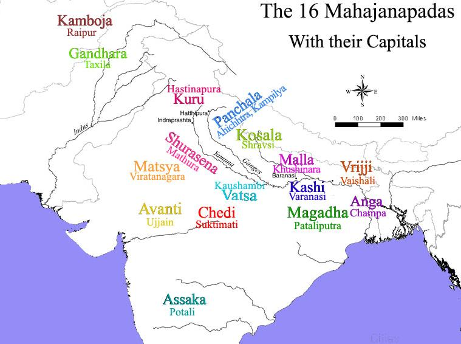 |
Promoted urban governance, early coinage systems | Annexed by Magadha under Bimbisara |
| Assaka | — | — (Kings) | ~6th–4th BCE | Potali | Southernmost Mahajanapada | Controlled Godavari trade routes | Monarchical rule, regional trade | Absorbed by Satavahanas |
| Avanti | Pradyota | Pradyota | ~6th–5th BCE | Ujjain/Mahishmati | Contemporary of Buddha | Developed Ujjain as a Buddhist and trade center | Monarchical rule, iron industry, Buddhist patronage | Annexed by Shishunaga of Magadha |
| Chedi | — | — (Kings) | ~6th–4th BCE | Sothivati | Mentioned in Mahabharata | Maintained regional influence, allied with Yadavas | Monarchical rule, Vedic traditions | Subdued by Magadha’s conquests |
| Gandhara | — | Pukkusati | ~6th–4th BCE | Taxila | — | Established Taxila University, major Silk Route hub | Trade with Persia, Central Asia; Buddhist leanings | Conquered by Achaemenid Empire |
| Kamboja | — | — (Kings/Republic) | ~6th–4th BCE | Rajapura | — | Famous for cavalry, exported horses to India | Monarchical, later republican; trade-focused | Influenced by Mauryan conquests |
| Kashi | — | — (Various Kings) | ~6th–4th BCE | Varanasi | — | Developed as a major religious, educational, and silk trade center | Supported Vedic rituals, artisan guilds | Conquered by Kosala, later Magadha |
| Kosala | Ikshvaku | Prasenajit | ~6th–5th BCE | Shravasti/Ayodhya | Contemporary of Buddha | Strengthened Kosala via Magadha alliance, built Jetavana monastery | Patronized Buddhism, supported trade networks | Annexed by Magadha under Ajatashatru |
| Kuru | — | — (Kings/Republic) | ~6th–4th BCE | Indraprastha/Hastinapura | Mahabharata fame | Transitioned to republic, center of Vedic culture | Vedic sacrifices, early republican governance | Absorbed by Magadha’s expansion |
| Magadha | Haryanka | Bimbisara | ~544–492 BCE | Rajgir (Girivraja) | Shrenika (Leader of Guilds) | Conquered Anga, formed alliances with Kosala, Vaishali; contemporary of Buddha | Patronized Buddhism, Jainism; introduced administrative divisions | Imprisoned/killed by son Ajatashatru |
| Ajatashatru | ~492–460 BCE | Rajgir, later Pataliputra | Kunika | Defeated Vajjis using war machines, fortified Pataliputra, hosted 1st Buddhist Council | Centralized military, aggressive expansion, Buddhist patronage | Killed by son Udayin | ||
| Udayin | ~460–444 BCE | Pataliputra | — | Founded Pataliputra as permanent capital, strengthened Magadha’s defenses | Fortifications, early urban planning | Assassinated, dynasty weakened | ||
| Shishunaga | Shishunaga | ~413–395 BCE | Rajgir/Pataliputra | — | Destroyed Pradyota dynasty of Avanti, consolidated Magadha | Strengthened centralized rule, military reforms | Succeeded by son Kalashoka | |
| Kalashoka | ~395–367 BCE | Pataliputra | Kakavarna | Hosted 2nd Buddhist Council at Vaishali, stabilized empire | Patronized Buddhism, supported monastic communities | Assassinated, dynasty ended | ||
| Malla | — | — (Oligarchy) | ~6th–4th BCE | Kushinagar/Pava | Gana Rajya (Republic) | Site of Buddha’s Mahaparinirvana, Mahavira’s death | Clan-based governance, Buddhist and Jain support | Absorbed by Magadha’s expansion |
| Matsya | — | — (Kings) | ~6th–4th BCE | Viratanagara | Mahabharata ally | Maintained regional autonomy, allied with Kurus | Monarchical rule, Vedic traditions | Absorbed by Magadha |
| Panchala | — | — (Kings/Republic) | ~6th–4th BCE | Ahichchhatra/Kampilya | Mahabharata connection | Prominent Vedic learning center, minted early coins | Supported Brahmanical schools, later republican | Subdued by Nanda Empire |
| Shurasena | Yadava | — (Kings/Republic) | ~6th–4th BCE | Mathura | Associated with Krishna | Developed Mathura as Bhagavata cult center | Monarchical, later republican; Vaishnava patronage | Conquered by Magadha |
| Vatsa | Paurava | Udayana | ~6th–5th BCE | Kaushambi | Hero of Sanskrit dramas | Developed Kaushambi as a trade hub, allied with Magadha | Buddhist influence, patronized arts and drama | Annexed by Magadha under Ajatashatru |
| Vrijji | Lichchhavi | — (Oligarchy) | ~6th–4th BCE | Vaishali | Gana Rajya (Republic) | Formed confederacy of eight clans, pioneered republican governance | Assembly-based rule, Buddhist patronage | Conquered by Ajatashatru’s military strategies |
| Nanda Empire (~345–321 BCE) | ||||||||
| Nanda Empire | Nanda Dynasty | Mahapadma Nanda | ~345–329 BCE | Pataliputra | Ekarat, Sarvakshatrantaka | Subjugated most Mahajanapadas; established Magadha as the paramount power in North India | Highly centralized bureaucracy; enormous revenue through systematic taxation | Succeeded by his sons; administrative unpopularity grew |
| Dhana Nanda | ~329–321 BCE | Pataliputra | Agrammes (Greek sources) | Maintained a massive standing army; reputation of strength discouraged Alexander’s advance | Oppressive taxation and autocratic rule led to widespread discontent | Overthrown by Chandragupta Maurya with Chanakya’s support | ||
| Maurya Empire (~322–185 BCE) | ||||||||
| Maurya Empire | Maurya Dynasty | Chandragupta Maurya | ~322–298 BCE | Pataliputra | Founder of Maurya Empire | Defeated Nanda dynasty; defeated Seleucus Nicator (305 BCE); unified North India; extended empire to Afghanistan | Arthashastra-based centralized administration; Jainism patronage | Abdicated throne; became Jain monk; died at Shravanabelagola |
| Bindusara | ~298–273 BCE | Pataliputra | Amitraghata (“Slayer of enemies”) | Consolidated Mauryan rule; extended control to Deccan (except Kalinga); maintained diplomatic relations with Hellenistic kingdoms | Continued Mauryan bureaucracy; patronized Ajivika sect | Natural death; succession struggle followed | ||
| Ashoka the Great | ~268–232 BCE | Pataliputra | Devanampiya, Piyadassi | Conquest of Kalinga; issuance of Major & Minor Rock Edicts; spread of Buddhism to Sri Lanka and Southeast Asia | Dhamma policy; religious tolerance; hospitals, roads, rest houses; Third Buddhist Council | Natural death; administrative overstretch weakened empire | ||
| Kunala | c. 232 BCE (traditional accounts) | Taxila (as Viceroy) | Prince; mentioned in Buddhist traditions (status as emperor disputed) | Governorship of Taxila mentioned in later Buddhist sources | Buddhist leanings (traditional accounts) | Not firmly attested as emperor; succession unclear | ||
| Dasharatha | ~232–224 BCE | Pataliputra | Grandson of Ashoka | Issued cave inscriptions; dedicated Barabar caves to Ajivikas | Continued Ashokan religious tolerance; Ajivika patronage | Loss of western provinces; authority declined | ||
| Samprati | ~224–215 BCE (traditional Jain chronology) | Ujjain / Pataliputra | Called “Jain Ashoka” in Jain traditions (not epigraphically attested) | Jain missionary activity mentioned in later Jain texts; construction of Jain temples (traditional accounts) | Patronage of Jainism; religious tolerance | Historicity and reign details debated among historians | ||
| Brihadratha | ~187–185 BCE | Pataliputra | Last Mauryan ruler | Ruled a diminished empire; no major territorial control | Weak central authority | Assassinated by Pushyamitra Shunga; Maurya dynasty ended | ||
| Post-Maurya / Pre-Gupta Period (~2nd Century BCE–3rd Century CE) | ||||||||
| Indo-Greek Kingdom | Euthydemid Dynasty | Demetrius I | ~200–180 BCE | Bactra → Taxila | Founder of Indo-Greek rule in India | Invaded north-west India after Mauryan decline; occupied Gandhara and Punjab | Introduced Hellenistic political control; issued bilingual coins (Greek legends) | Empire expanded but fragmented under successors |
| Euthydemid Dynasty | Apollodotus I | ~180–160 BCE | Taxila / Western Punjab | First Indo-Greek ruler to issue coins with Indian symbols | Consolidated Indo-Greek rule in India; coins in Greek and Prakrit (Kharosthi) | Strengthened Indo-Greek administration in Punjab | Succeeded by Menander I | |
| Euthydemid Dynasty | Menander I (Milinda) | ~165–130 BCE | Sagala (Sialkot) | Most famous Indo-Greek ruler | Expanded deep into Punjab; associated with *Milinda Panha* dialogue with Nagasena | Patronized Buddhism; bilingual coins (Greek–Prakrit); Buddhist tradition regards him as convert | Kingdom fragmented after his death | |
| Later Indo-Greek | Antialcidas | ~115–95 BCE | Taxila | Known from Heliodorus Pillar | Sent Heliodorus as ambassador to Shunga ruler Bhagabhadra | Evidence of Indo-Greek–Indian diplomatic relations; Heliodorus pillar shows early Vaishnavism | Indo-Greek power confined to NW India | |
| Later Indo-Greek (Fragmented Phase) | Strato I | ~125–110 BCE | Punjab / Mathura | Ruled easternmost Indo-Greek territories | Issued coins showing Greek and Indian deities; evidence of cultural syncretism | Continued Hellenistic traditions with Indian elements | Gradual displacement by Indo-Scythians (Shakas) | |
| Shunga Empire | Shunga Dynasty | Pushyamitra Shunga | ~185–149 BCE | Pataliputra / Vidisha | Senapati (Mauryan army commander) | Assassinated Mauryan ruler Brihadratha; established Shunga rule; defended north India against Indo-Greek incursions | Brahmanical revival; Ashvamedha sacrifices (as per Puranic tradition); Buddhist structures like Bharhut and Sanchi continued (patronage debated) | Natural death; dynasty continued under successors |
| Agnimitra | ~149–141 BCE | Vidisha | Known from Kalidasa’s *Malavikagnimitram* | Consolidated Shunga authority in central India; defended against Indo-Greeks | Patronage of Sanskrit drama; support to Brahmanical rituals | Succeeded by Vasujyeshtha | ||
| Vasujyeshtha | ~141–131 BCE | Vidisha | — | Maintained territorial control; limited historical records | Continued Brahmanical patronage | Succeeded by Vasumitra | ||
| Bhagabhadra | ~110 BCE | Vidisha | Known from Heliodorus Pillar inscription | Hosted Indo-Greek ambassador Heliodorus; evidence of diplomatic relations | Vaishnava patronage; Heliodorus pillar dedicated to Vasudeva | Followed by later Shunga rulers | ||
| Devabhuti | ~83–73 BCE | Vidisha | Last Shunga ruler (Puranic sources) | Ruled a weakened empire; court intrigue and decline | Brahmanical orientation; limited political control | Assassinated by minister Vasudeva Kanva; Shunga dynasty ended | ||
| Kanva Dynasty | Kanva Dynasty | Vasudeva Kanva | ~73–66 BCE | Pataliputra | Brahmin minister of Shungas | Assassinated last Shunga ruler Devabhuti; established Kanva rule over Magadha | Brahmanical orientation; continued Shunga administrative structure | Succeeded by Bhumimitra |
| Bhumimitra | ~66–52 BCE | Pataliputra | — | Exercised limited authority over Magadha; Kanva power confined to core Gangetic region | Brahmanical traditions; no major cultural or political initiatives | Succeeded by Narayana | ||
| Narayana | ~52–40 BCE | Pataliputra | — | Ruled a declining polity; faced pressure from Satavahanas and regional powers | Continued Brahmanical practices; weak central control | Succeeded by Susarman | ||
| Susarman | ~40–28 BCE | Pataliputra | Last Kanva ruler | Nominal authority; Kanva rule largely symbolic by this stage | No significant patronage recorded | Kanva dynasty ended; Magadha absorbed into Satavahana sphere (indirect control) | ||
| Satavahana Empire | Satavahana Dynasty | Simuka | ~100–70 BCE | Pratishthana (Paithan) | Founder | Established Satavahana rule in Deccan; ended Kanva authority in Magadha indirectly; controlled western Deccan trade routes | Issued lead and copper coins; supported Brahmanical traditions | Succeeded by Kanha (Krishna) |
| Kanha (Krishna) | ~70–60 BCE | Pratishthana | — | Consolidated Deccan territories; extended control into central India | Continued trade links with western ports; patronized Brahmanical institutions | Succeeded by Satakarni I | ||
| Satakarni I | ~60–37 BCE | Pratishthana | Husband of Naganika | Performed Ashvamedha and Rajasuya; expanded influence to Malwa and western India | Strong Brahmanical patronage; Naneghat inscription records sacrifices | Died early; regency of Queen Naganika | ||
| Gautamiputra Satakarni | ~106–130 CE | Pratishthana | Saka-Yavana-Pahlava-nisudana | Defeated Western Kshatrapa ruler Nahapana; restored Satavahana supremacy over Deccan | Patronized both Brahmanism and Buddhism; reissued Nahapana’s silver coins | Succeeded by Vasishthiputra Pulumavi | ||
| Vasishthiputra Pulumavi | ~130–160 CE | Pratishthana | Son of Gautamiputra | Maintained Deccan control; faced renewed pressure from Western Kshatrapas | Issued coins with ship motifs; continued trade with Roman world | Gradual decline; Satavahana power fragmented by 3rd century CE | ||
| Indo-Parthian Kingdom | Gondopharid Dynasty | Gondophares I | ~19–46 CE | Taxila / Seistan (regional centers) | Founder of Indo-Parthian rule in NW India | Extended control over Arachosia, Sindh, Punjab; associated with St. Thomas in Christian tradition (not historical certainty) | Issued bilingual Greek–Prakrit coins; Parthian (Zoroastrian-influenced) background with religious tolerance | Succeeded by successors; authority weakened over time |
| Abdagases | ~46–60 CE | Taxila / Seistan | Nephew and successor of Gondophares | Controlled eastern Indo-Parthian territories; known mainly from silver drachms | Maintained Parthian-style administration; continued Indo-Roman trade links | Gradually displaced by expanding Kushans | ||
| Orthagnes / Sases | ~60–80 CE | Gandhara region | Later Indo-Parthian rulers | Represent last phase of Indo-Parthian authority in NW India | Continued Parthian-style coinage; declining political control | Absorbed into Kushan Empire under Kujula Kadphises | ||
| Śakas (Western Satraps) | Kardamaka Dynasty | Chastana | ~78–130 CE | Ujjain | Founder of Kardamaka line of Western Satraps | Contemporary of Satavahana ruler Gautamiputra Satakarni | Established power in Malwa & Kathiawar | His dynasty ruled for ~300 years |
| Kardamaka Dynasty | Rudradaman I | ~130–150 CE | Ujjain | Mahakshatrapa | Junagadh inscription (in Sanskrit); defeated Satavahanas | Repaired Sudarshana lake; promoted Sanskrit literature | Powerful ruler; stabilized kingdom | |
| Kardamaka Dynasty | Rudrasimha I | ~175–197 CE | Ujjain | Mahakshatrapa | Continued expansion & consolidation | Maintained trade networks with Roman Empire | Weakened gradually after his reign | |
| Kardamaka Dynasty | Rudrasimha III | ~388–415 CE | Ujjain | Last Western Satrap ruler | Defeated by Gupta emperor Chandragupta II (Vikramaditya) | End of Śaka power in western India | Western Satraps absorbed into Gupta Empire | |
| Kushan Empire | Kushan Dynasty | Kujula Kadphises | ~30–80 CE | Purushapura | Yabgu | Unified Yuezhi tribes, conquered Gandhara | Promoted Silk Route trade, issued early Kushan coins | Succeeded by Vima Takto |
| Vima Takto | ~80–105 CE | Purushapura/Mathura | Soter Megas | Expanded into Northwest India, established Mathura as a center | Standardized coinage, supported mixed religions | Succeeded by Vima Kadphises | ||
| Vima Kadphises | ~105–127 CE | Purushapura/Mathura | Maharajadhiraja | Introduced gold coinage, expanded trade with Rome | Patronized Shaivism, promoted trade networks | Succeeded by Kanishka I | ||
| Kanishka I | ~127–151 CE | Purushapura/Mathura | Shaonanoshao | Hosted 4th Buddhist Council, developed Gandhara and Mathura art | Mahayana Buddhism, Sanskrit literature, Greco-Buddhist art | Empire fragmented after successors | ||
| Gupta Empire (~240–550 CE) | ||||||||
| Gupta Empire | Gupta Dynasty | Sri Gupta | ~240–280 CE | — | Maharaja | Founder of the Gupta lineage; ruled a small territory in Magadha region | Early local governance; beginnings of Gupta political authority | Succeeded by Ghatotkacha |
| Ghatotkacha | ~280–319 CE | — | Maharaja | Strengthened Gupta position prior to imperial expansion | Prepared ground for rise of Chandragupta I | Succeeded by Chandragupta I | ||
| Chandragupta I | ~319–335 CE | Pataliputra | Maharajadhiraja | Marriage with Lichchhavi princess; Gupta Era (319–320 CE) | Issued gold coins; centralized monarchy | Natural death; empire expanded | ||
| Samudragupta | ~335–380 CE | Pataliputra | Kaviraja, Parakramanka | Allahabad Pillar inscription; Dakshinapatha campaign; Ashvamedha | Religious tolerance; patron of arts, music, Brahmanism | Natural death; empire at peak | ||
| Chandragupta II | ~380–415 CE | Pataliputra / Ujjain | Vikramaditya, Sakari | Defeated Western Kshatrapas; access to Arabian Sea trade | Navaratnas (Kalidasa); Vaishnavism; cultural florescence | Natural death; Golden Age continued | ||
| Kumaragupta I | ~415–455 CE | Pataliputra | Mahendraditya | Patron of Nalanda; repelled Pushyamitras | Diverse coinage; promotion of education | Natural death; Huna pressure emerged | ||
| Skandagupta | ~455–467 CE | Pataliputra | — | Successfully resisted Huna invasions; repaired Sudarshana lake | Preserved Gupta administration under severe economic strain | Natural death; empire weakened | ||
| Narasimhagupta (Baladitya) | ~467–473 CE | Pataliputra | — | Associated with resistance to Hunas (as per some sources); Nalanda patronage | Buddhist support; temporary stabilization | Succeeded by Kumaragupta II | ||
| Kumaragupta II | ~473–476 CE | Pataliputra | Kramaditya | Maintained limited eastern control | Weak central authority; declining revenues | Succeeded by Buddhagupta | ||
| Buddhagupta | ~477–495 CE | Pataliputra | — | Issued inscriptions; ruled fragmented territories | Administrative decline amid Huna pressure | Gupta authority further weakened | ||
| Vishnugupta | ~540–550 CE | Pataliputra (nominal) | — | Last recognized Gupta ruler with nominal authority | Minimal political control; symbolic rule | End of Gupta imperial power | ||
| Contemporary / Post-Gupta Dynasties (~3rd–7th Century CE) | ||||||||
| Vakataka Dynasty | Vakataka Dynasty | Vindhyashakti | ~250–270 CE | — (Vidarbha region) | Founder | Laid foundations of Vakataka power in Vidarbha | Brahmanical traditions; early consolidation | Succeeded by Pravarasena I |
| Pravarasena I | ~270–330 CE | Nandivardhana (probable) | Samrat | Performed four Ashvamedhas; expanded Vakataka authority | Strong Brahmanical patronage; Prakrit inscriptions | Empire divided into Nandivardhana & Vatsagulma branches | ||
| Rudrasena II | ~400–410 CE | Nandivardhana | — | Marriage with Prabhavatigupta (Gupta alliance) | Vaishnava patronage; strong Gupta political influence | Died early; regency of Prabhavatigupta | ||
| Prithvisena I | ~410–430 CE | Nandivardhana | — | Stabilized kingdom after regency period | Continued Vaishnava orientation; regional governance | Dynasty weakened in later decades | ||
| Kadamba Dynasty | Kadamba Dynasty | Mayurasharma | ~345–365 CE | Banavasi | Founder | Established first native dynasty of Karnataka after conflict with Pallavas | Brahmanical traditions; early Kannada & Sanskrit inscriptions (Talagunda) | Dynasty consolidated under successors |
| Kakusthavarman | ~435–455 CE | Banavasi | — | Expanded kingdom; maintained diplomatic ties with Guptas & Vakatakas | Vaishnava patronage; matrimonial alliances with major dynasties | Peak of Kadamba political influence | ||
| Ravivarman | ~485–519 CE | Banavasi | Assumed imperial titles | Issued gold coins; asserted independent sovereignty in northern Karnataka | Shaiva & Vaishnava patronage; temple grants | Declined under rising Chalukya power | ||
| Maitraka Dynasty | Maitraka | Bhatarka | ~500–524 CE | Valabhi | Senapati (Gupta vassal) | Founded Maitraka rule in Saurashtra as a Gupta military governor | Shaiva in royal titles; patronized Buddhist institutions | Initially subordinate to Guptas |
| Dhruvasena I | ~524–544 CE | Valabhi | Maharaja (later phase) | Issued land grants; strengthened Valabhi as an educational center | Buddhist learning alongside Brahmanical traditions | Succeeded by later Maitraka rulers | ||
| Dharasena II | ~600–620 CE | Valabhi | — | Consolidated Maitraka political power in western India | Continued patronage of Buddhist & Sanskrit learning | Valabhi at its political peak | ||
| Maukhari Dynasty | Maukhari | Ishvaravarman | ~550–570 CE | Kannauj | Maharajadhiraja | Asserted Maukhari independence; checked Later Gupta authority in the Ganga valley | Primarily Shaiva; limited Buddhist patronage | Established Kannauj as a major political center |
| Grahavarman | ~590–610 CE | Kannauj | Last effective Maukhari ruler | Married Rajyashri (Harsha’s sister); alliance with Pushyabhutis | Shaiva patronage; maintained religious tolerance | Killed by Devagupta of Malwa; Maukhari power collapsed | ||
| Western Ganga Dynasty | Ganga Dynasty | Kongunivarma Madhava | ~350–370 CE | Kolar region (later Talakadu) | Founder; Dharmamaharaja | Established Western Ganga rule in southern Karnataka after decline of Satavahanas | Strong patronage of Jainism; support to Brahmanical traditions | Maintained early independence |
| Durvinita | ~529–579 CE | Talakadu | Scholar-king | Asserted Ganga autonomy against Pallavas; renowned Sanskrit and Kannada scholar | Major patron of Jainism; promoted Kannada literature and Sanskrit learning | Dynasty continued; later became Chalukya vassals | ||
| Later Guptas | Later Gupta | Krishnagupta | ~490–505 CE | Magadha | — | Early ruler of the Later Gupta line in post-imperial Magadha; limited political authority | Brahmanical (Vaishnava) orientation with religious tolerance | Restricted to regional control |
| Adityasena | ~670–690 CE | Magadha | — | Performed Ashvamedha to revive Gupta imperial prestige; known from Deo-Baranark inscription | Strong Vaishnava patronage; use of imperial Gupta titles | Decline due to Maukhari–Harsha ascendancy and political fragmentation | ||
| Kalabhra Interregnum | — | — (Obscure rulers) | ~300–600 CE | Tamilakam (South India) | — | Displaced early Chera, Chola, and Pandya rulers; period of political disruption in South India | Patronized Buddhism and Jainism; challenged Brahmanical dominance | Overthrown by Pallavas, revived Pandyas, and Chalukyas |
| Early Cholas (Sangam Cholas) | Chola Dynasty (Early Phase) | Early Chola Polity | ~3rd Century BCE – 3rd Century CE | Kaveri Delta (Tamilakam) |
|
|
|
Declined later during Kalabhra interregnum |
| Ellalan (Elara) | ~2nd Century BCE | Anuradhapura (Sri Lanka) |
|
|
|
Defeated by Dutugemunu of Sri Lanka | ||
| Karikala Chola | ~1st–2nd Century CE | Uraiyur; port at Kaveripattinam (Puhar) |
|
|
|
Chola power declined after Sangam age | ||
| Chera Dynasty (Early Cheras) | Chera Dynasty | Uthiyan Cheralathan | ~1st Century BCE – 1st Century CE | Karur (Vanji) | — | Associated with Sangam age; controlled western trade routes and ports like Muziris | Patronized Sangam poets; active Indo-Roman trade (pepper, spices) | Succession disputes and decline during Kalabhra interregnum |
| Nedunjeral Adan | ~2nd Century CE | Karur (Vanji) | — | Fought Cholas and Pandyas; celebrated for naval and military exploits in Sangam poems | Patronage to Tamil literature; sustained maritime trade with Roman world | Weakened prior to Kalabhra domination | ||
| Pandya Dynasty (Early Medieval Revival) | Pandya | Kadungon | ~590–620 CE | Madurai | — | Ended Kalabhra rule; restored Pandya authority in Tamilakam | Shaiva revival; revival of Tamil literary and temple traditions | Foundation laid for Later Pandya resurgence |
| Pallava Dynasty | Pallava Dynasty | Sivaskandavarman | ~3rd century CE | Kanchipuram | – | Issued grants (Hirehadagalli Copper Plate), earliest known Pallava ruler | Performed Ashvamedha, patronized Brahmanism | Early expansion and state formation |
| Simhavarman II | ~4th century CE | Kanchipuram | – | Consolidated Pallava power in Tamil and Telugu regions | Hindu patronage | Predecessor to later imperial Pallavas | ||
| Simhavishnu | ~575–600 CE | Kanchipuram | Avanisimha | Defeated Kalabhras, revived Pallava power | Vaishnava patronage, early Dravidian temples | Established dominance, succeeded by Mahendravarman I | ||
| Mahendravarman I | ~600–630 CE | Kanchipuram | Vichitrachitta | Initiated rock-cut temples, authored *Mattavilasa Prahasana* | Shaivism, music, painting patronage | Succeeded by Narasimhavarman I | ||
| Narasimhavarman I | ~630–668 CE | Kanchipuram | Mamalla, Vatapikonda | Sacked Badami (defeated Pulakesin II), built Mahabalipuram monuments | Shaiva patronage, Dravidian architecture | Peak of Pallava power, natural death | ||
| Paramesvaravarman I | ~670–695 CE | Kanchipuram | – | Faced Chalukya invasions, defended Kanchi | Shaivism | Stability maintained despite wars | ||
| Narasimhavarman II (Rajasimha) | ~695–722 CE | Kanchipuram | Rajasimha | Built Kailasanatha Temple (Kanchi), expansion of art and architecture | Shaiva patronage, refined Dravidian style | High cultural zenith | ||
| Nandivarman II (Pallavamalla) | ~731–796 CE | Kanchipuram | Pallavamalla | Restored dynasty after internal strife, faced Rashtrakutas and Pandyas | Shaivism and Vaishnavism co-patronage | Later consolidation phase | ||
| Dantivarman | ~796–846 CE | Kanchipuram | – | Decline phase; faced Rashtrakutas and Pandyas | Hindu patronage | Weak political control | ||
| Nandivarman III | ~846–869 CE | Kanchipuram | – | Temporary revival of power; alliances with Gangas | Shaivism | Brief stability before decline | ||
| Aparajitavarman | ~880–897 CE | Kanchipuram | – | Last ruler; defeated by Aditya I (Chola) | – | End of Pallava rule; absorbed into Chola Empire | ||
| Chalukyas of Badami | Chalukya Dynasty | Pulakeshin I | ~543–566 CE | Badami (Vatapi) | Founder, Satyashraya | Founded the Chalukya dynasty; established Vatapi as capital | Early consolidation of power; Vaishnava leanings | Foundation of Chalukya rule |
| Kirtivarman I | ~566–597 CE | Badami | — | Conquered Kadambas, Mauryas of Konkan; expanded kingdom | Early patronage of rock-cut architecture | Succeeded by Mangalesha | ||
| Mangalesha | ~597–609 CE | Badami | — | Regent for nephew Pulakeshin II; patronized cave temples | Vaishnava and Jain patronage | Overthrown by Pulakeshin II | ||
| Pulakeshin II | ~609–642 CE | Badami | Satyashraya, Parameshwara | Defeated Harsha on Narmada; checked Pallavas; received Persian embassy | Aihole inscription; Xuanzang visit; peak of Chalukya power | Killed after Pallava invasion led by Narasimhavarman I | ||
| Vikramaditya I | ~655–680 CE | Badami | Rajamalla | Restored Chalukya power after Pallava invasion; reasserted control | Temple patronage; revival phase | Natural death | ||
| Vinayaditya | ~680–696 CE | Badami | — | Conducted successful military expeditions in Deccan and western India | Maintained imperial stability; military administration | Natural death | ||
| Vijayaditya | ~696–733 CE | Badami | — | Long and stable reign; consolidation of administration | Temple building and cultural patronage | Natural death | ||
| Vikramaditya II | ~733–746 CE | Badami | — | Defeated Pallavas; sacked Kanchipuram; asserted Chalukya supremacy | Virupaksha Temple at Pattadakal; architectural zenith | Succeeded by Kirtivarman II | ||
| Kirtivarman II | ~746–753 CE | Badami | Last Chalukya ruler | Faced Rashtrakuta challenge under Dantidurga | Weak administration | Defeated by Rashtrakuta Dantidurga; end of Badami Chalukyas | ||
| Vardhana Dynasty | Pushyabhuti / Vardhana | Prabhakaravardhana | ~580–605 CE | Thanesar | Founder of political power | Established Thanesar as a strong regional kingdom; repelled Hunas | Shaiva and Surya worship; strong military organization | Succeeded by Rajyavardhana |
| Rajyavardhana | ~605–606 CE | Thanesar | — | Defeated Malwa ruler Devagupta; allied with Maukhari dynasty | Military consolidation of north India | Killed by Shashanka of Gauda | ||
| Harshavardhana | ~606–647 CE | Thanesar → Kannauj | Shiladitya (Xuanzang) | Unified large parts of North India; shifted capital to Kannauj | Patron of Buddhism; Kannauj & Prayag assemblies; Nalanda support | Died heirless; empire disintegrated | ||
| Naravardhana | Pre-6th century CE | Thanesar (lineage) | Ancestor | Early Pushyabhuti lineage ruler (mentioned in inscriptions) | Dynastic continuity (not political founder) | Pre-imperial phase | ||
| Conflict / Battle Name | Time (Approx.) | Location | Participants | Purpose / Context | Outcome | Key Commanders / Notes |
|---|---|---|---|---|---|---|
| Magadha–Vajji War | ~484–468 BCE | Ganga basin, Vaishali region |
|
|
|
|
| Battle of the Hydaspes | 326 BCE | Hydaspes (Jhelum) River, Punjab |
|
|
|
|
| Seleucid–Mauryan War | ~305–303 BCE | North-west India (Indus region) |
|
|
|
|
| Kalinga War | ~262–261 BCE | Kalinga (modern Odisha) |
|
|
|
|
| Satavahana–Saka Conflict | Late 1st – early 2nd century CE | Western Deccan, Gujarat, Malwa |
|
|
|
|
| Samudragupta’s Campaigns | ~335–380 CE | Aryavarta & Dakshinapatha |
|
|
|
|
| Gupta–Śaka War | Late 4th – early 5th century CE | Malwa, Gujarat, Saurashtra |
|
|
|
|
| Skandagupta’s Huna Campaigns | Mid-5th century CE | North-west India |
|
|
|
|
| Battle on the Narmada | ~618–630 CE | Narmada River |
|
|
|
|
| Sack of Vatapi | ~642 CE | Vatapi (Badami) |
|
|
|
|
| Invading Group | Approximate Period | Region(s) Affected | Key Leaders / Events | Impact / Significance |
|---|---|---|---|---|
| Indo-Aryans | ~1500 BCE onwards |
|
|
|
| Persian Achaemenid Empire | ~6th–4th century BCE |
|
|
|
| Greeks (Alexander the Great) | 326 BCE |
|
|
|
| Indo-Greeks | ~2nd century BCE – early 1st century CE |
|
|
|
| Śakas (Indo-Scythians) | ~1st century BCE onwards |
|
|
|
| Indo-Parthians | ~1st century CE |
|
|
|
| Kushans | ~1st–3rd century CE |
|
|
|
| White Huns (Hephthalites) | ~5th–6th century CE |
|
|
|
| Figure / Text | Time (Approx.) | Location / Region | Works / Description & Key Details | Contemporary Ruler(s) / Period |
|---|---|---|---|---|
| Vedic Rishis / Vyasa (Traditional Compiler) | Composition & redaction ~1500–500 BCE (oral tradition much older) | North-West & North India (Sapta Sindhu → Gangetic Plains) |
Sacred Texts (Vedas - Shruti):
|
Vedic Period |
| Upanishadic Sages (Anonymous) | ~800–500 BCE (some later Upanishads possibly post-600 BCE) | North India (Gangetic Plains) |
Philosophical Texts (Vedanta - part of Shruti):
|
Late Vedic Period / Rise of Mahajanapadas |
| Shaunaka | Later Vedic / Early Post-Vedic period (dating debated) | North India (Naimisha Forest tradition) |
Rishi / Scholar:
|
Late Vedic / Mahajanapadas |
| Valmiki (Traditional Author) | Core composition earlier; layers added c. 500 BCE – 500 CE | North India? |
Epic Poetry (Itihasa / Adi Kavya):
|
Mahajanapadas to Gupta period (layered text) |
| Badarayana (Vyasa) | ~400 BCE – early CE (debated) | North India? |
Philosophy / Compilation:
|
Post-Vedic / Shunga–Kushan–Satavahana milieu |
| Vyasa (Traditional Author/Compiler) | Compilation & redaction ~400 BCE – 400 CE | North India? |
Epic Tradition (Itihasa):
|
Post-Vedic to Gupta period (textual layering) |
| Panini | ~6th–4th Century BCE (likely closer to 5th Century BCE) | Gandhara (NW India, possibly Shalatula) |
Books (Grammar):
|
Mahajanapada Period / Pre-Maurya |
| Kautilya (Chanakya / Vishnugupta) | ~4th Century BCE | Magadha (Pataliputra) |
Books (Statecraft/Economics):
|
Chandragupta Maurya (Maurya Empire) |
| Bharata Muni (Traditional Author) | ~200 BCE – 200 CE (layered composition, debated) | Uncertain (possibly North or South India) |
Books (Performing Arts):
|
Shunga / Satavahana / Kushan milieu |
| Patanjali (The Grammarian) | ~2nd Century BCE | North India (exact location uncertain) |
Books (Grammar/Linguistics):
|
Shunga Period (likely during Pushyamitra Shunga) |
| Manu (Traditional Author) | Compilation & redaction ~200 BCE – 200 CE | North India? |
Laws / Social Code (Dharmashastra):
|
Shunga / Satavahana / Kushan periods |
| Ashvaghosha | ~1st–2nd Century CE | North India (likely Purushapura / Peshawar) |
Books (Buddhist Poetry/Philosophy):
|
Kanishka I (Kushan Empire) |
| Charaka | ~1st–2nd Century CE (with later redactions) | North India? |
Books (Medicine - Ayurveda):
|
Kushan Period (traditional association, possibly under Kanishka I) |
| Nagarjuna | ~150–250 CE | Uncertain (traditionally associated with South India / Andhra region; other views place him in Northwest India) |
Books (Buddhist Philosophy - Madhyamaka):
|
Satavahana Period (probable, often linked to Yajña Sri Satakarni) |
| Amarasimha | ~4th Century CE (dating debated) | Uncertain (traditionally linked with the Gupta cultural milieu) |
Books (Lexicography):
|
Gupta Period (traditionally associated with Chandragupta II) |
| Sushruta | Core tradition ancient; text compiled ~3rd–4th Century CE | Varanasi (Kashi)? |
Books (Medicine - Ayurveda):
|
Uncertain (traditions predate Gupta period) |
| Dhanvantari | Mythological / traditional chronology | - |
Contribution (Medicine - Ayurveda):
|
Mythological / traditional framework |
| Shanku | 4th–5th Century CE (traditional dating) | Ujjain (traditionally associated with Gupta court) |
Contribution (Architecture & Technical Knowledge):
|
Gupta Period (traditional association with Chandragupta II) |
| Shudraka (Traditional Author) | ~3rd–5th Century CE (dating debated) | Uncertain (possibly Ujjain) |
Plays (Prakarana):
|
Late Kushan / Early Gupta milieu (probable) |
| Vishakhadatta | ~4th–5th Century CE (alternative dates up to 9th CE debated) | Uncertain (possibly Pataliputra) |
Plays (Historical/Political):
|
Gupta Period (probable, based on internal textual evidence) |
| Kalidasa | ~4th–5th Century CE | Ujjain (traditionally associated) |
Plays (Nataka):
Lyric Poetry (Khandakavya): Meghaduta, Ritusamhara |
Gupta Period (traditionally linked with Chandragupta II Vikramaditya) |
| Aryabhata I | Born 476 CE | Kusumapura (Pataliputra?) / Ashmaka (debated) |
Books (Mathematics & Astronomy):
|
Gupta Period (Buddha Gupta / early 6th century context) |
| Bhartrihari | ~5th Century CE | Uncertain (possibly Ujjain) |
Books (Grammar/Philosophy):
|
Late Gupta / Post-Gupta intellectual milieu |
| Varahamihira | ~Early 6th Century CE (c. 505–587 CE) | Ujjain (Avanti) |
Books (Astronomy/Astrology/Encyclopedic):
|
Post-Gupta / Aulikara-era Malwa (probable) |
| Banabhatta | 7th Century CE | Kannauj (Harsha's court) & Pritikuta (birthplace) |
Books (Prose Romance/Biography):
Devotional Hymn: (Chandikashtaka – traditional attribution) |
Harshavardhana (Pushyabhuti Dynasty) |
| Harshavardhana (Emperor Harsha) | Reigned c. 606–647 CE | Kannauj (Capital), Thanesar (Original Seat) |
Plays (Attributed):
|
Harshavardhana (Self) |
| Brahmagupta | Born 598 CE; major work composed 628 CE | Bhillamala (Bhinmal, Rajasthan?) / Ujjain? |
Books (Mathematics & Astronomy):
|
Early medieval western India (political patronage debated) |
| Kumarila Bhatta | ~7th–8th Century CE | Uncertain (possibly Prayaga or eastern India) |
Books (Philosophy – Purva Mimamsa):
|
Post-Harsha intellectual period |
| Dandin | ~7th–8th Century CE | Kanchipuram? (Pallava sphere) |
Books (Literature/Poetics):
|
Pallava cultural milieu (probable) |
| Bhavabhuti | ~Early 8th Century CE | Padmapura (Vidarbha), later Kannauj? |
Plays (Nataka):
|
Yashovarman of Kannauj? / Post-Harsha |
| Shankaracharya (Adi Shankara) | ~Early 8th Century CE (Traditional dates 788–820 CE; earlier dates also proposed) | Born Kaladi (Kerala); travelled extensively across India; death place traditionally associated with Kedarnath |
Books (Philosophy/Commentary – Advaita Vedanta):
|
Post-Harsha period; early medieval regional polities |
| Vijnaneshwara | ~Late 11th / Early 12th Century CE | Kalyani (Western Chalukya capital?) |
Laws (Dharmashastra Commentary):
|
Vikramaditya VI (Western Chalukya Empire) |
| Bilhana | 11th Century CE | Kashmir (origin); later at Kalyani (Western Chalukya court) |
Poetry / Biography:
|
Vikramaditya VI (Western Chalukya Empire) |
| Kalhana | 12th Century CE (Completed 1148–1149 CE) | Kashmir |
Books (History/Chronicle):
|
Jayasimha (Lohara Dynasty of Kashmir) |
| Bhaskara II (Bhaskaracharya) | Born 1114 CE | Vijjadavidda (possibly Bijapur region) / Ujjain (astronomical tradition) |
Books (Mathematics & Astronomy):
|
Late Western Chalukya / Kalachuri / Yadava period |
| Text/Work | Time (Approx.) | Language/Region | Description & Key Details | Category/Subcategory |
|---|---|---|---|---|
| Vedic Literature (~1500–500 BCE) | ||||
| Rigveda | ~1500–1200 BCE | Vedic Sanskrit / North-West Indian subcontinent (Sapta Sindhu region) | Composed by various Rishis such as Vishvamitra, Vamadeva, and Atri. Contains 1028 hymns dedicated to deities like Indra (warrior god), Agni (fire god), and Soma (ritual drink). Oldest Indo-Aryan text and foundational to Vedic religion, reflecting the socio-religious life of early Indo-Aryans. | Vedic Literature / Samhitas |
| Samaveda | ~1200–1000 BCE | Vedic Sanskrit / North India | Composed by various Rishis. A collection of melodies and chants, largely derived from the Rigveda, used primarily in Soma sacrifices. Closely associated with the Udgatri priest and forms the musical foundation of Vedic ritual tradition. | Vedic Literature / Samhitas |
| Yajurveda | ~1200–1000 BCE | Vedic Sanskrit / North India | Sacrificial manual consisting of prose and verse formulas used by the Adhvaryu priest. Closely associated with ritual performance including Ashvamedha. Exists in two major recensions: Krishna (Black) Yajurveda and Shukla (White) Yajurveda, the latter traditionally linked to the Vajasneyi tradition. | Vedic Literature / Samhitas |
| Atharvaveda | ~1200–1000 BCE | Vedic Sanskrit / North India | Traditionally associated with sages Atharvan and Angiras. Contains hymns, spells, and charms dealing with healing, protection, domestic life, and social practices. Relatively less focused on sacrificial ritual compared to other Vedas and provides insight into popular beliefs. | Vedic Literature / Samhitas |
| Brahmanas | ~1000–700 BCE | Vedic Sanskrit / North India | Prose texts composed by various sages, attached to individual Vedas. Important works include Shatapatha Brahmana (Yajurveda) and Aitareya Brahmana (Rigveda). Provide detailed explanations of rituals such as Rajasuya and their symbolic meanings. | Vedic Literature / Brahmanas |
| Aranyakas | ~1000–700 BCE | Vedic Sanskrit / North India | Texts associated with forest-dwelling ascetics and advanced ritual practitioners. Emphasize meditative and symbolic interpretations of rituals and serve as a transitional layer between Brahmanas and Upanishads. | Vedic Literature / Aranyakas |
| Kathā Upanishad | ~800–400 BCE | Vedic Sanskrit / North India | Features the philosophical dialogue between Nachiketa, son of Vajasravasa, and Yama, the god of death. Explores themes of Atman, death, self-knowledge, and liberation, making it a central Upanishadic text. | Vedic Literature / Upanishads |
| Chāndogya Upanishad | ~800–400 BCE | Vedic Sanskrit / North India | Associated with the Samaveda. Contains philosophical discussions on Brahman and meditation, including the teaching of Uddalaka Aruni to his son Shvetaketu expressed in the dictum “Tat Tvam Asi” (You are That). | Vedic Literature / Upanishads |
| Aitareya Upanishad | ~800–400 BCE | Vedic Sanskrit / North India | Linked to the Rigveda and traditionally attributed to sage Aitareya. Discusses the creation of the universe and the emergence of consciousness, focusing on the nature of Atman. | Vedic Literature / Upanishads |
| Mundaka Upanishad | ~800–400 BCE | Vedic Sanskrit / North India | Philosophical text distinguishing higher (para) and lower (apara) knowledge, emphasizing realization of Brahman for liberation. Source of the maxim “Satyameva Jayate” (Truth Alone Triumphs). | Vedic Literature / Upanishads |
| Taittiriya Upanishad | ~800–400 BCE | Vedic Sanskrit / North India | Linked to the Yajurveda. Composed in three sections (Vallis): Shiksha Valli (education and ethics), Ananda or Brahmananda Valli (nature of the self and bliss), and Bhrigu Valli (experiential inquiry into Brahman). Discusses the five koshas (sheaths of existence) and teacher–student traditions. | Vedic Literature / Upanishads |
| Isha Upanishad | ~800–400 BCE | Vedic Sanskrit / North India | Associated with the Shukla Yajurveda. A short Upanishad emphasizing the unity of existence and harmony between action (karma) and renunciation. Opens with the famous line “Isha vasyam idam sarvam” (All this is pervaded by the Lord). | Vedic Literature / Upanishads |
| Brihadaranyaka Upanishad | ~800–400 BCE | Vedic Sanskrit / North India | Linked to the Yajurveda. One of the oldest and largest Upanishads, containing philosophical dialogues such as those between sage Yajnavalkya and King Janaka of Videha. Introduces profound concepts like “Neti Neti” (not this, not this) in the inquiry into Brahman and Atman. | Vedic Literature / Upanishads |
| Kena Upanishad | ~800–400 BCE | Vedic Sanskrit / North India | Associated with the Samaveda. Explores the nature of Brahman through inquiry into the source of sensory and mental powers. Includes the allegorical episode where gods such as Agni and Vayu realize their limitations before the supreme reality. | Vedic Literature / Upanishads |
| Prashna Upanishad | ~800–400 BCE | Vedic Sanskrit / North India | Linked to the Atharvaveda. Structured around six questions posed by students, including Sukesha, to sage Pippalada. Focuses on prana (life-breath) as a cosmic principle, the origin of life, meditation, and the soul’s journey after death. | Vedic Literature / Upanishads |
| Baudhāyana Sulba Sutras | ~800–500 BCE | Sanskrit / North India | Composed by Baudhāyana. Part of the Sulba Sutras within the Kalpa Vedanga, dealing with geometric principles for altar construction. Includes early statements of the Pythagorean theorem (e.g., 3-4-5 triangle) and square-root approximations used in rituals like Agnichayana. | Vedanga / Kalpa (Sulba Sutras) |
| Prabhākaravardhana | ~6th Century CE | Sanskrit / North India | Not a surviving literary text. Refers to historical references concerning King Prabhakaravardhana of Thanesar, father of Harshavardhana. Information about him is derived from later sources such as Banabhatta’s Harshacharita rather than an independent authored work. | Historical References (Not a Surviving Text) |
| Hindu Literature (~500 BCE–1200 CE) | ||||
| Mahabharata | ~400 BCE–400 CE | Sanskrit / North India | Traditionally attributed to Vyasa, but composed and expanded over centuries by multiple authors. Vast epic (~100,000 shlokas) narrating the Kurukshetra War between the Pandavas and Kauravas. Central figures include Krishna, Arjuna, Draupadi, Bhishma, and Karna. Incorporates philosophical, ethical, and social discourses, including the Bhagavad Gita; reflects the evolution of dharma in society. | Hindu Literature / Epics (Itihasa) |
| Ramayana | ~500 BCE–100 CE | Sanskrit / North India | Traditionally attributed to Valmiki. Epic narrating the life of Rama, his exile with Sita and Lakshmana, and the battle against Ravana of Lanka with the help of Hanuman. Exists in multiple recensions (Northern, Southern, etc.). Emphasizes ideals of dharma, kingship, devotion, and moral conduct. | Hindu Literature / Epics (Itihasa) |
| Bhagavad Gita | ~400 BCE–200 CE | Sanskrit / North India | Part of the Mahabharata (Bhishma Parva). Dialogue between Krishna and Arjuna on the battlefield of Kurukshetra. Synthesizes Karma Yoga (action), Bhakti Yoga (devotion), and Jnana Yoga (knowledge). Addresses duty, detachment, liberation, and the nature of reality. | Hindu Literature / Philosophical (Smriti) |
| Vishnu Purana | ~300–500 CE | Sanskrit / India | Traditionally attributed to Vyasa. One of the most systematically structured Puranas. Presents Vaishnava cosmology, genealogies of kings, cycles of creation, and the doctrine of Vishnu as the preserver. Elaborates the Dashavatara framework and devotional theology. | Hindu Literature / Puranas |
| Shiva Purana | ~400–600 CE | Sanskrit / India | Shaiva Purana traditionally linked to Vyasa, consisting of multiple samhitas compiled over time. Focuses on Shiva as the supreme reality, his manifestations, myths (e.g., Daksha sacrifice), and rituals. Foundational text for Shaivism. | Hindu Literature / Puranas |
| Bhagavata Purana | ~800–1000 CE | Sanskrit / India | Devotional Vaishnava Purana traditionally attributed to Vyasa. Centers on Krishna’s life and teachings, especially his childhood and youth in Vrindavan. Integrates intense personal devotion (bhakti) with philosophical ideas of Brahman, influencing later Bhakti movements. | Hindu Literature / Puranas |
| Markandeya Purana | ~300–600 CE | Sanskrit / India | Attributed in tradition to Vyasa, narrated by sage Markandeya. Notable for containing the Devi Mahatmya (Durga Saptashati), which exalts the Goddess as supreme power. Important text for Shakta traditions. | Hindu Literature / Puranas |
| Matsya Purana | ~300–600 CE | Sanskrit / India | One of the earlier Puranas, traditionally attributed to Vyasa. Describes the Matsya avatar saving Manu from the flood. Contains sections on temple architecture, iconography, geography, and royal genealogies, blending mythology with administrative knowledge. | Hindu Literature / Puranas |
| Agni Purana | ~700–1000 CE | Sanskrit / India | Encyclopedic Purana narrated by Agni to sage Vashishtha. Covers rituals, cosmology, iconography, architecture, warfare, medicine, grammar, and poetics. Functions more as a compendium/manual than a narrative Purana. | Hindu Literature / Puranas |
| Garuda Purana | ~400–1000 CE | Sanskrit / India | Vaishnava Purana presented as a dialogue between Vishnu and Garuda. Noted for its Preta Khanda dealing with death rites, afterlife, karma, and punishments in Naraka. Frequently consulted in funerary contexts, though it also contains cosmological and devotional sections. | Hindu Literature / Puranas |
| Padma Purana | ~400–1000 CE | Sanskrit / India | Traditionally attributed to Vyasa; compiled and expanded over centuries. Major Vaishnava Purana with strong emphasis on pilgrimage (tirtha-mahatmya), cosmology, creation myths, and devotion. Contains extensive sections on sacred places such as Pushkar, Varanasi, and Prayaga. | Hindu Literature / Puranas |
| Brahma Purana | ~400–1000 CE | Sanskrit / India | Traditionally attributed to Vyasa. Focuses on creation myths narrated by Brahma, cosmology, genealogies, and descriptions of sacred geography. Strong regional orientation, especially toward eastern India and temple traditions. | Hindu Literature / Puranas |
| Linga Purana | ~500–1000 CE | Sanskrit / India | Shaiva Purana traditionally attributed to Vyasa. Centers on Shiva as the supreme principle symbolized by the linga. Combines mythology, cosmology, metaphysical interpretation of the linga, and Shaiva ritual practices. | Hindu Literature / Puranas |
| Skanda Purana | ~600–1200 CE | Sanskrit / India | Traditionally attributed to Vyasa. Largest and most expansively developed Purana. Focuses on Skanda (Kartikeya) and extensively catalogs pilgrimage sites (tirthas) across India. Highly regionalized with numerous later accretions. | Hindu Literature / Puranas |
| Hammira-Mahakavya | ~14th Century CE | Sanskrit / Rajasthan | By Nayachandra Suri. Historical mahakavya narrating the life and resistance of Hammiradeva, Chauhan ruler of Ranthambore, against Alauddin Khilji. Composed under Jain patronage; valuable for reconstructing Rajput resistance and medieval polity. | Hindu Literature / Historical Epic |
| Agamas | ~700–1200 CE | Sanskrit/Tamil / India | Composed by various traditions. Corpus of ritual, temple-construction, iconography, and worship manuals. Includes Shaiva Agamas (e.g., Kamika), Vaishnava Agamas (Pancharatra, Vaikhanasa), and Shakta Agamas. Central to South Indian temple worship. | Hindu Literature / Tantric & Bhakti Texts |
| Alvars’ Tamil Bhakti Poetry | ~700–900 CE | Tamil / South India | Composed by the 12 Alvars. Vaishnava devotional hymns praising Vishnu and his avatars. Collected as the Nalayira Divya Prabandham. Andal’s Tiruppavai is especially influential. Core foundation of the South Indian Bhakti movement. | Hindu Literature / Tantric & Bhakti Texts |
| Nayanars’ Tamil Shaiva Poetry | ~700–900 CE | Tamil / South India | Composed by 63 Nayanars including Appar, Sambandar, and Sundarar. Shaiva devotional hymns compiled mainly in the Tevaram corpus. Emphasizes personal devotion to Shiva and forms the theological base of Shaiva Siddhanta. | Hindu Literature / Tantric & Bhakti Texts |
| Yoga Sutras | ~200 BCE–400 CE | Sanskrit / India | Attributed to Patanjali. Systematic philosophical text outlining Ashtanga Yoga (eightfold path). Focuses on mental discipline, cessation of mental fluctuations, and liberation (kaivalya). Distinct from later Hatha and Tantric yoga traditions. | Hindu Literature / Tantric & Bhakti Texts |
| Pratyabhijna Shastra | ~850–900 CE | Sanskrit / Kashmir | Founded by Utpaladeva, later systematized by Abhinavagupta. Core philosophical school of Kashmir Shaivism emphasizing recognition (pratyabhijna) of the self as identical with Shiva. Metaphysical and non-dualistic, not narrative-based. | Hindu Literature / Tantric & Bhakti Texts |
| Buddhist Literature (~500 BCE–500 CE) | ||||
| Sutta Pitaka | ~500–300 BCE | Pali / North India | Traditionally attributed to early disciples of the Buddha and preserved through oral recitation at Buddhist councils. Contains the Buddha’s discourses, including the Dhammacakkappavattana Sutta (first sermon) at Sarnath. Core teachings include the Four Noble Truths and the Eightfold Path; widely propagated during and after Ashoka’s reign. | Buddhist Literature / Tripitaka |
| Vinaya Pitaka | ~500–300 BCE | Pali / North India | Preserved by the early Buddhist Sangha. Codifies monastic discipline for monks and nuns, including rules of conduct, procedures, and origin stories of regulations. Forms the institutional foundation of Buddhist monastic life. | Buddhist Literature / Tripitaka |
| Sarvastivada Vinaya | ~200 BCE–200 CE | Sanskrit / North-West India | Vinaya tradition of the Sarvastivada school, preserved primarily in Sanskrit. Details monastic rules for monks and nuns with doctrinal and disciplinary variations. Widely followed in Gandhara and Kashmir, reflecting early Buddhist sectarian developments. | Buddhist Literature / Tripitaka |
| Abhidhamma Pitaka | ~300–200 BCE | Pali / North India | Systematic philosophical analysis of Buddhist doctrine, traditionally preserved by early schools. Texts such as the Dhammasangani classify mental and physical phenomena. Central to Theravada scholastic tradition, focusing on psychology and metaphysics. | Buddhist Literature / Tripitaka |
| Therigatha | ~300–200 BCE | Pali / North India | Collection of verses attributed to early Buddhist nuns such as Patacara and Kisa Gotami. Expresses personal spiritual experiences, suffering, and liberation. One of the earliest known texts highlighting women’s voices in religious literature. | Buddhist Literature / Poetry |
| Dhammapada | ~300–100 BCE | Pali / North India | Anthology of ethical and philosophical verses attributed to the Buddha, preserved by the early Buddhist community. Emphasizes moral conduct, mental discipline, and wisdom. One of the most widely translated and cited Buddhist texts. | Buddhist Literature / Poetry |
| Milinda Panha | ~100 BCE–200 CE | Pali / North-West India | Dialogical text presenting philosophical discussions between King Milinda (Menander I, Indo-Greek ruler) and the monk Nagasena. Explores doctrines such as non-self (anatta) and impermanence, illustrating Buddhism’s engagement with Hellenistic thought. | Buddhist Literature / Dialogues |
| Lalitavistara | ~200–400 CE | Sanskrit / India | Mahayana hagiographical text narrating the life of the Buddha from birth to enlightenment. Rich in symbolic and devotional elements, portraying the Buddha as a transcendent being. Reflects Mahayana theological developments rather than historical biography. | Buddhist Literature / Mahayana Sutras |
| Saddharmapundarika Sutra | ~100–200 CE | Sanskrit / India | Central Mahayana scripture known as the Lotus Sutra. Uses parables such as the burning house to teach universal salvation and the concept of Buddhahood for all beings. Emphasizes compassion, skillful means (upaya), and spiritual equality. | Buddhist Literature / Mahayana Sutras |
| Vimalakirti Nirdesa Sutra | ~100–300 CE | Sanskrit / India | Composed within the Mahayana tradition. Centers on Vimalakirti, an enlightened lay follower who demonstrates profound wisdom surpassing that of renowned monks. Emphasizes non-duality and the spiritual potential of laypersons; presented through philosophical dialogue rather than historical debate. | Buddhist Literature / Mahayana Sutras |
| Prajnaparamita Sutra | ~100 BCE–200 CE | Sanskrit / India | Corpus of Mahayana texts including the Heart Sutra and Diamond Sutra. Develops the doctrine of prajna (perfection of wisdom) and shunyata (emptiness). Framed as doctrinal discourses involving figures such as Subhuti, serving symbolic and philosophical purposes. | Buddhist Literature / Mahayana Sutras |
| Mulamadhyamakakarika | ~150–250 CE | Sanskrit / India | Philosophical treatise by Nagarjuna establishing the Madhyamaka school. Argues for emptiness of inherent existence through rigorous logical analysis. Non-narrative text that deeply influenced Mahayana thought across Asia. | Buddhist Literature / Philosophical Texts |
| Buddhacharita | ~100–200 CE | Sanskrit / North India | Sanskrit epic poem by Ashvaghosha narrating the life of the Buddha from birth to enlightenment. Written in classical kavya style, blending biography with religious idealization. Associated with early Mahayana literary culture. | Buddhist Literature / Poetic Biographies |
| Saundarananda | ~100–200 CE | Sanskrit / North India | Epic poem by Ashvaghosha recounting the spiritual transformation of Nanda, the Buddha’s half-brother. Contrasts sensual life with renunciation, using refined poetic expression to convey Buddhist ethics. | Buddhist Literature / Poetic Biographies |
| Divyavadana | ~200–400 CE | Sanskrit / India | Collection of Buddhist legends preserved in Sanskrit. Includes hagiographical narratives such as Ashoka’s conversion and patronage of Buddhism. Combines moral instruction with legendary accounts of monks, kings, and past deeds. | Buddhist Literature / Legends |
| Jataka Tales | ~400 BCE–300 CE | Pali / India | Stories of the Buddha’s previous births preserved through oral tradition and later compiled. Illustrate moral virtues such as generosity, compassion, and self-sacrifice. Widely depicted in Buddhist art and storytelling traditions. | Buddhist Literature / Legends |
| Visuddhimagga | ~400–500 CE | Pali / Sri Lanka | Authoritative Theravada manual by Buddhaghosa systematizing meditation, ethics, and wisdom. Synthesizes earlier commentarial traditions and outlines the path of purification leading to Nirvana. | Buddhist Literature / Commentary |
| Ashoka’s Edicts | ~3rd Century BCE | Prakrit (Brahmi script) / India | Royal inscriptions issued by Emperor Ashoka across the Mauryan Empire. Promote ethical governance, dhamma, non-violence, and religious tolerance following the Kalinga War. Primary historical sources reflecting early state-supported Buddhism. | Buddhist Literature / Edicts |
| Jain Literature (~400 BCE–400 CE) | ||||
| Acharanga Sutra | ~400–300 BCE | Prakrit / North India | Oldest Jain canonical text, traditionally attributed to the teachings of Mahavira and preserved by his disciples. Describes Mahavira’s ascetic practices, strict discipline, and doctrine of ahimsa. Central to the Śvetāmbara Jain Agama tradition. | Jain Literature / Agamas |
| Sutrakritanga | ~300–200 BCE | Prakrit / North India | Early Jain canonical text presenting ethical teachings, cosmology, and refutation of rival philosophical traditions such as Vedic ritualism. Reflects Mahavira’s doctrinal positions through preserved discourses. | Jain Literature / Agamas |
| Uttaradhyayana Sutra | ~200–100 BCE | Prakrit / North India | Compilation of moral and philosophical teachings intended for Jain monks. Includes narratives such as King Nami’s renunciation. Widely used in monastic instruction and ritual recitation. | Jain Literature / Agamas |
| Brihatkalpa Sutra | ~100–500 CE | Prakrit / India | Text on monastic discipline outlining rules, penances, and procedures for Jain monks and nuns. Likely redacted over time within the Śvetāmbara tradition; practical in nature rather than narrative. | Jain Literature / Agamas |
| Kalpa Sutra | ~400–300 BCE | Prakrit / North India | Traditionally attributed to Bhadrabahu. Contains biographies of Tirthankaras, especially Mahavira, including his birth to Queen Trishala. Read publicly during the Paryushana festival. | Jain Literature / Agamas |
| Dashavaikalika Sutra | ~300–400 CE | Prakrit / India | Manual of monastic conduct arranged in ten chapters, emphasizing ethical discipline and ascetic behavior. Based on early Jain teachings, likely compiled and systematized later. | Jain Literature / Agamas |
| Avasyaka Sutra | ~300–200 BCE | Prakrit / North India | Text prescribing essential daily duties for Jain practitioners, including confession, repentance, and meditation. Integral to Jain ritual life and monastic routine. | Jain Literature / Agamas |
| Sthananga Sutra | ~300–200 BCE | Prakrit / North India | Systematic exposition of Jain doctrine using numerical classifications. Covers cosmology, knowledge, and ethical categories; analytical rather than narrative. | Jain Literature / Agamas |
| Bhagavati Sutra | ~300–200 BCE | Prakrit / North India | Extensive Jain text structured as dialogues between Mahavira and his chief disciple Gautama. Addresses karma, cosmology, and liberation in question–answer format; one of the most detailed Agamas. | Jain Literature / Agamas |
| Tattvartha Sutra | ~200–400 CE | Sanskrit / India | By Umasvati (Umasvami). Systematic exposition of Jain philosophy outlining the seven tattvas (e.g., jiva, ajiva, asrava, bandha, samvara, nirjara, moksha). Notable as the only Jain text accepted by both Digambara and Śvetāmbara traditions, though interpreted through different commentaries. | Jain Literature / Philosophical Texts |
| Samayasara | ~1st–3rd Century CE | Prakrit / India | By Kundakunda. Core Digambara philosophical text emphasizing the distinction between the true self (niscaya naya) and empirical reality (vyavahara naya). Focuses on inner purity and realization of the soul’s true nature. | Jain Literature / Philosophical Texts |
| Niyamasara | ~1st–3rd Century CE | Prakrit / India | By Kundakunda. Treatise on Jain ethical discipline and spiritual practices necessary for liberation. Stresses vows, meditation, and internal conduct from a Digambara philosophical standpoint. | Jain Literature / Philosophical Texts |
| Pravachanasara | ~1st–3rd Century CE | Prakrit / India | By Kundakunda. Philosophical work discussing the nature of knowledge, conduct, and reality as expounded in Jain teachings. Influential text within Digambara metaphysical and epistemological thought. | Jain Literature / Philosophical Texts |
| Aptamimamsa | ~200–300 CE | Sanskrit / South or South-Central India (Deccan region?) | By Samantabhadra. Polemical Jain philosophical text defending the authority of the omniscient being (Apta) and articulating the doctrine of Anekantavada against rival schools such as Buddhism and Vedanta. Important for Jain logical and apologetic tradition. | Jain Literature / Philosophical Texts |
| Nitivakyamrita | ~10th Century CE | Sanskrit / Deccan India | By Somadeva Suri. Jain ethical and political treatise offering guidance on moral conduct, kingship, and governance. Written for rulers and lay society, integrating Jain values such as ahimsa and self-restraint into practical statecraft. | Jain Literature / Ethical Texts |
| Legal & Administrative (~600 BCE–1100 CE) | ||||
| Manusmriti | ~200 BCE–200 CE | Sanskrit / India | Attributed to Manu, the mythical lawgiver. Normative dharmashastra text outlining duties (dharma) of varnas and ashramas, with rules on marriage, inheritance, punishment, and kingship. Prescriptive rather than statutory; historically influential and widely debated. | Legal & Administrative / Dharmashastras |
| Yajnavalkya Smriti | ~200 BCE–200 CE | Sanskrit / India | Attributed to sage Yajnavalkya. Concise and systematically arranged law text focusing on governance, judicial procedure, property, and family law. Became the base text for later authoritative commentaries, especially Mitakshara. | Legal & Administrative / Dharmashastras |
| Narada Smriti | ~100–400 CE | Sanskrit / India | Attributed to sage Narada. Strongly judicial in orientation, emphasizing civil and criminal law, litigation, contracts, debts, and procedure. Notable for minimizing ritual content and focusing on practical jurisprudence. | Legal & Administrative / Dharmashastras |
| Katyayana Smriti | ~300–600 CE | Sanskrit / India | Attributed to Katyayana. Later dharmashastra text expanding on inheritance, women’s property, marriage, and adoption. Frequently cited by medieval jurists as a supplement to earlier Smritis. | Legal & Administrative / Dharmashastras |
| Brihaspati Smriti | ~300–500 CE | Sanskrit / India | Attributed to sage Brihaspati. Emphasizes judicial administration, evidence, judges, and court procedures. Reflects the increasing sophistication of legal institutions in early medieval India. | Legal & Administrative / Dharmashastras |
| Vishnu Smriti | ~300–500 CE | Sanskrit / India | Author unknown. Dharmashastra text with a distinct Vaishnava devotional tone, integrating legal norms with bhakti-oriented elements while retaining a full juridical framework. | Legal & Administrative / Dharmashastras |
| Parashara Smriti | ~100–500 CE | Sanskrit / India | Attributed to sage Parashara. Known for adapting dharma rules specifically for the Kali Yuga, allowing greater flexibility in ritual and social obligations compared to earlier Smritis. | Legal & Administrative / Dharmashastras |
| Mitakshara | ~1100 CE | Sanskrit / India | By Vijnaneshvara. Authoritative commentary on the Yajnavalkya Smriti, especially influential in inheritance law through the doctrine of birthright in joint family property. Became dominant across most of India. | Legal & Administrative / Dharmashastras |
| Apastamba Dharmasutra | ~600–300 BCE | Sanskrit / South India | Attributed to Apastamba. One of the earliest Dharmasutras, emphasizing householder duties, daily conduct, and ritual obligations. Reflects regional traditions of southern Vedic schools. | Legal & Administrative / Dharmasutras |
| Gautama Dharmasutra | ~600–300 BCE | Sanskrit / North India | Attributed to sage Gautama. Early legal text addressing ethics, penance, social duties, and judicial principles. Among the foundational sources for later Smriti literature. | Legal & Administrative / Dharmasutras |
| Vasishtha Dharmasutra | ~600–300 BCE | Sanskrit / North India | Traditionally attributed to sage Vasishtha. One of the early Dharmasutras outlining social norms, duties, penance, and legal principles within the Brahmanical tradition. Reflects evolving conceptions of dharma in early Vedic society. | Legal & Administrative / Dharmasutras |
| Arthashastra | ~4th Century BCE | Sanskrit / India | Attributed to Kautilya (Chanakya). Comprehensive treatise on statecraft, administration, economics, law, diplomacy, espionage, and military strategy. Normative and pragmatic in approach; traditionally associated with Mauryan governance and early Indian political thought. | Legal & Administrative / Statecraft |
| Sangam Literature (~300 BCE–500 CE) | ||||
| Tolkappiyam | ~300 BCE–300 CE | Tamil / South India | Attributed to Tolkappiyar. Earliest extant Tamil grammatical treatise, covering phonetics (Eluttadikaram), morphology (Solladikaram), and poetics/social themes (Poruladikaram). Foundational text for Tamil language, literature, and Sangam-era conventions. | Sangam Literature / Grammar |
| Ettuthogai | ~100 BCE–300 CE | Tamil / South India | Collection of eight anthologies composed by various poets such as Kapilar. Contains akam (love) and puram (war, heroism) poetry, reflecting social life, polity, and values of the Sangam age. | Sangam Literature / Anthologies |
| Pattuppattu | ~100 BCE–300 CE | Tamil / South India | Collection of ten long poems by various poets including Nakkirar. Themes include kingship, landscape, love, war, and patronage, offering insights into Sangam-period polity and culture. | Sangam Literature / Anthologies |
| Tirukkural | ~3rd Century BCE – 6th Century CE (Debated) | Tamil / South India | Attributed to Thiruvalluvar. Ethical text of 1,330 couplets organized into Virtue (Aram), Wealth (Porul), and Love (Inbam). Universally revered moral work transcending sectarian and temporal boundaries. | Sangam Literature / Ethics |
| Silappadikaram | ~200–300 CE | Tamil / South India | Authored by Ilango Adigal. Post-Sangam epic narrating the story of Kannagi and Kovalan, emphasizing justice, chastity, and moral retribution. Provides valuable insights into Tamil society, economy, and polity. | Post-Sangam Literature / Epics |
| Manimekalai | ~200–300 CE | Tamil / South India | Authored by Seethalai Sattanar. Buddhist post-Sangam epic and sequel to Silappadikaram, focusing on Manimekalai’s renunciation and Buddhist philosophy. Reflects the spread of Buddhism in South India. | Post-Sangam Literature / Epics |
| Akananuru | ~100 BCE–300 CE | Tamil / South India | One of the Ettuthogai anthologies. Contains 400 akam (love) poems composed by various poets, structured around the five landscapes (tinai) of Sangam poetry. | Sangam Literature / Love Poetry |
| Purananuru | ~100 BCE–300 CE | Tamil / South India | One of the Ettuthogai anthologies. Comprises 400 puram poems celebrating kings, warriors, generosity, ethics of war, and social values of the Sangam age. | Sangam Literature / Heroic Poetry |
| Pathittrupathu | ~100 BCE–300 CE | Tamil / South India | Anthology of ten decads praising Chera kings. Important historical source for early Chera polity, genealogy, and military exploits during the Sangam period. | Sangam Literature / Heroic Poetry |
| Paripadal | ~100 BCE–300 CE | Tamil / South India | Sangam anthology consisting of devotional and musical poems dedicated to deities such as Vishnu, Murugan, and river Vaigai. Distinct for its bhakti-oriented tone within Sangam literature. | Sangam Literature / Devotional Poetry |
| Kuruntokai | ~100 BCE–300 CE | Tamil / South India | One of the Ettuthogai anthologies. Collection of short akam (love) poems composed by various poets, focusing on inner emotional life and relationships, reflecting Sangam-period society. | Sangam Literature / Love Poetry |
| Natrinai | ~100 BCE–300 CE | Tamil / South India | One of the Ettuthogai anthologies. Collection of akam (love) poems by various poets, structured around landscapes (tinai) and emotional situations of lovers in Sangam society. | Sangam Literature / Love Poetry |
| Kalittokai | ~100 BCE–300 CE | Tamil / South India | One of the Ettuthogai anthologies. Akam poetry composed in the kalli metre, notable for dramatic dialogue and musical elements, reflecting Sangam cultural aesthetics. | Sangam Literature / Love Poetry |
| Aingurunuru | ~100 BCE–300 CE | Tamil / South India | One of the Ettuthogai anthologies. Collection of 500 short akam poems, organized according to the five landscapes (tinai), depicting diverse aspects of love and separation. | Sangam Literature / Love Poetry |
| Nedunalvadai | ~100 BCE–300 CE | Tamil / South India | One of the Pattuppattu poems, authored by Nakkirar. Long akam poem describing the anguish of separation and the grandeur of a king’s realm, blending love and political imagery. | Sangam Literature / Love Poetry |
| Maduraikkanchi | ~100 BCE–300 CE | Tamil / South India | One of the Pattuppattu poems, authored by Mangudi Maruthanar. Detailed description of the city of Madurai, its markets, people, governance, and the Pandya king, providing valuable urban history. | Sangam Literature / Descriptive Poetry |
| Mullaippattu | ~100 BCE–300 CE | Tamil / South India | One of the Pattuppattu poems, attributed to Nappudanar. Akam poem portraying a woman’s patient waiting during her lover’s absence, associated with the mullai (pastoral) landscape. | Sangam Literature / Love Poetry |
| Sirupanarruppadai | ~100 BCE–300 CE | Tamil / South India | One of the Pattuppattu poems, authored by Nallur Nattattanar. Arruppadai (guide poem) describing a bard guiding another to a generous patron, offering insights into patronage and economy. | Sangam Literature / Descriptive Poetry |
| Perumpanarruppadai | ~100 BCE–300 CE | Tamil / South India | One of the Pattuppattu poems, authored by Uruttirangannanar. Arruppadai poem depicting the journey of a bard to a benevolent ruler, highlighting social life and political authority. | Sangam Literature / Descriptive Poetry |
| Porunararruppadai | ~100 BCE–300 CE | Tamil / South India | One of the Pattuppattu poems, attributed to Mudattamakkanniyar. Arruppadai poem guiding a warrior-bard to a patron king, reflecting warfare, generosity, and Sangam values. | Sangam Literature / Descriptive Poetry |
| Kurinjippattu | ~100 BCE–300 CE | Tamil / South India | One of the Pattuppattu poems, authored by Kapilar. Akam poem set in the kurinji (mountain) landscape, focusing on secret love and union, rich in imagery and symbolism. | Sangam Literature / Love Poetry |
| Malaipadukadam | ~100 BCE–300 CE | Tamil / South India | One of the Pattuppattu poems, authored by Perungunrur Perunkkausikanar. Descriptive poem portraying a mountainous region ruled by a chieftain, blending geography, polity, and culture. | Sangam Literature / Descriptive Poetry |
| Scientific & Secular Literature (~600 BCE–1200 CE) | ||||
| Charaka Samhita | ~1st Century BCE – 2nd Century CE | Sanskrit / North India | Attributed to Charaka, based on the earlier Agnivesha Tantra. Foundational Ayurvedic text focusing on internal medicine, diagnosis, pharmacology, and physiology, including the tridosha theory (Vata, Pitta, Kapha). Central to classical Indian medical thought. | Scientific & Secular Literature / Medicine |
| Sushruta Samhita | Core traditions ancient; text redacted ~3rd–4th Century CE | Sanskrit / North India | Attributed to Sushruta of Kashi. Classical Ayurvedic text emphasizing surgery, anatomy, and surgical instruments, including procedures such as rhinoplasty and cataract surgery. Foundational work in the history of surgery. | Scientific & Secular Literature / Medicine |
| Ashtanga Hridaya | ~600–700 CE | Sanskrit / India | Composed by Vagbhata. Concise and systematic synthesis of Charaka and Sushruta traditions, covering the eight branches of Ayurveda. Widely studied in later Ayurvedic education. | Scientific & Secular Literature / Medicine |
| Aryabhatiya | 499 CE | Sanskrit / Kusumapura (Pataliputra) | By Aryabhata. Astronomical and mathematical treatise covering arithmetic, algebra, trigonometry, and planetary motion. Advocated Earth’s rotation and systematized place-value notation; highly influential on later Indian and Islamic astronomy. | Scientific & Secular Literature / Astronomy & Mathematics |
| Brahmasphutasiddhanta | 628 CE | Sanskrit / Ujjain | By Brahmagupta. Major astronomical and mathematical work introducing formal rules for zero and negative numbers, algebraic methods, and planetary calculations. Influential across India and beyond. | Scientific & Secular Literature / Astronomy & Mathematics |
| Surya Siddhanta | Textual tradition ~4th–5th Century CE (later revisions) | Sanskrit / India | Classical astronomical treatise of uncertain authorship, presented as divine revelation. Discusses planetary motion, eclipses, calendrical calculations, and cosmology; foundational for later Indian astronomy. | Scientific & Secular Literature / Astronomy |
| Lilavati | ~1150 CE | Sanskrit / India | By Bhaskara II. Mathematical work on arithmetic and geometry, written in verse form for pedagogical clarity. According to tradition, named after the author’s daughter. | Scientific & Secular Literature / Mathematics |
| Siddhanta Shiromani | ~1150 CE | Sanskrit / India | By Bhaskara II. Comprehensive treatise consisting of Lilavati, Bijaganita, Grahaganita, and Goladhyaya, covering advanced mathematics and astronomy. Represents a peak of medieval Indian scientific thought. | Scientific & Secular Literature / Astronomy & Mathematics |
| Natyashastra | ~200 BCE – 200 CE (composite text) | Sanskrit / India | Attributed to Bharata Muni. Foundational theoretical treatise on drama, dance, music, aesthetics, and performance, introducing the rasa theory. Cornerstone of classical Indian performing arts. | Scientific & Secular Literature / Drama & Poetics |
| Kamasutra | ~200–400 CE | Sanskrit / India | By Vatsyayana. Systematic treatise on human relationships, social conduct, marriage, and sexuality, reflecting norms of urban elite life. Primarily a sociological and ethical text rather than an erotic manual. | Scientific & Secular Literature / Poetics & Sociology |
| Meghaduta | ~4th–5th Century CE | Sanskrit / India | By Kalidasa. Lyric poem in which a Yaksha sends a message to his distant wife through a cloud, blending nature imagery with intense emotion (viraha). Generally associated with the Gupta age and regarded as a masterpiece of Sanskrit kavya. | Scientific & Secular Literature / Poetry |
| Abhijnanashakuntalam | ~4th–5th Century CE | Sanskrit / India | By Kalidasa. Sanskrit drama narrating the love story of King Dushyanta and Shakuntala, derived from the Mahabharata. Celebrated for refined rasa expression and dramatic structure; associated with the classical (Gupta-age) tradition. | Scientific & Secular Literature / Drama |
| Raghuvamsha | ~4th–5th Century CE | Sanskrit / India | By Kalidasa. Mahakavya tracing the lineage of the Raghu dynasty, from Dilipa to Agnivarna, portraying ideals of kingship, dharma, and royal virtue. A major work of classical Sanskrit epic poetry. | Scientific & Secular Literature / Poetry |
| Kumarasambhava | ~4th–5th Century CE | Sanskrit / India | By Kalidasa. Epic poem describing the courtship and marriage of Shiva and Parvati and the birth of Kartikeya. Combines mythology with refined poetic aesthetics; a canonical kavya text. | Scientific & Secular Literature / Poetry |
| Mrichchhakatika | Date debated (c. 3rd–5th Century CE) | Sanskrit / India | Attributed to Shudraka. Social drama depicting the love between Charudatta, a poor Brahmin, and Vasantasena, a courtesan. Notable for its realism, humor, and portrayal of urban life; date and authorship remain debated. | Scientific & Secular Literature / Drama |
| Mudrarakshasa | ~4th–6th Century CE | Sanskrit / India | By Vishakhadatta. Political drama centered on Chanakya’s strategies in securing Chandragupta Maurya’s rule, featuring alliances and intrigue. Unique among Sanskrit plays for its focus on real historical figures. | Scientific & Secular Literature / Drama |
| Madhyama-vyayoga | ~2nd Century BCE – 2nd Century CE | Sanskrit / India | Attributed to Bhasa. One-act play based on a Mahabharata episode involving Bhima and Ghatotkacha. Generally regarded as pre-Kalidasa, reflecting early Sanskrit dramatic traditions. | Scientific & Secular Literature / Drama |
| Svapnavasavadatta | ~2nd Century BCE – 2nd Century CE | Sanskrit / India | Attributed to Bhasa. Romantic drama centered on King Udayana and Queen Vasavadatta, employing disguise and mistaken identity. An important example of early Sanskrit drama, predating classical conventions. | Scientific & Secular Literature / Drama |
| Kavyadarsha | ~7th Century CE | Sanskrit / India | By Dandin. Influential treatise on Sanskrit poetics, classifying literary styles such as Vaidarbhi and Gaudi and setting standards for kavya composition. A foundational work in Indian literary theory. | Scientific & Secular Literature / Poetics |
| Harshacharita | ~640 CE | Sanskrit / Thanesar, Kannauj | By Banabhatta. Courtly prose biography of King Harshavardhana, blending historical narrative with ornate literary style. An important source for early medieval Indian political and cultural history. | Scientific & Secular Literature / Historical Biography |
| Kadambari | ~7th Century CE | Sanskrit / Thanesar, Kannauj | By Banabhatta, completed by Bhushanabhatta. Elaborate prose romance involving rebirth and love across lifetimes. A landmark in the development of Sanskrit prose fiction. | Scientific & Secular Literature / Prose Fiction |
| Panchatantra | ~200 BCE – 300 CE | Sanskrit / India | Traditionally attributed to Vishnusharman. Collection of didactic animal fables teaching ethics and political wisdom through framed narratives. Widely transmitted and translated, influencing storytelling traditions across Asia and Europe. | Scientific & Secular Literature / Fables |
| Hitopadesha | ~800–1000 CE | Sanskrit / India | By Narayana. Didactic collection of moral tales derived partly from the Panchatantra, emphasizing practical wisdom and ethical conduct. Intended as instructional literature rather than historical narrative. | Scientific & Secular Literature / Fables |
| Religion | Time Period | Origin (Location) | Core Principles | Rise & Development | Key Figures (Time, Location, Background) | Literature & Architecture Highlights | Major Sects/Schools | Key Concepts/Figures (Salvation/Guidance) | Significant Councils/Assemblies (Time, Location, Patron) | Important Sites | Patron Rulers/Dynasties | Factors of Decline |
|---|---|---|---|---|---|---|---|---|---|---|---|---|
| Hinduism (Sanātana Dharma) | Vedic roots ~1500 BCE–Ongoing (Synthesis as modern Hinduism ~500 BCE–300 CE) |
Indus Valley Civilization (possible continuities) & Gangetic Plain (North India); spread across Indian subcontinent |
|
|
|
|
|
|
|
|
|
|
| Buddhism | c. 6th–5th Century BCE–Ongoing (declined in India ~7th–13th CE) | Gangetic Plain (Magadha region, North India); Birthplace: Lumbini (modern Nepal) |
|
|
|
|
|
|
|
|
|
|
| Jainism | c. 6th Century BCE–Ongoing (Historical: Mahavira era; traditional prehistoric roots) |
Gangetic Plain (Magadha region, North India); Mahavira's birthplace: Kundagrama (near Vaishali, Bihar) |
|
|
|
|
|
|
|
|
|
|
| Philosophy | Time Period (Approximate) | Location/Region of Origin | Core Principles & Tenets | Key Figures & Contributors |
|---|---|---|---|---|
| Vedic Philosophy (Early Vedic / Pre-Upanishadic phase; foundational to later Vedanta) | ~1500 BCE – 800 BCE | Sapta-Sindhu region (North-West India) with later expansion into the Gangetic Plains; cultural continuity with the Indus Valley Civilization debated among historians |
|
|
| Upanishadic Philosophy (Later Vedic / Vedānta phase; philosophical culmination of the Vedas) | ~800 BCE – 500 BCE | Gangetic Plains (Kosala, Videha, Kuru–Panchala regions); core area of Later Vedic philosophical activity (not modern North-East India) |
|
|
| Samkhya | ~7th – 6th Century BCE (early philosophical roots; classical systematic formulation much later) | Various regions of ancient India (pan-Indian philosophical tradition) |
|
|
| Yoga (Classical / Pātañjala Yoga) | ~2nd Century BCE – 2nd Century CE (classical systematic formulation; yogic ideas much earlier) | Various regions of ancient India (pan-Indian philosophical and ascetic tradition) |
|
|
| Nyaya | ~6th Century BCE – 2nd Century CE (early logical roots with classical systematic formulation later) | Various regions of ancient India (pan-Indian logical and philosophical tradition) |
|
|
| Vaisheshika | ~6th Century BCE – 2nd Century CE (early atomistic roots with later classical formulation) | Various regions of ancient India (pan-Indian naturalistic and philosophical tradition) |
|
|
| Purva Mimamsa (Karma-Mīmāṃsā; earlier part of the Mīmāṃsā tradition) | ~6th – 2nd Century BCE (early ritual hermeneutics; classical commentarial tradition later) | Various regions of ancient India (pan-Indian tradition closely linked with Vedic ritual schools) |
|
|
| Uttara Mimamsa (Vedanta; philosophical culmination of the Vedic tradition) | ~500 BCE – 200 CE (early classical foundation; major school formulations much later) | Various regions of ancient India (pan-Indian tradition with later regional schools) |
|
|
| Charvaka (Lokāyata; materialist and heterodox tradition) | ~6th Century BCE (known primarily through fragmentary and polemical evidence) | Various regions of ancient India (not confined to a single geographical area) |
|
|
| Category | Details |
|---|---|
| Paintings |
|
| Temples |
|
| Pillars |
|
| Stupas |
|
| Caves |
|
| Other Structures |
|
| Ashokan Rock Edicts |
|
| Languages |
|
| Scripts |
|
| System | Time Period (Approximate) | Location/Region | Core Features & Structures | Key Figures & Roles |
|---|---|---|---|---|
| Integrated data | ||||
| Vedic Administration | ~1500 BCE – 500 BCE (Early & Later Vedic phases) | North-West India to Gangetic Plains |
|
|
| Mauryan Administration | ~321 BCE – 185 BCE | Pan-India (capital: Pataliputra, Magadha) |
|
|
| Gupta Administration | ~4th CE – 6th CE | North & Central India (capital: Pataliputra) |
|
|
| Chola Administration | ~9th CE – 13th CE | South India (core areas: Thanjavur, Kaveri delta) |
|
|
| Military Systems (kept for redundency) | ||||
| Vedic Military | ~1500 BCE - 500 BCE | Indus Valley & Gangetic Plains |
|
|
| Mauryan Military | ~321 BCE - 185 BCE | Pan-India |
|
|
| Gupta Military | ~4th CE - 6th CE | North & Central India |
|
|
| Chola Military | ~9th CE - 13th CE | South India & South-East Asia |
|
|
| Economic Systems (kept for redundency) | ||||
| Vedic Economy | ~1500 BCE - 500 BCE | Indus Valley & Gangetic Plains |
|
|
| Mauryan Economy | ~321 BCE - 185 BCE | Pan-India |
|
|
| Gupta Economy | ~4th CE - 6th CE | North & Central India |
|
|
| Chola Economy | ~9th CE - 13th CE | South India |
|
|
| Other Systems (kept for redundency) | ||||
| Judicial Systems | ~1500 BCE - 13th CE | Across Ancient India |
|
|
| Social Systems | ~1500 BCE - 13th CE | Across Ancient India |
|
|
| Trade Systems | ~6th BCE - 13th CE | Across Ancient India |
|
|
| Category | Time Period (Approximate) | Location/Region | Core Features & Trade Details | Key Ports & Routes | Associated Dynasties & Figures |
|---|---|---|---|---|---|
| Major Ports of Ancient India | |||||
| Lothal | ~2400 BCE – 1900 BCE | Gujarat (near Gulf of Khambhat) |
|
Ancient river channels linked to Arabian Sea trade | Indus Valley Civilization |
| Muziris | ~3rd BCE – 4th CE | Kerala (Malabar Coast; identified with Pattanam/Kodungallur) |
|
Maritime Silk Route / Indian Ocean monsoon routes | Chera Dynasty |
| Bharuch (Barygaza) | ~3rd BCE – 13th CE | Gujarat (Narmada River estuary) |
|
Western coastal maritime routes | Mauryas, Guptas, later regional dynasties |
| Tamralipti | ~3rd BCE – 8th CE | West Bengal (Rupnarayana–Hooghly delta) |
|
Bay of Bengal maritime routes | Mauryas, Guptas |
| Poompuhar (Kaveripattinam) | ~3rd BCE – 4th CE | Tamil Nadu (Kaveri River mouth) |
|
Coromandel Coast routes | Early Cholas |
| Arikamedu | ~2nd BCE – 2nd CE | Puducherry (Coromandel Coast) |
|
Coromandel Coast maritime routes | Cholas, Pandyas |
| Sopara (Shurparaka) | ~3rd BCE – 9th CE | Maharashtra (north of Mumbai) |
|
Western coastal routes | Mauryas, Satavahanas |
| Kalyan (Kalyanpuri) | ~1st CE – 10th CE | Maharashtra (Thane region) |
|
Konkan coast maritime routes | Satavahanas, Western Kshatrapas |
| Barbaricum | ~1st CE - 3rd CE | Sindh (Indus delta, near present-day Karachi region) |
|
Arabian Sea maritime trade routes | Indo-Parthians, Kushans |
| Mandvi & Dwarka | ~3rd BCE - early medieval period | Gujarat coast (Kathiawar / Saurashtra Peninsula) |
|
Arabian Sea routes | Maitrakas of Valabhi; regional western Indian rulers |
| Odra Ports (Palur, Che-li-ta-lo) | ~1st CE - 8th CE | Odisha coast (ancient Kalinga region) |
|
Bay of Bengal (Kalinga–Southeast Asia routes) | Kalinga rulers; later Guptas |
| Nagasopaka (Sopara region) | ~3rd BCE - early medieval period | Maharashtra (Konkan coast) |
|
Western maritime routes | Mauryas; Satavahanas |
| Ghantasala | ~2nd BCE - 3rd CE | Andhra region (Krishna River delta) |
|
Eastern maritime trade routes | Satavahanas |
| Trade Routes of Ancient India | |||||
| Uttarapatha | ~6th BCE - 5th CE | North India (Takshashila / Taxila to Pataliputra corridor) |
|
Connected inland centres; access to ports like Bharuch and Tamralipti via feeder routes | Mauryas; Kushans |
| Dakshinapatha | ~3rd BCE - 5th CE | Central & South India (Magadha to Deccan and Tamilakam) |
|
Linked inland regions to ports such as Muziris and Poompuhar | Mauryas; Satavahanas; later Cholas |
| Silk Road | ~2nd BCE - 14th CE | North-West India via Central Asia |
|
Linked inland north-western centres; indirect access to Indian ports | Kushans; Guptas |
| Maritime Routes (Indian Ocean Trade) | ~3rd BCE - 13th CE | Eastern & Western coasts of India |
|
Muziris, Poompuhar, Tamralipti, Bharuch | Cheras; Cholas; Pandyas; Mauryas |
| Kalinga–Suvarnabhumi Route | ~3rd BCE - 8th CE | Odisha (Kalinga coast) to Southeast Asia |
|
Palur and other Odisha ports → Suvarnabhumi | Kalinga rulers; Guptas |
| Arabian–Red Sea Route | ~1st CE - 6th CE | Western Indian coast to Roman Egypt |
|
Muziris, Bharuch → Berenike → Alexandria | Roman Empire; Cheras |
| Major Trade Goods | |||||
| Spices | ~3rd BCE - 13th CE | Pan-India (major production in South India; redistribution role) |
|
Maritime routes (Arabian Sea & Bay of Bengal) | Cheras; Cholas; later Indian Ocean trading powers |
| Textiles | ~2400 BCE - 13th CE | Pan-India (Indus region, Gujarat, Gangetic plains, Tamilakam) |
|
All major land and maritime routes | Indus Valley Civilization; Guptas; Cholas |
| Gemstones | ~2400 BCE - 13th CE | Pan-India (regional specialisation) |
|
Maritime routes and overland Silk Road connections | Indus Valley Civilization; Mauryas; regional kingdoms |
| Traveler | Time Period | Origin | Observations and Contributions | Key Works | Associated Indian Dynasty/Region |
|---|---|---|---|---|---|
| Scylax of Caryanda | c. 515 BCE | Greece (Caryanda) |
|
Periplus (lost; cited by Herodotus) | North-West India (Achaemenid Persian satrapy) |
| Megasthenes | c. 302–298 BCE | Seleucid Empire (Greek) |
|
Indica (lost; fragments preserved by Strabo, Arrian, Diodorus) | Mauryan Empire (Magadha) |
| Deimachus | c. 300 BCE | Seleucid Empire (Greek) |
|
Indica (fragmentary) | Mauryan Empire (Magadha) |
| Dionysius | c. 2nd Century BCE | Ptolemaic Egypt (Greek) |
|
Unknown (fragmentary references) | Mauryan or Post-Mauryan India |
| Apollonius of Tyana | c. 1st Century CE | Roman Empire (Greek) |
|
Life of Apollonius (by Philostratus) | Indo-Parthian / Early Kushan region (Punjab) |
| Faxian (Fa-Hien) | c. 399–414 CE | China |
|
Fo-Kuo-Ki (A Record of Buddhistic Kingdoms) | Gupta Empire |
| Xuanzang (Hiuen Tsang) | c. 629–645 CE | China |
|
Si-Yu-Ki (Records of the Western Regions) | Harsha’s Empire (North India) |
| Yijing (I-Tsing) | c. 671–695 CE | China |
|
A Record of Buddhist Practices | Late Guptas / Early Palas |
| Category | Term | Meaning/Significance |
|---|---|---|
| Social & Administrative | Agrahara | Land or village granted by a king, often to Brahmins, typically tax-exempt to support religious and educational activities. |
| Amla | Revenue official or agent, particularly in medieval administration (including Mughal period), responsible for revenue assessment and collection. | |
| Ayukta | Official in Mauryan administration, primarily tasked with revenue collection and local governance. | |
| Brahmadeya | Land gifted to Brahmins, similar to Agrahara, often tax-free to support Vedic learning and rituals. | |
| Chaturvarnya | The four-fold social division (Brahmin, Kshatriya, Vaishya, Shudra) as outlined in Vedic texts. | |
| Devadana | Land granted to temples for maintenance and religious activities, common in South Indian kingdoms like Chola. | |
| Eripatti | Land in Chola administration reserved for maintaining irrigation tanks, ensuring agricultural productivity. | |
| Gahapati | Householder or wealthy peasant, often a landowner in ancient texts, significant in Buddhist and Jain contexts. | |
| Ghatikas | Educational institutions or centers of learning in South India, often attached to temples, fostering Vedic and secular studies. | |
| Grama | Village, the basic administrative unit in ancient Indian governance. | |
| Gramini | Village headmen, responsible for local administration and dispute resolution. | |
| Jajmani System | System of economic interdependence between castes in rural areas, based on hereditary service exchange. | |
| Nattar | Local notables or elite landholders in Chola Nadu, forming part of village and district assemblies rather than formal revenue officials. | |
| Rajukas | Officers appointed by Ashoka to guide social conduct, administer justice, and propagate Dhamma. | |
| Sabhaiyars | Members of the Sabha, village assemblies in Chola administration, handling local governance and temple affairs. | |
| Salabhoga | Land grant made specifically to Brahmin educational institutions or scholars, especially in South Indian kingdoms. | |
| Samanta | Feudal lord or vassal king in post-Gupta and medieval India, owing allegiance to a larger ruler. | |
| Taniyurs | Large villages or urban centers in Chola administration, often with autonomous governance. | |
| Ti-shas | Minor administrative functionaries mentioned in limited ancient inscriptions; term is obscure and not widely attested. | |
| Ur | Village assembly leaders in Chola administration, managing local governance and community affairs. | |
| Political & Administrative | Arz-i-Mamalik | Minister in charge of the army of the entire kingdom, prominent in later medieval administration. |
| Bherighosha | Sound of war drums, symbolizing Ashoka’s early policy of military conquest, notably in the Kalinga War. | |
| Bhukti | A province in the Gupta administrative system, governed by an Uparika. | |
| Dhammaghosha | Sound of Dhamma, signifying Ashoka’s shift to cultural conquest through propagation of Buddhist principles. | |
| Gaulmika | Military-cum-administrative officer in Satavahana administration, in charge of rural security and local forces. | |
| Janapada | Territorial state in the later Vedic period, precursor to Mahajanapadas. | |
| Kottams | Larger administrative units in the Chola kingdom, comprising multiple Nadus. | |
| Mahadandanayaka | Chief judicial officer in ancient and medieval Indian kingdoms, overseeing justice administration. | |
| Mahajanapada | Sixteen powerful kingdoms/republics in 6th century BCE, such as Magadha and Kosala. | |
| Mahamatras & Ayuktas | Higher officials in Mauryan administration, responsible for governance and oversight. | |
| Mandala | Territorial or political unit; in Arthashastra also refers to a circle of states forming a foreign policy system. | |
| Nadu | Districts in Chola administration, comprising multiple villages, managed by Nattar. | |
| Purohita | Chief priest or royal advisor, guiding rulers on religious and political matters. | |
| Saulkika and Sulkadhyaksha | Tax officers in ancient India, responsible for collecting customs and tolls. | |
| Uparika | Provincial governor in Gupta administration, overseeing Bhuktis. | |
| Vimshatipati | Officer in charge of 20 villages in Gupta administration, managing local governance. | |
| Vishayapati | District officer in Gupta administration, responsible for local revenue and law enforcement. | |
| Vellanvagai | Non-Brahmin agricultural land in Chola administration, subject to regular taxation. | |
| Economic | Abwab | Extra-legal charges or cesses exacted by landlords, often in medieval India. |
| Amil | Revenue official responsible for tax collection in ancient and medieval periods. | |
| Balisadhakas | Revenue collectors or officials mentioned in early sources; term is debated and sparsely attested. | |
| Bhaga | Royal share of agricultural produce, typically one-sixth, as a form of tax. | |
| Bhandagarika | Treasurer in Sakya and Lichchhavi republics, managing state finances. | |
| Bal system | Early form of tribute or levy in Vedic society, later evolving into formal taxation. | |
| Dronavapa | Unit of land measurement, referring to an area sown with one drona of seed. | |
| Grihapati | Independent landowners or householders, often wealthy peasants. | |
| Grāmakapatis | Wealthy peasants who controlled village resources and land. | |
| Hiranya | Tax paid in cash, often in gold, in ancient Indian kingdoms. | |
| Iskka & Satnama | Obscure and unreliable coin terms; not standard in ancient Indian numismatics and unsafe for UPSC. | |
| Kara | General tax levy, often on land or produce, in ancient India. | |
| Karsapana | Standard unit of silver punch-marked coin in ancient India. | |
| Kshetra | Cultivated land, often measured for taxation purposes in ancient India. | |
| Kulika | Head of an artisan guild or skilled craft association in ancient India. | |
| Kulyavapa | Land measurement unit, larger than Dronavapa, used in ancient agricultural contexts. | |
| Nigama | Market town or trading center in ancient India, fostering commerce. | |
| Nivartana | Land measurement unit, often used in Gupta inscriptions for tax assessments. | |
| Pana | Silver punch-marked coin, widely used in Mauryan and post-Mauryan periods. | |
| Pataka | Minor unit of land measurement mentioned in some ancient records; limited administrative importance. | |
| Samaharta | Head of tax assessment in Mauryan administration, overseeing revenue collection. | |
| Sanadhata | Chief custodian of the treasury and storehouses in Mauryan administration. | |
| Vessa | Pali term referring to the Vaishya social group, associated with trade and agriculture. | |
| Vetti | Forced labor system in Chola administration, often for public works. | |
| Vishti | Forced labor by peasants, common in Gupta period for state projects. | |
| Religious & Philosophical | Alvars | Vaishnava saint-poets of early medieval South India, known for devotional hymns. |
| Anvikshiki | "Looking at"; logical reasoning or philosophy, emphasized in Arthashastra. | |
| Apabhramsha | Later stage of Prakrit language development, used in Jain and secular texts. | |
| Aranyakas | "Forest Books"; Vedic texts focused on philosophical and ritualistic interpretations. | |
| Ardha-Magadhi | Eastern dialect of Prakrit, used in early Jain texts like the Agamas. | |
| Arhat | Enlightened being in Buddhism or Jainism, having attained liberation. | |
| Bodhisattva | Enlightened being who delays Nirvana to help others, central to Mahayana Buddhism. | |
| Dharmashastras | Texts dealing with religious, social, and legal duties, e.g., Manusmriti. | |
| Nayanars | Shaiva saint-poets of early medieval South India, known for Tamil devotional hymns. | |
| Paramitas | Perfections or virtues (e.g., generosity, morality) in Mahayana Buddhism for attaining enlightenment. | |
| Sramana | Ascetic movements, including Jainism and Buddhism, emphasizing renunciation. | |
| Tirthankara | Spiritual teachers in Jainism, e.g., Mahavira, who guide souls to liberation. | |
| Upanishads | Philosophical texts forming the core of Vedantic thought, exploring metaphysics. | |
| Vattakirutal | Sangam-era Tamil practice of fasting unto death, often by kings or warriors for honor. | |
| Art & Architecture | Amphorae | Roman pottery; large oval jars with narrow necks, used in Indo-Roman trade. |
| Antarala | Vestibule or antechamber connecting the mandapa and sanctum in a temple. | |
| Ardhamandapa | Hall preceding the sanctum in a temple, often used for rituals. | |
| Chaitya | A Buddhist apsidal prayer hall containing a stupa, used for congregational worship. | |
| Gandhara Art | Greco-Buddhist art style, blending Indian and Hellenistic elements, prominent in Kushan period. | |
| Gopuram | Ornate temple gateway tower, characteristic of South Indian Dravidian architecture. | |
| Mandapa | Pillared hall in a temple, used for gatherings and rituals. | |
| Mathura Art | Indigenous Indian sculpture style, known for Buddhist, Jain, and Hindu icons. | |
| Prasada | Palace or temple structure; in architectural context refers to monumental or elevated buildings. | |
| Shikhara | Temple spire or tower, typical of North Indian Nagara architecture. | |
| Stambha | Pillar, often inscribed, e.g., Ashokan pillars, symbolizing royal authority. | |
| Vimana | Tower over the sanctum in South Indian temples, distinct from Shikhara. | |
| Literature & Language | Agamas | Shaiva, Vaishnava, and Shakta religious texts prescribing temple rituals, theology, and worship practices. |
| Akam | Sangam love poems, focusing on personal and emotional themes in Tamil literature. | |
| Brahmi | Ancient Indian script, used in Ashokan edicts and early inscriptions. | |
| Kharosthi | Ancient script used in northwest India, especially in Gandhara region. | |
| Mahabharata | Epic Hindu text, attributed to Vyasa, narrating the Kurukshetra War. | |
| Pali | Language of early Buddhist scriptures, used in Theravada texts. | |
| Prakrit | Middle Indo-Aryan languages, used in Jain texts and early dramas. | |
| Puranam | War and heroic theme (puram) in Sangam literature, dealing with kingship, battles, and valor. | |
| Ramayana | Epic Hindu text, attributed to Valmiki, narrating the life of Rama. | |
| Sangam | Assembly of Tamil poets, producing classical Tamil literature (c. 300 BCE–300 CE). | |
| Sataka | Literary genre consisting of a collection of one hundred verses, e.g., Bhartrihari’s Shatakatraya. | |
| Tamilakam | Ancient Tamil region, encompassing Chola, Chera, and Pandya territories. | |
| Tripitaka | Buddhist scriptures, comprising Vinaya, Sutta, and Abhidhamma Pitakas. | |
| Vedas | Ancient Hindu scriptures (Rig, Yajur, Sama, Atharva), forming the basis of Vedic culture. |
| Archaeologists | Historians |
|---|---|
| Study past human life through material remains like artifacts, monuments, and fossils. | Study past human events through written records, manuscripts, and literary sources. |
| Use excavation techniques to uncover and analyze physical evidence. | Interpret historical texts, inscriptions, and documents to understand the past. |
| Help reconstruct ancient cultures by analyzing tools, pottery, and ruins. | Focus on political, social, and economic aspects of history through textual analysis. |
| Examples: Mortimer Wheeler, R.E.M. Wheeler. | Examples: Herodotus, Edward Gibbon. |
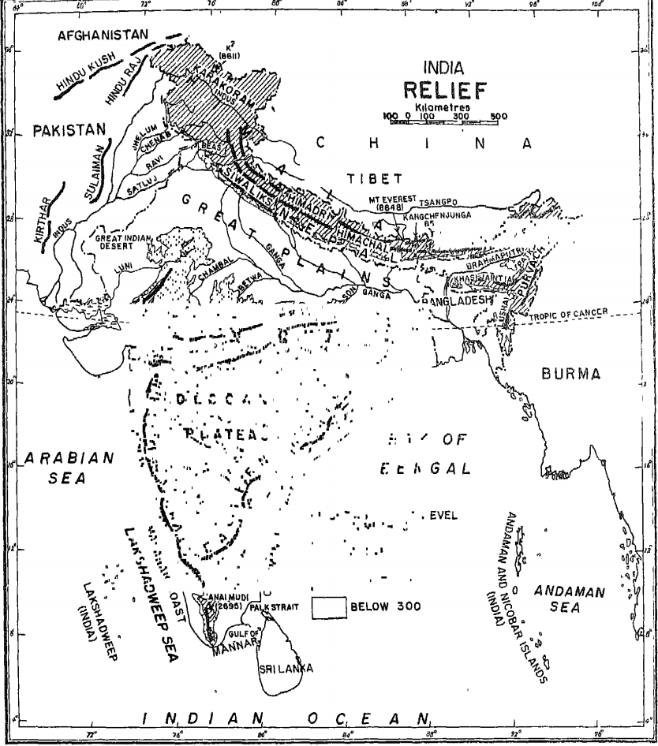
- Mountain Passes and Historical Interactions - Geography of Northwestern Mountain Ranges - Sulaiman Ranges: - Southward continuation of the Himalayas in the northwest. - Kirthar Ranges: - Located in Baluchistan, framing the region's southern edge. - Hindukush Mountains - Positioned between the Indus and Oxus river systems, not a complete barrier. - Enabled connections despite rugged terrain. - Key Mountain Passes Facilitating Movement - Khyber Pass - Located in the Hindukush/Safed Koh range. - Linked India with Central Asia, allowing two-way traffic. - Gomal Pass - Located in the Sulaiman Ranges. - Connected India to Central Asia, supporting movement. - Bolan Pass - Crossed through the Kirthar Ranges in Baluchistan. - Served as a vital route for movement into India. - Trick to remember: - Since Bolan name feels similar to Baloch, it lies in Kirthar ranges which lie in Balochistan - Historical Interactions Enabled by Passes - Invasions and Migrations - Originated from Iran, Afghanistan, and Soviet Central Asia. - Passes provided entry points for groups like the Aryans and later invaders. - Trade and Cultural Exchange - Flourished due to accessible routes through Khyber, Gomal, Bolan, and other passes. - Connected India with Central Asia and West Asia continuously. - Himalayan Valleys and Their Historical Significance - Influence of the Himalayas - Protects India from cold Arctic winds from Siberia, keeping northern India warm. - Reduces the need for heavy clothing and allows people to live outdoors for longer periods. - Acts as a natural barrier against invasions from the north in pre-industrial times. - The Valleys of Kashmir and Nepal - Located in the Himalayas, these valleys were surrounded by high mountains. - Developed distinct ways of life but remained connected to surrounding regions. - Kashmir Valley - Could be accessed through several passes. - Economic and cultural interactions with the plains were continuous: - Winter: - Some people migrated to the plains. - Summer: - Shepherds from the plains moved into the valley. - Despite the Pamir plateau, it served as a transmitting center of Buddhism for Central Asia. - Nepal Valley - Smaller in size than Kashmir. - Connected to the Gangetic plains through multiple passes. - Like Kashmir, it became a center for Sanskrit studies. - Common Cultural Contributions - Both valleys became repositories of Sanskrit manuscripts, housing the largest collection in the region. - The Foothills of the Himalayas - The foothills of the Himalayas refer to the lower hills at the base of the Himalayan mountain range. These are also known as the Shiwalik Hills (Outer Himalayas) - Easier to clear than the dense jungles of the alluvial plains. - River crossings were simpler due to narrower widths. - Ancient trade and migration routes followed the foothills from west to east. - Earliest agricultural settlements and states emerged in the foothills by the 6th century B.C.. -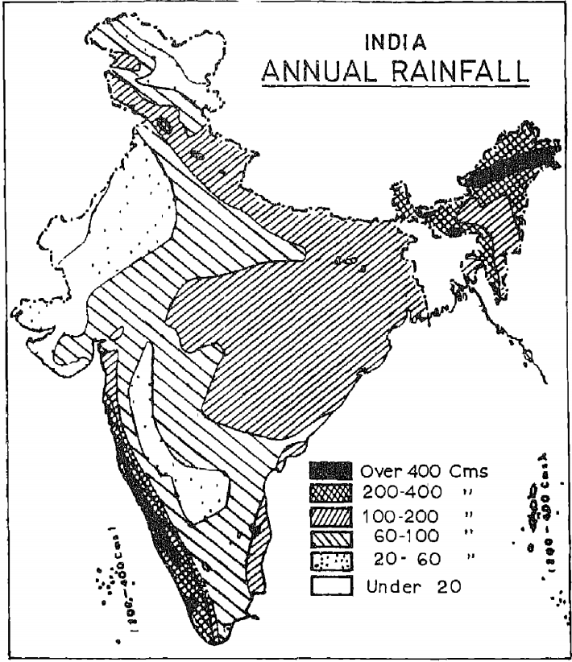
- The Indian Peninsula: Geographical and Historical Significance - The Eastern Peninsula and the Coromandel Coast - The Coromandel Coast forms the southeastern coastline along the Bay of Bengal. - Lies in Tamil Nadu and southern Andhra Pradesh. - Played a key role in maritime trade. - Relationship with the Eastern Ghats: - The Eastern Ghats are low and fragmented, allowing easier movement. - Several rivers, including the Krishna, Godavari, and Kaveri, create openings as they flow into the Bay of Bengal. - Facilitated cultural and economic exchanges between the coast and interior regions. - Major ancient port cities: - Arikamedu (a trade center with Roman links). - Situated on the Coromandel Coast in the Union Territory of Puducherry (formerly Pondicherry). - Mahabalipuram (famous for Pallava-era rock-cut temples). - Located in the Chengalpattu district of Tamil Nadu, about 60 km south of Chennai. - Kaveripattanam (a major Chola port and urban center). - Located at the mouth of the Kaveri River in the Mayiladuthurai district of Tamil Nadu. - The Western Peninsula: Regional Divisions and Coastal Influence - Unlike the east, the western peninsula lacks well-defined regional units due to rugged terrain. - Maharashtra: - Situated between the Tapti (not to be confused with Damanganga) in the north and the Bhima in the south. - Karnataka: - Located between: - Bhima & upper Krishna (north). - Tungabhadra (south). - The Tungabhadra River acted as a geographical barrier: - Chalukyas of Badami struggled to expand southward. - Badami, formerly known as Vatapi is located in the Bagalkot district of the state of Karnataka, India. - Pallavas and Cholas found it difficult to extend control northward. - The Malabar Coast and the Western Ghats - The Malabar Coast covers the southwestern coastline, now modern Kerala. - Geographic and economic features: - Several ports and small kingdoms flourished due to maritime trade. - However, communication between the coastal region and the interior of Maharashtra, Karnataka, and Kerala was difficult due to: - The high Western Ghats, which have fewer passes compared to the Eastern Ghats. - The Northwestern Region: Indus-Gangetic Influence and the Vindhyan Divide - This region includes parts of Punjab, Haryana, Rajasthan, and western Uttar Pradesh. - Divided by the Aravalli Range, which influences climate and human settlement patterns. - Major geographical features: - Vindhya Range: - A natural divide between northern India (Indo-Gangetic Plain) and southern India (Deccan Plateau). - Limited movement in ancient times, shaping political and cultural exchanges. - Aravalli Range: - One of the oldest mountain ranges in the world. - Extends diagonally across Rajasthan from northeast to southwest. - Acts as a climatic barrier, influencing arid conditions in the Thar Desert. - Western Rajasthan (Thar Desert): - The Aravalli Range prevents moist winds from reaching the region, leading to desert conditions. - Large human settlements were historically rare due to water scarcity. - Small oases allowed for limited habitation and trade. - Camels became the primary mode of transportation across the desert. - Southeastern Rajasthan: - Lies east of the Aravallis, receiving more rainfall and supporting agriculture. - Khetri copper mines played a significant role in the Chalcolithic period. - Enabled early industrial and trade activities. - Gujarat: The Coastal Trade Hub - Fertile plains supported by the Narmada, Tapti, Mahi, and Sabarmati rivers. - Kathiawar Peninsula: - It extends into the Arabian Sea and is bordered by the Gulf of Kutch (northwest) and the Gulf of Khambhat (southeast) -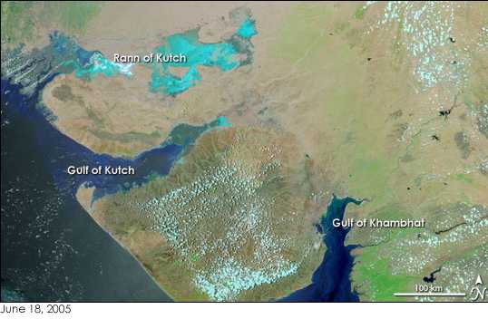
- A gulf is a large body of ocean or sea water that is partially enclosed by land, with a narrow opening connecting it to a larger water body. - It is deeper and larger than a bay but smaller than a sea. - Receives less rainfall but has an indented coastline with natural harbors. - Facilitated both coastal and foreign trade. - Gujarat became famous for its merchant communities and international trade. - Madhya Pradesh: The Heart of India -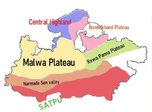
- Surrounded by major natural boundaries: - North: Ganga-Yamuna Doab. - West: Chambal River. - East: Son River. - South: Vindhya Mountains & Narmada River. - Two Broad Divisions: - Eastern Madhya Pradesh: - Covered by Vindhya ranges. - Became historically significant during the Gupta period (4th-5th century A.D.). - Western Madhya Pradesh (Malwa region): - A politically significant region since the 6th century B.C. - Malwa served as a strategic hinterland for Gujarat's trade network. - Contested between northern and Deccan powers: - Sakas vs. Satavahanas (1st-2nd century A.D.). - Marathas vs. Rajputs (18th century). - Rivers and Their Influence on Historical India - Major River Systems and Rainfall Distribution - India's historical core was shaped by major river plains enriched by monsoon rains. - Key river basins: - Indus Plains (Northwest) - Ganga-Yamuna Doab (Central Region) - Middle Gangetic Basin (Eastern Region) - Brahmaputra Basin (Far East) - Rainfall variation from west to east: - Indus Basin -> 25-37 cm - Western Gangetic Basin -> 37-60 cm - Middle Gangetic Basin -> 60-125 cm - Lower Gangetic & Brahmaputra Basin -> 125-250 cm - Impact on Cultivation & Settlement: - Western regions (Indus & Western Ganges) could be cleared with stone and copper tools. - Eastern regions (Middle Ganges & Brahmaputra) had dense forests & hard soil, requiring iron tools for clearing. - Human settlements expanded from west to east, following the availability of agricultural resources. - Agriculture and Cultural Development - Agriculture evolution: - Indus & Western Gangetic Plains: - Mainly wheat and barley. - Middle & Lower Gangetic Plains: - Mainly rice, later spreading to Gujarat and South India. - Cultural Evolution: - Harappan Civilization: - Flourished in the Indus Valley. - Vedic Culture: - Originated in Punjab, expanded to the Western Gangetic Basin. - Post-Vedic Iron Age Culture: - Developed in the Middle Gangetic Basin. - Lower Gangetic & North Bengal: - Gained significance during the Gupta period. - Brahmaputra Valley (Assam): - Became important in early medieval times. - Strategic Importance: - The Ganga-Yamuna Doab was the most contested region due to its fertility and strategic position. - Rivers as Lifelines of Trade, Transport, and Urban Development - Rivers enabled commerce and communication: - Before roads were built, boats transported people and goods. - Even Ashoka's stone pillars were transported via rivers. - Rivers remained vital for trade up to the East India Company era. - Agricultural and Economic Benefits: - Rivers fertilized nearby lands through flooding. - They provided water for irrigation canals. - However, floods also destroyed settlements, washing away ancient towns and monuments. - Urban Settlements Along Rivers: - Major cities flourished on riverbanks, including: - Hastinapur (Ganga) - Prayag (Allahabad) (Ganga-Yamuna) - Varanasi (Ganga) - Pataliputra (Ganga) - Pre-industrial towns were located on riverbanks, while modern urban centers are based on roads, railways, and industries. - Rivers as Political and Cultural Boundaries - Rivers, like mountains, acted as natural boundaries: - Kalinga (Coastal Odisha): - Between Mahanadi (North) and Godavari (South). - Andhra Pradesh: - Between Godavari (North) and Krishna (South). - Tamil Nadu: - Between Krishna (North) and Kaveri (South). - Historical Significance of River Deltas: - Godavari & Krishna deltas became major urban & port centers under Satavahanas (1st century CE). - Kaveri delta: - Became the Chola Empire's core (Pre-1st century CE). - Vaigai River (South) & South Pennar River (North) marked its extent. - North Tamil Nadu: - Consisted of uplands. - Became prominent under the Pallavas (4th-6th century CE). - Political and Cultural Evolution of Indian Regions - Regions formed political and administrative units due to: - Natural boundaries (rivers, mountains, deltas, plateaus). - Difficult communication across vast territories. - Defensible natural frontiers. - Distinct cultural identities emerged in different regions: - Each region developed its own way of life and language. - Northern & Western India: - Most languages derived from the Indo-Aryan stock, sharing common elements. - Sanskrit: - Cultivated & understood across India. - Played a unifying cultural role. - The Vindhya Mountains: The North-South Divide - The Vindhya Mountains stretch from west to east, marking the boundary between northern and southern India. - Linguistic and Cultural Divide: - Dravidian language speakers lived south of the Vindhyas. - Aryan language speakers lived north of them. - Primitive tribes inhabited the Vindhya regions and still exist today. - Influence of Coastal Regions: - Eastern & Western Ghats attracted settlers and traders. - The south engaged in flourishing foreign trade, leading to cultural and linguistic exchange. - Frequent movement of northern and southern rulers, traders, missionaries, and Brahmanas fostered a composite culture. - Interdependence Among Regions - Natural Frontiers vs. Resource Distribution: - Many regions had well-defined boundaries, but not all had sufficient resources. - Inter-regional trade emerged from prehistoric times, driven by the need for metals and other essential materials. - Utilization of Natural Resources and its Historical Impact - Early Human Settlements: - Initially, Indian plains were covered in dense forests. - These forests provided game, food, fuel, and timber for survival. - In that sentence, "game" means wild animals and birds hunted for food or sport — not games you play. - Construction and Tool-making: - Early construction materials included timber, later replaced by burnt bricks. - Pataliputra, India's first important capital, had timber houses and palisades. - The availability of various stones (including sandstone) influenced architecture and tool-making. - Regional Architectural Differences: - Earliest settlements developed in hilly regions and river valleys. - Deccan & South India saw more stone temples and sculptures compared to North India, where different materials were used. - Mineral Wealth and Its Historical Impact on India - Copper: The First Metal Used - Rich copper mines are found in the Chotanagpur plateau (located in eastern India, covering parts of Jharkhand, Odisha, West Bengal, Chhattisgarh, and Bihar), particularly in Singhbhum district. - The copper belt extends 130 km and shows signs of ancient mining. - Early copper usage: - The earliest people in Bihar used copper implements and mined copper from Singhbhum and Hazaribagh. - Many copper tools have been found in South Bihar and Madhya Pradesh. - Khetri mines (Rajasthan) were used by pre-Vedic and Vedic people in Pakistan, Rajasthan, Gujarat, and the Ganga-Yamuna Doab. - Copper celts found in Khetri date back to before 1000 BC. - Cultural significance: - Copper is considered pure in Hindu traditions and is still used in religious rituals. - Tin: Scarcity and Bronze Production - India does not produce tin today, and even in ancient times, it was scarce. - Possible ancient tin sources: - Rajasthan and Bihar, though their deposits are now exhausted. - The Harappans sourced tin from Rajasthan and Afghanistan, but in limited quantities. - Impact on Bronze Age: - Bronze requires tin mixed with copper. - India had very few bronze tools, unlike Western Asia, Egypt, and Crete. - No proper Bronze Age in India due to scarcity of tin. - Expansion of tin trade: - From the early centuries AD, India traded with Burma and the Malaya Peninsula, which had abundant tin. - This led to increased bronze usage, especially for South Indian temple statues. - Bihar bronzes (Pala era) likely sourced tin from Gaya, Hazaribagh, and Ranchi, where tin ores were smelted until the mid-19th century. - Iron: Driving Empires and Agriculture - Rich iron deposits exist in South Bihar, eastern Madhya Pradesh, and Karnataka. - Iron smelting and steel-making: - The invention of bellows (A tool used to blow air) improved iron smelting (process of extracting metal from its ore by heating it to high temperatures). - Iron became essential for warfare, jungle clearance, and agriculture. - Iron's role in empire formation: - Magadha's rise (6th-4th centuries BC) was aided by iron resources. - Avanti (Ujjain's kingdom) became powerful in the 6th-5th centuries BC due to iron. - Satavahanas and southern powers likely used iron ores from Andhra and Karnataka. - Lead: The Coinage Metal of Andhra - Andhra had rich lead deposits, which contributed to the abundant lead coinage of the Satavahanas (1st-2nd centuries AD). - Toxic nature of lead - In the 2nd century A.D., the toxic effects of lead were not understood. It was viewed simply as a heavy, durable metal perfect for trade. - The real danger of lead comes from ingestion or inhalation. While merchants and citizens handled these coins daily, the primary risk would have been to the miners and mint-workers who inhaled lead fumes during the smelting process. - Silver: Early Coinage and Scarcity - India had little natural silver, but some mines existed. - Early sources: - Kharagpur hills (Monghyr district) had silver mines, mentioned even in Akbar's time. - These mines supplied silver for punch-marked coins, which were widely used in Bihar. - Gold: Kolar and International Trade - Gold mining began only by the 2nd century AD. - India's primary gold source are Kolar goldfields (Karnataka). - Earliest gold trace found in a Neolithic site (1800 BC) in Karnataka. - Trade and gold supply: - Central Asia and the Roman Empire provided most of ancient India's gold. - Gold coins were common from the 1st-5th centuries AD. - Once foreign gold supplies stopped, gold coins became rare. - Precious Stones and Trade - India produced a variety of gemstones, including pearls. - Main gemstone-producing regions: - Central India, Orissa, and South India. - Trade significance: - Precious stones were highly sought by Romans. - They became a major export commodity in the early centuries AD. -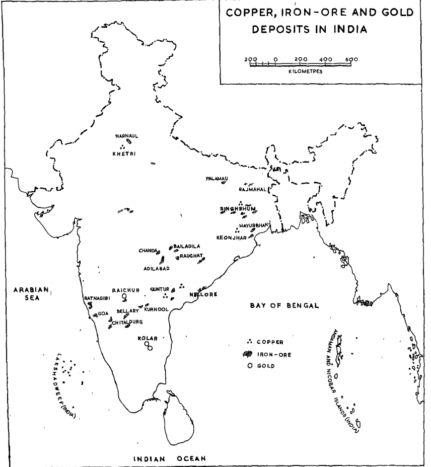
- The Stone Age - The Old Stone Age (Palaeolithic Age) - Human Existence in India - Early humans lived in India as early as 500,000 B.C. - Used tools made from unpolished, undressed, rough stones. - Evidence found in: - South India - Soan or Solan river valley (Pakistan) - Kashmir - Tools were mainly stone pebbles used for: - Hunting - Cutting - Other basic survival tasks - Lifestyle: - Dependent on food gathering and hunting. - No knowledge of cultivation or house building. - This phase continued until 8000 B.C. - Archaeological Discoveries - Palaeolithic Tools: - Some as old as 100,000 B.C. found in Chotanagpur plateau. - Tools dating 25,000 B.C. - 10,000 B.C. found in Kurnool district, Andhra Pradesh (~55 km from Kurnool). - Bone implements and animal remains discovered alongside tools. - Domestication of Animals: - Animal remains from Belan valley, Mirzapur (U.P.) indicate domestication of: - Goats, sheep, and cattle (~25,000 B.C.). - Early humans still relied primarily on hunting and food gathering. - Some primitive groups, as mentioned in the Puranas, continued living on roots and fruits in hills and caves until modern times. - Geological Context: The Pleistocene Period - The Old Stone Age (Palaeolithic culture) developed during the Pleistocene period (Ice Age). - The Pleistocene period: - Preceded the Holocene (~began 10,000 years ago). - Exact start unknown, but human remains with stone tools in East Africa date to 3.5 million years ago. - In India, earliest stone tools suggest human occupation in the Middle Pleistocene (~500,000 years ago). - Climatic Conditions: - Ice sheets covered vast areas in high altitudes. - Tropical regions (except mountains) remained ice-free but experienced heavy rainfall. - Phases in the Palaeolithic Age - The Palaeolithic Age, also known as the Old Stone Age, is the earliest phase of human history. In India, it is divided into three phases based on the nature of stone tools used and changes in climate: - Lower Palaeolithic (Early Old Stone Age) - The Lower Palaeolithic phase covers a significant part of the Ice Age and is characterized by the use of hand-axes and cleavers. - These tools were primarily used for chopping and bear similarities to those found in Western Asia, Europe, and Africa. - Key Sites in India: - Soan valley - The Soan Valley (now in Pakistan) is one of the earliest known sites. - The Soon Valley, also known as Soan or Soon Sakesar Valley, is located in the Khushab District of Punjab province, Pakistan - Belan valley - Belan Valley (Mirzapur district, Uttar Pradesh) also contains significant Palaeolithic tools. - The Belan Valley has caves and rock shelters, which were likely used as seasonal camps by early humans. - Climate & Geological Aspects: - Hand-axes have been discovered in deposits from the time of the second Himalayan glaciation. - The climate during this period became less humid. - Middle Palaeolithic (Middle Old Stone Age) - The Middle Palaeolithic phase is characterized by the development of flake-based (A small, thin, sharp fragment chipped off from a larger rock) industries. - The primary tools used during this period were scrapers, borers, and blade-like tools. These tools show regional variations, indicating diverse adaptations by early humans. - Key Sites in India: - The Soan Valley continued to be an important site, where a crude pebble industry existed in strata corresponding to the third Himalayan glaciation. - Artifacts from this phase have also been found along the Narmada River and in regions south of the Tungabhadra River. - Upper Palaeolithic (Late Old Stone Age) - The Upper Palaeolithic phase coincided with the final phase of the Ice Age, during which the climate became comparatively warm. - This period is globally significant due to the emergence of modern humans (Homo sapiens) and the development of advanced stone tool industries, particularly flint (Flint is a hard, sedimentary rock made of quartz) tools. - Key Technological Advancements: - Use of blades and burins, which represent a significant evolution in tool-making techniques. - Key Sites in India: - Tools from this phase have been discovered in Andhra Pradesh, Karnataka, Maharashtra, and the Chotanagpur Plateau. - The Bhimbetka caves, located 40 km south of Bhopal, contain evidence of human habitation during this period. Excavations have revealed hand-axes, cleavers, blades, scrapers, and burins. - An Upper Palaeolithic assemblage, consisting of massive flakes, blades, burins, and scrapers, has been found in the upper levels of the Gujarat dunes. - Estimating the Age of the Palaeolithic Period - Determining the exact beginning of the Palaeolithic Age is difficult. However, in a global context, human remains associated with stone tools are estimated to be as old as 3.5 million years. - It is believed that modern humans (Homo sapiens) first appeared during the Upper Palaeolithic Age after passing through multiple evolutionary stages. - Geographical Distribution of Palaeolithic Sites in India - Palaeolithic sites are found in almost all parts of India, except for the alluvial plains (a flat or gently sloping area of land created by the deposition of river sediment) of the Indus and the Ganga, where river deposits may have obscured or destroyed evidence of early human occupation. -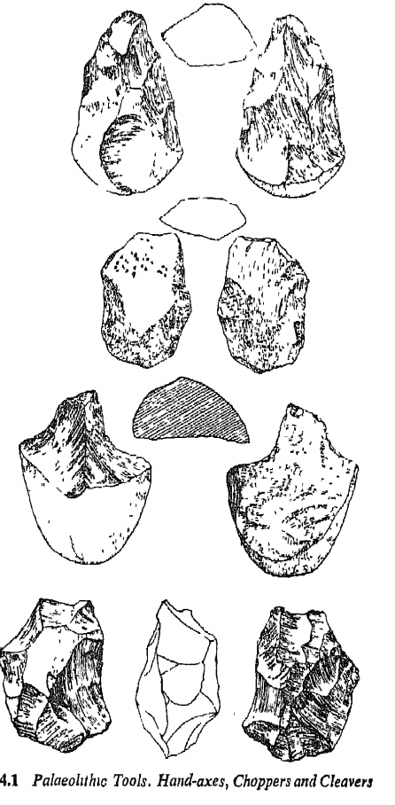
- The Late Stone Age (Mesolithic age) - End of the Upper Palaeolithic Age - The Upper Palaeolithic Age ended around 10,000 BCE with the conclusion of the Ice Age. - The climate became warm and wet, leading to shifts in fauna and flora. - These environmental changes allowed human migration to new regions. - Since then, there have been no major climatic changes. - Transition to the Mesolithic Age - Around 10,000 BCE, an intermediate phase in Stone Age culture began, known as the Mesolithic Age. - This period acted as a transition between the Palaeolithic Age and the Neolithic (New Stone Age). - It is also referred to as the Late Stone Age. - In India, this phase began around 10,000 BCE and lasted until 3000 BCE. - Characteristics of the Late Stone Age - Primary Tools: - Microliths - Small, sharp stone tools. - Key Archaeological Sites in India: - Bagor (Rajasthan) - Adamgarh (Madhya Pradesh) - Bhimbetka (Madhya Pradesh) - Damdama & Sarai Nahar Rai (Uttar Pradesh) - Langhnaj (Gujarat) - Only a few Late Stone Age sites have been scientifically dated, but available evidence suggests that they predated the Neolithic Age. - Sequential Cultural Development in the Bélan Valley - The Bélan Valley, located on the northern spurs of the Vindhyas, provides a continuous sequence of prehistoric cultures: 1. Palaeolithic Age 2. Mesolithic (Late Stone Age) 3. Neolithic Age - This site serves as crucial evidence of the gradual cultural transition in prehistoric India. -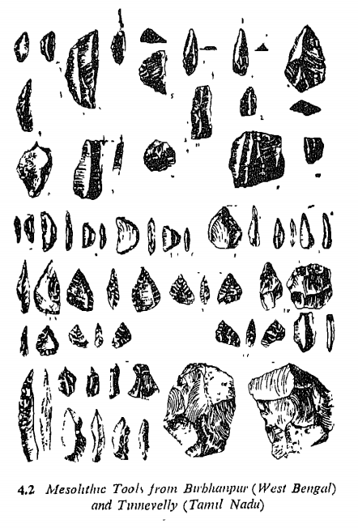
- The New Stone Age (Neolithic Age) - Chronology and Regional Variations - The Neolithic Age in the world context began around 7000 BC. - In the Indian subcontinent, Neolithic settlements date back to 6000 BC. - Some later Neolithic sites in South and Eastern India date as late as 1000 BC. - Neolithic Tools and Lifestyle - Primary Tools: - Polished stone tools and implements, particularly stone axes, were widely used. - These axes have been found throughout India and were used for various purposes. - Connection to Ancient Legends: - Parasurama, an axe-wielding hero, is associated with this phase (earlier than 1600 BC). - Some Neolithic settlements likely belonged to a stone-copper phase. -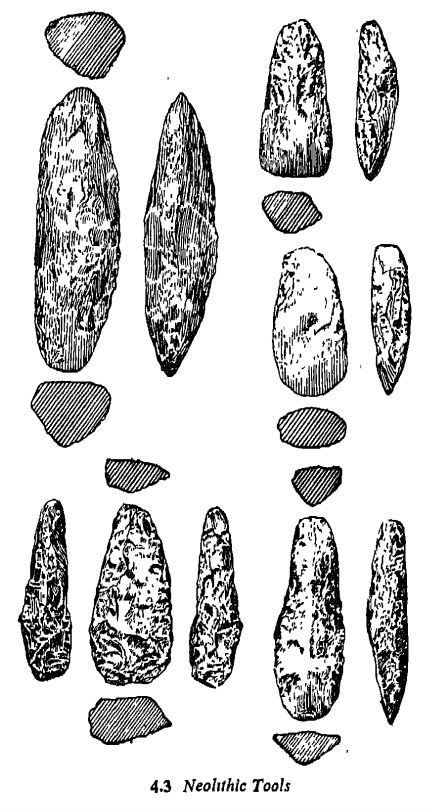
-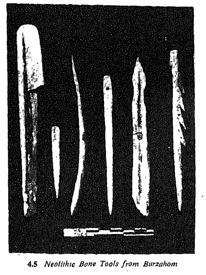
- Major Neolithic Settlements - Burzahom (Kashmir Valley) -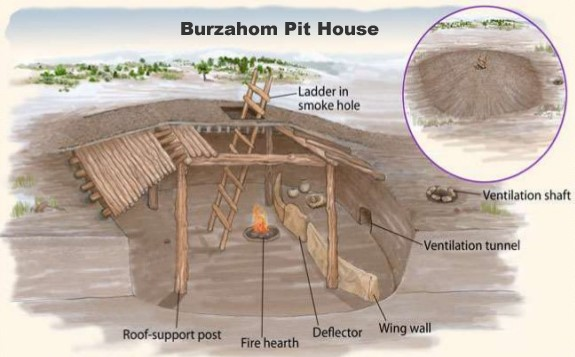
- Located 20 km from Srinagar, on a plateau. - People lived in pit dwellings (places where people live) and had a hunting and fishing economy. - Key Features: - Used polished stone tools and bone tools. - Similar bone implements were also found at Chirand (Bihar). - Used coarse grey pottery. - Unique Burial Practice: - Domestic dogs were buried with their masters. - Earliest Date around 2400 BC. - Chirand (Bihar) - Located 40 km west of Patna, near the Ganga River. - Settled due to open land formed by the confluence of four rivers (Ganga, Son, Gandak, and Ghaghara). - Neolithic remains indicate a late Neolithic setup with bone tools. - The exact dating of Chirand remains uncertain. - Neolithic Settlements in South India - Found south of the Godavari River, mainly near riverbanks and on granite hilltops. - Key Features: - Used stone axes and stone blades. - Domesticated cattle, sheep, and goats. - Rubbing stone querns suggest knowledge of grain production. - Fire-baked earthen figurines found. - Notable Sites: - Maski, Brahmagiri, Hallur, Kodekal, Sanganakallu, T. Narsipur, Takkalakota (Karnataka). - Paiyampalli (Tamil Nadu). - Piklihal, Utnur (Andhra Pradesh). - Piklihal and Ash Mound Settlements - The Neolithic settlers of Piklihal were cattle herders. - They domesticated cattle, sheep, and goats. - Key Features: - Seasonal camps with cowpens (place where cattle are kept) made of posts (A vertical pole or beam used for support) and stakes (A pointed stick driven into the ground for support or marking). - Ash Mounds: - Cow dung was accumulated and burned, - The ground was cleared for the next seasonal camp. - Neolithic Sites in Eastern and Northeastern India - Hills of Assam and Garo Hills in Meghalaya contain Neolithic tools. - Neolithic tools also found in: - Northern Vindhyas (Mirzapur & Allahabad, Uttar Pradesh) - Known for early rice cultivation (6000 BC). - Baluchistan - Appears to be one of the earliest Neolithic regions. - Orissa hill areas - Evidence of rice cultivation and small-scale settlements. -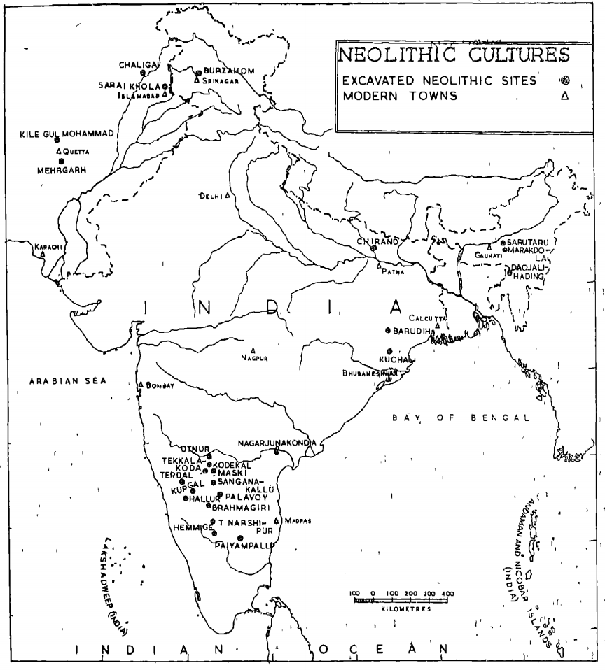
- Neolithic Agriculture and Pottery - Later Neolithic settlers transitioned to agriculture. - They lived in circular or rectangular mud-and-reed houses. - Key Agricultural Products: - Rice and horsegram (kulathi). - Tool Evolution: - Used microlith blades along with polished tools. - Pottery Development: - Hand-made pottery in the early stage. - Later, footwheels were used for making pots. - Technological Advances in the Neolithic Age - Between 9000 BC and 3000 BC, Western Asia saw significant progress in: - Agriculture, weaving, house-building, and domestication of animals. - In India, the Neolithic Age began around the sixth millennium (a period of 1,000 years) BC. - Key Crops Introduced: - Rice, wheat, and barley. - The first villages started appearing, marking the beginning of civilization. - Challenges of the Neolithic People - Dependency on Stone Tools: - Limited them to hilly regions and river valleys. - Subsistence Economy: - Even with effort, they could produce only enough for basic survival. -| Category | Palaeolithic Age (Old Stone Age) | Mesolithic Age (Middle Stone Age) | Neolithic Age (New Stone Age) |
|---|---|---|---|
| Time Period | ~500,000 BCE - 10,000 BCE | 10,000 BCE - 3,000 BCE | 7,000 BCE - 1,000 BCE (Regional variations) |
| Stone Tools | Rough, unpolished stone tools like hand axes, cleavers, and choppers. | Microliths - small, sharp stone tools, often attached to wood/bone handles. | Polished stone tools, particularly stone axes; grinding and drilling techniques introduced. |
| Food & Economy | Hunting & gathering; no agriculture or domestication. | Transition phase - began domesticating animals and practicing rudimentary agriculture. | Full-fledged agriculture; domestication of cattle, sheep, and goats; pottery production. |
| Human Settlements | Nomadic lifestyle, lived in rock shelters and open camps. | Semi-permanent settlements; seasonal movement. | Permanent villages; circular or rectangular mud houses. |
| Key Sites in India |
- Soan Valley (Pakistan) - Belan Valley (Uttar Pradesh) - Bhimbetka (Madhya Pradesh) - Narmada Valley (Madhya Pradesh) - Chotanagpur Plateau (Jharkhand) |
- Bagor (Rajasthan) - Adamgarh (Madhya Pradesh) - Bhimbetka (Madhya Pradesh) - Langhnaj (Gujarat) |
- Mehrgarh (Pakistan) - Burzahom (Kashmir) - Chirand (Bihar) - Piklihal, Brahmagiri (Karnataka) - Paiyampalli (Tamil Nadu) |
| Burial Practices | No clear evidence of burial rituals. | Occasional burials with grave goods, hinting at belief in afterlife. | Well-organized burials; evidence of rituals (e.g., dog burials in Burzahom). |
| Art & Culture | Cave paintings (e.g., Bhimbetka), basic artistic expressions. | More advanced rock paintings, depiction of animals and daily life. | Pottery making, weaving, and religious symbols emerge. |
| Major Technological Developments | Fire control, crude stone tool-making. | Bow & arrow invention, early domestication of animals. | Agriculture, polished stone tools, pottery, wheel introduction. |
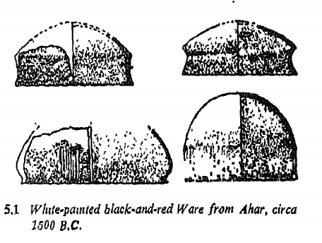
- Chalcolithic Cultures -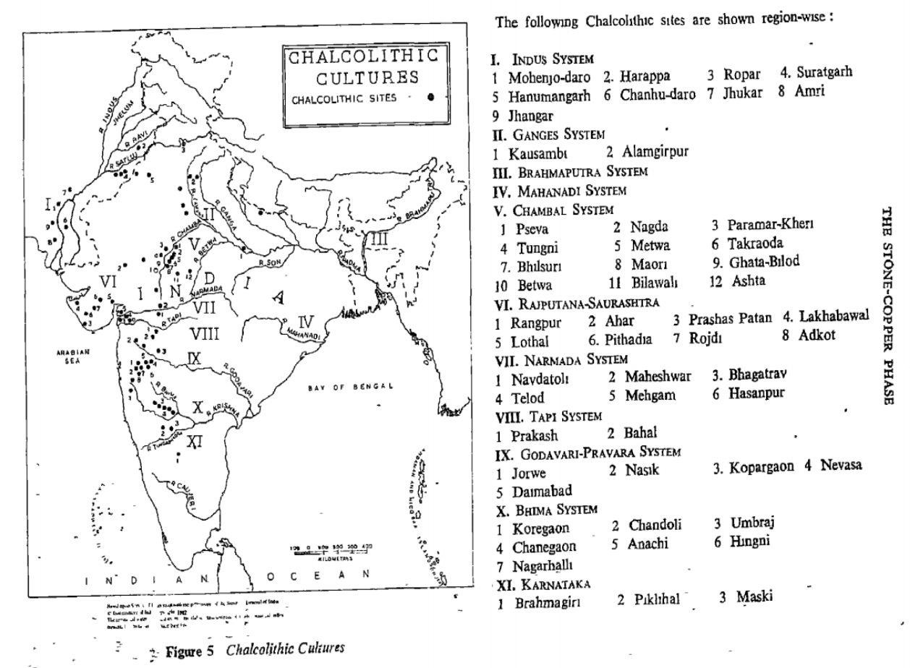
- Reasons why copper was the first metal to be used - Occurs in native form - Found in nature as pure metal nuggets (native copper), not just in ores. - Could be used without advanced smelting techniques. - Most other metals (like iron) are rarely found pure and require high-temperature extraction. - Soft and malleable - Can be shaped by hammering (cold working) without special tools. - Allowed early humans to make ornaments, hooks, and small tools easily. - Low melting point (relative to iron) - Melts at about 1085°C, achievable in simple ancient furnaces. - Iron melts at 1538°C, requiring more advanced technology. - Durability and usefulness - Harder and more durable than stone. - Easier to work than many other metals. - Could be alloyed with tin to make bronze, which is even harder. - Abundant and visible - Copper ores like malachite are colorful (green/blue) and easy to recognize. - Attracted early people to collect and experiment with them. - The Chalcolithic culture marked a transitional phase where people used both stone and copper tools. Stone blades played a significant role, although stone axes continued in many areas. - This culture thrived in riverine tracts and near hills, with significant regional variations in tools, pottery, economy, and burial practices. - Tools and Implements - People primarily used small stone tools and weapons, with stone blades being significant. - In some regions, stone-blade industries flourished, while in others, copper tools were more prominent. - Ahar and Gilund (Rajasthan) had numerous copper implements, as raw copper was locally available. - Jorwe and Chandoli (Maharashtra) had flat, rectangular copper axes, while copper chisels were found at Chandoli. - Gilund had a stone-blade industry despite being in a dry region. - Pottery - Black-and-red pottery was widespread, found in Rajasthan, Madhya Pradesh, Maharashtra, Bihar, and West Bengal. - The black and red color comes from how the pot was fired, not from coloring. It is due to controlled oxygen supply in the kiln. - Pot was often placed upside down covered partially with ash/fuel - How the color forms (most important concept) - Red part - Fired in presence of oxygen (oxidation) - Iron in clay → turns red - Black part - Fired in absence of oxygen (reduction) - Smoke/carbon gets trapped → turns black - These pots were wheel-made, sometimes painted with white decorations. - Madhya Pradesh and Maharashtra settlements produced: - Channel-spouted pots - Dishes-on-stand - Bowls-on-stand - Pottery styles and variations indicate cultural diversity among different Chalcolithic groups. - Economy and Agriculture - The Chalcolithic people domesticated animals and cultivated crops. - Animals: - Cows, sheep, goats, pigs, buffaloes were domesticated. - Deer was hunted. - Camel remains were found, but evidence for horses is unclear. - Food Crops: - Wheat and rice were staples. - Bajra, lentils (masoor), black gram, green gram, and grass pea were cultivated. - Navdatoli (Maharashtra) had the most diverse range of cereals. - Other Crops: - Ber, linseed, cotton, ragi, and millets were cultivated in the Deccan region. - Eastern India (Bihar & West Bengal): - Fish hooks suggest fishing was common. - Rice and fish formed a staple diet, a tradition still prevalent today. - Settlements and Architecture - Houses were mostly made of wattle and daub, sometimes using mud bricks. - Inamgaon (Western Maharashtra): - Early phase (1600–1300 B.C.) : - Large mud houses with ovens and circular pit houses. - Later phase (1300-1000 B.C.): - Larger houses with multiple rooms, suggesting larger family structures. -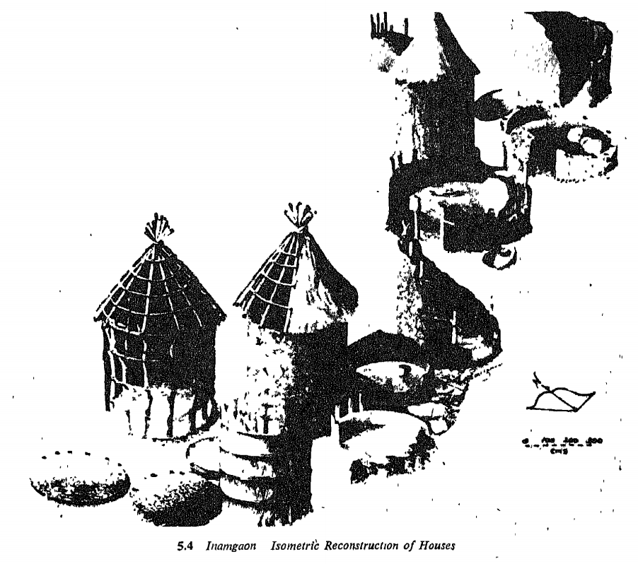
- Jorwe Culture: - Named after Jorwe village (Pravara River, Maharashtra). - Settlements were nucleated villages with 35+ houses, mostly circular or rectangular. - Economy was rural, with no signs of urban civilization. - Some settlements (Eran, Kayatha, Inamgaon) were fortified with moats (a deep, wide ditch, usually filled with water), but large-scale city structures were absent. - Arts and Crafts - Copper smithing (working with copper) and stone-working were well-developed. - Microlithic stone tools were widely used. - Spindle whorls found in Malwa indicate knowledge of spinning and weaving. - Maharashtra finds suggest cotton, flax, and silk threads were used, proving familiarity with cloth production. -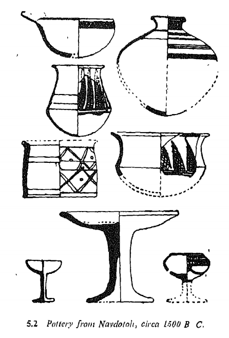
-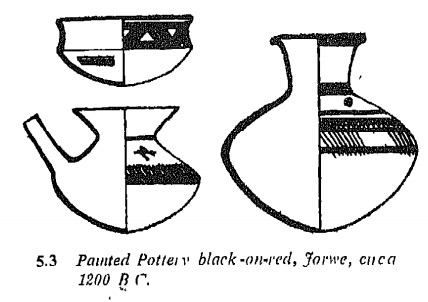
- Religion and Burial Practices - Maharashtra: - Dead were buried under house floors (north-south orientation). - Graves contained pots and copper objects, possibly for use in the afterlife. - Terracotta figurines of women suggest mother goddess worship. - Inamgaon: -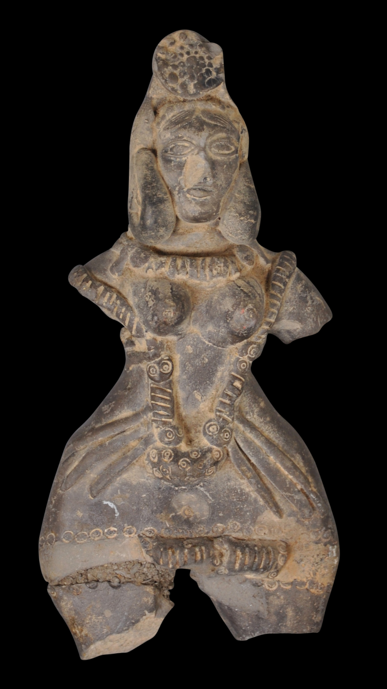
- A mother goddess figurine similar to Western Asian designs was found. - Malwa & Rajasthan: -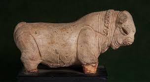
- Terracotta bull figurines suggest bull worship. - Social Inequalities - Some graves at Chandoli and Nevasa (Maharashtra) contained copper-bead necklaces, while others had only pots, indicating social differences. - Inamgaon: - Adults were buried with copper and pottery, further suggesting status differences. - Kayatha: - 29 copper bangles and valuable axes were found in a house, indicating wealth. - Earthen pots with semi-precious stone necklaces (steatite, carnelian) indicate social hierarchy. - Chronology and Legacy - Chalcolithic culture lasted from 1800 B.C. to 1000 B.C., persisting in some areas until 800 B.C. - Over time, iron tools replaced stone and copper tools. - Black-and-red pottery continued until the 2nd century B.C. in several regions. - Conclusion - The Chalcolithic culture laid the foundation for early village economies, agriculture, and social structures. While they lacked urban civilization, they showed regional variations in tools, pottery, economy, and religious practices. - The transition from the Stone-Copper phase to the Iron Age marked significant technological and societal advancements. - Importance of the Chalcolithic Phase - The Chalcolithic phase marks an important stage in Indian history, with traces of Chalcolithic cultures found across the country, except for the alluvial plains and densely forested areas. - This phase saw the foundation of rural settlements, typically located on riverbanks near hills. - Tools and Pottery - People primarily used microliths and other stone tools, supplemented by limited copper tools. - Most communities had knowledge of copper smelting (process of extracting metal from its ore by heating it to high temperatures). A distinctive feature of this phase was the widespread use of black-and-red wheel-turned pottery, making the Chalcolithic people the first to use painted pottery. - Reason for black-and-red coloration - Open kilns or updraft kilns - Constructed with a lower firing chamber for fuel and an upper chamber for pots. - Allowed potters to control oxygen flow during firing. - Achieved through a two-stage firing process: - The upper part of the pot turns black due to reduction firing (limited oxygen), where smoke and carbon penetrate the clay. - The lower part remains red due to oxidation firing (ample oxygen), where iron compounds in the clay turn red. - Deliberate control of firing atmosphere - It was intended, not an accident. Chalcolithic potters deliberately controlled the firing atmosphere to get the black-and-red pattern — it was a stylistic and cultural choice, not just a by-product of random firing. - It was not due to a limitation of technology, it was a mark of technological skill. - These pots, used for cooking, eating, and storage, included the lota, but there is no evidence of the thali. - Regional Variations - South India: - The Neolithic phase gradually transitioned into the Stone-Copper phase, leading to the classification of these cultures as Neolithic-Chalcolithic. - Western Maharashtra and Rajasthan: - The Chalcolithic people here appear to have been colonizers. - Chronology: - The earliest settlements emerged in Malwa and central India (Kayatha and Eran), followed by western Maharashtra, while those in West Bengal were among the last to appear. - Agriculture and Diet - The Chalcolithic people were the first to establish village communities in India, cultivating a greater variety of cereals than their Neolithic predecessors. - Western India: - Cultivated barley, wheat, and lentils. Their diet was supplemented with non-vegetarian food, with a higher reliance on animal meat. - Southern and Eastern India: - Primarily cultivated rice. Fish and rice were key dietary staples in the eastern regions. - Settlements and Architecture - Western Maharashtra, Western Madhya Pradesh, and Southeastern Rajasthan: - These regions show evidence of well-structured settlements. Some sites, such as Kayatha and Eran in Madhya Pradesh and Tumaigon in western Maharashtra, were fortified. - Eastern India (Chirand and Pandu Rayar Dhibi): - Settlements were less developed, with structures indicated by postholes and round houses. - Burial Practices - Maharashtra: - Bodies were placed in a north-south position, and extended burials were common. - South India: - Bodies were buried in an east-west position. - West Bengal: - Practiced post-extraction or fractional burials instead of complete burials. - Post-Extraction Burial: - Involves removing soft tissues or specific body parts before burial. This could be due to cultural, ritualistic, or practical reasons. - Fractional Burial: - Only a portion of the body (such as bones, skull, or ashes) is buried, while the rest may be disposed of in another manner, stored, or used in rituals. - This phase played a crucial role in shaping early village life in India, with its advancements in agriculture, pottery, and metalwork, laying the foundation for later civilizations. - Limitations of Chalcolithic Cultures - The Chalcolithic cultures had several weaknesses that hindered their development, particularly in terms of health, technology, and urbanization. - High Infant Mortality - A significant indicator of their limitations was the high rate of infant mortality, as seen in the large number of child burials in western Maharashtra. - Despite having a food-producing economy, the Chalcolithic people did not achieve longevity. The exact causes remain unclear but may include: - Malnutrition - Lack of medical knowledge - Frequent outbreaks of epidemics - Technological Constraints - The Stone-Copper culture was primarily rural, with limited access to copper. - Copper tools, while used, were relatively weak since they lacked the strength of bronze. - Unlike civilizations in Crete, Egypt, and Mesopotamia, which advanced through bronze metallurgy, the Chalcolithic people in most of India did not develop the skill of mixing tin with copper to produce bronze. - This lack of durable tools restricted technological and economic progress. - Absence of Writing and Urbanization - Chalcolithic societies did not develop writing and remained largely rural. - Unlike the Bronze Age civilizations, which had cities, the Chalcolithic people lived in villages. - Despite existing alongside the Indus Valley Civilization, most Stone-Copper Age cultures in India did not significantly benefit from the advanced technological knowledge of the Indus people. - Overall, these limitations prevented the Chalcolithic cultures from achieving the level of complexity seen in contemporary civilizations elsewhere. - The Copper Age in India - The Copper Age in India is marked by the discovery of over forty hoards of copper objects across a vast region, from the Chotanagpur Plateau to the upper Gangetic basin. - However, nearly half of these hoards are concentrated in the Ganga-Yamuna Doab, with only stray finds reported from other areas. - Artifacts and Their Uses - The copper hoards contain a variety of artifacts, including: - Celts - Harpoons - Antennae swords - Anthropomorphic figures - Tool purpose and complexity - These objects were used for fishing, hunting, fighting, as well as for artisanal and agricultural purposes. - The complexity of these tools indicates a high level of technological skill among the coppersmiths, suggesting that the people who crafted them were not nomadic hunters but settled artisans and early agriculturists. - Settlements and Cultural Context - In the upper Gangetic basin, these objects have been found alongside ochre-colored pottery and mud structures, indicating a settled lifestyle. -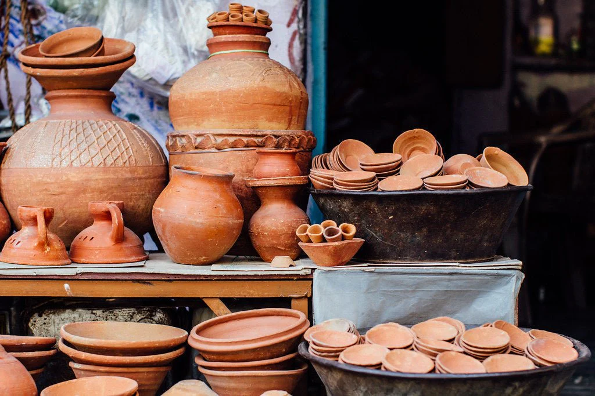
- The majority of ochre-colored pottery sites are located in the upper Doab, while copper hoards are also found in Bihar's plateau region and the Khetri zone of Rajasthan. - The ochre-colored pottery culture is dated between 2000 BC and 1800 BC. - After the disappearance of ochre-colored pottery settlements, the Doab shows little habitation until around 1000 BC, except for small settlements using black-and-red ware with thin habitation deposits and limited artifacts. - Legacy and Decline - The copper-hoard people were contemporaries of the Harappans, and their settlements were geographically close to Harappan sites. - Some cultural exchange likely took place between the copper-using groups and the bronze-using Harappans. - However, no copper-hoard settlement lasted for more than a century, and their spread was limited. The reasons for their decline remain unclear. - The religious significance of copper in Hindu traditions—such as its use in vessels and utensils—may have originated during this period. - Thus, while the Metal Age in the upper Gangetic basin truly began with the copper-hoard people, their settlements remained short-lived and relatively small, leaving an intriguing but incomplete picture of their civilization. -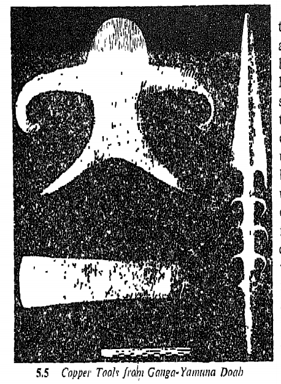
- More details on different pottery -| Pottery Type | Period & Culture | Scientific Reason for Color | Usage & Significance |
|---|---|---|---|
| Black-and-Red Ware (BRW) | Chalcolithic (c. 2500–1500 BCE), Ahar-Banas, Jorwe, Malwa Cultures | Achieved through differential firing: red portion oxidized (oxygen exposure), black portion reduced (sealed from oxygen). Pots were inverted in kilns with partial covering. | Used for cooking, storage, and burials, indicating ritualistic importance. |
| Ochre-Coloured Pottery (OCP) | Late Harappan & Early Iron Age (c. 2000–1200 BCE), Ganga-Yamuna Doab | High iron content in clay resulted in ochre color. Incomplete firing in open kilns led to an uneven texture. | Mainly used in rural settlements, indicating decline in pottery refinement post-Harappan. |
| Painted Grey Ware (PGW) | Early Vedic (c. 1200–600 BCE), Indo-Aryan Sites (Hastinapur, Ahichhatra) | Fired at higher temperatures (over 900°C) in controlled conditions, leading to less oxidation of iron compounds in clay, giving a grey color. | Associated with early Vedic society, possibly used by elites, found in Mahabharata-related sites. |
| Northern Black Polished Ware (NBPW) | Mauryan Period (c. 600–200 BCE), Pataliputra, Taxila | Fired at very high temperatures (over 1100°C) in reducing conditions, creating a highly lustrous and smooth black surface. | Luxury ware associated with urban centers and high-status individuals. |
| Red Ware | Found across multiple periods, from Harappan to post-Mauryan times | High iron content in clay with complete oxidation during firing results in a red color. Fired at moderate temperatures (700–900°C) in open kilns. | Most common pottery type, used for cooking, storage, and general household activities. |
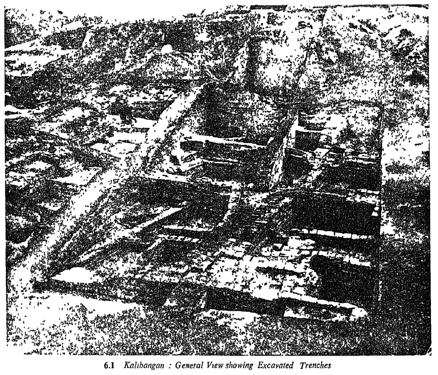
-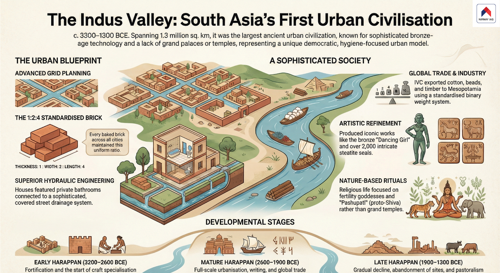
- The Indus or Harappan culture is older than the Chalcolithic cultures but is significantly more developed. - It emerged in the northwestern part of the Indian subcontinent and is called Harappan because it was first discovered in 1921 at Harappa, located in West Punjab, Pakistan. - Timeline and phases - Early Harappan (3300-2600 BCE) - Villages transformed into towns, use of copper, beads, trade starts - Mature Harappan (2600-1900 BCE) - Peak of urbanization, well-planned cities, trade with Mesopotamia - Late Harappan (1900-1300 BCE) - Decline, ruralization, loss of urban features - Geographical Spread - The Harappan culture extended over a vast area, covering parts of: - Punjab, Sindh, Baluchistan, Gujarat, Rajasthan, and western Uttar Pradesh - From Jammu (north) to the Narmada estuary (south) - From the Makran coast of Baluchistan (west) to Meerut (northeast) - This region formed a triangle covering approximately 1,299,600 square kilometers, making it larger than modern Pakistan and bigger than ancient Egypt and Mesopotamia. - No other cultural zone in the third and second millennium B.C. was as extensive as the Harappan zone. - Major Harappan Cities - Over 250 Harappan sites have been identified, but only few are considered major cities: - Harappa (Punjab, Pakistan) - Mohenjo-daro (Sindh, Pakistan) - Located 483 km from Harappa, both were connected by the Indus River. - Chanhudaro (Sindh, Pakistan) - 130 km south of Mohenjo-daro. - Dholavira (Gujarat, India) - Water conservation, three-part city, unique stone inscriptions. - Lothal (Gujarat, India) - Situated at the head of the Gulf of Cambay. - Rakhigarhi (Haryana, India) - Largest Harappan site, skeletal remains. - Kalibangan (Rajasthan, India) - Notable for pre-Harappan and Harappan phases. - Banawali (Haryana, India) - Similar to Kalibangan, showing two cultural phases. - These cities were highly organized with mud-brick platforms, well-planned streets, and drainage systems. - Harappan Civilization Beyond the Core Cities - Coastal settlements like Sutkagendor and Surkotada had citadels, indicating their significance. - The later Harappan phase is observed in Rangpur and Rojdi in the Kathiawar peninsula, Gujarat. - Thus, the Harappan civilization was one of the most widespread and advanced cultures of its time, characterized by its urban centers, trade networks, and technological sophistication. - Town Planning and Structures in the Harappan Civilization - The Harappan culture is renowned for its well-planned urban layout. Each city was divided into distinct sections, featuring systematic roads, drainage systems, public buildings, and residential areas. - City Layout and Planning - Harappan cities followed a grid system, where streets intersected at right angles, dividing the city into blocks. - The cities were divided into: - Citadel or Acropolis - Located on a raised mound, possibly occupied by ruling elites. - Lower Town - Containing brick houses for common people. - This structured layout was consistent across all Indus settlements, regardless of size. -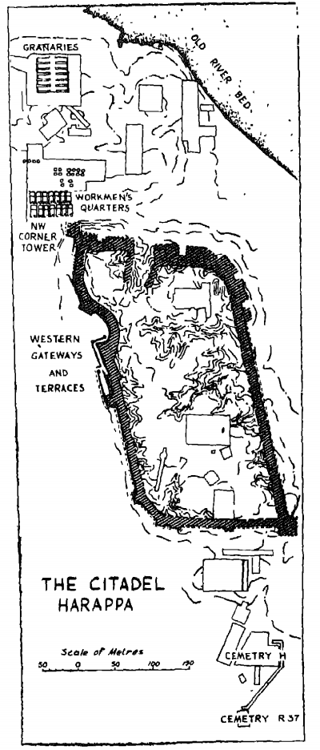
- Public Structures - The Great Bath (Mohenjo-daro) -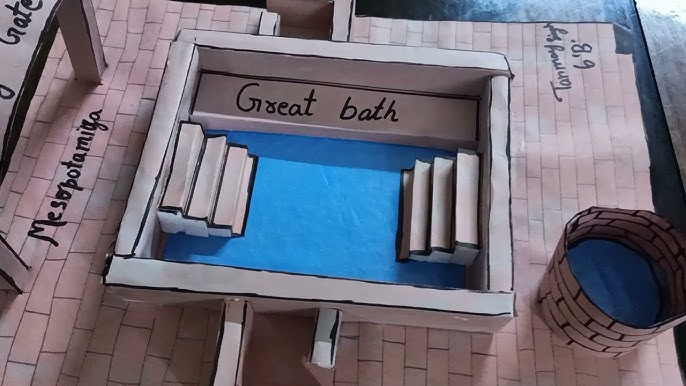
- Located on the citadel mound, it is an example of exceptional brickwork. - Dimensions: - 11.88 × 7.01 meters, 2.43 meters deep. - Features: - Flights (set of stairs between two landings) of steps on either side. - Side rooms for changing clothes. - Burnt brick flooring. - Water supply from a large well in an adjacent room. - Drainage outlet at one corner. - Purpose: Likely used for ritual bathing, which is an important aspect of Indian religious traditions. -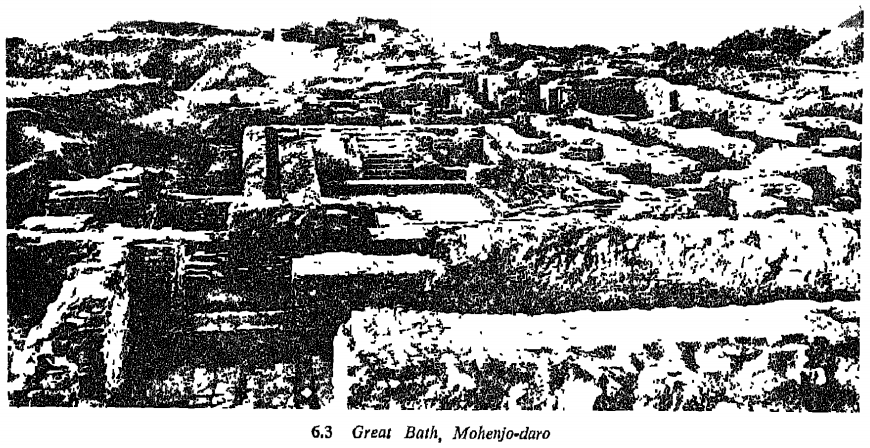
- Granaries -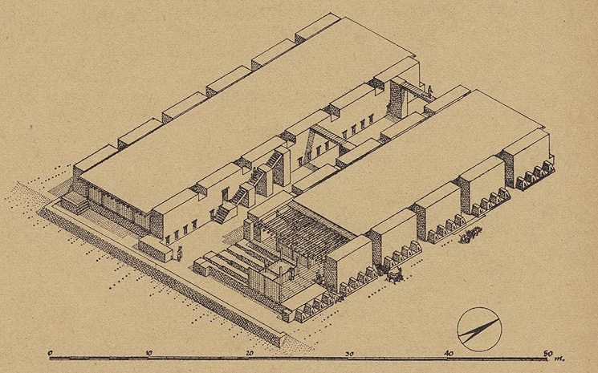
- Mohenjo-daro: - The largest building was a granary, measuring 45.71 × 15.23 meters. - Harappa: - Had six granaries arranged in two rows of six, built on brick platforms near the riverbank. - Each granary measured 15.23 × 6.09 meters. - Total floor space was 838-1025 square meters (similar to Mohenjo-daro's Great Granary). - Evidence of wheat and barley suggests these platforms were used for threshing grain. - Two-roomed barracks were built nearby, possibly for laborers. -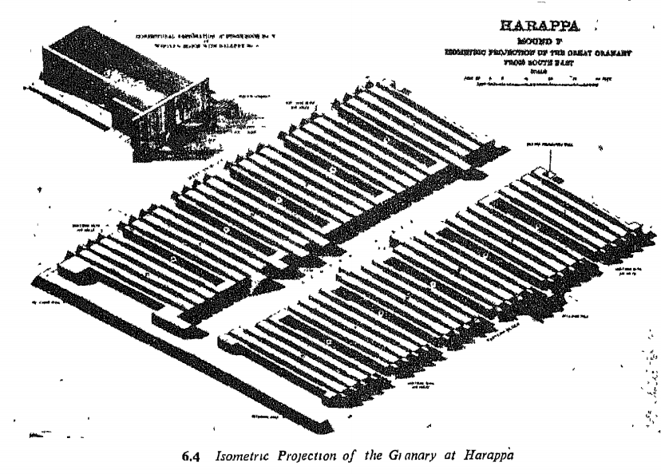
- Kalibangan: - Brick platforms in the southern part were possibly used as granaries. - Granaries were a crucial part of Harappan urban planning, highlighting organized food storage and distribution. - Architectural Features -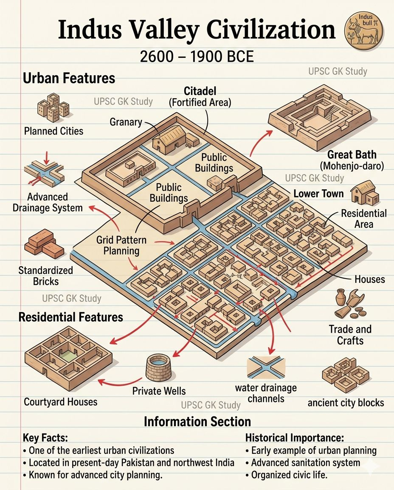
- Use of Burnt Bricks - Harappan cities extensively used baked bricks, unlike contemporary Egyptian buildings, which relied mostly on dried bricks. - While Mesopotamians also used baked bricks, their usage was far greater in Harappan cities. - Drainage System - Mohenjo-daro had an advanced drainage system that extended to almost every house. - Features: - Each house had a courtyard and bathroom. - Many houses in Kalibangan had private wells. - Wastewater drained into street drains, which were sometimes covered with bricks or stone slabs. - Manholes were provided for maintenance. - Remains of streets and drains have also been found at Banawali. - The drainage system of Harappa was unique, with no other contemporary civilization giving such importance to hygiene and cleanliness. -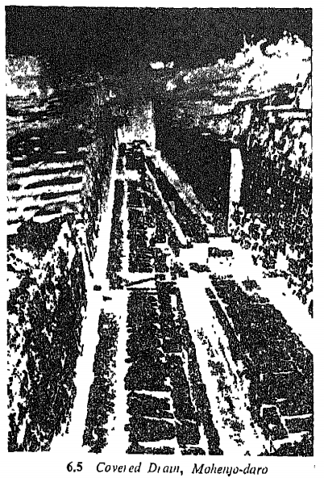
- Conclusion - The Harappan civilization demonstrated sophisticated urban planning, with organized city layouts, advanced drainage, monumental structures, and extensive use of burnt bricks. - Their commitment to sanitation and planning set them apart from other contemporary civilizations like Egypt and Mesopotamia. -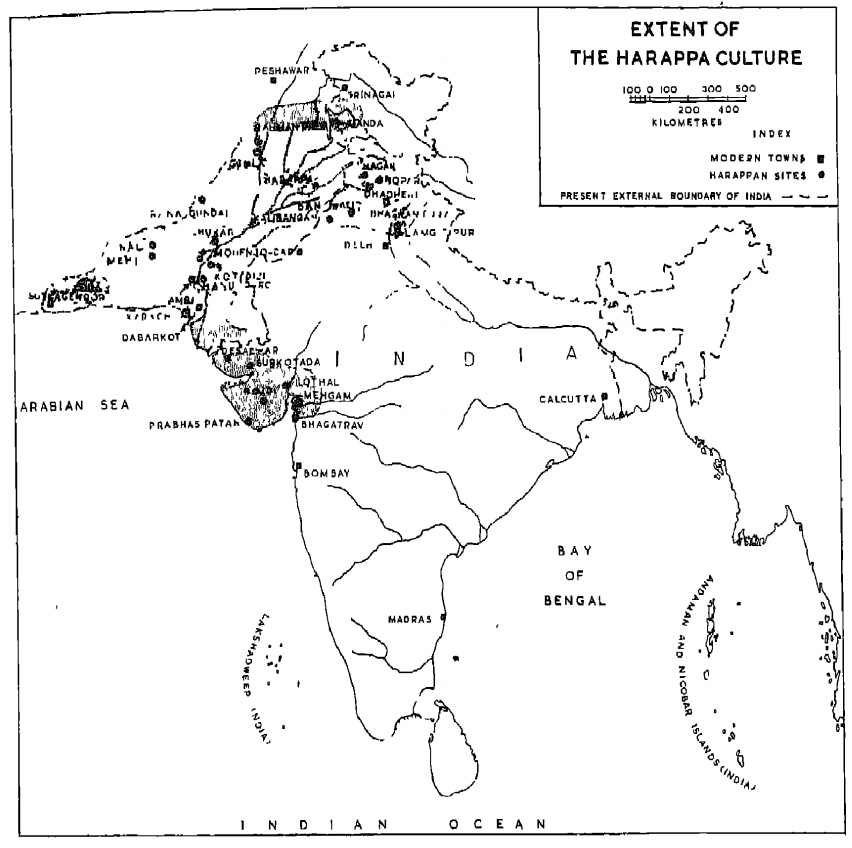
- Agriculture in the Harappan Civilization - The Indus region, though largely rainless and infertile today, was highly fertile in ancient times, supporting prosperous villages and towns. - Fertility and Agricultural Conditions - Present-day rainfall in the Indus region is around 15 cm, but historical records suggest it was much more fertile in the past. - Alexander's historians (4th century B.C.) described Sindh as a fertile region. - The natural vegetation of the Indus Valley once attracted higher rainfall, providing timber and fuel for large-scale brick baking and construction. - Over time, extensive agriculture, grazing, and fuel collection led to the destruction of natural vegetation. - The annual flooding of the Indus River played a crucial role in maintaining the fertility of the land, similar to how the Nile supported Egypt. - Burnt brick walls found in the region indicate annual floods, which deposited rich alluvial soil on the floodplains. - Farming Practices - Crops were sown in November, after the floodwaters receded, and harvested in April, before the next flood. - No hoes (Hand tools with a flat blade used for digging, weeding, and loosening soil) or ploughshares (The cutting blade of a plow that turns over the soil to prepare it for planting crops) have been discovered - However furrows (Long, narrow trenches or grooves in the soil made by a plow) found at Kalibangan (Rajasthan) suggest ploughing was practiced during the Harappan period. - The Harappans likely used wooden ploughshares. - It is unclear whether the plough was drawn by men or oxen. - Stone sickles (Curved, hand-held farming tools with sharp blades used for cutting crops) may have been used for harvesting crops. - Dams (Gubarbands or Aalas) for storing water were used in Baluchistan and Afghanistan, but there is no evidence of canal irrigation. - Agricultural Production and Storage - Harappan villages, mostly situated near floodplains, produced sufficient food grains to feed both themselves and city dwellers such as artisans, merchants, and administrators. - Major crops included: - Wheat and barley (two types of each). - Rice (evidence from Lothal, c. 1800 B.C.). - Peas, sesame, and mustard. - Banawali has yielded a large quantity of barley. - Granaries in Mohenjo-daro, Harappa, and possibly Kalibangan stored food grains. - Cereals were likely collected as taxes from peasants and used to pay wages, similar to Mesopotamian cities, where wages were paid in barley. - Cotton production: - The Indus people were the first to produce cotton. - The Greek word “sindon” (meaning cotton) is derived from Sindh, indicating its early origins in the region. - Conclusion - The Harappan civilization had a well-developed agricultural system that relied on flood-based farming. - They cultivated a variety of crops, stored surplus grains, and supported a complex urban economy, making them one of the earliest agrarian (Related to farming, agriculture, or rural life) societies in history. - Domestication of Animals in the Harappan Civilization - While agriculture was a primary occupation, the Harappans also practiced large-scale animal domestication. - Domesticated Animals - Common domesticated animals included: - Oxen, buffaloes, goats, sheep, and pigs. - Humped bulls were especially favored. - Pets: - Dogs were kept from the very beginning. - Cats were also domesticated, as evidenced by paw prints found in excavations. - Beasts of burden: - Asses and camels were likely used for transport and carrying loads. - Evidence of the Horse - The presence of horses in Harappan culture is debated: - A doubtful terracotta figurine of a horse was found in Lothal. - Horse remains have been reported from Surkotada (Gujarat, c. 2000 B.C.). - A superficial level of Mohenjo-daro also yielded some evidence. - However, the horse was not in regular use during the Harappan period. - Wild Animals - Elephants were well known to the Harappans and domesticated in some regions. - Rhinoceroses were also familiar to them. - Comparison with Mesopotamian Civilization - Both Harappan and Sumerian (Mesopotamian) civilizations produced similar food grains and domesticated many of the same animals. - However, the Harappans in Gujarat had two distinct features: - They cultivated rice, which was not common in Mesopotamia. - They domesticated elephants, unlike the Mesopotamians. - Conclusion - The Harappans had a well-developed system of animal domestication, which supported agriculture, transport, and daily life. - While common livestock were widely used, the horse played a minimal role, and the domestication of elephants set them apart from their Mesopotamian counterparts. - Technology and Crafts in the Harappan Civilization - The Harappan culture belonged to the Bronze Age, with significant advancements in metallurgy, crafts, and construction. - Metallurgy and Tool-making - The Harappans primarily used stone tools and implements, but they were also skilled in bronze-making. - Bronze was created by mixing tin with copper, though both metals were not easily available, making bronze tools relatively scarce. - Sources of metals: - Copper was mainly obtained from the Khetri mines in Rajasthan and possibly from Baluchistan. - Tin was likely sourced from Afghanistan, though old workings in Hazaribagh, Bihar, suggest local extraction. - Bronzesmiths played a vital role in Harappan society, producing: - Tools like axes, saws, knives, and spears. - Utensils and images. - Craft Industries - Several crafts flourished in Harappan towns, showcasing their technological expertise: - Textile Industry: - A piece of woven cotton was found at Mohenjo-daro, along with textile impressions on various objects. - Spindle whorls were used for spinning wool and cotton. - Spindle whorls - - Small, disc-shaped objects made of clay, bone, stone, or metal, used in spinning to maintain the momentum of a spindle while twisting fibers into thread or yarn. - The Harappans were skilled weavers. - Construction & Masonry: - Huge brick structures indicate that brick-laying was a well-developed craft. - This suggests the existence of a class of masons who specialized in construction. - Boat-making: - The Harappans were familiar with shipbuilding and boat-making, facilitating trade and transport. - Seal-making & Terracotta Manufacturing: - Seals and terracotta figurines were widely produced, signifying advanced artistic skills. - Jewelry & Bead-making: - Goldsmiths crafted jewelry using: - Gold & silver (likely obtained from Afghanistan). - Precious stones (probably sourced from South India). - Bead-making was a specialized craft, and Harappans were experts in making intricate beads - What is a bead? -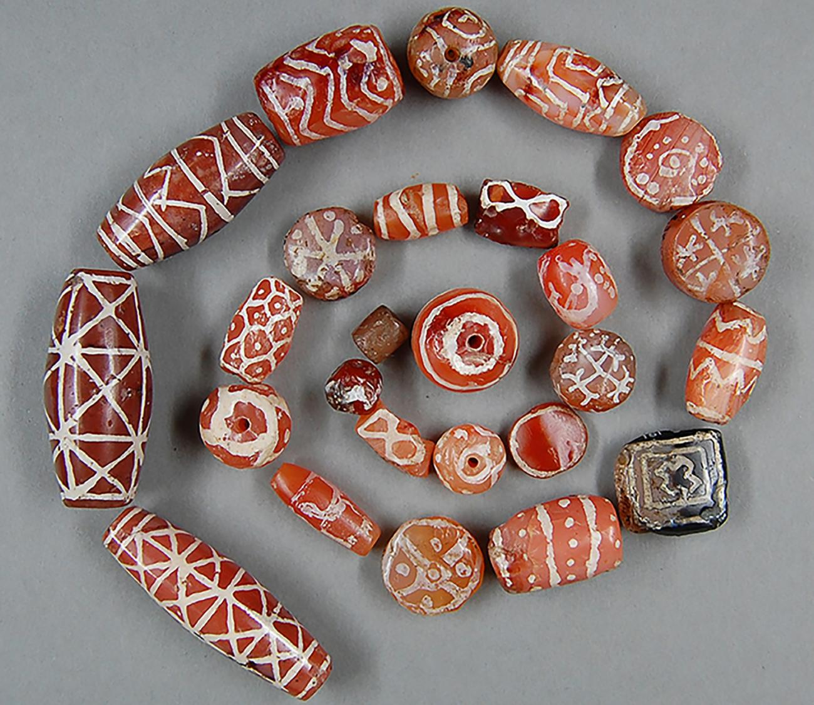
- A small, typically round object made of materials like glass, stone, shell, metal, or clay, often used in jewelry, decoration, or as trade items in ancient cultures. - Pottery: - The potter's wheel was extensively used. - Harappan pottery was glossy and shining, indicating advanced ceramic techniques. - Conclusion - The Harappans displayed remarkable craftsmanship and technological skills in various fields, including metallurgy, textiles, construction, jewelry-making, and pottery. - Their expertise in bronze-working and intricate crafts highlights their highly organized urban economy and sophisticated culture. - Trade in the Harappan Civilization - The Harappans engaged in extensive trade, both within the Indian subcontinent and with distant lands such as Mesopotamia, Afghanistan, and Iran. - Since their cities lacked many essential raw materials, they relied on trade to acquire necessary resources. - Mode of Trade and Transportation - Barter System: - The Harappans did not use metallic money, and there is no evidence of any standardized currency. - They likely exchanged finished goods and food grains for raw materials through barter. - Means of Transport: - Boats and bullock ( two-wheeled or four-wheeled carts pulled by oxen (bullocks)) carts were used for trade and transportation. - They practiced navigation along the Arabian Sea coast. - The wheel was well known, and carts with solid wheels were commonly used in Harappa. - They may have also used a single-horse cart, similar to the modern-day ekka. -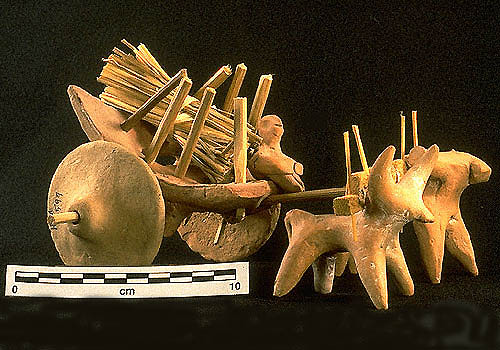
- Internal and External Trade - Trade within India: - The Harappans maintained commercial links with: - Rajasthan (possibly for copper). - Afghanistan (for lapis lazuli and other stones). - Iran (for metals and luxury goods). - Trade with Mesopotamia: - The Harappan cities actively traded with those in the Tigris and Euphrates region (Mesopotamia). - Harappan seals have been found in Mesopotamia, indicating direct contact. - The Harappans may have adopted some Mesopotamian cosmetics and cultural influences. - Meluha - The Indus Connection: - Mesopotamian records (c. 2350 B.C.) mention trade with Meluha, which refers to the Indus region. - These texts also mention two intermediate trading stations: - Dilmun - Likely Bahrain, an important port city - Thousands of graves in Dilmun remain to be excavated, suggesting its importance in ancient trade. - Makan - Possibly Oman or the Makran coast - Conclusion - Trade played a vital role in the Harappan economy, allowing them to obtain metals, stones, and luxury goods from distant regions. - Their advanced transportation system, navigation skills, and extensive trade links with Mesopotamia, Afghanistan, and Iran highlight their well-developed commercial network. - Political Organization of the Harappans - The political structure of the Harappan civilization remains unclear due to a lack of direct evidence. Unlike contemporary civilizations such as Egypt and Mesopotamia, no palaces or inscriptions indicating kingship have been found. - Absence of Religious Rule - No evidence of temple-based governance: - In Mesopotamia, cities were ruled by priest-kings who controlled both political and religious affairs. - However, Harappan sites lack large temples, except for structures like the Great Bath, which may have had ritual significance. - This suggests that priests did not dominate political life. - Limited evidence of religious influence: - Some indications of a fire cult have been found at Kalibangan and Lothal. - However, no large-scale temple structures or records of theocratic rule exist. - Theocratic rule - A system of government where religious authorities govern the state or laws are based on religion - Possible Merchant Rule - The Harappan rulers may have prioritized trade and economic stability over military expansion. - The absence of grand palaces and military fortifications suggests a non-militaristic administration. - Given the importance of long-distance trade, it is possible that merchants played a significant role in governance. - Evidence of Centralized Administration - Urban planning and uniformity in weights and measures indicate strong administrative control. - The widespread use of standardized bricks and well-planned drainage systems suggests coordinated governance. - The presence of large granaries at Harappa and Mohenjo-Daro indicates organized resource management, possibly under state supervision. - Conclusion - While the exact political structure remains uncertain, the lack of evidence for kingship or military conquests suggests that Harappan governance may have been commercial or administrative in nature, possibly controlled by a group of elites rather than a single ruler. - Religious Practices of the Harappans - The Harappan civilization had a deep connection with fertility worship, as suggested by numerous terracotta figurines discovered at excavation sites. - Worship of the Earth Goddess - A common terracotta figurine depicts a woman with a plant growing from her womb, likely symbolizing the goddess of fertility and earth. - The Harappans revered the earth as a fertility goddess, similar to how the Egyptians worshipped the Nile goddess, Isis. - Unclear Social Structure - While Egyptians followed a matriarchal system, where daughters could inherit the throne or property, there is no conclusive evidence about Harappan inheritance laws. - Influence on Later Hinduism - Some Vedic texts mention the earth goddess, though she was not highly prominent. - The concept of a supreme goddess took shape much later in Hinduism. - By the 6th century A.D., various mother goddesses such as Durga, Amba, Kali, and Chandi were widely worshipped. - Eventually, each village came to have its own local deity, reflecting the deep-rooted tradition of goddess worship. -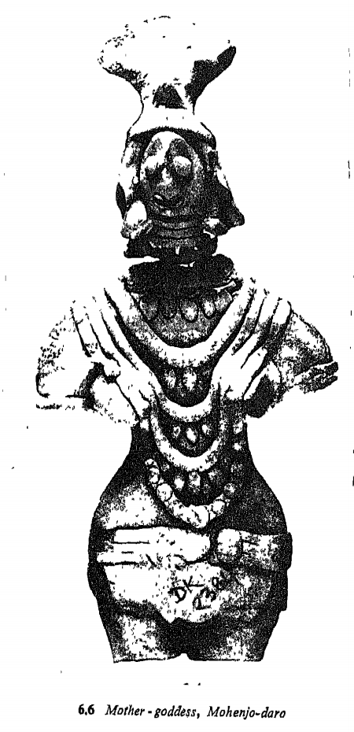
- The Male Deity in the Indus Valley - Depiction on a Seal -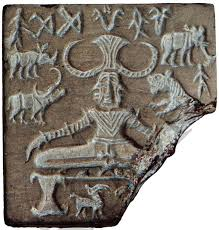
- A male deity is represented on a Harappan seal. - He has three heads and horns and sits in a yogic posture, with one foot placed on the other. - The deity is surrounded by an elephant, tiger, and rhinoceros, with a buffalo below his throne. - Two deer appear at his feet. - Resemblance to Pasupati Mahadeva - The seal closely resembles the traditional image of Pasupati (Lord of Animals), a form of Siva. - The four animals surrounding the deity may symbolize the four directions, similar to the later Hindu belief where each god has a vehicle. - Phallus Worship and Later Hinduism - Phallus (symbolic representation of the male reproductive organ) worship (Linga worship) was practiced in Harappa, as evidenced by numerous stone symbols of the phallus and female sex organs found at excavation sites. - This form of worship later became intimately connected with Lord Siva in Hinduism. - The Rig Veda mentions non-Aryan people who practiced phallus worship, indicating its ancient origins. - Over time, phallus worship, which began in the Indus Valley, was accepted as a respectable religious practice in Hindu society. - Tree and Animal Worship in the Indus Valley - Tree Worship - The people of the Indus region worshipped trees. - A seal depicts a god seated among the branches of a pipal tree, a tree that continues to be worshipped in India today. - Animal Worship - Animals were revered, as seen in their representation on seals. - The humped bull was particularly significant; even today, pious Indians give way to such bulls in market streets. - The animals surrounding Pasupati Mahadeva suggest that they were also worshipped. - Forms of Worship - The Harappans worshipped gods in the form of trees, animals, and human beings. - Unlike Egypt and Mesopotamia, they did not place their gods in temples. - Use of Amulets - An amulet is a small object worn or carried to bring good luck, protection, or ward off evil spirits. - Many amulets have been discovered, suggesting that the Harappans believed in ghosts and evil forces. - They likely used amulets as protection against harm. - The Atharva Veda (differes significantly from other three vedas) also mentions charms, spells, and amulets for warding off diseases and evil forces. -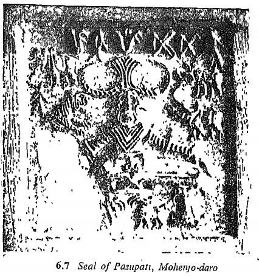
- The Harappan Script - Invention and Discovery - The Harappans invented writing, similar to the Mesopotamians. - The earliest specimen of the Harappan script was found in 1853, with the complete script discovered by 1923. - However, it remains undeciphered. - Attempts at Decipherment (converted into a readable or understandable form) - Scholars have attempted to connect it with: - Dravidian or proto-Dravidian language. - Sanskrit language. - Sumerian language. - However, none of these interpretations are conclusive. - As a result, we cannot determine the Harappan literary contributions, beliefs, or ideas. - Characteristics of the Script - Unlike Egyptians and Mesopotamians, the Harappans did not write long inscriptions. - Most inscriptions appear on seals and contain only a few words. - These seals may have been used by propertied individuals to mark ownership. - The script consists of 250 to 400 pictographs. - Each letter is a pictogram, representing a sound, idea, or object. - The script is not alphabetical, but pictographic. - Comparison with Other Scripts - Some efforts have been made to compare it with Mesopotamian and Egyptian scripts. - However, it is an indigenous script, unique to the Indus region, with no connection to the scripts of Western Asia. - Weights, Measures, and Artistic Creations of the Harappans - Weights and Measures - The Harappans likely used their script for recording private property and account-keeping. - Trade and transactions required weights and measures, and numerous weight articles have been discovered. - The Harappans primarily used the unit of 16 and its multiples: - 16, 64, 160, 320, and 640. - This tradition of 16 continued in India, as 16 annas once made a rupee. - Harappans also possessed measurement tools: - Measuring sticks with inscribed marks. - One such stick was made of bronze. - Harappan Pottery - The Harappans were skilled in using the potter's wheel. -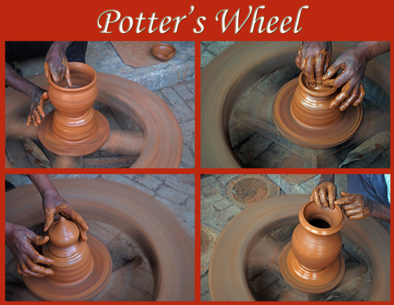
- Their pottery was painted in various colors and decorated with: - Tree designs. - Circles. - Human images (found on some pottery fragments). -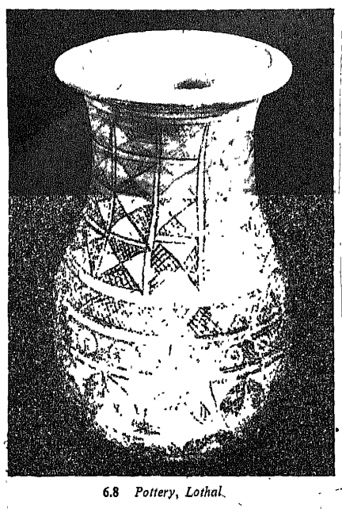
- Seals - The greatest artistic achievement of the Harappans was their seals. - Around 2000 seals have been discovered, with the majority featuring: - Short inscriptions. - Animal depictions, including: - One-horned bull (unicorn bull). - The "unicorn" label is due to the single horn depicted, but it's thought to be a profile view of a bull, where only one horn is visible. - Buffalo. - Tiger. - Rhinoceros. - Goat. - Elephant. -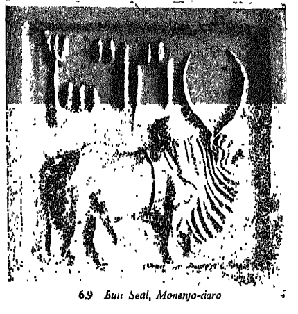
-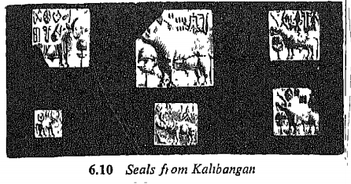
- Images - The Harappan artisans created beautiful metal images. -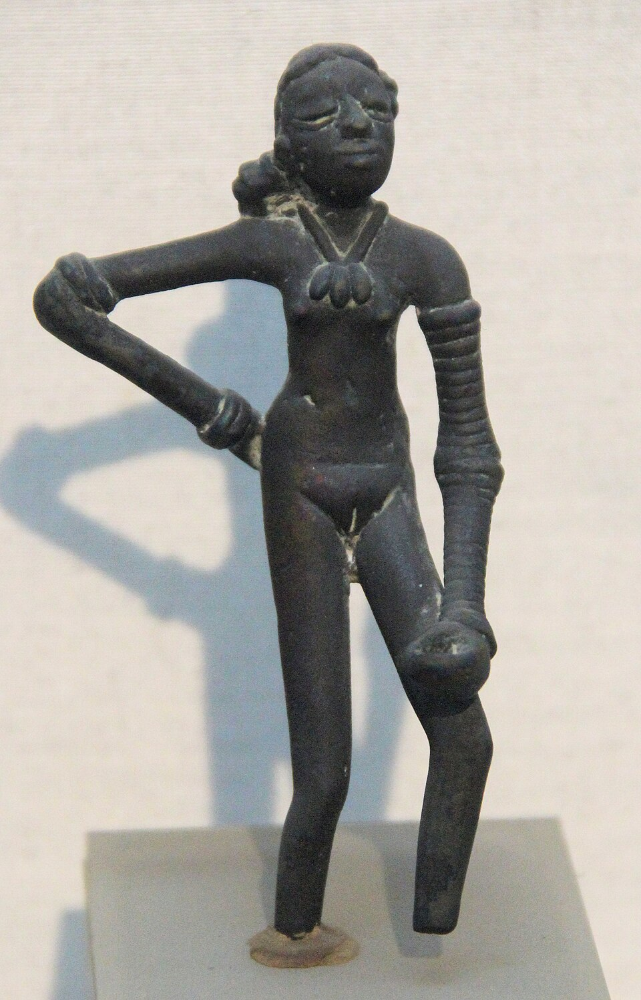
- The bronze statue of a woman dancer is the most notable specimen: - The figure is naked except for a necklace. - A few Harappan stone sculptures have also been found, including: - A steatite statue with: - An ornamented robe draped over the left shoulder and under the right arm. - Short locks at the back, kept tidy with a woven fillet. -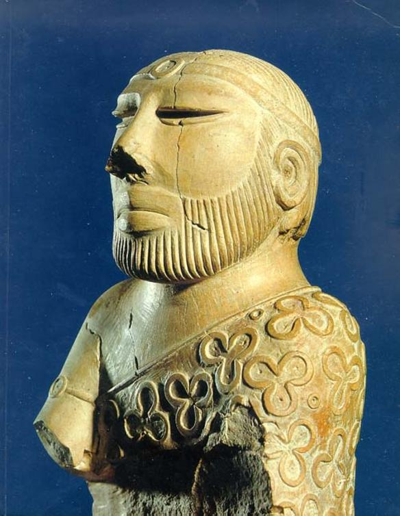
- Terracotta Figurines - Terracotta figurines, made of fire-baked clay, were common. - These figurines were likely used as toys or worship objects. - They depicted: - Birds. - Dogs. - Sheep. - Cattle. - Monkeys. - Human figures (women outnumber men). - Contrast in craftsmanship: - Skilled craft - Seals and metal images were crafted with great skill, likely for the upper classes. - Simpler craft - Terracotta pieces were simpler and likely used by common people. - Unlike Egypt and Mesopotamia, the Harappan civilization produced fewer artistic works in stone. - No massive stone sculptures similar to those of ancient Egypt and Mesopotamia have been found. - Origin, Maturity, and End of the Harappan Culture - Timeframe and Maturity - The Harappan culture existed from c. 3300 BCE to 1300 BCE, with it's different phases as exaplained at beginning. - Throughout its existence, the civilization maintained uniformity in: - Tools and weapons. - Town planning. - Seals and terracotta works. - Long chert blades. - However, changes did occur, such as variations in pottery at Mohenjo-daro over time. - Around 1750 B.C., the key cities Harappa and Mohenjo-daro disappeared, while other settlements faded gradually, continuing in a degenerate phase in: - Gujarat. - Rajasthan. - Western Uttar Pradesh. - Origins of the Harappan Culture - The origin of the Harappan culture remains unclear. - Several pre-Harappan settlements were found in: - Baluchistan. - Kalibangan (Rajasthan). - The connection between these and the mature Harappan culture is uncertain, though it may have evolved indigenously. - There is no clear proof of outside influence, though contacts with Mesopotamian cities might have provided some stimulus. - Unique Features of the Harappan Culture - Despite external contacts, the Harappan culture was distinctly Indian. - Features that set it apart from contemporary civilizations like Mesopotamia: - Planned cities with a chessboard layout, including: - Straight streets. - Drainage pipes and cesspits. - Rectangular houses with: - Brick-lined bathrooms. - Wells. - Stairways (found in all Harappan cities). - Advanced drainage system, unparalleled in antiquity, except for: - Crete (Knossos). - Superior use of burnt bricks, a technique not as advanced in Western Asia. - Unique pottery and seals, depicting the local animal world. - Distinctive script, bearing no resemblance to Egyptian or Mesopotamian scripts. - Though part of the Bronze Age, Harappans used bronze sparingly and still relied heavily on stone implements. - The Harappan culture covered a vast area, unmatched by any other contemporary civilization: - Harappa's structures spanned 5 km in circuit, making it the largest known Bronze Age urban complex. - Decline and Theories of Disappearance - While Mesopotamian cultures continued beyond 1750 B.C., the Harappan civilization declined rapidly. - Various theories have been proposed for its disappearance: - Environmental Factors: - Soil salinity increase due to desert expansion, leading to decreased fertility. - Economic Decline - Trade collapse, agriculture issues - Natural Disasters and climate change: - Sudden land subsidence or uplift, triggering floods. - Possible shifts in monsoon patterns - Aryan Invasion Theory (Disputed): - The Harappan culture might have been destroyed by the Aryans. - Signs of Transition and New Influences - Decline in Urban Planning - In the later phase, houses were built over older structures in a more haphazard manner, and street planning became irregular. - In the declining phase, drainage systems became clogged, garbage accumulated in streets and homes, and public hygiene deteriorated - As the civilization weakened, local governance structures eroded, leading to poor maintenance of urban infrastructure. - Later phases of Harappan culture indicate gradual changes due to incoming new people: - New tools and pottery emerged in the Indus basin. - Signs of insecurity and violence at Mohenjo-daro: - Hoarded jewelry. - Clustered human skulls. - New weapon types appeared in later Mohenjo-daro levels, including: - Axes. - Daggers. - Knives with midribs and flat tangs. - Cemetery evidence at late Harappan sites suggests the arrival of new groups: - New pottery styles at Harappa and Baluchistan. - Painted Grey Ware (associated with Vedic culture) found at: - Punjab and Haryana, mixed with late Harappan pottery. - Aryan Influence and Lack of Direct Conflict - Some scholars attribute the changes to barbarian, horse-riding people from Iran entering through the hills. - However, the newcomers were not in overwhelming numbers and did not completely replace the Harappan cities in Punjab and Sindh. - The Rig Vedic Aryans later settled in the Seven Rivers region, previously occupied by the Harappans, but: - No mass-scale confrontation between the Harappans and Aryans has been recorded. - Advent of the Aryans and the Age of the Rig Veda - Rig veda - Rig veda was composed orally around 1500 BCE - 1200 BCE but writing was developed by that time, so it was was written around 500–100 BCE (or even later). - It was passed through guru–shishya tradition, this oral system was extremely precise (no need for writing initially) - Clear evidence of writing appears during the Maurya Empire (3rd century BCE) with the inscriptions of Ashoka in Brahmi script - Original Home and Identity of the Aryans - Origins and Linguistic Connections - The Aryans spoke Indo-European languages, which are now found across Europe, Iran, and the Indian subcontinent in various modified forms. - Their original homeland is believed to be east of the Alps in Eurasia. However, modern throries suggest that aryans were nomadic pastoralists from the Central Asian Steppe (southern Russia, Kazakhstan). - Evidence from common words in Indo-European languages for animals (e.g., goats, dogs, horses) and plants (e.g., pine, maple) suggests that they were familiar with the fauna and flora of Eurasia. - They knew rivers and forests but had fewer common words for mountains, despite crossing many hills. - Early Life and Migration - The Aryans primarily led a pastoral life, with agriculture as a secondary occupation. - Due to their nomadic lifestyle, they did not leave behind solid material remains. - The horse played a crucial role in their mobility and warfare, helping them and allied groups expand into Western Asia from 2000 B.C. onwards. - Aryans in Iran and Westward Movement - Before reaching India, the Aryans first appeared in Iran, where they lived for a long time alongside the Indo-Iranians. - Connections with Iranian culture: - The Rig Veda (India's earliest Indo-European text) and the Avesta (Iran's oldest text) share similar gods and social class names. - The Kassite inscriptions (1600 B.C.) and the Mitanni inscriptions (14th century B.C.) in Iraq also mention Aryan names, suggesting that some Aryans migrated westward from Iran. - Aryans in India - Around 1500 B.C., the Aryans entered India in multiple waves. - Their earliest settlements were in: - Eastern Afghanistan - Punjab - Western Uttar Pradesh - The Rig Veda mentions several rivers in this region, including: - Sindhu (Indus) - the most frequently mentioned river - Sarasvati - now lost, identified with the Ghaggar river - Kubha - a river in Afghanistan - They possibly obtained copper from the Khetri mines in Rajasthan. - This area was referred to as the “Land of the Seven Rivers.” (northwestern part of the Indian subcontinent). - Rivers included - Sindhu (Indus) - Vitasta (Jhelum) - Asikni (Chenab) - Parushni (Ravi) - Vipasha (Beas) - Sutudri (Sutlej) - Sarasvati (now-lost river) - Conflict with Indigenous People - The first wave of Aryans, the Rig Vedic people, arrived around 1500 B.C. - They encountered indigenous inhabitants called dasas and dasyus. - The dasas appear in both the Rig Veda and Iranian texts, suggesting they were possibly a branch of early Aryans. - The dasyus may have been the original inhabitants of the region, differing from the Aryans in culture and religious practices. - The Rig Veda describes conflicts, including: - The defeat of Sambara (Dasyu chief) by Divodasa (a leader from the Bharata clan, an Aryan group). - Trasadasyu, an Aryan chief, was known for subduing the dasyus. - The term dasyuhatya (“slaughter of the dasyus”) is frequently mentioned. - The dasyus may have worshipped the phallus and did not rely on cattle for dairy products. - Tribal Conflicts Among the Aryans - Weapons and Military Advantages - The exact weapons of the Aryans' adversaries remain largely unknown. - However, the Rig Veda describes Indra as “Purandara” (Breaker of Forts), suggesting that Aryans attacked fortified settlements. - Some of these forts may have been Harappan settlements, though this is uncertain. - The Aryans' military superiority came from: - Horse-drawn chariots, introduced for the first time in West Asia and India. - Coats of mail (varman) (A type of protective armor made of interlinked metal rings) and advanced weaponry. - Types of Conflicts - The Aryans engaged in two types of conflicts: 1. Wars against the pre-Aryans (possibly the Harappans or indigenous tribes). 2. Inter-tribal conflicts among different Aryan groups. - Inter-Tribal Rivalries - The Aryans were divided into five tribes, known as panchajana. - They often fought among themselves and even allied with non-Aryan groups at times. - The Bharatas and Tritsu were the dominant ruling clans, supported by the priest Vasishtha. - They were both Indo-Aryans - The name Bharatavarsha (India) originates from Bharata, first mentioned in the Rig Veda. - The Battle of Ten Kings - One of the most significant inter-tribal conflicts was the Battle of Ten Kings. - It was fought on the river Parushni (modern Ravi). - The battle was between: - The Bharatas (led by King Sudas). - A confederation of ten kings, consisting of: - Five Aryan tribal chiefs. - Five non-Aryan tribal leaders. - Outcome: - Sudas and the Bharatas emerged victorious, establishing their dominance. - Among the defeated groups, the Purus were the most significant. - Later, the Bharatas allied with the Purus, forming a new ruling tribe called the Kurus. - The Kurus merged with the Panchalas, establishing their rule in the upper Gangetic basin, where they played a crucial role in later Vedic history. - Material Life of the Rig Vedic Aryans - Weapons and Tools - The Rig Vedic Aryans owed their success in India to their horses, chariots, and possibly advanced bronze weapons. - However, no archaeological evidence of these bronze weapons has been found. - They likely used copper from the Khetri mines in Rajasthan. - Agriculture and Craftsmanship - The Rig Vedic Aryans had knowledge of agriculture: - The ploughshare is mentioned in the earliest part of the Rig Veda (some believe it is an interpolation). - This ploughshare was possibly made of wood. - They were familiar with sowing, harvesting, and threshing. - They had an understanding of different seasons. - Various craftsmen and artisans are mentioned in the Rig Veda, including: - Carpenters - Chariot-makers - Weavers - Leather workers - Potters - The term ayas (meaning copper or bronze) suggests that metalworking was known. - Pastoral Economy and Wealth - Despite agricultural knowledge, pastoralism was central to their economy. - The cow was the most important form of wealth: - Most wars were fought for cattle, as indicated by the Rig Vedic term for war, gavisthi (search for cows). - Gifts to priests were made in terms of cows and women slaves, not land. - Land was not a well-established form of private property. - Archaeological Evidence - Excavations at Bhagwanpura (Haryana) and three sites in Punjab have uncovered: - Painted Grey Ware alongside late Harappan pottery. - These finds are dated to 1600 B.C.-1000 B.C., roughly aligning with the Rig Vedic period. - Tribal Polity in the Rig Vedic Period - The Role of the King (Rajan) - The tribal chief (rajan) was at the center of the administration, mainly due to his successful leadership in war. - The position of the king was largely hereditary, though some traces of election by the tribal assembly (samiti) existed. - His primary duties included: - Protecting the tribe and its cattle. - Fighting wars on behalf of the tribe. - Offering prayers to the gods for the tribe's welfare. - Tribal Assemblies - Several tribal assemblies played an important role in governance, including: - Sabha - A smaller, select body of elders and important persons - Likely composed of nobles, priests, and influential members - Functions: - Advised the king - Acted as a judicial body (settling disputes) - Discussed important policies - Samiti - A larger, general assembly of the tribe (vis) - More democratic in nature compared to Sabha - Functions: - Elected or confirmed the king - Discussed major political decisions (war, alliances) - Represented the will of the people - Vidatha - The earliest assembly (even before Sabha and Samiti) - Had multi-functional roles: - Religious (rituals, sacrifices) - Military (war planning) - Economic (distribution of resources) - Included both men and women (important point) - Gana - Refers to a tribal group or clan, not exactly an assembly - Later evolved into republican states (Gana-sanghas) - These assemblies had deliberative, military, and religious functions. - Women participated in the sabha and vidatha. - The sabha and samiti were the most influential political bodies, and kings sought their support. - Administrative Functionaries - The king was assisted by key officials, including: - Purohita (chief priest): - Played a crucial role in advising and inspiring the king. - Two important priests were Vasishtha and Visvamitra, who praised tribal chiefs in exchange for rewards (cows, women slaves, etc.). - Senani (military commander): - Led warriors into battle. - Used spears, axes, and swords in combat. - No officer was responsible for tax collection. Instead, the king received: - Dana (voluntary gifts) from people. - Spoils of war, which were possibly distributed in assemblies. - No official for justice administration is mentioned, but: - Theft and burglary (especially cattle theft) were known crimes. - Spies were used to monitor unlawful activities. - Territorial Administration and Local Officials - Titles of officials did not indicate a structured territorial administration. - Some officers were attached to specific lands, such as: - Vrajapati (officer over pasture lands) - "Vraja" refers to a pasture or enclosure for cattle and "Pati" means lord/master - Gramani (originally a leader of a small tribal unit): - Initially, led warriors in battle. - Later became the head of the village, eventually merging with the vrajapati. - Military and Expansion - No regular standing army was maintained. Instead, a militia was mustered (Gathered or assembled) in times of war. - Military duties were carried out by tribal groups, such as: - Wara - Gana - Grama - Sardia - The government remained tribal and military in nature. - There was no organized civil or territorial administration because the Aryans were in a constant state of migration and expansion. - Tribe and Family in the Rig Vedic Period - Kinship and Tribal Identity - Kinship formed the foundation of the social structure. - A person's clan identity was crucial, as seen in the names of several Rig Vedic kings. - Primary loyalty was given to the tribe (jana), rather than to any specific territory. - The term jana appears 275 times in the Rig Veda. - The term janapada (territory) is not mentioned at all, indicating that territory or kingdoms were not yet established. - Tribal Organization - Another significant term for a tribe in the Rig Veda is vis, which appears 170 times. - The vis was further divided into grama (smaller tribal units), primarily for warfare. - Inter-grama conflicts led to samgrama (war). - The vaisya varna (social class) emerged from the vis, which consisted of the mass of tribal people. - Family Structure (Kula and Griha) - The term kula (family) is rarely mentioned in the Rig Veda. - A more common term for the family unit was griha (household). - The Rig Vedic family was large and joint, including not only parents and children but also slaves and extended relatives. - The same word was used for nephew, grandson, cousin, etc., suggesting that family differentiation had not advanced much. - It was a patriarchal society, with the father as the head of the family (similar to Roman society). - Multiple generations lived under the same roof, reinforcing the joint family system. - Sons were highly valued, as they were seen as warriors. - Prayers for sons appear frequently in Rig Vedic hymns. - There is no expressed desire for daughters, though prayers for children and cattle are common. - Status of Women - Women had some rights and social presence: - They could attend assemblies. - They could perform sacrifices alongside their husbands. - Some women composed hymns: - The Rig Veda mentions five women who composed hymns. - Later texts mention 20 such women. - The hymns were orally composed, as writing had not yet developed. - Marriage and Social Practices - Marriage as an institution was established, but primitive customs persisted: - Mythological references hint at early practices: - Yami (twin sister of Yama) proposed a love relationship, but Yama rejected it. - Traces of polyandry (form of marriage in which a woman has multiple husbands at the same time, opposite of polygyny): - The Maruts are said to have shared Rodasi. - The two Asvin brothers are depicted as living with Surya, the daughter of the sun god. - These instances may indicate matrilineal influences, though they were not common. - Some sons were named after their mothers (e.g., Mamateya). - Other marriage customs in the Rig Veda: - Levirate (marrying a deceased husband's brother) and widow remarriage were practiced. - No evidence of child marriage. - The marriageable age was approximately 16 to 17 years. - Social Divisions in the Rig Vedic Period - Emergence of Social Hierarchy - The Rig Veda reflects awareness of physical differences among people in north-western India (1500-1000 BC). - The term varna originally meant color, suggesting that the Aryans were fair-skinned, while the indigenous inhabitants were darker. - However, the importance of color-based distinctions has been exaggerated by Western writers. - The real cause of social divisions was the Aryan conquest of the indigenous people. - Dasas and Dasyus (the conquered people) were enslaved and categorized as Sudras. - Wealth distribution contributed to inequality: - Tribal chiefs and priests accumulated a larger share of the booty, while common people received less. - This led to social stratification within the tribe. - Evolution of the Fourfold Varna System - Initially, society was divided into three groups: 1. Warriors (Kshatriyas) 2. Priests (Brahmanas) 3. Common people (Vaisyas) - This was similar to social divisions in Iran. - The fourth division, Sudras, appeared later, towards the end of the Rig Vedic period. - Sudras are mentioned for the first time in the tenth book of the Rig Veda (The Rigveda consists of 10 books, known as Mandalas), which is a later addition. - Slavery and Social Inequality - Slaves were common and were often given as gifts to priests. - Most slaves were women, employed primarily in domestic work. - Slaves were not used in agriculture or other productive activities. - Social inequalities emerged due to the unequal distribution of war spoils. - Princes and priests benefited, while common tribal people lost out. - Occupational Divisions - Occupational differentiation had begun, but it was not rigid. - A Rig Vedic verse illustrates this: - “I am a poet, my father is a physician, and my mother is a grinder. Earning a livelihood through different means, we live together.” - Wealth in Rig Vedic society was measured by cattle, chariots, horses, and slaves, not land. - Gifts of land were absent, and even gifts of cereals were rare. - There were domestic slaves but no wage earners. - Tribal and Egalitarian (principle or belief in equality, especially regarding social, political, and economic rights) Society - The economy was primarily pastoral, not agricultural. - This limited the possibility of collecting regular tributes. - Taxation and land accumulation were absent, keeping tribal elements strong. - Despite emerging social divisions, society remained largely tribal and egalitarian. - Rig Vedic Gods and Worship Practices - Nature-Based Deities - The Aryans personified natural forces, attributing human or animal characteristics to them. - They worshipped these deities through hymns, which were composed by poets from different families. - The major gods of the Rig Veda included: - Indra (Purandara, Breaker of Forts) - Most prominent deity in the Rig Veda, with 250 hymns dedicated to him. - Depicted as a warlord, leading Aryans to victory against demons. - Considered the rain god, responsible for rainfall. - Agni (Fire God) - Second most important deity, with 200 hymns in his honor. - Fire was essential for burning forests, cooking, and sacrifices. - Agni served as an intermediary between gods and people, carrying offerings to the deities through smoke. - Varuna (God of Cosmic Order and Water) - Thought to uphold natural order, and events in the world were seen as reflections of his desires. - Soma (God of Plants and Intoxication) - Soma was both a god and an intoxicating drink. - Rig Vedic hymns describe its preparation from unidentified plants. - Maruts (Storm Gods) - Represented storm and wind. - Played a role in weather phenomena and battles. - Female Deities - Female divinities existed but were less significant than male gods in the patriarchal Rig Vedic society. - Examples: - Aditi - Possibly associated with infinity or motherhood. - Ushas - Represented the dawn, symbolizing the beginning of the day. - Mode of Worship - Prayers and sacrifices were the primary modes of worship. - Worship was collective and individual: - Every tribe or clan had a special god. - Prayers were often recited in chorus by the entire tribe. - Sacrifices were performed with offerings of vegetables, barley, etc. - Sacrificial rituals were simple: - Agni and Indra were often invoked in sacrifices by the entire tribe (jana). - No complex rituals or sacrificial formulas were involved, unlike later Vedic times. - Purpose of Worship - People did not worship gods for spiritual upliftment or liberation from suffering. - Their prayers focused on material and worldly desires, including: - Praya (children) - Pasu (cattle) - Food - Wealth - Health - The Later Vedic Phase : Transition to State and Social Formation - Expansion in the Later Vedic Period (c. 1000-600 B.C.) - Sources and Textual Developments - The history of this period is primarily based on later Vedic texts, compiled after the Rig Veda. - Vedic Samhitas: - Rig Veda Samhita - The oldest Vedic text, forming the basis for the early Vedic period. - Sama Veda Samhita - Modified Rig Vedic hymns set to tunes for singing. - Yajur Veda Samhita - Contained hymns and rituals, reflecting the social and political environment. - Atharva Veda Samhita - Focused on charms and spells, revealing non-Aryan beliefs and practices. - Brahmanas - Brahmanas followed the Samhitas and contained ritualistic formulas explaining the social and religious aspects of rituals. - Archaeological Evidence: The Painted Grey Ware (PGW) Culture - Later Vedic texts and excavations provide insights into life during this period. - Around 500 PGW sites have been discovered in the upper Gangetic basin (1000-600 B.C.). - PGW culture is identified through: - Painted grey pottery (earthen bowls and dishes). - Weapons, indicating a warrior society. - These sites help reconstruct the life of the Vedic people in western Uttar Pradesh, Punjab, Haryana, and Rajasthan. -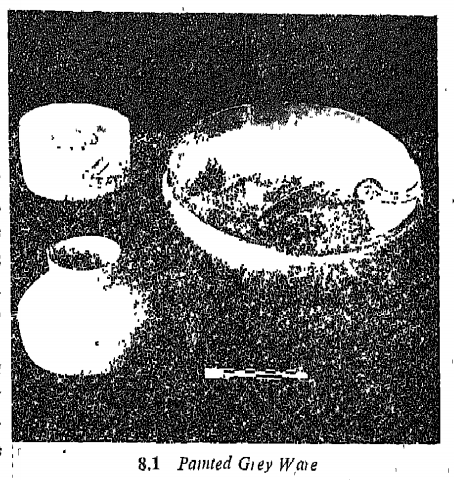
-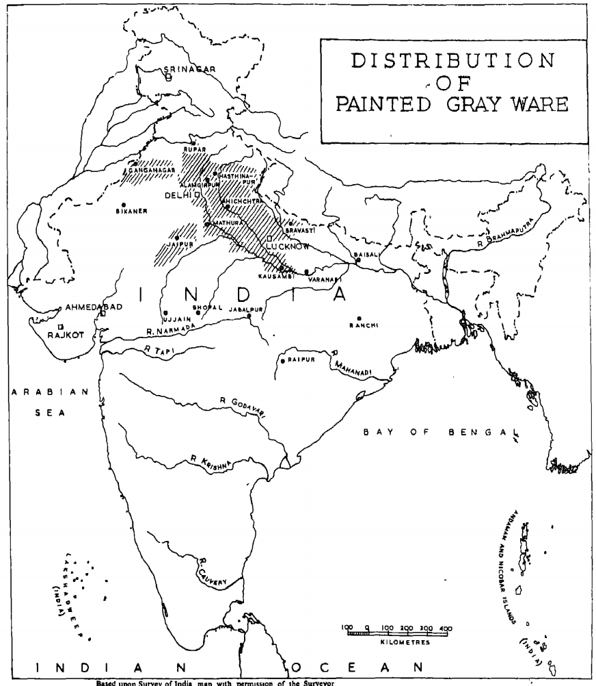
- Aryan Expansion and Tribal Mergers - Aryans expanded from Punjab into western Uttar Pradesh, covering the Ganga-Yamuna doab. - Major tribal formations: - Kuru - Bharatas and Purus merged to form the Kuru people - Initially settled between the Sarasvati and Drishadvati rivers. - Later occupied Delhi and the upper doab, establishing Kurukshetra. - Merger of Kurus and Panchalas - Kurus and Panchalas united, extending their control over Delhi and the upper/middle doab. - Hastinapur (Meerut district) became their capital. - Excavations at Hastinapur (900-500 B.C.) - Show early town life, but settlements consisted of mud structures, not grand cities. - Hastinapur was later flooded, causing the Kuru survivors to migrate to Kausambi (near Allahabad). - The Mahabharata is based on a battle within the Kuru clan, fought around 950 B.C., leading to their decline. - The Panchala kingdom - Located in modern Bareilly, Badaun, and Farrukhabad. - Known for philosopher-kings and Brahmana theologians. - Further Eastward Expansion (600 B.C.) - Vedic people extended from the doab to Kosala (eastern Uttar Pradesh) and Videha (north Bihar). - Encounters with non-Vedic groups: - In eastern Uttar Pradesh and Bihar, faced people using copper tools and black-and-red pottery. - In western Uttar Pradesh, encountered people using ochre/red pots and copper tools (settled since 1800 B.C.). - Possible interactions with remnants of the Late Harappan culture, though these groups were not purely Harappan. - Factors behind Vedic success: - Iron weapons - Horse-drawn chariots, providing a military advantage - By the end of the later Vedic period, Aryans had expanded significantly, setting the stage for the rise of Mahajanapadas (large kingdoms) in the 6th century B.C.. - The PGW-Iron Phase Culture and the Later Vedic Economy - Introduction of Iron and its Impact - Around 1000 B.C., iron began to be used in the Gandhara region (Pakistan) and Baluchistan. - Iron implements, such as arrowheads and spearheads, appeared in eastern Punjab, western Uttar Pradesh, and Rajasthan around 800 B.C. - With iron weapons, the Vedic people likely defeated adversaries in the upper Gangetic basin and cleared forests using iron axes. - The spread of iron knowledge reached eastern Uttar Pradesh and Videha by the seventh century B.C. - Later Vedic texts refer to iron as syama or krishna ayas. -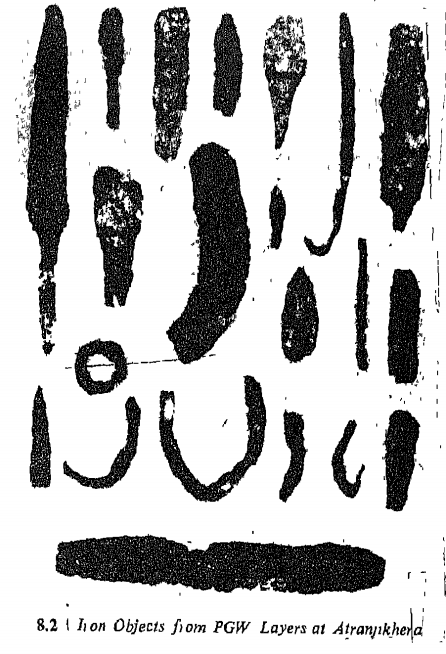
- Agriculture in the Later Vedic Period - Despite few iron agricultural tools being found, agriculture was the primary occupation. - Ploughing was significant, with texts mentioning six, eight, twelve, or even twenty-four oxen yoked to a plough (possibly exaggerated). - Ploughing was done using a wooden ploughshare, suitable for the light soil of the upper Gangetic basin. - Bullocks were scarce due to cattle slaughter in sacrifices, leading to primitive farming methods. - The Satapatha Brahmana discusses ploughing rituals, with legends associating King Janaka (father of Sita) and Balarama (Krishna's brother) with ploughing. - Over time, upper varnas were prohibited from ploughing. - Crops and Food Production - Barley remained an important crop, but rice and wheat became staples. - Rice (vrihi in Vedic texts) was first encountered in the doab region, with remains found at Hastinapur (8th century B.C.). - Rice was commonly used in rituals, while wheat was rarely mentioned. - Various lentils were also cultivated. - Arts, Crafts, and Metalworking - Skilled professions included smiths and smelters, involved in ironworking from around 1000 B.C. - Numerous pre-1000 B.C. copper tools found in western Uttar Pradesh and Bihar indicate coppersmiths' presence. - The Vedic people may have used copper mines in Khetri (Rajasthan). - Copper objects, found at Painted Grey Ware (PGW) sites, were used for war, hunting, and ornamentation. - Weaving was mainly a female occupation, while leather work, pottery, and carpentry flourished. - Four types of pottery were used: - Black-and-red ware - Black-slipped ware - Painted Grey Ware (PGW) - the most distinctive, used for rituals and dining. - Red ware - the most widely used pottery type. - PGW layers also contained glass hoards and bangles, likely prestige objects for the elite. - Jewel-workers, mentioned in later Vedic texts, catered to wealthier sections of society. - Settlements and Lifestyle - Agriculture and crafts enabled a settled life, with over 500 PGW sites found, mainly in the upper Gangetic basin. - Key areas of settlement: - Kuru-Panchala region (western Uttar Pradesh & Delhi) - Madra region (Punjab & Haryana) - Matsya region (Rajasthan) - Excavated sites include Hastinapur, Atranjikhera, and Noh. - Settlements, lasting 1-3 centuries, consisted of mudbrick and wattle-and-daub houses. - Despite primitive structures, recovered ovens and rice remains confirm agricultural activities. - The Rise of Proto-Urban Centers - Though nagara (city) is mentioned in later Vedic texts, true urbanization was absent. - Hastinapur and Kausambi (near Allahabad) were early proto-urban centers at the end of the Vedic period. - These settlements suggest the faint beginnings of town life. - References to seas and sea voyages hint at some commercial activity, possibly influenced by growing crafts and trade. - Conclusion: Advancements in Material Life - The later Vedic period marked a shift from pastoral, semi-nomadic life to a settled agricultural society. - Agriculture became the mainstay of the economy, complemented by crafts and trade. - Peasants produced enough for self-sustenance and marginal surplus to support rulers and priests. - Despite economic and social advancements, full-fledged towns had yet to emerge. - Political Organization in the Later Vedic Period - Decline of Popular Assemblies and Rise of Royal Power - During the later Vedic period, popular assemblies lost their significance as royal authority expanded. - The vidarka assembly completely disappeared, while the sabha and samiti continued but underwent changes. - These assemblies became dominated by princes and wealthy nobles, sidelining common people. - Women were no longer allowed to participate in the sabha, which became an exclusive domain of nobles and Brahmanas. - Formation of Larger Kingdoms and Territorial Authority - The emergence of larger kingdoms strengthened the position of the king. - Tribal authority transitioned into territorial authority, meaning that rulers governed over fixed regions rather than just their clans. - Initially, lands were named after the first tribes that settled there, but over time, these tribal names became territorial names. - Example: - Panchala was originally the name of a tribe but later referred to a specific region. - The term rashtra (meaning “territory”) first appears in this period, reflecting this shift. - Strengthening of Kingship through Rituals - Various rituals and sacrifices reinforced the king's authority: - Rajasuya sacrifice: - Conferred supreme power upon the king. - Ashvamedha sacrifice: - Demonstrated the king's unquestioned control over any land where his royal horse roamed uninterrupted. - Vajapeya (chariot race): - A ceremonial race where the king's chariot was made to win, symbolizing his superiority. - These grand rituals impressed the people and enhanced the king's prestige. - Taxation and Administration - Sangrihitri - The collection of taxes and tributes became a regular practice, likely managed by an officer called sangrihitri. - Large-scale sacrifices provided opportunities for rulers to display their generosity by distributing wealth and food among different social groups. - The king was assisted by: - Priests (for religious and ceremonial duties) - Military commanders (for defense and warfare) - Chief queens and high-ranking officials (for governance) - Local Governance and Military Structure - At the village level, administration was likely managed by village assemblies, controlled by the chiefs of dominant tribes. - These assemblies were also responsible for local dispute resolution and trials. - Despite increasing royal power, the king did not maintain a standing army. Instead,: - Tribal warriors were mobilized during wartime. - A ritual for success in war required the king to share a meal from the same plate as his people, symbolizing unity. - Social Organization in the Later Vedic Period - The Varna System and Social Hierarchy - The later Vedic society was divided into four varnas: - Brahmanas (Priests) - The growing influence of sacrifices increased the power of the Brahmanas significantly. Initially, they were one among sixteen priestly classes, but over time, they emerged as the most dominant. - They conducted rituals, officiated at agricultural festivals, and performed ceremonies for their patrons. In return, kings pledged not to harm them. - Rajanyas or Kshatriyas (Warriors and Nobles) - The Rajanyas (Kshatriyas) represented the warrior-noble class and sometimes clashed with the Brahmanas for supremacy. However, when it came to ruling over the lower varnas, both classes cooperated. - By the end of the later Vedic period, it was emphasized that the Brahmanas and Kshatriyas should work together to govern society. - Vaishyas (Commoners and Traders) - The Vaishyas were responsible for agriculture, cattle-rearing, and trade. - Towards the end of the Vedic period, they also engaged in commerce. - They were the only group required to pay tribute, which supported the ruling class. - The Kshatriyas depended on the tributes collected from the Vaishyas for their sustenance. - A long process of subjugation turned the Vaishyas into tribute-payers. Various rituals were prescribed to enforce their submission to the ruling Rajanya (Kshatriya) class. - Shudras (Servants and Laborers) : The Disadvantaged Class - The Shudras were denied many privileges, including the upanayana (sacred thread) ceremony that was granted to the three higher varnas. - This marked the beginning of several social disabilities imposed on them. - The Aitareya Brahmana describes their low status: they were seen as servants, made to work at will, and subject to punishment at the discretion of higher varnas. - Despite these restrictions, certain artisans like chariot makers (Chathakaras) were granted a higher status and were entitled to the sacred thread ceremony, indicating that rigid varna distinctions had not yet fully developed. - Power of the King and the Social Order - The prince (Rajanya) sought to dominate the social structure: - Brahmanas were described as seekers of livelihood, dependent on royal gifts, and removable at will. - Vaishyas were described as tribute-payers who could be beaten or oppressed. - Shudras occupied the lowest position, being treated as servants and subjected to forced labor. - However, some public rituals, especially related to royal coronation ceremonies, included Shudras, suggesting that tribal traditions still influenced society. - Family and Gender Roles - The father's authority increased significantly, to the extent that he could even disinherit his son. - Among royal families, the right of primogeniture (succession by the eldest son) became stronger. - Male ancestors were worshipped, reinforcing patriarchal norms. - Women were generally subordinated, though some women theologians participated in philosophical discussions, and certain queens took part in coronation rituals. - However, the overall trend was a decline in women's status, and they were increasingly regarded as inferior to men. - Gotra System and Marriage - The gotra system emerged during this period. - The term gotra originally referred to a cow-pen where a clan's cattle were kept but later came to signify descent from a common ancestor. - Gotra exogamy became a practice, meaning marriage was prohibited between individuals of the same gotra. - The Ashrama System (Stages of Life) - The concept of four ashramas (stages of life) was not fully established in the later Vedic period. - By post-Vedic times, the four stages were: 1. Brahmacharya (Student) 2. Grihastha (Householder) 3. Vanaprastha (Partial Retirement) 4. Sannyasa (Complete Renunciation) - However, in later Vedic texts, only three stages were mentioned, with Sannyasa not yet well-established. - Gods, Rituals, and Philosophy - Development of Religious Practices - The later Vedic period saw the upper deity evolve under Brahmanical influence, becoming central to Aryan culture. - The Kuru-Panchala region became the cradle of this culture, where the Vedic literature was compiled. - The cult of sacrifice became the foundation of religious practices, accompanied by complex rituals and formulae. - Changes in the Pantheon (group of gods or deities) - Decline of Earlier Gods: - Indra (god of war) and Agni (fire god) lost their earlier prominence. - Rise of New Deities: - Prajapati (the creator) became the supreme deity. - Rudra (associated with animals) gained importance. - Vishnu emerged as the preserver and protector of settled life. - Pushan, once associated with cattle, became the god of the Shudras as society divided into varnas. - Signs of Idolatry: - Some symbolic objects began to be worshipped, marking the early phase of idol worship. - Evolution of Worship and Sacrifices - Worship still aimed at material benefits, but methods changed: - Prayers continued but became less central. - Sacrifices became dominant—both public and private: - Public sacrifices involved kings and communities, often tied to tribal identity. - Private sacrifices were conducted at home, reflecting a settled way of life. - Rituals involved the killing of animals, particularly cattle. The guest was known as goghna (one who was fed on cattle). - "Goghna" is a Sanskrit word with multiple meanings, most notably related to the concept of a guest and the killing of a cow. It can mean "one for whom a cow is killed" or "a guest". The word is derived from go (cow) and ghna (killer or one who destroys). - Brahmanas as Priests: - Brahmanas were originally one of sixteen priestly classes but later monopolized ritual knowledge. - They developed an elaborate system of sacrifices, often influenced by non-Aryan traditions. - Sacrificial Rewards and Priesthood - Generous Rewards: - Priests officiating sacrifices received large dakshinas (gifts), including: - Cows, gold, cloth, and horses. - Some priests even demanded land, though large-scale land grants were rare. - The Satapatha Brahmana describes claims over land in the ashvamedha ritual, though such transfers were likely exaggerated. - The sacrificer (yajamana) relied on the magical power of words during sacrifices, with success tied to precise recitations. - Reaction Against Ritualism and Rise of Philosophy - Towards the end of the Vedic period, priestly dominance and excessive ritualism faced opposition, especially in Panchala and Videha (c. 600 BCE). - The Upanishads emerged, promoting: - Criticism of rituals and priestly authority. - Emphasis on right belief and knowledge over sacrifices. - Focus on understanding Atman (self) and Brahman (universal soul). - Brahman was conceived as a supreme being, likened to powerful kings. - Some Kshatriya princes in Panchala and Videha encouraged these ideas, fostering religious reform and promoting stability and integration in society. - Jainism and Buddhism - Rise of Religious Sects in the Sixth Century B.C - In the middle Gangetic basin during the sixth century B.C., numerous religious sects emerged. Historical records mention as many as 62 different sects, many of which were based on regional customs and rituals practiced by diverse communities in northeast India. - Among these, Jainism and Buddhism stood out as the most significant religious reform movements. - Causes of Origin - Social Structure and Varna System - During post-Vedic times, society was rigidly divided into four varnas: - Brahmanas: - Priests and teachers, holding the highest status, enjoying privileges such as exemption from taxes and punishments, and receiving gifts. - Kshatriyas: - Warriors and rulers, governing and collecting taxes from peasants. - Vaishyas: - Agriculturists, cattle-rearers, and traders, serving as principal taxpayers. They, along with Brahmanas and Kshatriyas, were categorized as dvija (twice-born) and allowed to study the Vedas. - The concept of "twice-born" stemmed from the belief that a person is first born physically and then, at a later date, is reborn spiritually through a rite of passage called Upanayana (sacred thread ceremony). - Access to Vedic study: - This initiation marked the individual's formal entry into a school for Vedic studies, granting them the right to study the Vedas (ancient scriptures of Hinduism). - Shudras: - Servants of the three higher varnas, barred from Vedic studies, working as domestic slaves, agricultural laborers, craftsmen, and hired workers. They were often labeled as cruel, greedy, and thieves, with some being treated as untouchables. - The varna system created tensions in society, particularly among the Kshatriyas, who resented the ritualistic domination of the Brahmanas. - As rulers, they led a protest movement against the emphasis on birth-based privileges in the varna system. - Vardhamana Mahavira (founder of Jainism) and Gautama Buddha (founder of Buddhism) both belonged to Kshatriya clans and opposed Brahmanical authority. - Agricultural Changes and Economic Shift - The real cause of the rise of new religions lay in the transformation of agriculture in northeast India (eastern Uttar Pradesh, northern and southern Bihar). - This region, with over 100 cm of rainfall, was heavily forested before being colonized. - Before 600 B.C., inhabitants used stone and copper tools, leading a precarious life along riverbanks. - The introduction of iron tools (axes and ploughshares) around 600 B.C. allowed for large-scale deforestation, agriculture, and permanent settlements. - Agriculture required cattle (bullocks for ploughing), but Vedic sacrifices involved mass slaughter of cattle, which hindered the growth of agrarian society. - For agricultural stability, cattle killing had to be reduced, leading to religious movements that rejected Vedic animal sacrifices. - Rise of Cities and Trade Expansion - By the sixth century B.C., urbanization was growing in northeast India. Prominent cities included: - Kausambi (near Allahabad) - Kushinagar (Deoria district, Uttar Pradesh) - Banaras - Vaisali (north Bihar) - Chirand (Chapra district) - Rajgir (about 100 km from Patna) - These cities had a significant population of artisans and traders, who were among the first to use coins for transactions. - The earliest punch-marked coins appeared in the fifth century B.C., circulating in eastern Uttar Pradesh and Bihar. -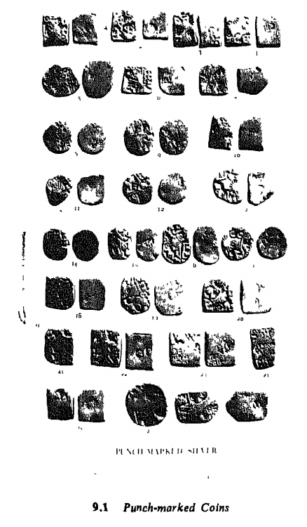
- Trade and commerce flourished, leading to the rise of Vaishyas (merchant class), who were eager to improve their social status. - The Vaishyas supported Jainism and Buddhism because: - Both religions initially rejected the varna system, allowing Vaishyas greater participation. - They promoted non-violence, which reduced wars and benefited trade. - Brahmanical law-books (Dharmasutras) condemned moneylending, making Vaishyas, who relied on lending for trade, seek alternative religious affiliations. - Reaction Against Private Property and Materialism - A section of society opposed the growing wealth and materialism in urban areas. They resented: - The accumulation of wealth, including coins (silver, copper, gold). - The adoption of new lifestyles, clothing, and luxuries. - The rise of social inequalities due to economic changes. - This reaction led many to seek a return to a simple, ascetic lifestyle, inspiring the ideals of Jainism and Buddhism, which emphasized: - Renunciation of material wealth. - Non-violence and simplicity. - Monastic life, where monks forwent luxuries and accepted only minimal offerings for survival. - This reaction against materialism in the sixth century B.C. mirrors the opposition to industrialization in modern times, where people long for a return to a simpler way of life. - Thus, the rise of Jainism and Buddhism was driven by social tensions, economic transformations, the spread of agriculture, and growing trade. - These factors collectively led to a rejection of Brahmanical dominance and ritual sacrifices, giving birth to two of India's most influential religions. - Vardhamana Mahavira and Jainism - Origin & Founder - Jainism originated around 6th century BCE as part of the Shramana tradition. - The Shramana tradition encompassed various ascetic and renunciant movements that arose in the 1st millennium BCE, advocating for spiritual liberation through self-discipline, meditation, and ethical conduct, as opposed to the Vedic religion's emphasis on rituals and sacrifices. - Founded by Rishabhanatha (first Tirthankara) and later propagated by Vardhamana Mahavira (24th Tirthankara). - A Tirthankara is a spiritual teacher in Jainism who has attained liberation (moksha) and helps others cross the cycle of birth and death (samsara). - The word Tirthankara means "ford-maker," symbolizing their role in creating a path for others to achieve enlightenment. - In Jainism, there are traditionally 24 Tirthankaras in each half of a cosmic time cycle, who serve as spiritual teachers and guides. - Mahavira is the 24th and last Tirthankara of the current cycle known as Avasarpiṇī. This means there is no Tirthankara after Mahavira in this particular time cycle. - All the names for Mahavira - Vardhamana - Original name - Mahavira - Means great hero - Jina - Means the conqueror of senses and desires - Tirthankara - Means ford-maker - Nigantha Nataputta - Name used in buddhist texts - Bhagavan - Usually means God - Arhat/Arihant - Means worthy-one - Life of Mahavira - Vardhamana Mahavira, the 24th Tirthankara of Jainism, was born in 599 B.C. (some traditions suggest 540 BCE) in Kundagrama, near Vaishali (modern Bihar). - He belonged to a prominent Kshatriya Jnatrika clan, his father was the clan's head, and his mother was a Lichchhavi princess, connecting him to the royal family of Magadha. - Father: - Siddhartha, who was the head of the Jnatrika clan. - Mother: - Trishala, a Lichchhavi Princess. - There are differing beliefs regarding Mahavira's marital status: - Śvetāmbara Tradition: - According to this tradition, Mahavira married a princess named Yashoda and had a daughter named Priyadarśanā (also known as Anojjā or Anojjā Kumari). His daughter, Priyadarshana, later married to Jamali. - Digambara Tradition: - This tradition holds that Mahavira refused to marry Yashoda and remained celibate. - These high-status connections helped him gain access to princes and nobles during his religious mission. - Renunciation and Ascetic Life - Initially, Mahavira lived the life of a householder, but at the age of 30, he renounced (formally give up or reject something) the world in search of truth and became an ascetic (person who practices severe self-discipline and abstains from worldly pleasures). For the next 12 years, he wandered from place to place, staying no more than a day in a village and five days in a town. - He is said to have never changed his clothes during this period and eventually abandoned them altogether, embracing extreme austerity (strict and simple way of living). - Attainment of Kevalya and Teachings - At the age of 42, Mahavira attained Kevalya (perfect knowledge), overcoming misery and achieving enlightenment. This spiritual victory earned him the title Mahavira (the great hero) and Jina (the conqueror), leading his followers to be called Jains. - For the next 30 years, Mahavira traveled extensively, spreading his teachings across Kosala, Magadha, Mithila, Champa, and other regions. - Death - Mahavira passed away in 527 B.C. at the age of 72 in Pavapuri, near modern-day Rajgir. - Mnemonic for Maharvira - Sid Jaat Tried Lichi for Priyadarsana 30 times, got success at 42 and finally met 72 hoors - Sid -> Siddhartha - Jaat -> Jnatrika - Tried -> Trishala - Lichi -> Lichachhavi - for -> _x - Priyadarsana -> Priyadarsana - 30 times got -> Age of renounciation - success at 42 -> Age of attainment of Kevalya - finally 72 hoors -> Death - Doctrines of Jainism - Jainism is based on five fundamental doctrines: 1. Ahimsa (Non-violence) - Do not commit violence. 2. Satya (Truthfulness) - Do not speak a lie. 3. Asteya (Non-stealing) - Do not steal. 4. Aparigraha (Non-possession) - Do not acquire property. 5. Brahmacharya (Celibacy/Continence) - Observe self-restraint. - It is believed that the first four doctrines were inherited from earlier teachers, while Mahavira introduced the fifth one, Brahmacharya. - Mnemonic to remember: - Aeh! Satmola Ahista Apad Brahmchod - Aeh! -> Ahimsa - Satmola -> Satya - Apad -> Aparigraha - Brahmachod -> Brahmacharya - The Three Jewels (Triratna) of Jainism - Jainism's ultimate goal is freedom from worldly bonds (moksha), which does not require rituals. Instead, liberation can be achieved through: 1. Right Knowledge 2. Right Action 3. Right Faith - These three principles are collectively known as the Three Gems (Triratna) of Jainism. - Mnemonic to remember: - KFC - K -> Right knowledge - F -> Right faith - C -> Right conduct/action - Sects in Jainism - Mahavira advocated extreme asceticism, which led to a division in Jainism over time. - His predecessor, Parsva/Parshvanatha (23'th Tirthankara), allowed followers to wear upper and lower garments, whereas Mahavira insisted on complete renunciation of clothing. This difference later led to the formation of two sects: - Svetambaras - Those who wear white clothes. - Digambaras - Those who remain naked. - Jainism's Beliefs on Gods and the Varna System - Jain philosophy holds that the world is eternal and self-sustaining, meaning it is neither created nor maintained by any supreme being (God). Instead, it operates by its own cosmic laws and is governed by six eternal substances (Dravyas), including Jiva (soul) and Ajiva (non-living matter). - Jainism acknowledged the existence of gods but regarded them as inferior to the Jina (spiritually liberated beings). - Jainism recognizes the existence of various gods, often sharing them with Hinduism. However, these gods are not considered supreme beings or creators of the universe. Instead, they are seen as living beings in higher realms, still subject to karma and reincarnation, and are not on the same level of spiritual achievement as the Jinas. - Unlike Buddhism, Jainism did not reject the varna system. - Mahavira believed that a person's birth in a high or low varna was determined by past karma—one's sins or virtues from a previous life. - However, he emphasized that even a Chandala (outcaste) could attain liberation through a pure and meritorious life. - Other points - The surest way of annihilating Karma is to practise penance. - Every object, even the smallest particle, has a soul. - Karma is the bane (a cause of great distress, harm, or ruin) of the soul and must be ended. - Spread of Jainism - Mahavira actively worked to spread Jainism by organizing an order of followers, which included both men and women. - However, Jainism did not attract a large following initially, with only 14,000 adherents, as it did not significantly differentiate itself from the Brahmanical tradition. - Despite this, Jainism gradually expanded into southern and western India. - Jainism in South India - A late tradition attributes the spread of Jainism in Karnataka to Chandragupta Maurya (322-298 B.C.), who is said to have abdicated his throne, embraced Jainism, and spent his last years as a Jaina ascetic in Karnataka. However, there is no concrete historical evidence to support this claim. - Another major reason for the expansion of Jainism in the south was the great famine that struck Magadha 200 years after Mahavira's death. - The famine lasted 12 years, forcing many Jains to migrate southward under Bhadrabahu (prominent Jain monk). - Others remained in Magadha under Sthulabhadra (a jain monk and scholar, known for being the chief disciple of Bhadrabahu). - Sthula means big or strong in Sanskrit and Bhadra means auspicious or noble. - Upon their return, differences arose between the two groups. - The southern Jains (Bhadrabahu's followers) claimed they had strictly followed religious rules, while they accused the Magadhan Jains of becoming lax. - To resolve these differences, a Jain council was held at Pataliputra (modern Patna), but the southern Jains (Digambaras) boycotted it and refused to accept its decisions. - This led to a split in Jainism: - Digambaras (southern followers, who practiced complete renunciation). - Svetambaras (Magadhan followers, who wore white robes ( garments, often long and flowing)). - Epigraphic evidence for Jainism in Karnataka dates to the third century A.D.. From the sixth century onward, numerous Jaina monastic establishments (Basadis) were built in Karnataka, receiving land grants from local rulers. - Jainism in Other Regions - Kalinga (Orissa): - Jainism spread to Kalinga in the fourth century B.C. and gained state patronage under King Kharavela (first century B.C.), who defeated the rulers of Andhra and Magadha. - Tamil Nadu: - By the second and first centuries B.C., Jainism had reached southern Tamil Nadu. - Western and Central India: - Over time, Jainism spread to Malwa, Gujarat, and Rajasthan, where it still has a strong presence today, particularly among traders and merchants. - Unlike Buddhism, which eventually declined in India, Jainism maintained its influence in these regions despite not receiving as much royal patronage. - Contribution of Jainism - Opposition to Varna System & Vedic Rituals - Jainism made one of the earliest efforts to challenge the rigid Varna system and ritualistic Vedic practices. - Unlike Brahmanism, which used Sanskrit, Jain monks adopted Prakrit, the language of the common people, to spread their teachings. - Development of Literature & Language - Jain religious texts were written in Ardhamagadhi and were compiled in the sixth century A.D. at Valabhi (Gujarat), a renowned center of learning. - Jainism played a crucial role in the development of regional languages: - Prakrit dialects contributed to the evolution of languages like Sauraseni, which later gave rise to Marathi. - The earliest significant works in Apabhramsa (a later form of Prakrit) were composed by Jain scholars. - Jain scholars even developed the first grammar of Apabhramsa. - Jain literature includes: - Epics - Puranas - Novels - Dramas - A vast portion of Jain manuscripts remains unpublished and is preserved in temples of Gujarat and Rajasthan. - Use of Sanskrit & Kannada - While Jain literature initially flourished in Prakrit and Apabhramsa, in early medieval times, Jain scholars extensively wrote in Sanskrit as well. - Jainism also significantly contributed to the growth of Kannada literature, producing numerous texts in this language. - Gautama Buddha and Buddhism - Life of Buddha - Birth and Early Life - Gautama Buddha, also known as Siddhartha, was a contemporary of Mahavira. - He was born in 563 B.C. in a Sakya Kshatriya family (hence called Shakyamuni) at Lumbini, located in the foothills of Nepal. - Familty - Father : - Suddhodana (Chief of republican clan Kapilavastu) - Mother : - Mahamaya (Died after childbirth, raised by Prajapati Gautami). His mother belonged to the Kosalan dynasty. - Wife : - Yashodhara - Son : - Rahul - Like Mahavira, Gautama came from a noble family and inherited republican values. - All the names of the Buddha - Siddhartha Gautama - Real full name - Buddha - Means the enlightened one - Tathagata - Tatha + Gata (Thus Gone) & Tatha + Agata (Thus Come) - Means the one who has gone beyond the cycle of birth and death - Bhagavan - Blessed one - Sugata - Well gone - Jina - Conqueror of desires, this is common for Mahavira and Buddha - Lokanatha - Lord of the world - Dharmraja - King of dharma - Renunciation and Enlightenment - From childhood, Gautama displayed a meditative nature. - Though married early, he found no interest in married life. - Disturbed by human suffering, he sought a solution to life's miseries. - At 29 years of age, he renounced his home, just as Mahavira had done. - He wandered for six years in search of truth. - At 35, he attained enlightenment under a pipal tree at Bodh Gaya. - From then on, he was known as the Buddha, or the Enlightened One. - Teachings and Missionary Work - First Sermon delivered at Sarnath (Deer Park) - “Dharmachakra Pravartana” (Banaras). - Dharmachakra Pravartana (धर्मचक्र प्रवर्तन) is a Sanskrit phrase that translates to "Turning the Wheel of Dharma". It refers to the first sermon delivered by Gautama Buddha after his enlightenment - Undertook long journeys, spreading his teachings far and wide. - His strong physique enabled him to walk 20 to 30 km per day. - He preached and meditated continuously for 40 years, resting only during the rainy season. - He debated with and defeated Brahmanical scholars and followers of rival sects. - His teachings were universal, without discrimination based on wealth, caste, or gender. - Death (Mahaparinirvana) - Gautama Buddha passed away at 80 years of age in 483 B.C.. - His death took place at Kusinagar, identified with Kasta village in Deoria district, eastern Uttar Pradesh. - Mnemonic - Sakya Sudh Kapil-vastu (object) Me Gautami, Yashodhara or Rahul ke lie 29 ya 35 ka dudh ka packet la or Sarnath Dharmachakra ko Kusinagar-80 bhej - Sakya -> Sakya khstriya family - Sudh -> Suddhodana (father) - Kapil-vastu -> Kapilvastu (father clan) - Me -> Mahamaya (real mother) - Gautami -> Gautami (adoptive mother) - Yashodhara -> Yashodhara (wife) - Rahul -> Rahul (son) - ke lie -> _x - 29 ya -> 29 years, age of renunciation - 35 -> 35 years, age of enlightenment - ka.. ..la or -> _x - Sarnath -> Sarnath (first sermon location) - Dharachakra ko -> Dharmachakra Parivartana (name of first sermon) - Kusinagar -> Kusinagar (death place) - 80 bhej -> Attaining Mahaparnirvana - Doctrines of Buddhism - Practical Approach and Core Philosophy - Gautama Buddha was a practical reformer who focused on real-world problems rather than engaging in debates about the soul (atman) and Brahman, which were central to contemporary philosophical discussions. - He emphasized that the world is full of sorrow and that human suffering arises from desires. - The key to attaining Nirvana (liberation, a state of bliss and rest) is to conquer desires, which leads to freedom from the cycle of birth and death. - Core Teachings of Buddhism - The Four Noble Truths (Chatur Arya Satya) - 1. Dukkha : - Life is full of suffering - The term dukkha is often translated as "suffering", but it encompasses a broader range of experiences like unease, frustration, disappointment, or the feeling that "something is always a little off", according to Tricycle: The Buddhist Review. Even in moments of joy or pleasure, there is an underlying current of dissatisfaction because of the impermanent nature of these experiences. - The Three Forms of Dukkh - a. Dukkha-dukkha (Suffering of Suffering): - This refers to the obvious physical and mental suffering we readily recognize, such as pain from sickness, old age, death, loss, grief, fear, or despair. - b. Viparinama-dukkha (Suffering of Change): - This type of suffering arises from the impermanence of all phenomena. Even pleasant experiences are transient, and attachment to them inevitably leads to disappointment when they end. - c. Sankhara-dukkha (Suffering of Conditioned Existence): - This is the most subtle and pervasive form of dukkha. It reflects the fundamental unsatisfactoriness inherent in all conditioned phenomena (things that are compounded, impermanent, and dependent on other things). This relates to the concept of anicca (impermanence) and anatta (non-self) which are fundamental to Buddhist teachings. - 2. Samudaya : - Desire (Tanha) is the root cause of suffering, stemming from desires and attachments. - 3. Nirodha : - Suffering can be ended through the cessation of craving and attachment, leading to the state of Nirvana. - 4. Magga : - The path to the cessation of suffering is the Eightfold Path, a practical guide to ethical conduct, mental discipline, and wisdom. - The Eightfold Path (Astangika Marga) - Purpose - To eliminate human suffering (Dukkha). - Provides a practical path for self-realization and liberation. - Recorded in Buddhist texts around the 3rd century B.C. - Does not depend on priests, rituals, or metaphysical speculations. - Represents the "Middle Path" (Madhyamaka Marga), avoiding extremes of luxury and self-mortification. - Components of the Eightfold Path - 1. Right View (Samma Ditthi) - Understanding the Four Noble Truths correctly. - Realization that worldly existence is transient (Anitya), suffering (Dukkha), and devoid of permanent self (Anatta). - Example: - Recognizing that wealth or power cannot provide lasting happiness. - 2. Right Intention (Samma Sankappa) - Cultivating thoughts free from ill-will, hatred, and harmful desires. - Developing intention of renunciation, goodwill, and harmlessness. - Example: - Choosing compassion over revenge when wronged. - 3. Right Speech (Samma Vaca) - Avoiding lies, gossip, harsh words, and divisive talk. - Encouraging truthful, gentle, and harmonious communication. - Example: - Advising a friend with kindness rather than criticism. - 4. Right Action (Samma Kammanta) - Ethical conduct in daily life. - Abstaining from killing, stealing, and sexual misconduct. - Example: - Earning honestly instead of cheating or exploiting others. - 5. Right Livelihood (Samma Ajiva) - Choosing a profession that does not harm others. - Avoiding trades such as slavery, weapons, intoxicants, or animal slaughter. - Example: - A farmer producing food vs. a trader in arms. - 6. Right Effort (Samma Vayama) - Continuous effort to eliminate evil thoughts and cultivate wholesome ones. - Fourfold effort: - Preventing unwholesome states. - Overcoming unwholesome states. - Developing wholesome states. - Maintaining wholesome states. - Example: - Persistently practicing kindness to replace anger. - 7. Right Mindfulness (Samma Sati) - Constant awareness of body, feelings, mind, and phenomena. - Developing self-observation without attachment. - Example: - Mindful breathing to control anxiety. - 8. Right Concentration (Samma Samadhi) - Practicing deep meditation (Dhyana) leading to tranquility and insight. - Attaining mental focus necessary for Nirvana. - Example: - Entering higher states of consciousness through meditation. - Significance - Practical code of conduct applicable to all individuals. - Promotes ethical life, mental discipline, and wisdom. - Empowers individuals to seek liberation without priestly mediation. - Emphasizes balance: neither indulgence in luxury nor extreme asceticism. - Notes - Closely linked with the Four Noble Truths. - Foundation of Buddhist philosophy and practice. - Inspires later developments in meditation traditions (Zen, Vipassana, etc.). - Mnemonic for eight fold path - View Intended Speech Action Live Effort Minding Concentration - View -> Right View - Intended -> Right Intention - Speech -> Right Speech - Action -> Right Action - Live -> Right Live - Effort -> Right Effort - Minding -> Right Mindfulness - Concentration -> Right Concentration - VISA LESS - V -> Right View - I -> Right Intention - S -> Right Speech - A -> Right Action - L -> Right Livelihood - E -> Right Effort - S -> Sati = Right Mindfullness - S -> Samadhi = Right Concentration - Mnemonic for 4 noble truths - Dukhi Samudaye ka Nirodh Magha - Dukhi -> Dukkha - Samudaye -> Samudaya - ka -> _x - Nirodh -> Nirodh - Magha -> Magga -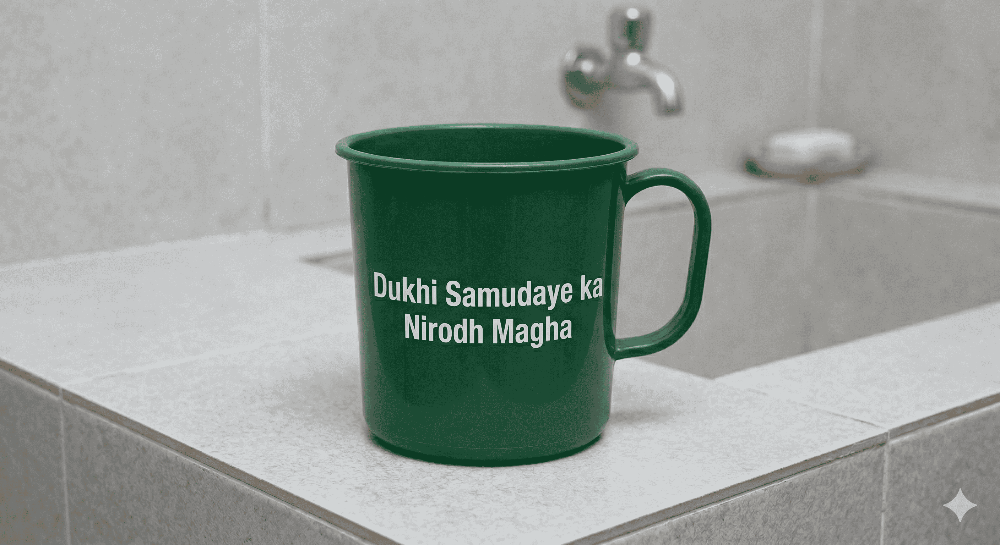
- The Three Jewels of Buddhism (Triratna): - 1. Buddha (The Enlightened One) - 2. Dhamma (The Teachings) - 3. Sangha (The Religious Order) - Mnemonic for Triratna - BDSm - B -> Buddha - D -> Dhamma - S -> Sangha - m -> _x - The Three Marks of Existence (Tri-Lakshana) - 1. Anicca ((Impermanence)): - Anicca refers to the Buddhist doctrine that all conditioned phenomena are transient, evanescent, and inconstant. This means everything, whether physical or mental, is in a state of flux – constantly arising, changing, and dissolving. - 2. Dukkha (Suffering or Unsatisfactoriness): - Dukkha is often translated as suffering, pain, or misery, but in a broader sense, it encompasses unsatisfactoriness, stress, unease, discomfort, frustration, and the inherent unsatisfying nature of conditioned existence. It signifies that life in its ordinary, unexamined state is not truly fulfilling or complete. - 3. Anatta (No permanent self / No permanent soul) : - Anatta (or Anātman in Sanskrit) is the doctrine that there is no unchanging, permanent self or essence (soul) that can be found in any phenomenon, including living beings. Instead, the individual is seen as a collection of five constantly changing aggregates (khandhas) – form, feeling, perception, mental formations, and consciousness. - Mnemonic for Tri-Lakshana - Any Dukh Anna? - Any -> Anicca - Dukh -> Dukkha - Anna -> Anatta - Code of Conduct, the five precepts (Panchasheel) - 1. Do not commit violence. - 2. Do not covet (strongly desire something, especially something that belongs to someone else) the property of others. - 3. Do not speak a lie. - 4. Do not indulge in corrupt practices. - 5. Do not use intoxicants. - These principles form a universal ethical code, found in many religious and philosophical traditions. - Special Features of Buddhism and Causes of Its Spread - Revolutionary Aspects of Buddhism - Rejection of God and Soul (Atman): - Buddhism did not recognize the existence of God or the soul (atman), which marked a radical departure in Indian religious history. - Appeal to Common People: - Unlike Brahmanism, early Buddhism avoided complex philosophical discussions, making it accessible to ordinary people. - It attracted lower social orders by criticizing the varna system and offering equal opportunities for spiritual pursuit. - Women were also admitted into the Sangha, bringing them on par with men. - While initially hesitant, the Buddha eventually allowed women to be ordained into the monastic order, forming the Bhikkhuni Sangha (Order of Nuns). This was a groundbreaking decision for the time, as women in many societies were often relegated to domestic roles or considered spiritually inferior. - According to Buddhist scriptures, particularly in the Vinaya Pitaka, it is recorded that he said that if women had not been allowed into the Sangha, the Dharma would have lasted for a thousand years. But with their inclusion, it would only last for five hundred years. - He is also said to have used analogies to explain his concern, such as comparing a family with many women and few men to one that is easily violated by robbers, or a field of rice or sugarcane infested by disease that will not last long. - Some modern scholars question the authenticity of this particular dialogue and the Garudhammas themselves, arguing that they may have been later additions to the scriptures reflecting the biases of the monks who compiled them. - However, the establishment of the Bhikkhuni Sangha came with certain regulations, known as the Eight Garudhammas (heavy rules), which placed nuns in a subordinate position to monks, regardless of seniority. - Liberal and Democratic Nature: - Compared to Brahmanism, Buddhism was more inclusive, accepting people regardless of caste or gender. - Spread of Buddhism in Non-Vedic Regions - Buddhism found fertile ground for conversion in regions outside Vedic influence, particularly in Magadha. - The people of Magadha readily accepted Buddhism because they were looked down upon by orthodox Brahmanas. - Magadha was considered outside Aryavarta (the holy land of Aryas), making its people more open to non-Vedic traditions. - Even today, north Bihar communities prefer not to be cremated south of the Ganga in Magadha, reflecting this ancient tradition. - Buddha's Personality and Preaching Method - Tackling Evil with Goodness: - Buddha promoted non-violence, compassion, and love as responses to hatred and evil. - Calm and Poised Nature: - He remained unprovoked by slander or abuse and tackled his opponents with wit and wisdom. - Example: - When an ignorant person abused him, Buddha listened silently and then asked (anecdote from Akkosa Sutta): - “My son, if a person does not accept a present, what happens to it?” - The person replied, “It remains with the one who offered it.” - Buddha responded, “My son, I do not accept your abuse.” - Use of Pali Language and Organized Religious Order - Use of Pali, the common spoken language, helped spread Buddhist teachings widely among the masses. - Buddha established the Sangha (religious order), which was open to all, irrespective of caste or gender. - Monks had to follow strict rules and regulations, including vows of continence, poverty, and faith. - Royal Patronage and Global Spread - Rapid Expansion During Buddha's Lifetime: - The kingdoms of Magadha, Kosala, and Kausambi, along with several republican states, adopted Buddhism. - Ashoka's Role in the Expansion of Buddhism: - Around 200 years after Buddha's death, Maurya King Ashoka embraced Buddhism, making it a major turning point. - Through his missionaries, Ashoka spread Buddhism to Central Asia, West Asia, and Sri Lanka, transforming it into a world religion. - Buddhism's Continued Influence: - Even though Buddhism later declined in India, it remains strongly rooted in Sri Lanka, Burma, Tibet, China, Japan, and other parts of South, Southeast, and East Asia. - Sects of Buddhism - Hinayana (Lesser Vehicle/The School of the Elders) - Believes Buddha was a teacher, not a god. - Does not accept idol worship. - Follows original Pali texts (Theravada Buddhism). - Spread to Sri Lanka, Myanmar, Thailand, Cambodia, Laos. - Theravada is the only surviving branch of the Hinayana group. - Mahayana (The Greater Vehicle) - Believes Buddha was divine. - Encourages idol worship. - Emphasizes Bodhisattvas (future Buddhas) like Avalokiteshvara, Manjushri. - Spread to China, Japan, Korea, Vietnam. - Vajrayana (Diamond Vehicle/The Thunderbolt Vehicle) - Tantric Buddhism (Mystical Practices, Mantras, Mandalas, Rituals). - Dalai Lama (Tibetan Buddhism) follows Vajrayana. - Spread to Tibet, Mongolia, Bhutan. - Important Buddhist Literature -| Buddhist Text | Description | Tradition & Language |
|---|---|---|
| Tripitaka (Three Baskets) | Earliest Buddhist scriptures | Hinayana, Pali |
| Sutta Pitaka | Teachings of Buddha | Hinayana, Pali |
| Vinaya Pitaka | Monastic rules for monks and nuns | Hinayana, Pali |
| Abhidhamma Pitaka | Philosophical analysis | Hinayana, Pali |
| Jataka Tales | Stories of Buddha's previous births | Hinayana, Pali |
| Lalitavistara | Biography of Buddha | Mahayana, Sanskrit |
| Mahavastu | Mixed Buddhist teachings | Mahayana, Sanskrit |
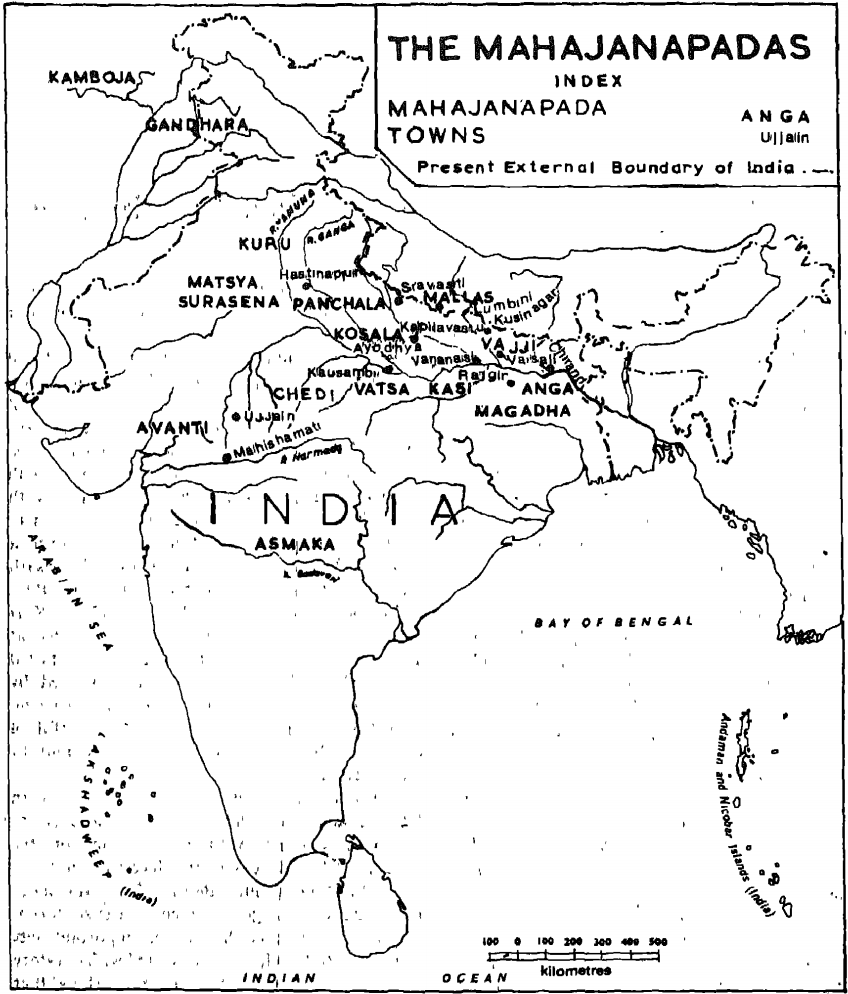
- - 16 Mahajanpadas table -| Mahajanapada | Capital | Government Type | Location (Modern Region) | Important Rulers | Historical Significance |
|---|---|---|---|---|---|
| Anga | Champa | Monarchy | Bihar | Karna (Mahabharata) | Eventually annexed by Magadha |
| Magadha | Rajagriha (later Pataliputra) | Monarchy | Bihar | Bimbisara, Ajatashatru | Strongest Mahajanapada; later became Mauryan Empire's core |
| Vajji | Vaishali | Republic | Bihar | - | Confederation of eight clans, including Lichchhavis; Gautama Buddha visited here |
| Malla | Kusinara, Pava | Republic | Uttar Pradesh | - | Gautama Buddha attained Mahaparinirvana at Kusinara |
| Kasi | Varanasi | Monarchy | Uttar Pradesh | - | Initially powerful but later subdued by Kosala |
| Kosala | Shravasti | Monarchy | Uttar Pradesh | Prasenajit | Associated with Gautama Buddha; included Ayodhya |
| Vatsa | Kausambi | Monarchy | Uttar Pradesh | Udayana | Flourishing trade center, linked to Magadha |
| Chedi | Shuktimati | Monarchy | Madhya Pradesh | Shishupala (Mahabharata) | Connected to Mahabharata legends |
| Kuru | Indraprastha | Monarchy | Delhi, Haryana | Duryodhana (Mahabharata) | Declined in political importance after Vedic period |
| Panchala | Ahichhatra, Kampilya | Monarchy | Uttar Pradesh | Drupada (Mahabharata) | Home of Draupadi; later absorbed by Magadha |
| Matsya | Viratanagara | Monarchy | Rajasthan | Virata (Mahabharata) | Place where Pandavas lived during exile |
| Surasena | Mathura | Monarchy | Uttar Pradesh | Kamsa | Important for Krishna legends |
| Assaka | Potali (Paithan) | Monarchy | Maharashtra | - | Only Mahajanapada in southern India |
| Avanti | Ujjain (North), Mahishmati (South) | Monarchy | Madhya Pradesh | Chand Pradyota Mahasena | Major center of Buddhism and trade |
| Gandhara | Taxila | Monarchy | Pakistan, Afghanistan | Pushkarasarin | Famous for Gandhara art and Taxila University |
| Kamboja | Pooncha (Rajouri) | Republic | Kashmir | - | Known for its warriors and horses |
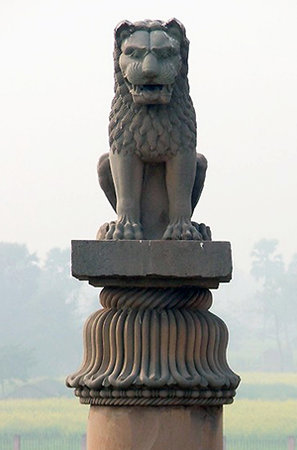
- Administrative and Linguistic Influence - Iranian influence is evident in the preamble of Ashoka's edicts and the use of certain words. - Example: - The Iranian term “dipi” (meaning inscription) was replaced by “lipi” in Ashokan inscriptions. - Indirect Influence: Greek Interest in India - Through the Iranians, the Greeks became aware of India's vast wealth. - This knowledge aroused Greek interest, eventually leading to Alexander's invasion of India. - Alexander's Invasion of India - Background: Greek-Iranian Conflict - In the fourth century B.C., the Greeks and Iranians fought for world supremacy. - Under Alexander of Macedonia, the Greeks defeated the Iranians, conquering Asia Minor, Iraq, and Iran. - Defeating the Persian Empire (the biggest power of that time) is one of the main reasons why Alexander the Great is praised so much - Achaemenid Persian Empire was one of the largest and most powerful empires of the ancient world. A relatively small kingdom (Macedonia) defeated a superpower. - He died as an undefeated ruler -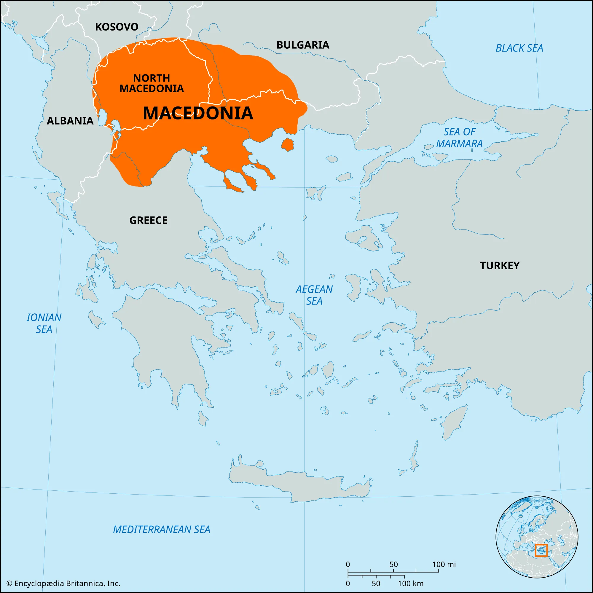
- - From Iran, Alexander marched to India, attracted by its great wealth. - Greek historians like Herodotus described India as a fabulous land, further tempting Alexander. - His invasion was also driven by: - Geographical curiosity, as he believed the eastern side of India was connected to the Caspian Sea. - Aspirations to surpass mythical conquerors. - Political Condition of North-West India - The region was divided into independent monarchies and tribal republics. - These rulers were deeply connected to their land but failed to unite against a common enemy. - Two prominent rulers: - Ambhi (Prince of Taxila) - submitted to Alexander. - Ambhi of Taxila readily surrendered, providing troops and treasure. - Porus (Kingdom between Jhelum & Chenab) - resisted him. - Porus resisted at the Battle of Jhelum - though defeated, his bravery impressed Alexander, who restored his kingdom and made him an ally. - The Khyber Pass remained unguarded, making invasion easier. - Alexander's Campaign in India (326-325 B.C.) - After conquering Iran, Alexander moved to Kabul and then entered India through the Khyber Pass. Took five months to reach the Indus. - Advanced up to the Beas River, but could not proceed further. - Halt at the Beas River - Alexander wanted to march eastward, but his army refused due to: - War-weariness and homesickness after ten years of campaigning. - The hot Indian climate and disease outbreaks. - Fierce resistance from Indian forces along the Indus. - Reports of Magadha's Nanda dynasty, whose massive army greatly outnumbered Alexander's forces. - Despite repeated appeals, his soldiers refused to continue. - Alexander lamented: - “I am trying to rouse (To wake up or awaken someone) the hearts that are disloyal and crushed with craven (Completely lacking courage; cowardly) fears.” - Forced to retreat, his dream of an eastern empire remained unfulfilled. - Return and Aftermath - On his return, Alexander defeated several small republics along the way. - He stayed in India for 19 months (326-325 B.C.), mostly engaged in fighting. - He had little time to organize his conquests but made some administrative arrangements: - Most conquered states were restored to their rulers who accepted his authority. - His own territorial possessions were divided into three provinces, each under a Greek governor. - He founded several cities to maintain Greek influence. - Alexandria (Egypt) - The most famous city, founded in 331 BCE. - Became a major center of learning, trade, and culture. - Home to the Great Library of Alexandria and the Lighthouse of Alexandria (one of the Seven Wonders of the Ancient World). - Alexandria Arachosia (Afghanistan) - Modern-day Kandahar. - A key administrative and military base in the eastern part of Alexander's empire. - Alexandria Eschate ("The Furthest") (Tajikistan) - Located in present-day Khojand (Tajikistan). - Marked the easternmost expansion of Alexander's conquests. - Alexandria Bucephalous (Pakistan) - Founded in honor of Bucephalus, Alexander's beloved horse, after it died following the Battle of the Hydaspes (326 BCE). - Likely near modern Jhelum in Pakistan. - Alexandria on the Indus (Pakistan) - Founded near modern-day Uch, Pakistan. - Served as a key military and trade center on the Indus River. - Alexandria Margiana (Turkmenistan) - Modern Merv, Turkmenistan. - Built as a defensive settlement on the empire's northeastern frontier. - Alexandria in the Caucasus (Afghanistan) - Modern Begram, Afghanistan. - Became a major trade hub connecting Central Asia with India. - Effects of Alexander's Invasion - First Contact Between Ancient India and Europe - Alexander's invasion marked the first direct contact between ancient India and Europe. - His campaign was a triumphant success, adding an Indian province to his empire, larger than the territory conquered by Iran. - However, the Greek hold on India was short-lived, as the Mauryas soon took over. - Indo-Greek Interaction and Trade - The most significant result of Alexander's invasion was the direct Indo-Greek connection in multiple fields. - His campaign opened four major routes by land and sea, facilitating trade and movement of Greek merchants and craftsmen. - Greek Settlements in India - Even before Alexander's invasion, some Greeks lived in north-west India. - After the invasion, more Greek settlements were established, including: - Alexandria in the Kabul region - Boukephala on the Jhelum - Alexandria in Sindh - Although these areas later came under the Mauryas, Greek settlers continued to live under Chandragupta Maurya and Ashoka. - Geographical Contributions - Alexander was deeply interested in geography and explored the Indian Ocean at the mouth of the Indus. - He sent his friend Nearchus with a fleet to explore the coastline from the Indus to the Euphrates, searching for harbors. - His historians provided valuable geographical records, helping establish a chronology of Indian events. - Observations on Indian Society and Economy - Greek historians recorded important social and economic details, including: - The sati system, where widows self-immolated on their husband's pyre. - The sale of girls in marketplaces by poor parents. - The fine breed of oxen in north-west India, leading Alexander to send 200,000 oxen to Macedonia. - The flourishing carpentry industry, with carpenters specializing in chariots, boats, and ships. - Political Impact: Rise of the Maurya Empire - Alexander's invasion weakened the power of petty states in north-west India, creating a power vacuum. - This facilitated the expansion of the Maurya empire. - Chandragupta Maurya is believed to have observed Alexander's military tactics, which later helped him overthrow the Nanda dynasty and establish the Maurya empire. - State and Varna Society in the Age of the Buddha - Material Life in North India (c. 6th Century B.C.) - The material life of North India, particularly in eastern Uttar Pradesh and Bihar, can be reconstructed using Pali texts, Sanskrit Sutra literature, and archaeological evidence. - The sixth century B.C. marks the beginning of the Northern Black Polished Ware (NBP) phase, characterized by a glossy, fine-quality pottery used as tableware for the wealthy. - - This period also saw the introduction of iron implements for agriculture and crafts, the emergence of metallic money, and the use of burnt bricks and ring wells, which appeared in the mid-NBP phase (c. 3rd century B.C.). - Urbanization and Settlements - The NBP phase marked India's second urbanization, as the first urban phase (Harappan civilization) had disappeared by c. 1500 B.C., leaving a gap of about 1,000 years without towns. - By the 6th century B.C., new towns emerged in the middle Gangetic basin. - Many towns mentioned in Pali and Sanskrit texts, such as Kausambi, Sravasti, Ayodhya, Kapilavastu, Varanasi, Vaisali, Rajgir, Pataliputra, and Champa, have been excavated and show habitation signs from the NBP phase. - Wooden palisades in Patna, possibly from Maurya or pre-Maurya times, suggest fortifications in some towns. - Buildings were mostly made of mud-brick and wood, though Pali texts mention seven-storied palaces, which have not been found. - Excavated structures appear unimpressive, but the material remains indicate a significant population increase compared to the earlier Painted Grey Ware settlements. - Artisans, Merchants, and Guilds - Many towns began as seats of government but evolved into market centers inhabited by artisans and merchants. - Specialization in crafts developed due to guild systems and localization: - Saddalaputta at Vaisali had 500 potters' shops. - 18 artisan guilds are mentioned, with specific references to smiths, carpenters, leather workers, and painters. - Merchants lived in designated streets, such as “vessa” (merchants' streets) in Varanasi and ivory workers' streets. - Craftsmanship was hereditary, with sons learning their family trade. - Trade and Transport - Craft products, including fine textiles, ivory objects, and pottery, were transported over long distances. - Large-scale trade is indicated by frequent references to 500 cartloads of goods. - All major cities were located on riverbanks and trade routes, interconnected as follows: - Sravasti linked to Kausambi and Varanasi. - Traders traveled from Kosala and Magadha via Mathura to Taxila. - Routes extended from Mathura to Ujjain and the Gujarat coast. - Eastern routes went from Sravasti through Kapilavastu, Kusinara, Vaisali, and Patna to Rajgir and Champa (near modern Bhagalpur). - Currency and Economic Transactions - The terms “iskka” and “satamana” in Vedic texts likely refer to early coins, though actual coins date only from the 6th century B.C.. - Before coins, barter and cattle were common exchange mediums. - The earliest metallic coins, appearing in Gautama Buddha's time, were mostly silver, with some copper. - These were punch-marked coins, featuring symbols like hills, trees, fish, bulls, elephants, and crescents. - The first hoards of these coins have been found in eastern Uttar Pradesh and Magadha, with some early coins also found in Taxila. - The Pali texts show extensive monetary usage, with wages and prices being paid in coins, and even the price of a dead mouse being estimated in money. - Role of Writing - Writing likely began before Ashoka (3rd century B.C.). - The earliest records, possibly written on perishable materials, have not survived. - Writing facilitated: - Trade documentation and bookkeeping. - Tax collection and military administration. - Compilation of laws and rituals. - Development of measurement texts like Sulvasutras, aiding in land demarcation. - Rural Settlements and Agriculture - Though rural settlements from the NBP phase remain largely unexcavated, a strong rural base was essential for urbanization. - Cities relied on peasants' taxes, tributes, and agricultural produce. - Peasants purchased iron tools such as axes, adzes, knives, razors, nails, and sickles, found in early layers at Kausambi. - Pali texts mention three types of villages: - Typical villages, inhabited by various castes and communities, led by a bhojaka (village headman). - Craft villages, such as a carpenters' village near Varanasi, which served as market hubs. - Border villages, located at the edge of forests, mainly inhabited by fowlers and hunters. - Land was divided into family-allotted plots, cultivated with family labor and hired agricultural workers. - Fields were fenced, and irrigation channels were dug collectively under the supervision of the village headman. - Peasants paid one-sixth of their produce as tax, collected directly by royal agents, with no intermediate landlords. - Some villages were granted to Brahmanas and merchants. - Large plots were worked by slaves and agricultural laborers. - Wealthy peasants, called grāmakapatis, were similar to Vaishyas. - Crops and Agricultural Advancements - Rice was the staple (A basic or essential item) crop in eastern Uttar Pradesh and Bihar. - Various types of paddy (rice in its husk before processing) and paddy fields are described in Pali texts. - Large-scale paddy transplantation began in the age of Buddha, significantly increasing yields. - Other crops included barley, pulses, millet, cotton, and sugarcane. - Agricultural progress was driven by iron ploughshares and fertile alluvial soil between Allahabad and Rajmahal. - Technological Advancements and Resource Utilization - Iron played a key role in clearing forests and expanding cultivation. - Iron tools were hardened for greater durability. - Tools from Rajghat (Varanasi) indicate the use of iron ore from Singhbhum and Mayurbhanj. - Iron supplies boosted crafts and agriculture, supporting economic growth. - Economic Transformation - The economic landscape of this period contrasts sharply with earlier Vedic rural economies in western Uttar Pradesh and chalcolithic economies in Bihar and Uttar Pradesh. - A fully developed food-producing economy emerged in the middle Gangetic basin, supporting non-agricultural populations. - This economic surplus enabled long-term taxation, standing armies, and the rise of large territorial states. - Conclusion - The material culture of 6th century B.C. North India was marked by rapid urbanization, economic expansion, and technological progress. - The interplay between agriculture, trade, currency, and governance laid the foundation for the emergence of large kingdoms and a complex socio-economic structure. - This period saw the transformation of the middle Gangetic basin into a thriving center of urban life, commerce, and state formation. - Administrative System - Rise of Kosala and Magadha - During this period, many states existed, but only Kosala and Magadha emerged as powerful. - Both were ruled by hereditary monarchs belonging to the Kshatriya varna. - The Jatakas mention that oppressive kings and chief priests were sometimes expelled by the people, but such events were rare. - The king held the highest official status and enjoyed special protection of his person and property. - Only great religious leaders, like the Buddha, could challenge the king's authority. - The king was primarily a warlord, leading his kingdom to victory, as seen in the careers of Bimbisara and Ajatasatru. - Role of Officials - The king ruled with the help of various officials, both high and low. - Higher officials were called mahamatras and performed various functions, including: - Mantrin (minister) - Senanayaka (commander) - Judge - Chief accountant - Head of the royal harem - A separate class of officers called ayuktas may have performed similar functions in some states. - Administration and Ministers - The king's administration relied on capable ministers. - Varsakara of Magadha weakened the Lichchhavis of Vaisali, helping Ajatasatru conquer the republic. - Dirghacharayana of Kosala supported the king of Kosala. - Most high-ranking officials and ministers were recruited from the Brahmana class, but they were not from the king's own clan. - Revenue and Payment System - In Kosala and Magadha, despite the circulation of punch-marked silver coins, influential brahmanas and sethis were paid through village revenue grants. - Unlike in later Vedic times, the king did not need clan approval to grant revenue rights. - However, these grants only provided revenue—they did not include administrative authority. - Village Administration - The village headman managed rural administration. - Originally, headmen led tribal regiments and were called gramini (leader of a grama or tribal military unit). - As agriculture and plough cultivation became common, the gramini evolved into a village headman in pre-Mauryan times. - They were known by different titles: - Gramabhojaka - Gramini - Gramika - King Bimbisara is said to have summoned 86,000 gramikas, showing their importance and direct links to the king. - Duties of Village Headmen - The village headmen were responsible for: - Assessing and collecting taxes from villagers - Maintaining law and order in the locality - Sometimes, oppressive headmen were punished by the villagers. - Army and Taxation - Expansion of the Army - The real increase in state power is seen in the formation of a large professional army. - At the time of Alexander's invasion, the Nanda ruler of Magadha maintained: - 20,000 cavalry - 200,000 infantry - 2,000 horse-chariots - 4,000 elephants - Chariots were losing importance in both northeast and northwest India, where they had been introduced by the Aryans. - Rulers in northwest India had fewer elephants than the Magadhan kings but maintained a comparable number of horses. - The possession of numerous elephants gave Magadhan princes a military advantage. - State Revenue and Taxation - Maintaining a large, long-service army required significant state resources. - The Nandas were known for their enormous wealth, which likely helped sustain their army. - However, there is no clear record of how they raised taxes from the people. - Taxation System - A firm fiscal system was established, where: - Kshatriyas (warriors) and Brahmanas (priests) were exempt from taxation. - The tax burden fell on the peasants (mainly Vaishyas or Grihapatis). - The Bal system, which was originally a voluntary payment by tribesmen in Vedic times, became a compulsory tax under the king. - Balisadhakas (tax officers) were appointed to collect this tax. - The king collected one-sixth of the produce as tax from peasants. - Tax Collection and Payment - Taxes were assessed and collected by royal agents with the help of village headmen. - The advent of writing may have helped improve the tax system. - Payments were made in both cash and kind (refers to goods or services rather than money): - Punch-marked coins suggest tax payments in cash. - In northeastern India, payments were often made in paddy. - Peasants were also subjected to forced labor for royal projects. - The birth stories of the Buddha mention peasants fleeing their kingdom to escape excessive taxation. - Taxes on Artisans and Traders - Artisans had to work one day per month for the king. - Traders paid customs duties on the sale of their goods. - Tolls were collected by officers known as saulkika ( remember like Sulka(toll) + ika (Adhikari)) or sulkadhyaksha ((Sulka(toll)) + Adhyaksha(Supervisor)). - Decline of Popular Assemblies - The sabha and samiti were no longer summoned by kings, leading to the decline of popular assemblies in post-Vedic times. - These assemblies were originally tribal institutions, but as tribes dissolved into varna and caste groups, they lost their significance. - In small kingdoms, assemblies may have functioned effectively in the Vedic period. - However, in large states like Kosala and Magadha, holding big assemblies became impractical. - Reasons for their decline: - Difficulty in communication across large states. - Integration of non-Vedic people who did not fit into the old tribal system. - Rise of the Parishad and Republican Assemblies - Instead of large assemblies, a small council called Parishad, consisting exclusively of Brahmanas, emerged. - However, assemblies continued to flourish in smaller republican states like: - Sakyas - Lichchhavis - The Republican Experiment - Geographical Presence and Origins - The republican system of government existed primarily in: - The Indus basin - The Indus basin republics may have been remnants of Vedic tribes, though some may have evolved from earlier monarchies. - The foothills of the Himalayas in eastern Uttar Pradesh and Bihar - In Uttar Pradesh and Bihar, the republican system might have been influenced by old tribal ideals of equality, which did not grant much prominence to the raja. - Structure of Republican Governance - Real power in these republics lay with tribal oligarchies (Power is concentrated in the hands of a small group) rather than a single ruler. - Composition of the Ruling Class - In the republics of the Sakyas and Lichchhavis, the ruling class belonged to the same clan and varna. - In Vaisali, the Lichchhavis had 7707 rajas in the assembly, but brahmanas were not included. - In post-Maurya republics like the Malavas and Kshudrakas, both kshatriyas and brahmanas were granted citizenship, but slaves and hired laborers were excluded. - In one state on the Beas River in Punjab, membership was restricted to those who could supply at least one elephant to the state—making it a typical oligarchy in the Indus basin. - Administrative Machinery - The administrative system in the Sakya and Lichchhavi republics was simple and included: - Raja (Chief) - Uparaja (Vice-King) - Senapati (Commander) - Bhandagarika (Treasurer) - The Lichchhavis reportedly had seven courts to try the same case one after another, though this might be an exaggeration. - Unlike monarchies, certain states in the Buddha's time were ruled by leaders responsible to assemblies, rather than by hereditary kings. - Thus, while political power was not shared equally, the republican tradition in India dates back at least to the age of the Buddha. - Differences Between Republics and Monarchies - Revenue and Administration - In monarchies, the king alone claimed all revenue from the peasants. - In republics, every tribal oligarch (raja) had a share of the revenue. - Among the Lichchhavis, each of the 7707 rajas maintained his own storehouse and administration. - Military Organization - Monarchies maintained a regular standing army and did not allow any private military forces within their territory. - In republics, each raja had his own small army under his senapati, leading to competition among them. - Role of the Brahmanas - In monarchies, brahmanas held significant influence. - In republics, they were excluded from governance, and law-books did not recognize these states. - Governance Model - Monarchies functioned under a single ruler. - Republics operated through oligarchic assemblies rather than individual leadership. - Decline of the Republican Tradition - The republican tradition weakened after the Maurya period. - Even before the Mauryas, monarchies were stronger and more widespread. - Ancient thinkers saw kingship as the most common and stable form of government. - Buddhist Explanation of Kingship's Origin - The Digha Nikaya (an early Buddhist Pali text) describes the origins of kingship: - In the earliest times, humans lived harmoniously. - With the emergence of private property, conflicts arose over land and women. - To resolve disputes, people elected a chief responsible for law and order. - In exchange for protection, they offered him a portion of their paddy. - This elected chief became the king, marking the birth of kingship and the state. - Social Orders and Legislation - Origins of the Legal and Judicial System - The Indian legal and judicial system originated during this period. - Previously, society was governed by tribal law, which did not recognize class distinctions. - Over time, the tribal community became clearly divided into four varnas: - Brahmanas (priests and teachers) - Kshatriyas (rulers and warriors) - Vaisyas (peasants and taxpayers) - Sudras (laborers serving the other three classes) - The Dharmasutras formalized the duties of each varna, and both civil and criminal laws were based on varna divisions. - Discrimination Against the Sudras - The higher the varna, the purer it was considered, and the higher the moral conduct expected. - Sudras suffered severe social and legal discrimination: - Denied religious and legal rights - Excluded from upanayana (sacred thread ceremony) - Severely punished for crimes against higher varnas, while crimes against them were punished lightly - Shunned by higher varnas, their food was avoided, and intermarriage was prohibited - Denied high positions and expected to work as slaves, artisans, or agricultural laborers - Even Buddhism and Jainism did not significantly improve the status of the Sudras. - Though they were admitted into new religious orders, their overall social position remained low. - Gautama Buddha visited assemblies of brahmanas, kshatriyas, and grihapatis (householders), but there is no mention of an assembly of sudras. - Administration of Civil and Criminal Law - Royal agents administered law and imposed harsh punishments, including: - Scourging (to whip, punish, or cause great suffering) - Beheading - Tearing out the tongue - Criminal punishments often followed the principle of revenge (“tooth for tooth, eye for eye”). - Integration of Non-Vedic Tribes - Although brahmanical law-books framed laws based on varna hierarchy, they also accommodated the customs of non-Vedic tribal groups. - Many indigenous tribes were gradually absorbed into the brahmanical social order. - Some were assigned fictitious social origins, while others were allowed to follow their own customs. - Economic and Political Developments - The age of the Buddha was crucial in shaping Indian polity, economy, and society: - Agriculture flourished, particularly in eastern Uttar Pradesh and Bihar, due to the use of iron tools in alluvial areas. - Food production increased, allowing for tax collection from peasants. - Large states emerged, funded by regular taxes and tributes. - To maintain social order, the varna system was institutionalized, clearly defining the roles of each class: - Kshatriyas - rulers and warriors - Brahmanas - priests and teachers - Vaisyas - peasants and taxpayers - Sudras - laborers serving all three classes - The Age of the Mauryas - Chandragupta Maurya and the Foundation of the Maurya Dynasty - Origins and Rise to Power - Chandragupta Maurya founded the Maurya dynasty, but his origins remain debated: - Brahmanical tradition states he was born to Mura, a Sudra woman in the Nanda court. - Earlier Buddhist tradition identifies him as a Kshatriya from the Maurya clan in Gorakhpur, near the Nepalese Terai. - Taking advantage of the weakness and unpopularity of the Nanda dynasty, he overthrew them with the help of Chanakya (Kautilya) and established Mauryan rule. - Conquests and Expansion - Greek writer Justin claims Chandragupta overran the whole of India with an army of 600,000 soldiers—though this is uncertain. - He successfully defeated Seleucus I Nicator, the Greek viceroy ruling west of the Indus. - Following a peace treaty, Chandragupta: - Gained control over eastern Afghanistan, Baluchistan, and the Indus region. - Gave 500 war elephants to Seleucus in return. - Extent of the Mauryan Empire - Chandragupta built a vast empire covering: - Bihar, Orissa, Bengal - Western and north-western India - The Deccan - The Mauryan Empire excluded: - Kerala, Tamil Nadu, and parts of north-eastern India. - In the north-west, the Mauryas controlled territories beyond those held by the British Empire centuries later. - Imperial Organization Under Chandragupta Maurya - Sources of Information - The Mauryan administration was highly elaborate, as described by: - Megasthenes, a Greek ambassador sent by Seleucus to Chandragupta Maurya's court. - Lived in Pataliputra and wrote about its administration and that of the empire. - His original account is lost, but fragments appear in later Greek writings, compiled into a book. - Kautilya's Arthashastra, though compiled later, contains authentic information on Mauryan governance and economy. - Centralized Monarchy - Chandragupta Maurya was an autocrat, holding absolute power. - Arthashastra states that his happiness lay in the happiness of his subjects, though it is unclear how closely he followed this ideal. - Megasthenes mentions a royal council advising the king, but its role was not binding. High-ranking officers were chosen from among these councillors. - Provincial and Urban Administration - The empire was divided into provinces, each governed by a prince from the royal family. - Provinces were further subdivided into smaller administrative units. - Major Mauryan cities included Pataliputra, Kausambi, Ujjain, and Taxila. - Pataliputra's administration was handled by six committees of five members each, responsible for: - Sanitation - Care of foreigners - Birth and death registration - Regulation of weights and measures - Other civic functions - Central Government and Economic Control - The central government maintained two dozen departments, regulating social and economic activities, particularly near the capital. - The state controlled major economic activities to ensure financial stability: - New land was cultivated using peasants and Sudra laborers. - Taxes on peasants ranged from one-fourth to one-sixth of the produce. - Irrigation fees were collected from those using state-provided water. - Emergency crop production was imposed when necessary. - Tolls were levied on goods entering towns. - The state had monopolies on mining, liquor sales, and weapon manufacturing. - Mauryan Military Strength - The Mauryas maintained a vast military, as recorded by Pliny and Megasthenes: - 600,000 foot soldiers - 30,000 cavalry - 9,000 elephants - 8,000 chariots (mentioned in another source) - A possible navy - Military administration was managed by a board of 30 officers, divided into six committees (five members each), overseeing: - Infantry - Cavalry - Elephants - Chariots - Navy - Transport - The Mauryan military was nearly three times larger than the Nanda army, owing to a larger empire and greater resources. - Conclusion - Chandragupta established an efficient administrative system with a strong financial base. - The combination of a centralized monarchy, provincial governance, economic control, and military strength enabled the Mauryan Empire to flourish and expand. - Bindusara (c. 297-273 BCE) - Son of Chandragupta - Expanded the empire towards Deccan (South India). - Known as "Amitraghata" (Slayer of Enemies). - Maintained relations with Greek rulers like Antiochus I. - Asoka (273-232 B.C.) - Accession to the Throne - Chandragupta Maurya was succeeded by his son Bindusara, who maintained relations with Greek princes. - Asoka, Bindusara's son, is considered the greatest Mauryan ruler. - Buddhist tradition portrays him as cruel in his early years, claiming he killed 99 brothers to seize the throne. - However, this statement is legendary and lacks historical credibility. - His biography, written by Buddhist scholars, contains fictional elements and cannot be taken literally. - Asokan Edicts (official orders, proclamations, or decrees issued by an authority): A Historical Source - Nature and Distribution - Asoka was the first Indian king to communicate directly with the people through inscriptions. - His edicts were engraved on: - Rocks - Polished stone pillars (mounted with capitals) - Caves - Found across the Indian subcontinent, as well as in Kandahar, Afghanistan. - Composition and Language - Asoka issued 44 royal orders, each with multiple copies. - The inscriptions were written in different languages and scripts: - Prakrit language and Brahmi script (majority of the empire). - Kharosthi script (north-western region). - Aramaic and Greek (Kandahar region). - Significance - Placed along ancient highways, making them accessible to the public. - Provide valuable insights into: - Asoka's policies (both external and domestic). - His governance style and moral teachings. - The extent of his empire and its administration. - Impact of the Kalinga War - The Turning Point in Asoka's Rule - After ascending the throne, Asoka fought only one major war—the Kalinga War. - According to his 13th Major Rock Edict, the war resulted in: - 100,000 people killed - 150,000 taken as prisoners - Many more perished due to war-related suffering. - The war deeply affected Asoka, causing him grief (Deep sorrow, especially due to loss) and remorse (a deep feeling of regret or guilt for a wrong committed), particularly due to the suffering of Brahmin priests and Buddhist monks. - As a result, he abandoned physical conquest (bherighosha) and adopted a policy of cultural conquest (dhammaghosha). - Asoka's Own Words (13th Major Rock Edict) - In his edicts, Asoka expresses deep remorse over the war: - “On conquering Kalinga, the Beloved of the Gods felt remorse, for when an independent country is conquered, the slaughter, death, and deportation of the people is extremely grievous… The Beloved of the Gods considers victory by Dhamma to be the foremost victory.” - Shift to Dhamma and Foreign Policy - Asoka now focused on ideological expansion, urging: - Tribal peoples and frontier kingdoms to see him as a father and obey him with confidence. - His officials to propagate the principles of dhamma across the empire. - He no longer considered foreign conquests legitimate but instead sought to influence other regions ideologically. - His foreign policy involved: - Sending ambassadors of peace to Greek kingdoms in Western Asia and Greece. - Undertaking welfare measures for people and animals in foreign lands—a unique initiative for that era. - According to Buddhist tradition, sending Buddhist missionaries to Sri Lanka and Central Asia to spread dhamma. - Pragmatism (a philosophy or approach that emphasizes practicality, real-world results, and problem-solving over abstract theories or ideals) in Governance - Despite his transformation, Asoka was not an extreme pacifist (someone who believes in peace and opposes war or violence): - He retained Kalinga after its conquest and integrated it into the Maurya Empire. - There is no evidence that he disbanded the massive army inherited from Chandragupta Maurya. - While urging tribal people to follow dharma, he also threatened action against those who violated social order. - Administrative Reforms Under Dhamma - Within the empire, Asoka introduced officers called rajukas, who had the power to: - Reward people for good conduct. - Punish them if necessary to maintain order. - His policy of consolidation (the act of strengthening, uniting, or making something more stable and effective) through dhamma had practical success: - The Kandahar inscription suggests that hunters and fishermen abandoned their traditional killing practices, possibly adopting settled agricultural life. - Internal Policy and Buddhism - Asoka's Conversion to Buddhism - Asoka was converted to Buddhism after the Kalinga War. - According to tradition: - He became a monk and undertook pilgrimages (dharma yatras) to Buddhist shrines. - He made huge donations to the Buddhist community. - Buddhist Council and Missionary Work - A Buddhist council was held under the chairmanship of Asoka's brother. - Missionaries were sent to: - South India - Sri Lanka - Burma - Other countries to spread Buddhism - Rummindei Pillar Inscription of Asoka - The inscription is in Brahmi script and written in Prakrit language. - It marks the birthplace of Buddha (Lumbini) and states: - “When King Devanampriya Priyadarsin had been anointed ( to be chosen, blessed, or consecrated for a special role, often in a religious or ceremonial context) for twenty years, he came himself and worshiped (this spot), because the Buddha Sakyamuni was born here. (He) both caused to be made a stone bearing wall and caused a stone pillar to be set up (in order to show) that the Blessed One was born here. The village of Lumbini was exempted from bali (tribute), and bhaga (the royal share of the produce) was reduced to one-eighth.” - - Governance and Administration - Asoka followed the ideal of paternal kingship, repeatedly reminding his officials that he considered his subjects as his children. - His officials (rajukas and dharmamahamatras) were instructed to: - Propagate dhamma among various social groups, including women. - Administer justice fairly. - Ensure the welfare of the people as representatives of the king. - Social and Religious Policies - Rituals and Animal Protection: - He disapproved of rituals, especially those performed by women. - He forbade the killing of certain birds and animals. - He completely prohibited animal slaughter in the capital. - He interdicted (to prohibit, forbid, or restrict something, often by legal or authoritative order) excessive social revelries (lively and noisy celebrations, often involving drinking, dancing, and festivity). - Broad Religious Outlook: - Asoka's dharma was not sectarian (strong loyalty to a particular group, especially in religion or politics); it aimed at preserving the social order. - It emphasized: - Obedience to parents. - Respect for Brahmanas and Buddhist monks. - Compassion towards slaves and servants. - These values were common to both Buddhism and Brahmanism. - Asoka's Teachings and Social Order - Asoka emphasized living in harmony: - Compassion towards animals. - Proper behavior towards relatives. - Strengthening the family institution and social classes. - His teachings focused on moral and ethical living rather than religious conversion. - Unlike Buddhist teachings, he never spoke about nirvana—instead, he stated that good behavior would lead to heaven. - His policies aimed at tolerance and maintaining social order, rather than promoting a sectarian faith. - Asoka's Place in History - - Asoka's Achievements - Asoka is regarded as one of the greatest missionary (a person who is sent to spread religious beliefs, provide humanitarian aid, or promote a cause, usually in foreign lands) rulers in ancient history. - His zeal (great enthusiasm, passion, or dedication toward a cause, goal, or belief) and devotion helped him achieve significant success both domestically and internationally. - Contrary to the belief that his pacific policies weakened the Maurya Empire, his reign saw remarkable accomplishments. - Political and Cultural Unification - Asoka politically unified India, strengthening it further through: - One dharma (ethical code). - One language (Prakrit in most regions). - One script (Brahmi, widely used in inscriptions). - Despite favoring Brahmi, he respected and accommodated: - Other scripts like Kharosthi, Aramaic, and Greek. - Languages such as Greek, Prakrit, and Sanskrit. - Various religious sects, including non-Buddhist and even anti-Buddhist groups, to whom he also made donations. - His tolerant religious policy ensured no forced imposition of Buddhism on his subjects. - Missionary and Administrative Policies - Asoka was deeply committed to missionary activities. - He deputed officials to far-flung regions of his empire, which: - Strengthened administration. - Promoted cultural integration between the Gangetic heartland and distant provinces like: - Kalinga - Lower Deccan - Northern Bengal - Policy of Peace and Non-Aggression - Asoka is historically significant for his policy of peace, non-aggression, and cultural conquest. - Unlike his predecessors, he renounced military conquest after the Kalinga war. - His vision stood in stark contrast (difference between things or the act of comparing to highlight differences) to: - Kautilya's Arthashastra, which advocated continuous expansion. - The Magadhan rulers before him, who followed an aggressive military approach. - Asoka's ideals were unique, as no Indian king before him had pursued such a pacifist policy. - A similar example existed only in Egypt, where Akhenaten (14th century BCE) had adopted a pacific (Calm, peaceful, or avoiding conflict) policy. - However, Asoka was likely unaware of Akhenaten's precedent (an earlier event, decision, or action that serves as an example or guide for future situations). - Despite having ample resources and a large army, he never waged war again after Kalinga's conquest. - Limitations of Asoka's Policy - His policy did not leave a lasting impact on his viceroys and vassals. - After his retirement in 232 BCE, many of them declared independence in their regions. - Neighboring powers were not influenced by his peaceful approach. - Within 25 years of his departure, foreign forces invaded India's northwestern frontiers. - Other rulers included - Dasaratha Maurya (c. 232-224 BCE) - Grandson of Ashoka - The empire started weakening. - Samprati (c. 224-215 BCE) - Promoted Jainism - Little expansion or administration. - Salisuka (c. 215-202 BCE) - Weak ruler - Faced internal revolts. - Devavarman (c. 202-195 BCE) - Lost territories - The empire shrank further. - Satadhanvan (c. 195-187 BCE) - Short reign - Empire decline continued - Brihadratha (c. 187-185 BCE) - Last Mauryan ruler - Killed by Pushyamitra Shunga, a Brahmin general, who founded the Shunga Dynasty. - Significance of the Maurya Rule - State Control in the Mauryan Empire - The King's Authority and Dharma - The Brahmanical law-books emphasized that the king should govern according to the Dharmashastras and existing customs. - Kautilya's Arthashastra advised the king to uphold dharma when the varna-ashrama system weakened. - The king was regarded as dharmapravartaka (promulgator of social order). - Ashoka's inscriptions explicitly stated that royal orders were supreme over other laws, and he actively promoted dharma through officials. - Rise of Royal Absolutism - The assertion of absolute monarchy was a natural consequence of the military expansion by Magadhan rulers. - Kingdoms such as Anga, Vatsali, Kasi, Kosala, Avanti, and Kalinga were annexed into the Magadhan Empire, leading to greater centralized control over all aspects of life. - Military dominance eventually evolved into coercive state control over administration, economy, and society. - Vast Bureaucratic Machinery - The state maintained an extensive bureaucracy, unparalleled in earlier Indian history. - A sophisticated espionage system supported the administration: - Spies gathered intelligence on foreign threats and government officers. - Some spies also manipulated superstitions to extract money from the public. - Government Officials and Salaries - High-ranking functionaries, known as ti-shas, were primarily paid in cash. - Major officials and their salaries: - Minister (Mantri), High Priest (Purohita), Commander-in-Chief (Senapati), and Crown Prince (Yuvaraja) - Paid up to 48,000 panas. - Lower-ranked officers - Paid 60 panas, with some receiving as little as 10-20 panas. - This led to massive income disparity between high and low-level officials. - Economic Regulations - State Control and Administration - According to Kautilya's Arthashastra, the Mauryan state appointed 27 superintendents (adhyakshas) to regulate various economic activities, including: - Agriculture: - Providing irrigation facilities and regulating water supply. - Trade and Commerce: - Managing markets and ensuring fair transactions. - Weights and Measures: - Standardizing trade practices. - Crafts and Industries: - Overseeing weaving, spinning, and mining. - Megasthenes mentions that land measurement and water distribution were carefully regulated, similar to Egyptian practices. - Taxation System - The Mauryan period marked a significant development in taxation. Kautilya lists numerous taxes levied on: - Peasants, artisans, and traders - Land and produce - The administration prioritized tax assessment over storage. Key officials included: - Samaharta - Head of tax assessment. - Sanadhata - Chief custodian of the treasury and storehouses. - Epigraphic evidence suggests that taxes were collected in kind, with rural granaries serving as reserves for famine and drought relief. - Currency and Economy - The Mauryan economy relied on punch-marked silver coins bearing the symbols of: - Peacock - Hill and crescent (a curved, moon-like shape) - These coins were widely circulated, aiding in: - Tax collection and salary payments - Market transactions across the empire - Social and Labor Organization - Role of Slavery - A notable social development was the employment of slaves in agriculture. - Megasthenes claimed not to have seen slaves in India. - However, domestic slaves had existed since Vedic times. - The Mauryan state maintained large farms worked by: - Slaves (possibly including 150,000 war captives from Kalinga). - Hired laborers. - Despite this, ancient Indian society was not a slave society like Greece or Rome. Instead, shudras served as laborers, artisans, and domestic workers under the higher varnas. - Infrastructure and Transportation - Roads and Communication - The Mauryan administration maintained an extensive road network that enabled trade and governance: - Pataliputra to Nepal (via Vaisali and Champaran). - Himalayan foothills route (connecting Vaisali, Champaran, Kapilavastu, Kalsi, Hazara, and Peshawar). - Northwestern India to Patna (as described by Megasthenes). - Kalinga to Andhra and Karnataka, improving connectivity in southern India. - The strategic location of Pataliputra facilitated movement in all directions, enhancing royal control over a vast territory. - Population and Military - The Mauryas ruled over a relatively small population: - The army numbered around 650,000 soldiers. - If 10% of the population served in the army, the total population would be around 6.5 million. - Ashokan inscriptions suggest that state control was strongest in the Middle Gangetic region, but weaker in the extreme east and south. - Art and Architecture - Stone Masonry and Pillars - The Mauryan period witnessed a major transformation in architecture: - Use of stone masonry on a large scale. - Megasthenes compared Pataliputra's palace to the grandeur of Iran's capital. - Excavations at Kumhrar (Patna) reveal remnants of an 80-pillared hall. - - Mauryan artisans excelled in stone polishing, seen in: - Highly polished stone pillars, set up across the empire. - Each pillar made of a single sandstone piece, with sculpted capitals featuring lions or bulls. - - - Cave Architecture - Mauryan rulers pioneered rock-cut caves for monks. - The Barabar Caves (30 km from Gaya) are the earliest examples. - This architectural tradition later spread to western and southern India. - - - Causes of the Fall of the Maurya Empire - The Magadhan empire, which had been established through successive wars culminating in the conquest of Kalinga, began to disintegrate after the exit of Ashoka in 232 BCE. Several factors contributed to the decline and eventual fall of the Maurya Empire. - Brahmanical Reaction - Ashoka's policies led to growing resentment among the Brahmanas. Although he adopted a tolerant approach and asked people to respect Brahmanas, his measures—such as prohibiting the killing of animals and birds and criticizing superfluous rituals—significantly affected their income. - The Brahmanas, who depended on sacrifices and rituals for their livelihood, suffered due to the anti-sacrifice stance of Buddhism and Ashoka's policies. - Despite Ashoka's efforts to maintain religious harmony, the Brahmanas desired a government that favored them and preserved their traditional privileges. - Some of the new kingdoms that emerged after the fall of the Maurya Empire were ruled by Brahmanas, such as the Sungas and Kanvas in the east and the Satavahanas in the Deccan. These dynasties revived Vedic sacrifices, which Ashoka had neglected. - Financial Crisis - The enormous expenditure on maintaining the army and bureaucracy led to a severe financial strain on the Maurya treasury. - The Mauryas had the largest army and the largest regiment of officers in ancient India, which required extensive resources. - Despite imposing numerous taxes, it became difficult to sustain such a vast administrative structure. - Ashoka's generous donations to Buddhist monks further depleted state finances. - In the final stages of the empire, the treasury became so exhausted that gold images were reportedly melted to cover expenses. - Oppressive Rule in the Provinces - Misrule and oppressive administration in various provinces contributed to the empire's decline. - During Bindusara's reign, the people of Taxila complained about the tyranny of corrupt bureaucrats (dushtamatyas). Ashoka resolved the issue temporarily, but the problem persisted when he became emperor. - The Kalinga edicts suggest that Ashoka was deeply concerned about oppression in the provinces. He instructed the mahamatrus (officials) not to mistreat townspeople. - To improve administration, he introduced the rotation of officers in key regions like Tosali (Kalinga), Ujjain, and Taxila. - Despite these measures, discontent continued, and after Ashoka's retirement, regions like Taxila were quick to rebel against Maurya rule. - Spread of New Material Knowledge in Outlying Areas - The spread of technological and agricultural advancements weakened the Maurya Empire's dominance. - Magadha had initially expanded due to its material advantages, such as the early use of iron tools and weapons. - However, as knowledge of these techniques spread to central India, the Deccan, and Kalinga, the core Gangetic region lost its unique advantage. - With access to better tools and resources, peripheral provinces developed independently and formed new kingdoms. - This explains the emergence of the Sungas and Kanvas in central India, the Chetis in Kalinga, and the Satavahanas in the Deccan. - Neglect of the North-West Frontier - Ashoka's focus on missionary activities left the north-western frontier vulnerable to external threats. - In the third century BCE, Central Asia witnessed constant tribal movements, particularly among the Scythians, who relied on cavalry warfare. - In response to these threats, the Chinese ruler Shih Huang Ti (247-210 BCE) built the Great Wall of China around 220 BCE to protect his empire. - However, Ashoka did not take similar measures to secure India's frontiers. - As a result, when the Scythians advanced, they pushed the Parthians, Sakas, and Greeks towards India. - The Greeks, who had established a kingdom in Bactria (north Afghanistan), became the first to invade India in 206 BCE, triggering a series of invasions that continued until the beginning of the Christian era. - Final Collapse and the Rise of the Sungas - The Maurya Empire ultimately fell in 185 BCE when Pushyamitra Sunga, a Brahmana and general of the last Maurya king, Brihadratha, usurped (to take power, a position, or rights forcefully or without legal authority) the throne. - Pushyamitra Sunga is said to have killed Brihadratha in public and declared himself ruler of Pataliputra. - The Sungas ruled over Pataliputra and central India, actively reviving Brahmanical traditions through Vedic sacrifices. - They reportedly persecuted Buddhists, marking a significant shift from the Maurya policies of religious tolerance. - The Kanvas, another Brahmana dynasty, succeeded the Sungas and continued to rule over the remnants of the Maurya Empire. - Thus, a combination of financial instability, administrative inefficiencies, regional rebellions, technological diffusion, and foreign invasions led to the eventual downfall of the Maurya Empire. - Central Asian Contacts and Their Results - - Around 200 B.C., India did not witness the rise of a large empire like that of the Mauryas. However, this period was marked by extensive and intimate contacts between Central Asia and India. - In eastern India, central India, and the Deccan, the Mauryas were succeeded by native dynasties such as the Sungas, Kanvas, and Satavahanas. - In north-western India, power shifted to several ruling dynasties from Central Asia. - The Indo-Greeks - Around 200 B.C., a series of invasions took place, beginning with the Greeks from Bactria, a region south of the Oxus River in present-day northern Afghanistan. These invaders came in successive waves, sometimes ruling simultaneously in different regions. - Causes of Indo-Greek Invasions - The weakness of the Seleucid Empire, which controlled Bactria and parts of Iran (Parthia), made the region vulnerable. - - Seleucid Empire (312–63 BC) was a major Hellenistic Greek state in Western Asia founded by Seleucus I Nicator, one of Alexander the Great’s generals - The Scythian (nomadic warrior people who lived in the Eurasian steppes (modern-day Ukraine, southern Russia, and Central Asia)) tribes put increasing pressure on the Greek rulers in Bactria, forcing them to retreat. - With the construction of the Great Wall of China, the Scythians could no longer push eastward, so they turned their attention towards the Greeks and Parthians, ultimately leading the Bactrian Greeks to invade India. - The successors of Ashoka were too weak to resist these foreign invasions. - Greek Rule in India - The Indo-Greeks (Bactrian Greeks) were the first to invade India, expanding their control over north-western India by the early 2nd century B.C. - They occupied a larger territory than that conquered by Alexander, reportedly advancing as far as Ayodhya and Pataliputra. - However, the Greeks failed to establish a unified rule in India, with two Greek dynasties ruling simultaneously in north-western India. - Menander (165-145 B.C.) - The most famous Indo-Greek ruler, also known as Milinda, ruled from Sakala (modern Sialkot, Punjab). - He invaded the Ganga-Yamuna Doab and later converted to Buddhism under the influence of Nagasena. - Their philosophical discussions were compiled in the famous book Milinda Panho (The Questions of Milinda). - Significance of Indo-Greek Rule - Coinage: - The Indo-Greeks were the first rulers in India to issue coins definitively attributed (A quality, feature, or trait that belongs to a person, thing, or idea) to individual kings. - Unlike the early punch-marked coins, which cannot be assigned to specific dynasties, Greek coins provided clear attributions. - They were also the first to introduce gold coins in India, a trend that expanded under the Kushans. - - Art and Culture: - Greek rule introduced Hellenistic artistic elements in north-western India, which contributed to the development of Gandhara art. - The Sakas - The Sakas were Iranian-speaking nomadic tribes closely related to the Scythians, who lived in the Central Asian steppes and later migrated into South Asia, Persia, and China. - Steppes refer to a vast, semi-arid, grass-covered plain that is largely treeless - - After the Greeks, the Sakas emerged as the next major foreign rulers in India, controlling a much larger territory than their predecessors. - They established five branches of rule, each with its seat of power in different regions of India and Afghanistan: - Afghanistan - Punjab, with Taxila as the capital - Mathura, where they ruled for about two centuries - Western India, where they continued to rule until the 4th century A.D. - Upper Deccan - - Resistance Against the Sakas - The Sakas faced little effective resistance from Indian rulers. - Around 58 B.C., a king of Ujjain successfully fought against them and drove them out. - He adopted the title Vikramaditya, and his victory led to the establishment of the Vikrama Samvat era in 58 B.C. - Vikram Samvat is the traditional lunar calendar of India for determining Hindu festivals (Diwali, Holi, etc.) - The title Vikramaditya became prestigious, similar to how Roman emperors adopted the title Caesar. - As a result, 14 rulers in Indian history later adopted the title Vikramaditya, especially in western India and the western Deccan until the 12th century A.D. - Saka Rule in Western India - Among the different Saka branches, only those in western India held power for a long duration—about four centuries. - The most famous Saka ruler in India was Rudradaman I (A.D. 130-150). - His rule extended over Sindh, Kutch, and Gujarat, and he also recovered territories from the Satavahanas, including: - Konkan - Narmada Valley - Malwa - Kathiawar - Contributions of Rudradaman I - He is remembered for repairing and improving the Sudarshana Lake in Kathiawar, which had been used for irrigation since Mauryan times. - He was a great patron of Sanskrit - Despite being of foreign origin, he issued the first-ever long inscription in pure Sanskrit, whereas earlier long inscriptions in India were composed in Prakrit. - The Parthians - - The Parthians were an Iranian people who established the Parthian Empire (247 BCE - 224 CE) in Persia (modern Iran). - After the Sakas, the Parthians established their rule in north-western India. In many ancient Indian Sanskrit texts, both groups are mentioned together as Saka-Pahlavas because they ruled parallelly for some time. - Origins and Expansion - The Parthians originally lived in Iran and later migrated to India. - Unlike the Greeks and the Sakas, they controlled only a small portion of north-western India during the 1st century A.D. - Key Parthian Ruler - The most famous Parthian king was Gondophernes. - It is believed that during his reign, St. Thomas came to India to propagate Christianity. - Who Was St. Thomas? - St. Thomas, also known as Thomas the Apostle or "Doubting Thomas", was one of the twelve apostles of Jesus Christ. He is best known for: - Doubting Jesus' Resurrection - He initially refused to believe that Jesus had risen from the dead until he saw and touched Jesus' wounds. - Missionary Work in India - According to Christian tradition, he traveled to India to spread Christianity. - Martyrdom in India - The suffering or death of a person because of their religious or ideological beliefs - He was believed to be martyred in Chennai (Tamil Nadu), India. - Integration into Indian Society - Over time, the Parthians, like the Sakas, became an integral part of Indian polity and society. - The Kushans - - The Kushans, also known as the Yuechis or Tocharians, were a nomadic tribe from the steppes of North Central Asia near China. - They first occupied Bactria (North Afghanistan), displacing the Sakas, and gradually moved into the Kabul Valley. By crossing the Hindukush, they seized Gandhara, replacing the Greek and Parthian rule. - Eventually, they expanded their empire over the lower Indus basin and greater Gangetic basin, creating a vast domain extending from Khorasan in Central Asia to Varanasi in India. Their rule unified territories across five modern countries, fostering cultural interactions. - Kushan Dynasties - The Kushan rule was marked by two successive dynasties: 1. The Kadphises Dynasty (c. A.D. 50 - 78) - Founded by chiefs of the Kadphises house and lasted 28 years. - Kadphises I issued copper coins south of the Hindukush, imitating Roman coins. - Kadphises II minted a large number of gold coins and expanded the kingdom east of the Indus. 2. The Kanishka Dynasty (A.D. 78 - 230) - Extended Kushan power over Upper India and the Lower Indus Basin. - Issued gold coins with higher gold content than the Gupta coins. - Their inscriptions were found in north-western India, Sindh, Mathura, Sravasti, Kausambi, and Varanasi, indicating rule over the greater Gangetic basin. - Major Kushan Capitals - Purushapura (Peshawar) - The primary capital, where Kanishka built a monastery and a massive stupa. - Mathura - The secondary capital, evidenced by Kushan coins, inscriptions, sculptures, and structures. - Kanishka: The Greatest Kushan Ruler - Despite suffering defeats against the Chinese, Kanishka is historically significant for: - Starting the Saka era in A.D. 78, which is still used by the Government of India. - Saka Samvat was adopted on March 22, 1957 as the National Calender of India on recommendation of Calender Reform Committee - It is debated who started Saka era, but this book mentions this, but other sources mention Satvahana king started the saka era - Patronizing Buddhism and holding a Buddhist council in Kashmir, finalizing the doctrines of Mahayana Buddhism. - Supporting Sanskrit literature and art, significantly influencing Indian culture. - - Decline of the Kushan Empire - Kanishka's successors ruled north-western India until A.D. 230. - Some later rulers had Indianized names, such as Vasudeva. - The Kushan Empire in Afghanistan and west of the Indus was overthrown in the mid-3rd century A.D. by the Sassanian Empire of Iran. - However, Kushan principalities survived in India for about a century. - Kushan influence persisted in Kabul Valley, Kapisa, Bactria, Khorezm, and Sogdiana (modern Bokhara and Samarkand) until the 3rd and 4th centuries. - Archaeological Findings - Kushan coins, inscriptions, and terracottas have been found across Central Asia. - A huge Kushan palace at Toprak-Kala in Khorezm (3rd-4th century A.D.) contained administrative archives with inscriptions in Aramaic script and the Khorezmian language. - Mnemonic to remember order of invasions - Ghee Shakkar vala Paratha Khao Ho? - Ghee -> Indo-Greeks - Shakkar -> Sakas - vala -> _x - Paratha -> Indo-Parthians - Khao -> Kushanas - Ho -> White Hunas - Impact of Central Asian Contacts on India - Structures and Pottery - Construction Advances: - The Saka-Kushan phase marked a significant advancement in construction, with multiple structural layers found in northern India. - Architectural Features: - Extensive use of burnt bricks for flooring. - Tiles for both flooring and roofing. - Brick wells became common. - Pottery Developments: - Red ware pottery, found in plain and polished forms with fine fabric. - Notable types include sprinklers and spouted channels. - Similarities with thin red pottery from Kushan layers in Soviet Central Asia. - Techniques extended to regions like Farghana, indicating cultural exchange. - Trade and Technology - Cultural Integration: - Sakas and Kushans settled permanently in India, adopting Indian script, language, and religion. - Military Contributions: - Introduced better cavalry and large-scale horse riding. - Popularized reins and saddles, visible in Buddhist sculptures. - Enthusiastic horsemen, evidenced by terracotta figures from Begram, Afghanistan. - Some foreign horsemen used heavy armor, spears, lances, and possibly rope stirrups. - Attire Influences: - Introduced turbans, tunics, trousers, and long coats. - Afghan and Punjabi turbans, and sherwanis, evolved from these influences. - Brought in caps, helmets, and boots, widely used by warriors. - Economic Influence: - Established strong trade ties with Central Asia. - India received gold from the Altai Mountains and possibly via Roman trade. - The Kushans controlled the Silk Route, bringing immense wealth through tolls. - First rulers in India to issue gold coins on a large scale. - Polity - Feudatory System: - Central Asian rulers imposed their rule over many native princes. - The Kushans adopted the title "King of Kings," showing supremacy over smaller rulers. - Divine Kingship: - Kushan kings were called “Sons of God.” - Inspired by Chinese kingship, adapted in India to emphasize royal authority. - Manu's laws reinforced the king's divine status. - Government Structure: - Introduced the satrap system, dividing the empire into satrapies. - Some regions had hereditary dual rule (father and son ruling jointly). - Less centralization under these rulers. - Social Classification: - Sakas and Parthians were seen as fallen Kshatriyas. - The concept of "fallen Kshatriyas" was a way to categorize certain groups of people who were considered to have once belonged to the Kshatriya varna (the warrior and ruling class) but had lost their status. This loss of status was often due to a failure to uphold their traditional duties or by not adhering to the Dharma (righteous conduct) associated with their caste. - Large-scale assimilation of foreigners into Indian society occurred during the post-Maurya period. - Military Governorship: - The Greeks introduced the concept of military governors (strategos) to maintain control. - - New Elements in Indian Society - Cultural Assimilation: - Greeks, Sakas, Parthians, and Kushans gradually lost their separate identity. - They were absorbed into Indian society as Kshatriyas. - Vishnu texts supported this assimilation, as seen in Kushan ruler Vasudeva's name, linked to Krishna. - Religion - Religious Conversions: - Some foreign rulers embraced Vaishnavism (worship of Vishnu). - Greek ambassador Heliodorus erected a pillar in honor of Vishnu in Vidisha, Madhya Pradesh. - A few rulers adopted Buddhism, such as Menander, who engaged in debates with the Buddhist teacher Nagasena. - The Kushans worshipped both Shiva and Buddha, with their images appearing on coins. - The Origin of Mahayana Buddhism - Transformation of Buddhism: - Foreign influence led to changes in Buddhism, making it more accessible. - The original puritanical form was too abstract (Something that exists as an idea but not as a physical object) for foreigners. - A new sect, Mahayana (Great Wheel), emerged, emphasizing Buddha's image worship. - Those rejecting Mahayana were called followers of Hinayana (Lesser Vehicle). - Kanishka's Patronage (a supporter or sponsor): - Convened a Buddhist council in Kashmir to engrave Buddhist teachings on copper sheets. - Built many stupas in Buddha's memory. - Gandhara Art - Artistic Patronage: - Foreign rulers actively supported Indian art and literature. - The Kushan empire facilitated interaction between Indian, Greek, and Roman artisans. - Gandhara Art: - Developed in the northwestern frontier, blending Graeco-Roman and Indian styles. - Buddha images featured Graeco-Roman hairstyles. - - Mathura Art: - Mathura remained a hub of indigenous art. - Produced the famous headless statue of Kanishka. - Created numerous Buddha and Mahavira images. - The Mathura Museum holds the largest Kushan-era sculpture collection. - - Southern Developments: - Rock-cut Buddhist caves emerged in Maharashtra. - Nagarjunakonda and Amaravati in Andhra Pradesh became major Buddhist art centers. - Early Buddhist panels are found in Gaya, Sanchi, and Bharhut (2nd century B.C.). - - Literature and Learning - Sanskrit Literature: - Foreign rulers promoted Sanskrit. - Earliest kāvya-style inscription by Rudradaman (c. A.D. 150). - Prakrit continued for inscriptions until the 4th century A.D. - Notable Writers: - Aśvaghoṣa, under Kushan patronage, wrote Buddhacharita (Buddha's biography) and Saundarananda. - Growth of Mahayana Buddhism led to avadānas (Buddhist tales), e.g., Mahāvastu and Divyāvadāna. - Theatrical Influence: - Greek influence introduced curtains (yāvanikā) to Indian theatre. - Science and Technology - Astronomy & Astrology: - Indian texts adopted Greek planetary movement terms. - Indian astrology absorbed Greek ideas; the term horāśāstra was derived from “horoscope.” - Medicine & Chemistry: - Charaka and Sushruta pioneered medicine, botany, and chemistry. - Charakasamhitā detailed herbal medicines and chemical processes. - Indian medicine (auṣadhi) relied on plants (oṣadhi). - Technological Advancements: - - Central Asian influence seen in trousers and long boots (Kanishka depicted wearing them). - Leather shoe-making possibly began in this period. - Kushan copper and gold coins imitated Roman coins. - Diplomatic ties with Rome: - Indian embassies sent to Emperor Augustus (A.D. 27-28) and Trajan (A.D. 110-120). - Roman contacts may have influenced Indian glass-making, which flourished during this era. - - The Age of the Satavahanas - Political History of the Satavahanas - The Satavahanas, considered identical to the Andhras mentioned in the Puranas, were the most important native successors of the Mauryas in the Deccan and central India. However, while the Puranas speak only of Andhra rule, the name “Andhra” does not appear in Satavahana inscriptions. - According to some Puranas, the Andhras ruled for 300 years, a period now attributed to the Satavahana dynasty. - Early Satavahana Rule - The earliest Satavahana inscriptions date back to the first century B.C., when they defeated the Kanvas and established their power in parts of central India. However, their initial stronghold was not in Andhra, but in Maharashtra, where most of their early inscriptions have been found. - They established their rule in the upper Godavari valley, a region that remains agriculturally rich in present-day Maharashtra. - Gradually, the Satavahanas expanded their rule over Karnataka and Andhra. Their greatest rivals were the Sakas, who had established dominance in the upper Deccan and western India. At one point, the Satavahanas lost their territories in Maharashtra and western India to the Sakas. - Gautamiputra Satakarni (A.D. 106-130) - The fortunes of the Satavahana dynasty were revived by Gautamiputra Satakarni (A.D. 106-130). He: - Called himself the only Brahmana. - Defeated the Sakas and destroyed many Kshatriya rulers. - Eliminated the Kshaharata lineage, to which his adversary Nahapana belonged. - Overstruck more than 8,000 silver coins of Nahapana found near Nasik, proving his conquest. - Occupied Malwa and Kathiawar, which were under Saka control. - Gautamiputra Satakarni's empire extended from Malwa in the north to Karnataka in the south, possibly exerting general authority over Andhra. - Later Satavahana Kings (A.D. 130-220) - The successors of Gautamiputra Satakarni ruled until A.D. 220. - Vasisthiputra Pulumayi (A.D. 130-154) - His coins and inscriptions found in Andhra indicate that by the mid-2nd century, Andhra was fully integrated into the Satavahana kingdom. - Established his capital at Paithan (Pratisthan) on the Godavari in Aurangabad district. - Continued conflict with the Sakas, who sought control over Konkan and Malwa. - Rudradaman I (A.D. 130-150) - Saka Ruler of Saurashtra (Kathiawar) - Defeated the Satavahanas twice but did not destroy them due to matrimonial alliances. - Yana Sri Satakarni (A.D. 165-194) - Recovered North Konkan and Malwa from the Sakas. - Promoted trade and navigation. - His coins have been found across Andhra, Maharashtra, Madhya Pradesh, and Gujarat, indicating extensive influence. - - Aspects of Material Culture Under the Satavahanas - The material culture of the Deccan under the Satavahanas was a fusion of local traditions and northern influences. - Iron Usage and Metallurgy - The megalith builders of the Deccan were already familiar with iron tools and agriculture. - Before circa 200 B.C., a few iron hoes were in use, but their number increased significantly in the first two or three centuries of the Christian era. - The form of hoes remained largely unchanged from the megalithic to the Satavahana phase, except that they were now fully socketed. - Other iron tools from this period include: - Socketed hoes - Sickles, spades, ploughshares - Axes, adzes, razors - Tanged and socketed arrowheads and daggers - A blacksmith's shop has been discovered at a site in Karimnagar district, indicating advanced ironworking. - The iron ores of Karimnagar and Warangal were likely exploited, as evidence of iron mining dates back to the megalithic phase. - Gold and Coinage - Gold workings from the early Christian centuries have been found in the Kolar fields. - Unlike the Kushans, the Satavahanas did not issue gold coins, but likely used gold as bullion (form of bars, ingots, or coins). - Their coinage primarily consisted of: - Lead coins, which are common in the Deccan. - Potin, copper, and bronze coins. - The Ikshvakus, who succeeded the Satavahanas, also issued their own coins. - Both the Satavahanas and Ikshvakus seem to have exploited the mineral resources of the Deccan. - Agriculture and Economy - The people of the Deccan practiced paddy transplantation. - The Krishna-Godavari delta developed into a major rice-producing region in the first two centuries A.D. - Cotton production was another key feature of the Deccan's economy. - Foreign accounts describe Andhra as famous for its cotton products. - The economy was strong enough to sustain a large military force. According to Pliny, the Andhra kingdom maintained: - 100,000 infantry - 2,000 cavalry - 1,000 elephants - Urbanization and Infrastructure - Contact with north India introduced new elements of material culture, such as: - Coins - Burnt bricks - Ring wells - By 200 B.C. - A.D. 200, sites like Peddabankur (Karimnagar district) show: - Regular use of fire-baked bricks. - Flat, perforated roof tiles for durable structures. - 22 brick wells dating to the second century A.D., facilitating dense habitation. - Covered underground drains leading waste water into soakage pits. - Towns emerged in: - Maharashtra by the first century B.C., with several crafts flourishing. - Eastern Deccan a century later. - Pliny mentions that Andhra in the western Deccan had: - 30 walled towns. - Numerous villages. - Inscriptions and excavations confirm the existence of several towns in the second and third centuries A.D. - Increasing trade activity is indicated by numerous Roman and Satavahana coins. These coins appeared earlier in western Deccan and about a century later in eastern Deccan (Godavari-Krishna region). - Pattern of Administration Under the Satavahanas - Divine Kingship and Royal Ideals - The Satavahana rulers upheld the royal ideals set forth in the Dharmashastras. - The king was portrayed as the upholder of dharma and was assigned divine attributes. - The Satavahana king was compared to legendary figures such as: - Rama, Bhima, Kesava, Arjuna - Supernatural forces, to emphasize his divinity and prowess. - Administrative Structure - The Satavahanas retained some administrative units from the Ashokan period: - The district was called “ahara”, the same term used during Ashoka's reign. - Officials were known as “amatyas” and “mahamatras”, similar to those in Mauryan administration. - Military and Feudal Elements - The administration had strong military influences, evident in key appointments: - The senapati (commander) was also appointed as the provincial governor. - Since tribal communities in the Deccan were not fully Hinduized or reconciled to Satavahana rule, military control was necessary. - In rural areas, administration was handled by the gaulmika, who led a military regiment consisting of: - 9 chariots - 9 elephants - 25 horses - 45 foot soldiers - - The head of the army platoon was stationed in the countryside to maintain peace and order. - Military influence is further evident in inscriptions mentioning: - “Kataka” (military camps) - “Skandhavaras” (military settlements), which also functioned as administrative centers when the king was present. - This highlights the coercive nature of Satavahana rule. - Land Grants and Religious Patronage - The Satavahanas initiated the practice of granting tax-free villages to: - Brahmanas - Buddhist monks - The cultivated fields and villages granted to them were declared free from interference by: - Royal policemen - Soldiers - Other royal officials - These granted lands became autonomous enclaves within the kingdom. - Buddhist monks promoted peace and social order by preaching good conduct and respect for authority. - Brahmanas helped enforce the varna system, which contributed to social stability. - Feudal Hierarchy and Feudatories - The Satavahana kingdom had a three-tiered system of feudatories: - 1. Raja (King) - The highest-ranked feudatory, with the right to mint coins. - 2. Mahabhoja - The second-grade feudatory. - 3. Senapati - The third-grade feudatory. - These feudatories and landed beneficiaries held significant local authority, shaping the decentralized nature of Satavahana rule. - Religion Under the Satavahanas - Promotion of Brahmanism - The Satavahana rulers identified as Brahmanas and symbolized the triumph of Brahmanism. - They actively performed Vedic sacrifices, including: - Ashvamedha (horse sacrifice) - Vajapeya (royal consecration sacrifice) - They worshipped several Vaishnava deities, such as: - Krishna - Vasudeva - Other Vaishnava gods - Brahmanas were granted liberal sacrificial fees, reinforcing their religious authority. - Support for Buddhism - Despite their Brahmanical inclinations, the Satavahanas patronized Buddhism, particularly the Mahayana sect. - Buddhist monks received land grants, facilitating the growth of monastic institutions. - Buddhism flourished in: - Nagarjunakonda and Amaravati (Andhra Pradesh) - Became major centers of Buddhist culture. - Nasik and Junar (Western Deccan, Maharashtra) - Buddhism thrived here due to the patronage of traders. - Under the Ikshvakus (successors of the Satavahanas), Buddhism continued to receive strong support. - Architecture Under the Satavahanas - Rock-Cut Temples and Monasteries - The Satavahana period saw the creation of rock-cut temples and monasteries in the north-western Deccan (Maharashtra). - This tradition began around 200 BC, about a century before the Satavahanas. - Two major structures were: - Chaitya (Temple): - A large hall with numerous columns. - The most famous chaitya is at Karle (Western Deccan), measuring: - 40 meters long, 15 meters wide, 15 meters high. - A remarkable example of rock-cut architecture. - - Vihara (Monastery): - A central hall accessed through a doorway from a front verandah. - Excavated near chaityas as residences for monks during the rainy season. - Nasik has three viharas, carrying inscriptions of Nahapana and Gautamiputra, dating to the 1st-2nd centuries A.D. - Buddhist Architecture in Andhra - Rock-cut architecture also existed in Andhra Pradesh (Krishna-Godavari region), but the region was better known for its free-standing Buddhist structures. - The most notable Buddhist monuments include: - Stupas: - Found across 125 km around Ellora. - Most famous stupas: - Amaravati Stupa: - Originated around 200 BC, but completely rebuilt in the late 2nd century A.D. - Dimensions: - Dome 53 meters across the base. - 33 meters in height. - Covered with sculptures depicting scenes from Buddha's life. - - Nagarjunakonda: - Flourished under the Ikshvakus (successors of the Satavahanas). - Contained Buddhist stupas and the earliest Brahmanical brick temples. - - Language Under the Satavahanas - Official Language: Prakrit - All inscriptions were composed in Prakrit and written in the Brahmi script, similar to the Asokan period. - Literary Contributions: - Some Satavahana kings may have authored books in Prakrit. - The Gathasaptasati, a collection of 700 verses in Prakrit, is attributed to King Hala. - However, the text appears to have been edited much later, possibly after the 6th century A.D. - The Dawn of History in the Deep South - Transition to the Historical Period in South India - Markers of the Historical Period - Several key elements define the beginning of the historical period: - Large-scale rural settlements practicing plough agriculture with iron implements. - Formation of the state system. - Rise of social classes. - Use of writing. - Beginnings of written literature. - Megalithic Culture in Peninsular India - These historical elements were absent in the Kaveri delta until around 200 B.C. - Before this, the uplands of the peninsula were inhabited by megalith builders. - Their actual settlements are rare, but their graves (megaliths) provide insights into their culture. - Megaliths were stone-circled graves, containing skeletons, pottery, and iron objects. - - Material Culture of the Megalithic People - They used various types of pottery, but black-and-red ware was most popular. - They buried goods with the dead, likely believing in an afterlife. - Grave goods suggest their sources of livelihood: - Weapons: - Arrowheads, spearheads, tridents (later associated with Shiva). - Agricultural tools: - Hoes, sickles (fewer in number compared to weapons). - The prevalence of weapons suggests that agriculture was not very advanced. - Geographical Spread and Variations - Megaliths are found across upland areas of the peninsula, with a concentration in eastern Andhra and Tamil Nadu. - Their beginnings can be traced to around 1000 B.C., lasting until 1st century B.C., and in some places, even into the early Christian era. - The Cholas, Pandyas, and Cheras (mentioned in Ashokan inscriptions) were likely in the megalithic phase of material culture. - Burial Practices: - In southern Tamil Nadu, skeletons were placed in urns made of red pottery, often without stone circles or many grave goods. - In the Krishna-Godavari valley, the dominant practice was cist burial or pit burial with stone circles. - Despite using iron, megalithic people relied on upland areas for settlement rather than plains or lowlands. - Transition to Settled Agriculture and State Formation - By the beginning of the Christian era, or slightly earlier, they: - Moved from uplands to fertile river basins and marshy deltaic regions. - Adopted wet paddy cultivation. - Established villages and towns. - Developed social classes. - Influences from the North: - Contact with northern traders, conquerors, and Jain and Buddhist missionaries introduced new elements of material culture. - These changes laid the foundation for state formation in South India. - By the 1st century A.D., the history of the deep south becomes clearer through written records, Greek and Roman accounts, and archaeological evidence. - Three Early Kingdoms - - The southern end of the Indian peninsula, located south of the Krishna River, was divided into three major kingdoms: Chola, Pandya, and Chera (Kerala). - These kingdoms were mentioned in Ashoka's inscriptions (3rd century B.C.), indicating that they lay outside the Maurya Empire, in what is now Tamil Nadu and Kerala. - Pandya Kingdom - The Pandyas are first mentioned by Megasthenes, who noted their kingdom was renowned for pearls. - He also recorded that the kingdom was ruled by a woman and claimed that seven-year-old mothers existed there, which suggests the presence of a matriarchal society. - The Pandya territory covered the southernmost and southeastern regions of the peninsula, corresponding to modern Tirunelveli, Ramnad, and Madurai. - Madurai, the Pandya capital, derived its name from the Tamil word for Mathura. - Sangam literature (compiled in Tamil academies in the early Christian era) mentions Pandya rulers but lacks a connected historical account. - The Pandyas profited from trade with the Roman Empire and even sent embassies to Emperor Augustus. - Brahmanas held considerable influence, and the Pandya kings performed Vedic sacrifices in the early centuries of the Christian era. - Chola Kingdom - The Chola kingdom, also known as Cholamandalam or Coromandel, was located northeast of the Pandya territory, between the Pennar and Velur rivers. - Uraiyur, a major center for cotton trade, was the Cholas' political hub. - In the mid-2nd century B.C., a Chola king named Elara conquered Sri Lanka and ruled for nearly 50 years. - A more detailed Chola history begins in the 2nd century A.D. with Karikala (c. A.D. 100), the most famous early Chola ruler. - - He founded Puhar (Kaveripattanam) and built 160 km of embankments along the Kaveri River using the labor of 12,000 Sri Lankan captives. - Puhar (Kaveripattanam) became a major trade and commerce center with a large dock, as confirmed by excavations. - The Cholas gained wealth from cotton trade and maintained a navy that sailed to the Ganga, Irrawaddy, and the Malaya Archipelago. - Decline of the Cholas: - After Karikala, Chola power declined rapidly. - Kaveripattanam was destroyed, and the neighboring Cheras and Pandyas expanded at the Cholas' expense. - The Pallavas from the north further weakened them. - From the 4th to the 9th century A.D., the Cholas played only a marginal role in South Indian history. - Chera (Kerala) Kingdom - The Chera kingdom lay west and north of Pandya land, covering the modern Kerala region between the sea and the mountains. - It was as significant as the Chola and Pandya kingdoms due to its trade with the Romans. - The Romans stationed two regiments at Muziris (Cranganore) to protect their trade interests and even built a temple to Augustus there. - The most notable event in Chera history was their war against the Cholas (c. A.D. 150): - The Cheras killed the father of Chola king Karikala, but their own king was also killed. - Later, they formed a matrimonial alliance with the Cholas. - The Chera king allied with the Pandyas against the Cholas but was defeated. - It is said that the Chera king, wounded in the back, committed suicide out of shame. - The greatest Chera ruler was Senguttuvan (the Red Chera), known for his victories over rivals and securing his cousin's throne. - - He is said to have crossed the Ganga, but this is likely an exaggeration. - After the 2nd century A.D., Chera power declined, and there is no record of their history until the 8th century A.D. - Economic and Cultural Significance of These Kingdoms - These three kingdoms were engaged in continuous warfare with each other and Sri Lanka. - Despite frequent wars, they thrived due to natural resources and trade. - Their primary exports included: - Spices, especially pepper, in high demand in the Western world. - Ivory from elephants. - Pearls from the sea. - Precious stones from their mines. - Fine textiles, including muslin and silk. - Uraiyur was especially noted for its cotton trade. - Early Tamil poems describe intricate silk weaving and cotton fabric as thin as a snake's skin. - Trade connections extended to the Greek and Hellenistic kingdoms of Egypt and Arabia, as well as the Malaya Archipelago and China. - Tamil words for rice, ginger, and cinnamon were adopted into the Greek language, showing linguistic influence. - Trade flourished when Egypt became a Roman province and the monsoons were discovered (early 1st century A.D.), leading to a boom in commerce with Rome. - However, as Roman trade declined, these kingdoms also weakened and decayed. - - The Purse and the Sword - Sources of Revenue - Trade and Customs Duties - Trade, both foreign and internal, was a major source of royal income. - Customs officials operated in Puhar to collect duties. - Transit taxes were imposed on merchants transporting goods. - Soldiers patrolled roads to ensure merchant safety and prevent smuggling. - Spoils of War - War plunder (to steal goods, especially by force, often during war, raids, or conflicts) contributed significantly to the treasury. - Agricultural Revenue - The primary and most stable source of income was agriculture. - The king claimed a share of agricultural produce, though the exact proportion is unknown. - The fertile regions of the peninsula produced: - Grains like paddy, ragi - Cash crops like sugarcane, pepper, turmeric - Fruits of various kinds - The Kaveri delta was exceptionally productive, with a saying that “the space where an elephant could lie down could feed seven people.” - The Military System - Composition of the Army : - Chariots drawn by oxen - Elephants - Cavalry - Infantry - Role of Elephants and Horses - Elephants played a crucial role in warfare. - Horses were imported by sea into the Pandya kingdom. - Military Leadership and Equipment - Nobles, princes, and army captains rode elephants. - Commanders drove chariots. - Foot soldiers and cavalry wore leather sandals for foot protection. - Rise of Social Classes - Role of Taxes in Society - Taxes funded both the professional army and royal patronage of poets and priests. - Poets and priests, primarily Brahmanas, were highly respected and generously rewarded by kings. - King Karikala is said to have gifted one poet 1.6 million gold pieces. - Other rewards included cash, land, chariots, horses, and even elephants. - Brahmanas and Social Structure - The Brahmanas first appeared in Tamil lands during the Sangam Age. - An ideal king was expected never to harm the Brahmanas. - Tamil Brahmanas consumed meat and wine. - Absence of the Traditional Varnas - Kshatriyas and Vaishyas are not explicitly mentioned in Sangam texts as regular varnas. - However, a warrior class existed: - Military captains were given the title enadi at a formal ceremony. - - Civil and military offices under both the Cholas and Pandyas were held by vailaias (rich peasants). - - The Ruling Class and Peasantry - The ruling caste was known as arasar, and they intermarried with the vailaias. - The vailaias (fourth caste) were the dominant peasantry, owning the majority of the land: - Rich peasants owned land but did not plow it themselves, employing laborers instead. - Poor peasants worked directly on the land. - Agricultural labor was mainly done by women of the lowest class (Aadaisi-yar), who were similar to slaves. - Lower-Class Artisans and Laborers - Pulaiyans: - Low-class artisans who made ropes, charpoys, and mats from animal skins. - Outcasts and forest tribes: - Lived in extreme poverty, surviving on daily earnings. - Social Inequalities - Sharp divisions between the rich and the poor existed: - The rich lived in brick houses. - The poor lived in huts and humble dwellings. - Merchants in cities resided in upper-story buildings. - Caste and religion did not yet strictly enforce social hierarchy. - Brahmanas and ruling classes dominated society, but the rigid caste distinctions of later periods had not yet fully developed. - Beginnings of Brahmanism - Influence of Brahmanism - Tamil society in the early centuries of the Christian era was influenced by Brahmanism, but its impact was limited: - Confined to a small part of Tamil territory. - Affected mainly the upper levels of Tamil society. - Royal Patronage of Vedic Traditions - Kings performed Vedic sacrifices, showcasing their association with Brahmanical traditions. - Brahmanas, as followers of the Vedas, engaged in philosophical disputes, possibly with Jainas and Buddhists. - Popular Religious Practices - The chief local deity worshipped by the people was Murugan (Subramaniya). - - Vishnu worship is also mentioned but may have been a later development. - Funerary Practices - The megalithic tradition of providing for the dead persisted. - People offered paddy to the deceased. - Cremation was introduced, but inhumation (burial) from the megalithic phase continued. - Tamil Language and Sangam Literature - The Sangam Assemblies - The Sangam was a college or assembly of Tamil poets, likely held under royal patronage. - The exact number of Sangams and their duration remain uncertain. - A Tamil commentary (8th century A.D.) claims: - Three Sangams lasted for 9,990 years. - Attended by 8,598 poets. - 197 Pandya kings acted as patrons. - These claims are exaggerated, but a Sangam was definitely held in Madurai under royal patronage. - Compilation of Sangam Literature - The available Sangam literature was compiled between A.D. 300-600. - The chronological classification of the texts into early, middle, and late strata is still unclear. - Descriptions in Sangam texts align with: - Greek and Roman accounts. - Archaeological findings. - Writing and Inscriptions - The art of writing was known to Tamils before the Christian era. - Over 70 short inscriptions in the Brahmi script have been found in natural caves (mainly in the Madurai region). - These inscriptions: - Contain an early form of Tamil mixed with Prakrit words. - Date back to 2nd-1st centuries B.C. - Coincide with the arrival of Jaina and Buddhist missionaries in the region. - Inscribed potsherds from excavations confirm the existence of written Tamil at the beginning of the Christian era. - Given this evidence, it is unsurprising that a significant body of Sangam literature was produced in the early centuries of the Christian era, though it was formally compiled by A.D. 600. - Crafts, Trade and Towns in the Post-Maurya Age - - Crafts and Economic Developments (200 B.C.-A.D. 200) - Growth of Crafts and Artisans - The period of Sakas, Kushans, Satavahanas, and early Tamil states was one of the most prosperous in terms of crafts and commerce. - Artisans and Craftsmen: - The Digha Nikaya (pre-Maurya) mentions about 24 occupations. - The Mahavastu (this period) lists 36 kinds of workers in Rajgir. - The Milinda Panho records 75 occupations, 60 of which are craft-based. - Though craftsmen were mainly associated with towns, excavations show their presence in villages as well. - In Karimnagar (Telangana), craftsmen like carpenters, blacksmiths, goldsmiths, and potters lived in separate quarters. - Agricultural laborers lived at one end of the settlement. - Mining and Metallurgy - Eight major metalworking crafts involved: - Gold, silver, lead, tin, copper, brass, iron, and precious stones. - Other metals: Brass, zinc, antimony, and red arsenic. - Iron technology advanced significantly: - Kushan and Satavahana layers contain numerous iron artifacts. - Special progress in iron manufacture was seen in Telangana (Andhra). - Weapons, balance rods, socketed axes, hoes, sickles, ploughshares, razors, and ladles found in Karimnagar and Nalgonda districts. - Indian iron and steel (including cutlery) were exported to Abyssinian ports and highly valued in Western Asia. - Textile and Dyeing Industry - Cloth-making and silk-weaving flourished. - Mathura was a major center for a special type of cloth called sataka. - Dyeing Industry: - Thrived in South India. - Brick-built dyeing vats found in Uraiyur (Tiruchirapalli, Tamil Nadu). - Similar vats excavated at Arikamedu. - These belong to 1st-3rd centuries A.D., a period when the handloom textile industry thrived. - Increased oil production due to the use of the oil wheel. - Luxury and Specialized Crafts - Ivory work, glass manufacture, and bead cutting were prominent. - Excavations in Kushan sites reveal many such products. - Indian ivories found in Afghanistan and Rome resemble those from Satavahana sites in Deccan. - Glass objects from Rome found in Taxila and Afghanistan. - Glass-blowing knowledge entered India around the beginning of the Christian era. - Bead-cutting became widespread, with large numbers of semi-precious stone beads in post-Maurya layers. - Coin-minting: - Coins were made from gold, silver, copper, bronze, lead, and potin. - Fake Roman coins were also produced. - Coin-moulds found in north India and Deccan. - A Satavahana coin-mould could produce six coins at a time. - Terracotta and Sculptural Art - Terracotta production flourished, mainly for urban elite. - Found in large quantities in Kushan and Satavahana sites, especially: - Yelleshwaram (Nalgonda district) - largest number of terracottas and their moulds. - Kondapur (near Hyderabad) - another major center. - Terracotta popularity declined in the Gupta and post-Gupta periods, coinciding with urban decline. - Guilds (associations of craftsmen or merchants) and Economic Organizations - Artisans were organized into guilds, playing a key role in economic life. - Guilds in Maharashtra (2nd century A.D.): - Lay Buddhists deposited money with guilds of potters, oil millers, and weavers to support monks. - Guilds in Mathura: - A chief deposited money with the flour-makers' guild to feed 100 Brahmanas daily. - At least two dozen guilds are known from texts. - Most artisans, based on inscriptions, were concentrated in: - Mathura region. - Western Deccan (major trade route areas). - Trade and Economic Expansion (200 B.C.-A.D. 200) - Roman Trade and Monsoon Navigation - India's trade with the eastern Roman Empire flourished. - Initially, much of the trade was overland, but it was disrupted by Sakas, Parthians, and Kushans (1st century B.C.). - Parthians (Iran) imported iron and steel from India but hindered (obstructed, delayed, or made difficult) trade beyond Iran. - Sea trade expanded (1st century A.D.) with the discovery of monsoon winds, allowing: - Faster sailing across the Arabian Sea. - Access to western ports like Broach ((Bharuch) - Gujarat) and Sopara (Maharashtra). - Eastern ports like Arikamedu (Tamil Nadu) and Tamralipti (West Bengal). - Broach was the most important port, receiving: - Goods from Satavahana, Saka, and Kushan kingdoms. - Imports from Rome and West Asia. - Major Trade Routes - Northwestern Routes (linking Kushan and Saka territories to Broach): - Two major routes converged at Taxila and connected to the Silk Road (Central Asia). - Route 1: - Ran north to south from Taxila to lower Indus basin, then to Broach. - Route 2 (Uttara-patha): - More frequently used. - Taxila → Punjab → Western Yamuna coast → Mathura → Ujjain → Broach. - Eastern Route: - Kausambi (near Allahabad) → Ujjain, linking with western routes. - - Conclusion - The Saka-Kushan-Satavahana period saw unprecedented growth in crafts, metallurgy, textiles, and luxury goods. - Artisans thrived in guilds and were key to urban and religious economic systems. - Trade networks flourished, especially Roman trade via monsoon navigation. - Urban handicrafts, terracotta art, and coin-minting played a vital role in economic expansion. - Foreign Trade with Rome - Nature of Trade - The trade between India and Rome was significant but focused on luxury goods rather than daily necessities. - South India was the first region to establish trade with Rome, as evident from the discovery of early Roman coins in Tamil kingdoms, which were outside Satavahana control. - Major exports from India to Rome included: - Spices (especially from South India) - Muslin (lightweight, finely woven cotton fabric), pearls, jewels, and precious stones (from Central and South India) - Iron goods, particularly cutlery - India's Role in Transit Trade - India acted as an intermediary in trade between China, Central Asia, and the Roman Empire. - Silk was traditionally sent from China to Rome via the Silk Road (passing through North Afghanistan and Iran). - The Parthian control of Iran disrupted this route, leading to alternative trade routes through: - North-western India to western Indian ports - The east coast of India, from where it was sent to the West - As a result, India engaged in significant transit trade in silk. - Roman Imports to India - Key Roman goods exported to India included: - Wine amphorae and pottery (found in Tamluk, Arikamedu, and South India) - Lead (used by the Satavahanas for coin minting, imported in coiled strips) - Roman trade mainly influenced South India and the Satavahana kingdom, with limited penetration into North India. - Despite this, the Kushan-controlled north-western subcontinent engaged in trade with the eastern Roman Empire. - The Roman conquest of Mesopotamia (A.D. 11) and Emperor Trajan's campaigns in the Persian Gulf further facilitated trade. - Roman Influence in India - Roman trade goods and cultural influences reached north-western India and Afghanistan. - At Begram (north of Kabul), artifacts of Western origin were discovered, including: - Large glass jars (from Italy, Egypt, and Syria) - Bronze stands, steel yards, weights, Greco-Roman statues, jugs, and alabaster vessels - Taxila (modern Surkap in Pakistan) revealed Greco-Roman bronze sculptures, silver ornaments, bronze pots, and coins of Emperor Tiberius. - Despite these finds, certain Roman goods (e.g., Arretine pottery) were largely confined to South India. - Both the Satavahanas and the Kushans profited from Roman trade, though the Satavahanas benefited the most. - Impact of Roman Trade on India's Economy - A major Roman export to India was gold and silver coins. - Around 85 Roman coin hoards have been found across India, most of them in the south. - The Roman historian Pliny (A.D. 7) lamented that Rome was being drained of gold due to its trade with India. - Complaints arose in A.D. 22 about the excessive Roman expenditure on Indian pepper (for exotic flavor, medicinal properties, and status as a luxury item), which was called “yavanapriya” (beloved of the Greeks) in Sanskrit. - Similar concerns arose over high prices paid for Indian steel cutlery. - The trade imbalance was so severe that Rome eventually restricted imports of Indian pepper and steel. - Use of Roman Gold in India - Roman gold coins were valued for their intrinsic worth and possibly used in large transactions. - The Kushans issued many gold coins, but not all were minted from Roman gold. - India had a history of gold trade, dating back to the tribute paid to the Iranian Empire in the 5th century B.C. - Potential sources of Indian gold included: - Central Asia - Karnataka - Gold mines in Dhalbhum (South Bihar) - Contact with Rome influenced Indian coinage, leading to the dinar-type gold coins, which became widespread under the Guptas. - However, gold coins were not used in daily transactions, which were conducted using coins made of lead, potin, or copper. - Expansion of the Money Economy - Lead and copper deposits in Andhra allowed for extensive coin minting. - The Satavahanas issued lead or potin coins, while the Kushans produced large numbers of copper coins. - Other ruling groups using copper and bronze coins included: - The Nagas (Central India) - The Yaudheyas (Eastern Rajasthan, Haryana, Punjab, and Uttar Pradesh) - The Mitras (rulers of Kausambi, Mathura, Avanti, and Ahichhatra in Uttar Pradesh) - The deep penetration of the money economy in this period coincided with: - The growth of arts and crafts - India's thriving trade with Rome - Urban Settlements - The expansion of crafts, commerce, and the increasing use of money led to the prosperity of numerous towns during this period. - Urban Centers in North India - Several important towns, such as Vaisali, Pataliputra, Varanasi, Kausambi, Sravasti, Hastinapur, Mathura, and Indraprastha (Purana Quila in New Delhi), are mentioned in literary texts and described by Chinese pilgrims. - Most of these towns flourished during the Kushan period (1st-2nd century A.D.), as evidenced by archaeological findings, including terracotta figures found in Ter (Osmanabad district). - Excavations reveal that agate, jasper, and carnelian were extensively worked for bead manufacturing after 200 B.C., utilizing raw materials from the trap bedrock of the Sipra River. - - Urban Centers in the Satavahana Kingdom - The Satavahana kingdom witnessed urban growth parallel to the Kushan and Saka regions. - Major towns of this period include Tagar (Ter), Paithan, Dhanyakataka, Amaravati, Nagarjunakonda, Broach, Sopara, Arikamedu, and Kaveripattanam. - Excavations indicate well-developed structures, particularly those from the Kushan period at Nagarjunakonda. - - Excavation Findings and Structural Developments - Prosperous Kushan phases have been identified in sites across Bihar (Chirand, Sonpur, Buxar) and Eastern Uttar Pradesh (Ghazipur). - Other thriving urban sites during the Kushan period include Sohgaura, Bhita, Kausambi, Shringaverapur (near Allahabad), Atranjikhera, Meerut, and Muzaffarnagar. - Mathura (Sonkh excavation) reveals seven Kushan layers, compared to only one Gupta layer, indicating a decline in urban activity after the Kushans. - Punjab (Jullundar, Ludhiana, Ropar) and Haryana also show strong evidence of Kushan-era urban development. - Gupta-era structures were often built with reused Kushan bricks, suggesting a decline in urbanization post-Kushan rule. - Ujjain, the most important town in the Saka kingdom (Malwa & western India), held a strategic position at the intersection of major trade routes. - Trade and Urban Growth - Towns flourished due to thriving trade with the Roman Empire and Central Asia. - Urban centers in Punjab and Western Uttar Pradesh prospered as they lay along the north-western (Uttarapatha) trade route, stretching from Mathura to Taxila. - The Kushan Empire ensured security on trade routes, facilitating economic growth. - However, the decline of the Kushan Empire (3rd century A.D.) severely impacted urban settlements. - Decline of Urban Centers - The Roman Empire banned trade with India in the 3rd century A.D., leading to economic setbacks. Few reasons include: - Severe Gold & Silver Drain - Rome imported luxury goods from India (spices, silk, pearls, and cotton) but exported very little in return. - Political Instability in Rome - The Crisis of the Third Century (235-284 CE) saw frequent civil wars, economic collapse, and invasions. - Rise of the Sassanian Empire (224 CE) - The Sassanian Persians (modern Iran) became powerful and blocked Roman trade routes to India. - Decline of Roman Economy - Overreliance on slave labor, debased currency, and internal corruption weakened Rome's economy. - Without trade, artisans and merchants lost their livelihood, resulting in the decline of urban centers. - Archaeological evidence from the Deccan suggests a reduction in urban settlements after the Satavahana phase. - Thus, while urbanization peaked under the Kushans and Satavahanas, its decline was marked by political instability and trade restrictions imposed by Rome. - The Rise and Growth of the Gupta Empire - Background - Emergence of Post-Mauryan Powers - After the decline of the Maurya Empire, two significant powers emerged: - Satavahanas (Deccan & South) - Kushans (North India) - The Satavahanas brought political stability and economic prosperity through trade with the Roman Empire. - The Kushans played a similar role in northern India. - Both empires collapsed by the mid-3rd century AD. - Rise of the Gupta Empire - The Gupta Empire emerged from the ruins of the Kushan Empire. - The Guptas possibly had Vaishya origins. - Although not as vast as the Maurya Empire, they successfully unified northern India for over a century (335-455 AD). - Their original kingdom included Uttar Pradesh and Bihar. - Uttar Pradesh was the core region, as evident from Gupta coins and inscriptions. - The center of power was likely at Prayag (modern Allahabad). - Continuity from the Kushans - The Guptas possibly succeeded the Kushans in Uttar Pradesh without any major time gap. - Archaeological evidence shows that Gupta antiquities immediately follow Kushan remains. - The Guptas adopted military advancements from the Kushans: - Saddles, reins, buttoned coats, trousers, and boots → Ensured greater mobility - Cavalry-based warfare → Similar to the Kushan military strategy - Coins depict horsemen, emphasizing the role of cavalry over chariots & elephants. - Economic and Material Advantages - The Guptas controlled fertile lands in Madhyadesa (Bihar & Uttar Pradesh). - They had access to iron ores in central India & south Bihar, strengthening military capability. - Trade links with the Byzantine Empire (Eastern Roman Empire) boosted their economy. - Due to these advantages, they expanded their rule over: - Anuganga (Middle Gangetic Basin) - Prayag (modern Allahabad) - Saketa (modern Ayodhya) - Magadha - Eventually, this expansion led to the formation of an all-India empire. - Transition from the Kushans & Murundas - Kushan rule in northern India ended around 230 AD. - Central India fell under the Murundas, possibly related to the Kushans. - The Murundas ruled until 250 AD, after which their power declined. - By 275 AD, the Gupta dynasty emerged as the dominant force. - Rulers - Sri Gupta (c. 240-280 CE) - Founder of the Gupta dynasty - Ruled a small kingdom in Magadha (Bihar). - Ghatotkacha (c. 280-319 CE) - Son of Sri Gupta - Expanded the kingdom slightly. - Chandragupta I and the Foundation of Gupta Empire - The first prominent Gupta ruler was Chandragupta I. - He strengthened his position through a strategic marriage with a Lichchhavi princess from Nepal. - The Guptas were possibly Vaishyas, and this marriage into a Kshatriya family enhanced their royal legitimacy. - Took the title "Maharajadhiraja" (King of Kings). - Chandragupta I was an influential ruler, as he: - Started the Gupta Era in 319-320 AD → Marked the beginning of Gupta rule. - Established a stable political base that facilitated future Gupta expansion. - Samudragupta (335-380 AD) - Expansion of the Gupta Kingdom - Samudragupta, the son and successor of Chandragupta I, significantly expanded the Gupta Empire. - Unlike Ashoka, who promoted peace and non-aggression, Samudragupta thrived on war and conquest. - His court poet, Harishena, recorded his military exploits in a long inscription at Allahabad, on the same pillar that carries Ashoka's peaceful edicts. - Patron of arts and music (depicted playing the veena on coins). - Conquests of Samudragupta - His military campaigns can be divided into five groups: - Group One: Conquest of the Ganga-Yamuna Doab - Defeated local princes and incorporated their kingdoms into the Gupta Empire. - Group Two: Subjugation of the Eastern Himalayan and Frontier States - A "frontier" refers to a transitional zone or borderland between a dominant power and less controlled or independent neighboring territories, often characterized by a mix of cultures and interactions. - Defeated rulers of Nepal, Assam, Bengal, and other republics in Punjab. - Group Three: Control over the Vindhya Forest Kingdoms (Atavika Rajyas) - Brought the tribal forest kingdoms under Gupta authority. - Group Four: Victories in Eastern Deccan & South India - Defeated twelve rulers from the eastern Deccan and Tamil Nadu. - Reached Kanchi (Tamil Nadu), where the Pallavas accepted his suzerainty. - Unlike in the north, he defeated but later liberated these rulers. - Group Five: Defeat of the Sakas and Kushans - Ousted the Sakas and Kushans, some of whom ruled in Afghanistan. - Several distant rulers submitted to him. - Influence Beyond India - Samudragupta's power was recognized even outside India. - A Chinese source mentions that Meghavarman, the ruler of Sri Lanka, sent a missionary to seek permission to build a Buddhist temple at Gaya. - Samudragupta granted this request, leading to the development of a major monastic center. - Legacy - The Allahabad inscription suggests that Samudragupta was never defeated in battle. - Due to his military brilliance and conquests, he is often called “The Napoleon of India.” - He successfully unified a vast part of India, and his influence extended across the subcontinent. - - Chandragupta II (A.D. 380-412) - Peak of Gupta power - Expansion of the Gupta Empire - Chandragupta II expanded the empire through marriage alliances and military conquests. - He married his daughter, Prabhavati, to a Vakataka prince (a Brahmana ruler of central India). - After the prince's death, his young son succeeded him, making Prabhavati the virtual (something that exists in effect but not physically) ruler. - Prabhavati governed with the assistance of an official sent by Chandragupta II, allowing him to exercise indirect control over the Vakataka kingdom. - This control provided strategic advantages, enabling him to conquer western Malwa and Gujarat, which had been under Saka rule for nearly four centuries. - Significance of the Western Conquest - The victory over Malwa and Gujarat gave Chandragupta II access to the western seacoast, a region famous for trade and commerce. - This boosted the prosperity of Malwa, particularly its chief city, Ujjain. - Ujjain became so important that Chandragupta II is believed to have made it the second capital of the Gupta Empire. - Military Achievements and the Iron Pillar Inscription - The Iron Pillar inscription near Qutb Minar, Delhi, glorifies the achievements of a king named Chandra. - If Chandra is identified as Chandragupta II, it suggests he established Gupta authority in north-western India and a significant part of Bengal. - Title of Vikramaditya & Patronage of Scholars - Chandragupta II adopted the title Vikramaditya, originally used by a ruler of Ujjain in 58 B.C. to mark his victory over the Sakas. - His court at Ujjain was adorned by many scholars, including the Aryabhata, Varahamihira. renowned poet Kalidasa and lexicographer Amarasimha. - Fa-Hsien's Visit to India (399-414 A.D.) - During Chandragupta II's reign, the Chinese Buddhist pilgrim Fa-Hsien visited India. - He wrote an elaborate account of Indian society, providing valuable insights into Gupta-era life. - - Kumaragupta I (c. 415-455 CE) - Maintained the empire's prosperity - Established Nalanda University. - Faced threats from Pushyamitras and Hunas. - Skandagupta (c. 455-467 CE) - Fought the Huna invasions - Weakened the empire by defending against Hunas (White Huns). - After his death, the empire started declining. - Successors (Decline Phase) (c. 467-550 CE) - Puru Gupta (467-473 CE) - Narasimhagupta Baladitya (473-495 CE) - Buddhagupta (495-540 CE) - Vishnugupta (c. 540-550 CE) - Last known Gupta ruler - Fall of the Gupta Empire - Huna Invasions and Military Decline - After Chandragupta II, his successors faced invasions by the Hunas from Central Asia in the second half of the fifth century A.D. - Initially, Skandagupta successfully resisted the Hunas, but his successors proved weak against them. - The Hunas excelled in horsemanship, possibly used metal stirrups, and were skilled archers, achieving military success in both Iran and India. - By 485 A.D., the Hunas occupied eastern Malwa and central India, with Punjab and Rajasthan also falling under their control. - The Gupta Empire shrank significantly at the beginning of the sixth century due to these invasions. - Yasodharman's Challenge to Gupta Authority - The Huna power was later overthrown by Yasodharman of Malwa. - Yasodharman dealt the final, decisive blow to the Hunas, effectively breaking their power in India. - After defeating the foreign invaders, he didn't hand the land back to the Guptas. Instead, he turned around and challenged the Gupta Emperor’s authority. - In 532 A.D., Yasodharman successfully challenged the Guptas and erected pillars of victory to commemorate his conquests across northern India. - Though his rule was short-lived, it severely weakened the Guptas. - Rise of Feudatories and Regional Powers - Several governors and feudatories appointed by the Guptas began asserting independence: - North Bengal and Samatata (Southeast Bengal) rulers became autonomous. - The Later Guptas of Magadha emerged as a separate power in Bihar. - The Maukharis, with their capital at Kanauj, rose to power in Bihar and Uttar Pradesh. - Independent princes in northern Madhya Pradesh issued land grants in their own name, though they still used the Gupta era for dating. - The rulers of Valabhi established authority in Gujarat and western Malwa. - The princes of Thaneswar gained control in Haryana and eventually moved towards Kanauj. - Economic Decline and Loss of Trade - The loss of western India by the end of the fifth century deprived the Guptas of wealth from trade and commerce, severely impacting their economy. - Land grants for religious and other purposes further weakened state revenues, making it difficult to maintain a large professional army. - Decline in foreign trade also affected economic stability: - A silk weaver guild migrated from Gujarat to Malwa in 473 A.D. and took up non-productive professions, indicating reduced demand for their goods. - The benefits of Gujarat's trade gradually disappeared. - Currency Debasement and the Final Decline - From the mid-fifth century, the Gupta kings tried to maintain their gold currency by reducing the gold content, but this failed to restore stability. - After Skandagupta II's reign (A.D. 467), almost no Gupta coins or inscriptions were found in western Malwa and Saurashtra, indicating a complete loss of control over the region. - Though the Imperial Guptas continued to rule until the mid-sixth century, their glory had faded a century earlier. - Life in the Gupta Age - System of Administration - Monarchical Structure and Kingship - Unlike the Mauryas, the Gupta rulers adopted grand titles such as paramesvara, maharajadhiraja, and paramabhattaraka, reflecting their supremacy over lesser kings within their empire. - Kingship was hereditary, but the absence of a strict primogeniture system (system or practice where the eldest son inherits the entire estate, throne, or position of the father) led to succession disputes, allowing chiefs and high officials to exploit uncertainties. - The Guptas maintained strong ties with the Brahmanical order by making generous gifts to Brahmanas, who, in turn, glorified the king as Vishnu, the preserver. Coins often depicted the goddess Lakshmi as Vishnu's consort. - Military Organization - The size of the Gupta army is unknown, but the king maintained a standing army, supplemented by forces from feudatories. - Military tactics evolved, with cavalry and horse archery gaining prominence, while chariots became obsolete. - Taxation and Revenue Administration - Land taxes increased, while trade and commerce taxes declined. - The king collected taxes ranging from one-fourth to one-sixth of agricultural produce. - Villagers were required to provide food and supplies for the army and royal officers. In central and western India, peasants were subjected to vishti (forced labor) for serving the army and officials. - Judicial System - The Gupta period saw the development of a structured legal system with separate civil and criminal laws. - Criminal law covered offenses like theft and adultery, while civil law addressed disputes over property and inheritance. - Laws varied according to varna distinctions. - The king, assisted by Brahmana priests, was responsible for upholding justice. Guilds had autonomy in governing their own affairs. - Bureaucracy and Administration - The Gupta administrative system was less elaborate than that of the Mauryas. - The most important officials were the kumaramatyas, appointed by the king and likely paid in cash. - Unlike the Mauryas, the Guptas (who were probably of Vaisya origin) recruited officials beyond the upper varnas. - Offices became hereditary, consolidating power but weakening central control. - Provincial and Local Governance - The empire was divided into divisions (bhuktis), each governed by an uparika. - Bhuktis were further divided into districts (vishayas), administered by vishaya-patis. - In eastern India, vishayas were subdivided into vithis, which contained multiple villages. - Role of Village and Urban Administration - The village headman gained importance, managing local affairs with the help of elders. No land transaction could occur without their approval. - Urban administration relied on professional guilds (shrenis) consisting of artisans, merchants, and scribes, who governed town affairs. - Artisans and bankers had their own guilds, which regulated their members and enforced trade laws. - Guilds flourished in places like Vaisali, Bhita, Mandasor, and Indore, enjoying immunities and self-governance. - Feudalism (social, economic, and political system in which land was the main source of power) in the Gupta Empire - The empire was largely managed by feudatories, many of whom were subjugated by Samudragupta. - Vassal chiefs had three primary obligations: 1. Attending the Gupta court. 2. Paying tribute. 3. Offering daughters in marriage to the ruling family. - Feudatory chiefs received charters, marked with the royal Garuda seal, granting them autonomy in their regions. - Land Grants and Economic Impact - The Gupta period saw an increase in fiscal and administrative land grants, particularly in Madhya Pradesh. - Religious beneficiaries (Brahmanas) received tax-free land and were authorized to collect taxes from peasants. These villages were exempt from royal jurisdiction. - It is unclear whether state officials were compensated with land grants, though the circulation of gold coins suggests that higher officials were paid in cash. - Economic Changes: Decline of Trade and Rise of Landed Classes - Fa-hsien's accounts indicate that Magadha had thriving cities and wealthy Buddhist patrons. - However, foreign trade declined significantly after A.D. 550, particularly with the Eastern Roman Empire, which learned silk production, reducing India's silk exports. - As early as the mid-5th century, a silk-weaving guild from western India (Lata) migrated to Mandasor, where members abandoned their trade due to declining demand. - Emergence of Landed Aristocracy - Land grants to priests facilitated agricultural expansion but reduced local peasants to lower socio-economic status. - In central and western India, peasants were subjected to forced labor (vishti), increasing their burdens. - Social and Religious Developments During the Gupta Period - Brahmana Supremacy and Caste System - The Guptas, originally Vaisyas, were elevated to Kshatriya status by the brahmanas. - Brahmanas gained wealth and privileges through numerous land grants, as outlined in the law-book of Narada. - They depicted Gupta rulers as possessing divine attributes, strengthening their influence. - Caste Expansion and Integration of Foreigners - The caste system expanded due to the assimilation of foreigners and tribal groups. - Many foreign conquerors, including the Hunas, were assigned Kshatriya status. The Hunas were later classified as one of the thirty-six Rajput clans, and some Rajputs still carry the title Huna. - Tribal chiefs integrated into brahmanical society were granted high status, while common tribal members were often assigned a lower caste. - Status of Sudras and Women - Sudras and women gained some social privileges, such as the right to listen to the epics and Puranas. - Krishna worship became accessible to them. - From the seventh century onward, Sudras were increasingly identified as agriculturists rather than servants or laborers. - Increase in Untouchability - The number of untouchables, especially the Chandalas, grew during this period. - Fa-hsien observed that Chandalas lived outside villages, worked in trades related to meat, and were considered polluting by upper castes. - Religious Transformations - Decline of Buddhism - Buddhism lost royal patronage under the Guptas. - While Fa-hsien noted its presence, it had declined significantly, especially in Magadha. - Rise of Brahmanism and Vaishnavism - Vishnu and Shiva became the most revered deities, with Vishnu emerging as the protector of the varna system. - Key texts such as the Vishnupurana and Vishnusmriti were compiled in his honor. - By the fourth century A.D., the Bhagavad Gita promoted devotion to Krishna and reinforced caste duties. - Religious Practices and Festivals - Idol worship in temples became widespread. - Agricultural festivals were integrated into religious traditions, providing income for priests. - Religious Tolerance - The Gupta rulers did not persecute Buddhists or Jains. - Buddhism itself had absorbed several Hindu elements, reducing religious conflicts. - Art and Culture During the Gupta Period - Patronage of Art and Literature - - The Gupta period is often called the “Golden Age” of ancient India, though economically, some northern Indian towns declined. - The Guptas possessed a large amount of gold and issued the most gold coins. - Princes and wealthy individuals supported artists and scholars. - Samudragupta is depicted on his coins playing the vina (lute), showcasing his musical patronage. - Chandragupta II is credited with maintaining the Nine Luminaries—great scholars at his court. - Akbar modeled his court after the ancient Indian tradition of the "Navaratnas" (Nine Gems). - Religious Influence on Art - Ancient Indian art was primarily inspired by religion. - Buddhism had earlier led to the construction of stone pillars, cave carvings, and stupas (dome-shaped relic structures). - The Gupta period saw an evolution in Buddhist and Hindu art, with significant advancements in sculpture and painting. - - Buddhist Art and Architecture - The Gupta period produced some of the most exquisite Buddhist artworks. - A 2-meter-high bronze Buddha statue was discovered in Sultanganj, Bhagalpur. - Fa-hsien reported seeing a 25-meter-high copper Buddha statue, but it is no longer traceable. - - Notable Buddhist art centers: - Sarnath and Mathura - produced beautiful Buddha images. - Ajanta paintings - the finest example of Gupta-era Buddhist art, depicting scenes from Gautama Buddha's life and earlier Buddhas. - The Ajanta paintings are known for their lifelike depictions and vibrant colors, which have remained intact for over 14 centuries. - - Rise of Hindu Iconography - As supporters of Brahmanism, the Guptas saw the emergence of Hindu deities in sculpture. - - Images of Vishnu, Shiva, and other gods appeared, often arranged in a hierarchical pantheon: - The chief deity is depicted larger in size. - Retainers and subordinate gods appear smaller, symbolizing social and divine hierarchy. - - Architecture - The Gupta period saw limited architectural achievements, primarily brick and stone temples: - Bhitargaon (Kanpur) - a notable brick temple. - Bhitari (Ghazipur) and Deogarh (Jhansi) - other examples of Gupta brick architecture. - The Buddhist university at Nalanda, established in the fifth century, had its earliest brick structures from this period. - Literature During the Gupta Period - Secular Literature - The Gupta period was remarkable for the production of secular literature. - Bhasa wrote thirteen plays, but Kalidasa's works made this era truly famous. - Kalidasa - The Greatest Sanskrit Poet & Dramatist - Author of famous plays like Abhijnanashakuntalam, Meghaduta, and Raghuvamsha. - Abhijnanasakuntalam is considered one of the world's greatest literary works. - Abhijnanashakuntalam was one of the first Indian works translated into European languages, alongside the Bhagavad Gita. - Known as the Shakespeare of India. - Patronized by Chandragupta II (Vikramaditya). - Vishnu Sharma - The Author of Panchatantra - Wrote Panchatantra, a collection of moral stories using animal characters. - One of the earliest works of political science and ethics. - Sudraka - The Playwright - Wrote Mrichchhakatika (The Little Clay Cart), a famous Sanskrit drama. - It depicted the life of common people, traders, and courtesans. - Distinctive Features of Gupta Plays: - All plays from this period were comedies—no tragedies are known. - Language variation: - Higher-class characters spoke Sanskrit, while women and Shudras used Prakrit. - Religious Literature - The Ramayana and Mahabharata were likely compiled, expanded, and refined in the 4th century A.D. - Ramayana: - Depicts Rama's exile and his battle against Ravana to rescue Sita. - Emphasizes ideal family relationships: - A son must obey his father. - A younger brother must obey his elder brother. - A wife must be faithful to her husband. - Theme: - The triumph of righteousness (Rama) over evil (Ravana). - Mahabharata: - Narrates the conflict between the Pandavas and Kauravas over kingship. - Highlights the idea that “kingship knows no kinship.” - The Bhagavad Gita, part of the Mahabharata, teaches: - One must perform their duties based on caste and rank without expecting rewards. - Theme: - Victory of righteousness over evil. - Puranas: - Compiled during the Gupta period, these texts contained myths, legends, and sermons for educating common people. - This period also saw the compilation of Smritis (law-books in verse), with commentaries on them emerging later. - Development of Sanskrit Grammar - Sanskrit grammar was further refined, based on the works of Panini and Patanjali. - Patanjali (Influence in Gupta Period) - Earlier, he wrote the Mahabhashya on Sanskrit grammar. - His work influenced linguistics and yoga studies in the Gupta era. - Amarasimha - The Lexicographer - Amarasimha, a scholar in Chandragupta I's court, compiled Amarakosa, a Sanskrit thesaurus (dictionary) memorized by students. - Important for linguistic studies and Sanskrit grammar. - Classical Literary Style - The Gupta period was a golden phase of classical literature, known for its ornate Sanskrit style. - Key literary trends: - Verse gained prominence over prose. - Commentaries on existing texts began to emerge. - Science and Technology During the Gupta Period - Mathematics and Astronomy - Aryabhata (476 CE - 550 CE) - The Mathematician & Astronomer - Aryabhata, a mathematician from Pataliputra, wrote the Aryabhatiya, a key mathematical and astronomical text, which showcased his expertise in various calculations. - Introduced the concept of zero and the decimal system. - Explained the heliocentric theory (Earth rotates on its axis). - Calculated pi (π ≈ 3.1416) and the approximate value of a year (365.25 days). - Brahmagupta - Mathematician & Astronomer (Later Gupta Period, 598 CE) - Wrote Brahmasphutasiddhanta, which expanded Aryabhata's work. - First to use zero as a number and describe negative numbers. - Varahamihira - The Astronomer & Astrologer - Author of Brihat Samhita, an encyclopedia on astronomy, astrology, and meteorology. - Introduced the concept of horoscopy in India. - Stated that the Earth is spherical. - Other important works - A Gupta inscription from 448 A.D. (Allahabad) indicates that the decimal system was known in India by the early 5th century. - In astronomy, the Romaka Sidhanta was compiled, incorporating Greek influences. - Medical science - Dhanvantri - The Father of Ayurveda - Court physician of the Guptas, regarded as the pioneer of Ayurveda. - Wrote about surgical techniques, medicinal herbs, and treatments. - Geography - Shanku - The Geographer - Contributed to geography and cartography (map-making). - Wrote about land measurement techniques. - Metallurgy and Craftsmanship - Gupta craftsmen excelled in iron and bronze work. - Bronze Buddha images were mass-produced, aided by advancements in iron technology. - The Mehrauli Iron Pillar (Delhi), manufactured in the 4th century A.D., is a remarkable example of iron craftsmanship: - Originally it was probably installed at Udayagiri (Madhya Pradesh) and later shifted to Delhi under Delhi Sultanate as a symbol of power and authority - It has remained rust-free for over 1,500 years. - Western iron foundries could not replicate such a feat until recent centuries. - Unfortunately, later artisans failed to build upon this metallurgical expertise. - - Spread of Civilization in Eastern India - Signs of Civilization in Eastern India (4th-7th Century A.D.) - Defining Civilization - A society is considered civilized if it possesses: - Writing skills, a taxation system, and law enforcement mechanisms. - Social classes and specialized roles in priestly, administrative, and productive functions. - The ability to produce surplus goods, supporting both producers (artisans, peasants) and non-producing consumers. - Delayed Civilization in Eastern India - In eastern Madhya Pradesh, Orissa, West Bengal, Bangladesh, and Assam, these elements appeared much later. - Before the mid-4th century A.D., no significant written records exist in these regions. - Spread of Civilization (4th-7th Century A.D.) - This period saw the expansion of an advanced rural economy, formation of state systems, and social class distinctions in: - Eastern Madhya Pradesh - Orissa - Eastern and Southeast Bengal - Assam - The distribution of Gupta-era inscriptions in these regions demonstrates this cultural diffusion. - Role of Land Grants in Cultural Expansion - Many inscriptions are land grant records issued by feudatory princes and others. - These grants were primarily for religious purposes, benefiting: - Brahmanas and Buddhists - Vaishnavite temples and Buddhist monasteries - The beneficiaries of these grants played a crucial role in spreading and strengthening civilization. - A region-wise analysis helps understand this process in detail. - Political and Cultural Developments in Orissa and Eastern & Southern Madhya Pradesh - Early State Formation and Trade in Kalinga (Coastal Orissa) - Kalinga (Coastal Orissa, south of the Mahanadi) rose to prominence under Ashoka, but a strong state was established only in the 1st century B.C. under Kharavela, who advanced as far as Magadha. - In the 1st and 2nd centuries A.D., Orissa's ports engaged in trade of pearls, ivory, and muslin, with archaeological evidence from Sisupalgarh (Kalinganagari, 60 km from Bhubaneswar) indicating Roman trade connections. - However, northern Orissa did not experience significant state formation or commercial activity. - Gupta Conquests and State Expansion (4th-6th Century A.D.) - Samudragupta's conquests (4th century A.D.) included Kosala and Mahakantara (covering parts of northern and western Orissa). - From the second half of the 4th century to the 6th century, multiple regional states emerged, with at least five identifiable kingdoms: - Matharas (Pitṛbhaktas) - Dominated the region between Mahanadi and Krishna rivers. - Vasisthas - Ruled in south Kalinga near Andhra. - Nalas - Controlled the forest areas of Mahakantara. - Manas - Occupied coastal Orissa, beyond the Mahanadi. - Each state developed systems of taxation, administration, and military organization. The Nalas and Manas also introduced their own coinage. - The rulers favored Brahmanas through land grants, performed Vedic sacrifices, and sought power, prestige, and legitimacy. - Economic and Administrative Advancements - Advanced culture spread beyond the coastal regions into other parts of Orissa and Eastern Madhya Pradesh. - The discovery of Nala gold coins in Bastar (Madhya Pradesh) suggests an economy with large-scale monetary transactions. - Manas-issued copper coins, indicating the use of metallic currency among artisans and peasants. - States increased revenue by creating new fiscal units in rural areas: - Matharas established Mahendrabhoga (in the Mahendra mountains). - Dantayavagubhoga district, supplying ivory and rice-gruel for administrators, was formed in a less developed area. - Brahmanical land grants (agraharas): - These lands funded religious and educational activities. - Some grants remained taxable, unlike those in other parts of India. - Agricultural improvements: - Brahmana-led cultivation expansion in tribal, forest, and red soil regions. - The introduction of detailed seasonal divisions: - Earlier there were three seasons of four months each. - Under the Matharas (5th century A.D.) the year was divided into 12 lunar months, improving weather-based agricultural planning. - Spread of Writing and Sanskritization - Writing was known in coastal Orissa since the 3rd century B.C., with Prakrit inscriptions continuing until the mid-4th century A.D. - From A.D. 350 onward, Sanskrit became the dominant language, spreading beyond the coastal region, north of the Mahanadi. - Sanskrit's influence extended to Brahmanical religion, law, and social structures: - Royal charters began quoting Puranas and Dharmasastras. - Kings claimed to uphold the varna system and align themselves with the Gangetic cultural traditions. - The holy dip at Prayag (confluence of Ganga and Yamuna) became a symbol of spiritual merit, attracting victorious kings. - Bengal - Early Writing and Settlements - Writing was prevalent in north Bengal during Asoka's time, as evidenced by an inscription in Bogra district. - Local settlements maintained storehouses filled with coins and food grains for Buddhist monks, indicating tax payments and surplus production. - Prakrit and Buddhism were known in this region. - In the second century B.C., an inscription from Noakhali (south-east Bengal) also confirms knowledge of Prakrit and Brahmi script. - Political Developments (4th-6th Century A.D.) - By the mid-4th century, a ruler with the title of Maharaja governed Pokhatna (Damodara, Bankura district). He was a devotee of Vishnu and possibly granted a village to a deity. - By the 5th and 6th centuries, the region between the Ganga and Brahmaputra (now Bangladesh) had become a settled, Sanskrit-educated region. - Around A.D. 550, Gupta governors became independent and ruled north Bengal, though parts may have been under Kamarupa. - Local vassal rulers, called Samaniya Maharajas, developed administrative and military structures, including horses, elephants, foot soldiers, and boats for taxation and warfare. - By A.D. 600, the area was known as Gauda, with Sasanka as its ruler, a rival of Harsha. - Land Transactions and Agriculture - Between A.D. 432-433, numerous land sale records on copper plates were found in Pundravardhanabhukti (north Bengal, now mostly in Bangladesh). - Land was often bought using gold coins (dinara) and granted for religious purposes, making it tax-exempt. - These records indicate an active local administration involving scribes, merchants, artisans, and landowners under Gupta-appointed governors. - Most land grants describe the land as uncultivated and tax-free, implying expansion of agriculture and settlement. - Development in Deltaic Bengal (Samatata & Vanga) - The deltaic region (Brahmaputra basin, Samatata) acknowledged Samudragupta's authority. - South-east Bengal was likely not ruled by Brahmanized princes, lacking Sanskrit and the varna system, unlike north Bengal. - Around A.D. 525, a structured state emerged, covering Samatata and parts of Vanga, issuing gold coins in the late 6th century. - By the 7th century, the Khadga kingdom (Dacca area), Lokanatha's Brahmana feudatory kingdom, and the Ratas (Comilla area) had formed. - These rulers issued land grants and created agraharas (Brahmana land endowments). - Social and Cultural Progress - Sanskrit culture spread, leading to sophisticated poetic meters by the second half of the 7th century. - Fiscal and administrative units, like Dandabhukti (border of Bengal and Orissa), were created to manage tribal populations and promote Sanskrit-based culture. - Vardhamanabhukti (Burdwan) emerged as a center in the 7th century. - Land grants in Faridpur (south-east Bengal) and Comilla show the transformation of forested and waterlogged regions into cultivated lands. - Formation of Multiple States (Mid-5th to 7th Century) - This period saw the rise of nearly half a dozen states, some independent and others feudatory. - Each state had a military camp, maintained cavalry, elephants, boats, and tax-collection systems. - Expansion occurred through warfare and land grants to Buddhists and Brahmanas. - The rise in land endowments led to the appointment of an Agrithartkahad officer to oversee them. - Land Ownership and Governance - Initially, land was owned collectively by tribes and communities, with grants given to priests. - Later, individual families gained land ownership, but the community still influenced sales and donations. - Over time, kings claimed more land and rights, enabling them to grant land and collect taxes. - Sanskrit, the official language of the Puranas and Dharmasastras, was known to administrative functionaries, emphasizing the spread of Brahmanical culture. - Conclusion - The 5th-7th centuries marked a crucial phase in Bengal's history, with political consolidation, land expansion, and cultural Sanskritization. - The transition from tribal to organized state systems signified the advancement of civilization in the region. - Assam - Early Settlements and Political Developments - Kamarupa, covering the Brahmaputra basin, gained prominence in the 7th century. - However, excavations in Ambari (near Gauhati) indicate settlements existed as early as the 4th century A.D. - In the same period, Samudragupta received tributes from Davaka (possibly in Nowgong district) and Kamarupa, suggesting their rulers were tribute-collecting chiefs from tribal peasantry. - Growth of Settlements and Cultural Influence - Excavations confirm developed settlements in Ambari by the 6th and 7th centuries, supported by inscriptions. - By the early 6th century, Sanskrit and writing were in active use. - Kamarupa kings adopted the title “Yarman,” a designation found across northern, central, and southern India. - They solidified their power through land grants to Brahmanas. - Rise of Bhaskaravarman (7th Century) - Bhaskaravarman emerged as a powerful ruler, controlling much of the Brahmaputra basin and areas beyond. - Buddhism gained influence in Kamarupa during this time. - The Chinese traveler Hsuan Tsang (Hieun Tsang) visited Kamarupa, further documenting its development. - The Formative Phase of Eastern India (4th-7th Century) - Spread of Civilization and Cultural Developments - Different parts of eastern India gained prominence at varying times, but their formative phase spanned from the 4th to the 7th century. - This period saw the spread of writing, Sanskrit learning, Vedic rituals, Brahmanical social classes, and state systems across: - Eastern Madhya Pradesh - North Orissa - West Bengal - Bangladesh - Assam - Gupta influence played a key role in stimulating cultural and state formation, as seen in: - Direct rule over north Bengal and north-west Orissa - Use of the Gupta era in inscriptions across the region - Political and Economic Advancements - New states emerged in Bengal, where rulers built strong military camps with elephants, horses, and boats, funded by taxation from rural communities. - 5th-6th centuries marked major developments, including: - Large-scale writing and use of Sanskrit - Formation of a varna-based society - Growth of Buddhism, Brahmanism, Saivism, and Vaishnavism - Decline of communal land authority, with private property and land transactions using gold coins - Agriculture and trade flourished, supported by: - Iron ploughshare agriculture - Wet paddy cultivation (noted by Kalidasa in Vanga) - High-quality sugarcane production in north Bengal - Growth of crafts and a food-surplus economy - Expansion into Outlying Regions - The decline of the Gupta empire coincided with rapid development in previously remote and less-inhabited areas, such as: - Red soil regions of West Bengal, north Orissa, and Chotanagpur plateau, which were difficult to cultivate - Jungle areas with alluvial soil and heavy rainfall in Bangladesh and the Brahmaputra basin - These regions, once ruled by tribal chiefs, gradually integrated into state systems and became part of historical records. - Harsha and His Times - Harsha's Kingdom (A.D. 606-647) - Political Background and Rise of Harsha - The Gupta empire ruled northern and western India for about 160 years, with power centered in Uttar Pradesh and Bihar, until its decline in the mid-6th century. - Following their fall, northern India fragmented into multiple kingdoms. - The White Hunas dominated Kashmir, Punjab, and western India from around A.D. 500. - North and western India were divided among several feudatories, who took control of the former Gupta territories. - Gradually, one ruling family from Thanesar (Haryana) expanded its control over these feudatories. - The leader responsible for this consolidation of power was Harshavardhana (A.D. 606-647). - Kanauj: The New Political Center - Harsha shifted his capital from Thanesar to Kanauj, which then became a major political and military center. - Decline of Pataliputra: - Pataliputra had thrived on trade, commerce, and taxation from traders using its four river routes. - However, with the decline of trade and scarcity of money, officials and soldiers were instead compensated through land grants, reducing Pataliputra's importance. - Rise of Kanauj: - With its strategic location in the doab (Farrukhabad, Uttar Pradesh), Kanauj emerged as a key fortified military center. - Unlike the plains, Kanauj's elevated position made it easier to defend. - Troops could be moved swiftly using both land and water routes, allowing control over the eastern and western doab. - Its emergence under Harsha symbolized the transition from a pre-feudal to a feudal political order in northern India. - Sources of Harsha's Reign - Banabhatta, his court poet, chronicled his life in the Harshacharita. - Chinese traveler Hsuan Tsang (Hieun Tsang) visited India in the 7th century A.D., staying for 15 years and providing valuable insights. - Harsha's inscriptions mention various taxes and officials, reflecting the administrative system of his time. - Extent of Harsha's Empire and Challenges - Harsha is often termed the last great Hindu emperor of northern India, but this is only partially true. - His direct rule extended over Rajasthan, Punjab, Uttar Pradesh, Bihar, and Orissa, with his influence spreading beyond these regions. - Several peripheral states acknowledged his sovereignty, but he never controlled the entire Indian subcontinent. - His southward expansion was checked at the Narmada River by Pulakesin II, the Chalukyan ruler of Karnataka and Maharashtra (capital: Badami, modern Bijapur district). - Despite this setback, Harsha faced no major opposition and succeeded in bringing political unity to a significant part of India. - Administration Under Harsha - Feudal and Decentralized Governance - Harsha's administration followed a structure similar to the Gupta system but became more feudal and decentralized over time. - His empire relied heavily on feudatories, who played a crucial role in governance and military support. - Military Strength: - Harsha reportedly had an army of 100,000 horses and 60,000 elephants, a number far exceeding that of the Mauryas (who had 30,000 cavalry and 9,000 elephants despite controlling a much larger territory). - This vast military force was possible because Harsha could mobilize his feudatories, who provided foot soldiers and horses in times of war. - Land Grants and Revenue System - Land grants continued under Harsha, given to priests for religious services and officers as rewards for their service. - Administrative Charters: - Officers received land grants via charters, similar to earlier practices. - These grants provided privileges to priests as seen in previous dynasties. - Hsuan Tsang's Account: - Harsha's revenue was divided into four parts: 1. Royal expenditures (for the king's needs). 2. Scholars and education. 3. Public servants and administration. 4. Religious purposes. - Ministers and high-ranking officials were granted land, marking the beginning of feudal practices in administration. - Law and Order - Harsha's administration struggled with maintaining internal security. - Robbery and Crime: - Despite Harsha's efforts, robbery was common. Even Hsuan Tsang, a royal guest, was robbed during his travels. - Harsh Punishments: - Robbery was considered treason, and the punishment was amputation of the right hand. - However, due to the influence of Buddhism, punishments were often softened, and criminals were instead imprisoned for life. - Hsuan Tsang's Account of Harsha's Reign - Journey and Purpose - The Chinese pilgrim Hsuan Tsang visited India during Harsha's reign, leaving China in A.D. 629 and returning in A.D. 645. - His primary purpose was to study at the Buddhist university of Nalanda (Bihar) and collect Buddhist texts. - He spent several years at Harsha's court, traveling extensively across India. - His account provides a richer and more detailed description of India's economic, social, and religious life compared to Fa-hsien's earlier account. - Observations on Cities - Declining Cities: - Pataliputra and Vaisali had lost their former glory. - Rising Cities: - Prayag (Allahabad) and Kanauj in the Gangetic doab had become prominent political and cultural centers. - Society and Social Classes - Brahmanas and Kshatriyas: - Lived simple lives, in contrast to the nobles and priests, who enjoyed luxurious lifestyles. - Sudras as Agriculturists: - Hsuan Tsang's account is significant as he describes Sudras as agriculturalists, unlike earlier texts, which portrayed them as servants of the three higher varnas. - Untouchables and Social Exclusion: - He mentions scavengers and executioners as untouchables, living outside villages. - They consumed garlic and onions, and their presence was announced loudly so others could avoid contact with them. - Buddhism and Nalanda Under Harsha - State of Buddhism - During Hsuan Tsang's visit, Buddhism had fragmented into 18 sects. - Many old Buddhist centers had declined, but Nalanda emerged as the most prominent. - Nalanda University - Nalanda was a renowned Buddhist university, reportedly housing 10,000 students, all of whom were monks. - Excavations reveal an impressive complex, constructed and renovated over 700 years (5th century A.D. onward). - However, evidence suggests the monastery could not have accommodated 10,000 monks. - I-tsing account - By A.D. 670, Chinese pilgrim I-tsing recorded only 3,000 monks, which seems a more realistic estimate. - The university was financially supported by revenues from 200 villages. - Nalanda remained a major monastic center during Harsha's reign. - - Harsha's Religious Policy - Initially a Shaivite, Harsha later became a great patron of Buddhism. - He followed a tolerant religious policy, supporting multiple faiths. - He organized a grand assembly at Prayag, attended by tributary princes, ministers, and nobles. - An image of Buddha was worshipped. - Hsuan Tsang delivered discourses. - At the end of the event, Harsha made generous donations, keeping only his personal clothing. - Hsuan Tsang describes Harsha as kind, courteous, and helpful, with free movement granted to the pilgrim across the empire. - Harsha as a Literary Patron - Harsha was a literary figure, having authored three plays. - He patronized scholars, including his court poet Banabhatta. - Banabhatta's Harshacharita provides a glorified account of Harsha's early life, written in an ornate ( highly decorative, elaborate, and intricate form of expression in art, architecture, literature, or speech) style that influenced later writers. - Formation of New States and Rural Expansion in the Peninsula - The New Phase (c. A.D. 300-750) - - Political Developments - This period marks the second historical phase in the regions south of the Vindhyas, continuing some trends from the first phase (c. 200 B.C. - A.D. 300) while introducing new developments. - First Phase (200 B.C. - A.D. 300): - Satavahanas dominated the Deccan. - Tamil kingdoms ruled the southern districts of Tamil Nadu. - Northern Tamil Nadu, southern Karnataka, southern Maharashtra, and the land between the Godavari and the Mahanadi remained under external political control, lacking independent states. - Second Phase (A.D. 300-750): - Between A.D. 300 and 600, around two dozen states emerged, as evidenced by land charters. - - By the seventh century, three major states had solidified their power: - Pallavas of Kanchi - Chalukyas of Badami - Pandyas of Madurai - Economic and Agrarian Changes - The first historical phase was characterized by: - Thriving crafts. - Internal and external trade. - Extensive coin usage. - Numerous towns. - The second phase saw a decline in trade, towns, and coinage - A significant feature of this period was the large-scale land grants to Brahmanas, often tax-free. - These land grants indicate that new areas were brought under cultivation, leading to agrarian expansion and rural settlement growth. - Religious and Cultural Shifts - This period saw the rise of Brahmanism, replacing earlier Buddhist and Jain influences. - First Phase (200 B.C. - A.D. 300): - Buddhist monuments were widespread in Andhra and Maharashtra. - Jainism and Buddhism were present in southern Tamil Nadu. - Second Phase (A.D. 300-750): - Jainism became confined to Karnataka. - Vedic sacrifices were frequently performed by kings across the peninsula. - The construction of stone temples for Shiva and Vishnu began: - Pallavas initiated temple-building in Tamil Nadu. - Chalukyas of Badami built temples in Karnataka. - By the end of this phase, South India had transformed from a land of megaliths to a land of temples. - Linguistic Changes - Before A.D. 400, inscriptions in Andhra, Karnataka, and Tamil Nadu were primarily in Prakrit. - The Brahmi inscriptions in Tamil Nadu also contained Prakrit words. - From A.D. 400 onwards, Sanskrit became the official language in the peninsula, and most charters were composed in it. - States of the Deccan and South India - The Vakatakas (Successors of the Satavahanas) - Ruled northern Maharashtra and Vidarbha (Berar). - Were Brahmanas and issued numerous land grants to fellow Brahmanas. - Actively promoted Brahmanical religion and performed Vedic sacrifices. - Played a role in North Indian politics: - Chandragupta II married his daughter, Prabhavati Gupta, into the Vakataka royal family. - With their support, he conquered Gujarat and parts of Western India from the Sakas (late 4th century A.D.). - Served as a conduit for transmitting Brahmanical ideas and social institutions to the South. - The Chalukyas of Badami - Overthrew the Vakatakas and ruled the Deccan for nearly two centuries (until A.D. 757). - Eventually displaced by their feudatories (individuals or states that owe allegiance and provide service), the Rashtrakutas. - Claimed descent from: - Brahman, Manu, or the Moon (likely for legitimacy). - Boasted of ruling at Ayodhya, though they were likely a local Kanarese people elevated under Brahmanical influence. - Established their kingdom in western Deccan (early 6th century A.D.): - Capital at Vatapi (modern Badami, Karnataka). - Later branched into several ruling houses but remained the dominant power in the Deccan. - No other Deccan power was as significant until the rise of Vijayanagar in the late medieval period. - - The Ikshvakus - Emerged in the Krishna-Guntur region after the decline of the Satavahanas. - Likely a local tribe that adopted the name “Ikshvaku” to assert antiquity. - Left behind monuments at Nagarjunakonda and Dharanikota. - Initiated the practice of land grants in the Krishna-Guntur region (several copper plate charters discovered). - The Pallavas - Supplanted the Ikshvakus. - Origin: - “Pallava” means “creeper” (Sanskrit equivalent of Tamil “tondai”). - Possibly a local tribe that established authority in Tondainadu (land of creepers). - Initially had a reputation as uncivilized or even robbers (Tamil word “Pallava” also means “robber”). - Extended authority over southern Andhra and northern Tamil Nadu. - Established capital at Kanchi (modern Kanchipuram), which became a center of temple-building and Vedic learning. - The Kadambas - Early rivals of the Pallavas, ruling northern Karnataka (4th century A.D.). - Founded by Mayurasarman: - Came to Kanchi for education but was driven out. - Set up camp in a forest and, with the help of local tribes, defeated the Pallavas. - Though later defeated, was recognized as a ruler by the Pallavas. - Religious influence: - Performed 18 Ashvamedha sacrifices. - Generously granted villages to Brahmanas. - Capital: - Vaijayanti (Banavasi, North Kanara, Karnataka). - The Western Gangas - Established rule in southern Karnataka (4th century A.D.). - Kingdom located between: - Pallavas (east). - Kadambas (west). - Often feudatories of the Pallavas. - Distinguished from the Eastern Gangas of Kalinga. - Early capital: - Kolar (possibly influenced by its gold mines). - Religious and Economic Influence - Land Grants: - The Pallavas, Kadambas, and Chalukyas extensively granted villages to Brahmanas, often tax-free. - These grants: - Expanded agrarian settlements. - Allowed Brahmanas to collect dues directly from peasants. - Granted up to 18 types of immunities, including exemption from taxes and forced labor. - Religious Patronage: - Pallavas, Kadambas, and Chalukyas performed major Vedic sacrifices (Ashvamedha, Vayapeya). - Boosted priestly class wealth, often at the expense of peasants. - The Kalabhra Revolt (6th Century A.D.) - A social and political uprising against the land-grant-based Brahmanical system. - Led by the Kalabhras, who are depicted as “evil rulers” in later sources. - Overthrew numerous kings and ruled Tamil land. - Revoked Brahmadeya (Brahmana land grants), redistributing land. - Possibly inclined toward Buddhism, as they patronized Buddhist monasteries. - Suppressed through joint efforts of: - Pandyas, Pallavas, and Chalukyas of Badami. - Some traditions claim they even imprisoned the Chola, Pandya, and Chera kings. - The scale of the revolt suggests it impacted areas beyond Tamil land. - The confederacy (union of independent states, groups, or entities) against the Kalabhras indicates that the revolt challenged the prevailing social and political order in South India. - Conflict Between the Pallavas and the Chalukyas - Background - The Pallavas of Kanchi and the Chalukyas of Badami fought for supremacy in peninsular India from the 6th to 8th centuries. - The Pandyas of Madurai and Tinnevelly played a minor role in the conflict. - Despite both dynasties patronizing Brahmanism, performing Vedic sacrifices, and granting land to Brahmanas, they clashed over plunder, prestige, and territorial control. - The Krishna-Tungabhadra doab was the main battleground, later contested between the Vijayanagar and Bahmani kingdoms. - Pulakesin II and Early Conflicts (609-642 A.D.) - The conflict intensified during the reign of Pulakesin II (609-642 A.D.), the most famous Chalukya king. - His achievements are recorded in the Aihole inscription, composed by his court poet Ravikirti. - He overthrew the Kadambas of Banavasi and subjugated the Gangas of Mysore. - He repelled Harsha's army at the Narmada, preventing northern expansion into the Deccan. - Pulakesin II nearly reached Kanchipuram, but the Pallavas ceded their northern provinces to maintain peace. - Around 610 A.D., he seized the Krishna-Godavari region, establishing the Eastern Chalukyas of Vengi. - However, his second invasion of Pallava territory failed, leading to his downfall. - Pallava Counterattack Under Narasimhavarman I (630-668 A.D.) - Narasimhavarman I (630-668 A.D.) defeated Pulakesin II around 642 A.D., capturing Vatapi (Badami). - He took the title Vatapikonda (Conqueror of Vatapi). - He also defeated the Cholas, Cheras, Pandyas, and Kalabhras. - Renewed Conflict and Chalukya Victory (8th Century A.D.) - After a brief pause in the late 7th century, the conflict resumed in the early 8th century. - Vikramaditya II (733-745 A.D.), a Chalukya king, invaded Kanchi three times. - In 740 A.D., he decisively defeated the Pallavas, ending their dominance in southern India. - Despite this, the Pallava ruling house survived for another century. - The Chalukya victory was short-lived, as their empire fell to the Rashtrakutas in 757 A.D.. - Temples in Early Medieval India - Rise of Temple Worship - Alongside Vedic sacrifices, the worship of Brahma, Vishnu, and Shiva gained popularity, especially the last two. - From the 7th century, the Alvar saints promoted the Vaishnavite tradition, while the Nayanmars popularized the Shaivite tradition. - Nayanmars -> Nandi -> Shaivite - Alwars -> Not Shaivite -> Vaishnavite - Pallava Temples (7th-8th Century A.D.) - The Pallava kings constructed numerous stone temples to house these deities. - At Mahabalipuram - Seven Rath Remple - The most famous are the seven ratha temples at Mahabalipuram, built in the 7th century by Narasimhavarman I. - - Shore Temple - Mahabalipuram (Mamallapuram) also houses the Shore Temple, a notable structural temple. - At Kanchipuram - Kailasanatha Temple - Several other structural temples were built at Kanchipuram, including the Kailasanatha Temple (8th century A.D.). - - Trick to remember Pallavas temple: - - Chalukya Temples (7th-8th Century A.D.) - The Chalukyas of Badami built numerous temples, particularly at Aihole, which contains around 70 temples (c. 610 A.D. onward). - Temple construction continued in Badami and Pattadakal, where ten temples were built in the 7th and 8th centuries. - Notable temples at Pattadakal: - Papanatha Temple (c. 680 A.D.) - Features a low, stunted tower in northern style. - Virupaksha Temple (c. 740 A.D.) - Built in southern style, measuring 40 meters with a high, square, storied tower (sikhara). - Temple walls are adorned with sculptures from the Ramayana. - Trick to remember Chalukyas temple: - - Temple Maintenance and Patronage - Before the 8th century, temple maintenance was likely funded by taxes collected by the king. - After the 8th century, land grants to temples became common, often recorded on temple walls. - Some temples in Karnataka under the Chalukyas were built by Jain traders. - While common people primarily worshipped village gods with offerings of paddy and toddy, they may have also contributed to major temples for religious and social status. - Demands on the Peasantry - Need for Resources - Enormous resources were required for: - Wars - Art and literature - Religious patronage - Administration - These resources were largely extracted from the peasantry. - Types of Taxation and Extractions - Both the Vakataka (Vidarbha & Maharashtra) and Pallava (Southern Andhra & Northern Tamil Nadu) kingdoms imposed similar burdens on agrarian communities. - Key demands included: - Land tax - A portion of the agricultural produce. - Benevolence tax - Payments in cereals and gold. - Resource extraction: - Trees like palmyra were tapped for salt, sugar, and liquor. - Hidden treasures and deposits in villages belonged to the king. - Natural goods tax: - Peasants had to provide flowers, milk, wood, and grass. - Forced labor (Vishti) - Peasants could be compelled to work for the state without pay. - Additional Peasant Obligations - During royal visits and army movements, villagers had to: - Supply bullocks for carts. - Provide cots, charcoal, ovens, cooking pots, and attendants. - Impact on Peasantry - These demands placed a heavy burden on the labor and produce of rural communities. - Many of these taxes were exempted for Brahmanas through 18 types of immunities granted from the 4th century A.D. onward. - Over time, state extractions from the peasantry increased further. - Rural Expansion - Increase in Agricultural Production - The heavy demands of the king on the peasantry suggest that the agricultural output must have increased. - Tax collection and state expansion would not have been possible without higher agricultural productivity. - Formation of New States - During this period, new states emerged in the trans-Vindhyan regions. - These states consisted of feudatory chiefdoms—small states within larger states. - Each state, whether paramount (supreme, most important, or having the highest authority) or feudatory, required: - Its own army. - Its own taxation system. - An administrative machinery. - Priestly and other supporters. - The survival and expansion of these states depended on resources from their rural base. - Rural proliferation and increased agricultural production became essential. - Role of Brahmanas in Rural Growth - In tribal areas, land grants to Brahmanas helped integrate local peasants into the agrarian economy. - The Brahmanas introduced: - Better cattle preservation methods. - Improved agricultural techniques. - In labor-scarce areas, sharecroppers and weavers were assigned to Brahmanas, as seen in an early Pallava grant. - This contributed to the spread of new cultivation techniques and the growth of rural communities. - Types of Villages in South India - Three main types of villages existed: - Ur - The most common type, inhabited by peasant castes. - Land was likely held in common. - The village headman collected and paid taxes on behalf of the community. - Mainly found in southern Tamil Nadu. - Sabha - Consisted of Brahmadeya villages (granted to Brahmanas) and Agrahara villages. - Brahmana landowners had individual rights but conducted activities collectively. - Nagaram - Villages dominated by traders and merchants. - Possibly formed due to the decline of trade, which led merchants to settle in villages. - Rural Administration - In Chalukya territories, village elders (Mahajana) managed local affairs. - The period A.D. 300 - A.D. 750 saw significant rural expansion, better land utilization, and structured village organization. - Social Structure - Dominance of Princes and Priests - Society was dominated by princes and priests. - Princes claimed Brahmana or Kshatriya status, though many were originally local tribal chiefs. - These chiefs were elevated to the second varna due to their benefactions to priests. - Priests legitimized the rulers by: - Creating respectable family trees. - Tracing their lineage to ancient solar and lunar dynasties. - This process secured legitimacy for the rulers in the eyes of the people. - Role of Priests - The priests were mainly Brahmanas, though Jain and Buddhist monks also held similar status. - They gained power and influence due to land grants. - Peasantry and Social Hierarchy - Below the princes and priests was the peasantry, divided into numerous peasant castes. - In the Brahmanical system, most of them were likely classified as Sudras. - Peasants and artisans were expected to: - Produce goods. - Render services. - Make payments. - Failure to do so was seen as a violation of dharma (norms). - The Age of Kali and Restoration of Order - When the social order collapsed, it was called the age of Kali. - It was the king's duty to restore peace and order. - Many rulers, including the Vakataka, Pallava, Kadamba, and Western Ganga kings, adopted the title Dharma-Maharaja (King of Dharma). - Simhavarman, the founder of Pallava power, was credited with restoring dharma. - He is said to have suppressed the Kalabhras, a group that had disrupted the existing social order. - India's Cultural and Commercial Interactions with the World - Indian Law and Maritime Travel - Medieval lawgivers forbade crossing the seas, implying isolation - The prohibition on crossing the seas, often referred to as Kala Pani (literally "black water") or Samudra Ullanghana ("crossing the ocean"), was a significant taboo in certain sections of Hindu society, especially among upper castes like Brahmins. - Here are some examples of the implications of this taboo: - Social Exclusion and Loss of Caste: - The primary consequence of violating the Kala Pani prohibition was the potential loss of one's caste or social status, leading to social ostracism. Mahatma Gandhi, for example, was excommunicated from his caste after traveling to Britain to study law. - Difficulty in Maintaining Ritual Purity: - One of the reasons cited for the prohibition was the difficulty in maintaining ritual purity and performing daily religious observances on a ship or in a foreign land. This concern was so significant that Maharaja Sawai Madho Singh II even carried Ganga water with him when he traveled to England in 1901 to avoid drinking foreign water,. - Mutiny Among Soldiers: - During the British colonial period, the reluctance of high-caste Indian soldiers to cross the seas for military campaigns led to instances of discontent and even mutiny, as they feared losing their faith and caste status. - Impact on Trade and Travel: - While Indian traders had a history of maritime activity, particularly from the southern kingdoms, the Kala Pani proscription likely influenced the degree and nature of their engagement in overseas ventures, with some accounts suggesting that the taboo contributed to a reluctance among some Hindus to engage in extensive maritime trade during the Portuguese Age of Exploration,. - Opposition to Priests Visiting Foreign Lands: - In recent times, controversies have arisen over priests or religious figures who have traveled overseas. For instance, in 2007, the ascension of Sugunendra Tirtha to the Udupi Krishna Temple was opposed by some seers because he had visited foreign countries, committing the offense of saagarolanga,. - However, India maintained extensive contacts with Asia, West Asia, and the Roman Empire since ancient times. - Harappan traders engaged with Mesopotamian cities (2400-1700 B.C.), as evidenced by discovered seals. - From the Christian era onward, India traded with China, Southeast Asia, and the Roman Empire. - The Silk Route and land connections facilitated commerce and cultural exchange. - Spread of Buddhism and Cultural Exchange - Buddhism played a key role in India's interactions with Sri Lanka, Burma, China, and Central Asia. - Ashoka (3rd century B.C.) likely sent missionaries to Sri Lanka, leading to permanent Buddhist influence. - Brahmi inscriptions (2nd-1st century B.C.) found in Sri Lanka confirm early Buddhist presence. - Buddhism spread to Burma (Myanmar), where Theravada Buddhism flourished, inspiring temple and statue construction. - Burmese and Sri Lankan Buddhists produced an extensive Buddhist literary corpus, surpassing India's. - Even after Buddhism declined in India, it remained dominant in Burma and Sri Lanka. - Buddhism's Expansion into Central and East Asia - Kanishka's reign (2nd century A.D.) saw increased Indian Buddhist missions to China, Central Asia, and Afghanistan. - Buddhism spread from China to Korea and Japan, prompting Chinese pilgrimages to India (e.g., Fa-hsien, Hsuan Tsang). - Dunhuang in China became a major Buddhist center. - India adopted silk-growing techniques from China, while China learned Buddhist painting from India. - Buddhism in Afghanistan and Central Asia - Afghanistan and Central Asia became major Buddhist centers. - Begram and Bamiyan (Afghanistan) housed numerous Buddhist statues and monasteries. - Bamiyan had the tallest rock-cut Buddha statue (early Christian era) and many monastic caves. - In March 2001, they were deliberately destroyed by the Taliban - Buddhism thrived here until Islam replaced it (7th century A.D.). - Central Asia preserved Indian Buddhist stupas, monasteries, inscriptions, and manuscripts. - Kushan rule helped spread Prakrit (Kharosthi script) to Central Asia. - - Indian Influence in Southeast Asia - Southeast Asia absorbed Indian culture, mostly through Brahmanical traditions rather than Buddhism. - Burma (Myanmar) had strong Buddhist influences, with extensive remains from the Gupta period. - India's trade and settlements (1st century A.D.) in Java (Indonesia) called it Suvarnadvipa (Island of Gold). - Pallavas established colonies in Java (early Christian era). - Champa (Vietnam) and Kamboja (Cambodia) were Indianized kingdoms with Sanskrit as the official language. - Srivijaya and Hindu Influence in Southeast Asia - Sumatra (Srivijaya Kingdom, 5th-10th century A.D.) became a center of Indian culture. - Kamboja (Cambodia), founded in the 6th century A.D., was a Shiva-worshipping kingdom and a Sanskrit learning hub. - Champa (Southern & Northern Vietnam) was a major Vedic and Dharmashastra education center. - Angkor Wat (Cambodia), built in medieval times, surpasses Borobudur in grandeur. - The Ramayana and Mahabharata influenced Indonesian culture, with folk plays and Sanskrit-influenced Bahasa Indonesia. - - Indian Ocean Trade and Cultural Exchange - Indian settlements thrived in the Indian Ocean until the 13th century. - Trade, not just religion, played a vital role in cultural exchange. - Suvarnabhumi and Suvarnadvipa (Southeast Asia) indicate Indian interest in gold trade. - Indians adopted: - Gold coin minting from Greeks and Romans. - Silk cultivation from China. - Betel leaf farming from Indonesia. - Cotton farming spread from India to China & Central Asia. - Indian art, religion, script, and language had a profound impact, but cultures evolved uniquely, never becoming exact replicas of Indian traditions. - Transformation of the Ancient Phase - Social Crisis and the Origin of Land Grants - The transformation of ancient Indian society into medieval society was primarily driven by the practice of land grants. - While charters suggest that kings granted land to acquire religious merit and that monks and priests required land for performing religious rites, the real reason behind this practice was a deep social crisis that disrupted the ancient order. - The Crisis of the Varna System - Ancient Indian society functioned based on the varna system, where: - Vaishyas (peasants) engaged in productive activities and paid taxes. - Shudras (laborers) provided essential services. - The taxes collected from the vaishyas allowed the king to: - Pay salaries to officials and soldiers. - Reward priests. - Purchase luxury goods from merchants and artisans. - However, in the third and fourth centuries A.D., this system faced a severe breakdown. Puranic texts describe a situation where: - Social classes abandoned their assigned functions. - The lower orders sought to claim the status and privileges of the higher orders. - Peasants refused to pay taxes and resisted forced labor. - This led to varna-sankara (the intermixture of social classes) and the weakening of traditional social barriers. Oppression by the ruling classes, heavy taxation, and lack of royal protection fueled this crisis. - In Puranic literature, this disorder was referred to as Kaliyuga—a time of moral and social decay. - Response to the Crisis - To restore order, rulers implemented several measures: - Coercive Measures - The law-book of Manu urged that vaishyas and shudras should strictly adhere to their designated roles, potentially leading to forceful suppression. - Land Grants to Priests and Officials - Instead of directly collecting taxes, kings granted land to Brahmanas and state officials as payment for their services. This had several advantages: - The burden of tax collection and law enforcement was transferred to the new landowners. - These beneficiaries could directly manage rebellious peasants. - It encouraged the cultivation of new lands. - By settling Brahmanas in newly conquered tribal areas, the ruling classes sought to spread Brahmanical culture and instill loyalty to the king. - Thus, land grants became a crucial strategy to stabilize the social and political system, shaping the transition from ancient to medieval India. - Decline of Central Control - From the fifth century A.D., land grants became increasingly common. These grants, especially to Brahmanas, significantly weakened royal authority by transferring key administrative and fiscal powers to local beneficiaries. - Impact of Land Grants to Brahmanas - Exemption from Taxes - Villages granted to Brahmanas were made tax-free, meaning all revenues that previously went to the king were now collected by the Brahmanas. - Administrative Autonomy - The beneficiaries gained the right to govern the people in the donated villages. - Exclusion of Royal Officials - Government officers and royal retainers were not allowed to enter the gifted villages, reducing central oversight. - Judicial Authority - Initially, the king retained the right to punish thieves, but by later periods, the beneficiaries were given full judicial authority over criminal offenses. - Thus, the Brahmanas not only collected taxes but also maintained law and order, effectively acting as independent rulers within their granted villages. Since these grants were permanent, royal power was steadily eroded from the end of the Gupta period. - Weakening of Royal Authority - In earlier periods, such as the Maurya era, taxation and law enforcement were strictly under state control: - Mauryas: - Taxes were assessed and collected by royal agents, and law and order were maintained by the central administration. - Kushans & Early Guptas: - The state continued to pay officials in cash, supported by a steady supply of copper and gold coins. - However, from the sixth century A.D., a major shift occurred: - Officials Paid in Land Revenues - Law-books of the time recommended rewarding services with land instead of cash. - Harshavardhana's Era: - Public officials, including governors, ministers, magistrates, and officers, were granted land for their personal upkeep. - A quarter of royal revenue was set aside for rewarding top officials. - Consequences - These grants created powerful local vested interests that operated independently of the central government. - As more regions became autonomous pockets, the king's direct control over taxation and law enforcement weakened. - The shift from salaried officials to land-holding elites further fragmented central authority, accelerating the decline of strong, centralized rule. - Thus, land grants—both to religious figures and government officials—played a key role in dismantling central control, paving the way for feudal structures in medieval India. - New Agrarian Economy - A significant transformation occurred in the agrarian economy as land grants became more widespread. - The landed beneficiaries, such as Brahmanas and religious institutions, neither cultivated the land themselves nor collected revenues directly. Instead, the actual work was done by peasants and sharecroppers, who were attached to the land without legal ownership. - Cultivation by Peasants and Sharecroppers - According to the Chinese pilgrim I-tsing, most Indian monasteries had their lands cultivated by servants and other workers. - Hsuan Tsang describes the Shudras as agriculturists, suggesting that by this time, they no longer worked primarily as slaves or agricultural laborers but possibly occupied the land temporarily. - This shift was particularly evident in the old settled regions of North India. - Expansion of Land Grants in Tribal Areas - From the fifth-sixth centuries A.D., land grants to Brahmanas increased significantly, particularly in tribal areas. - In these regions, agriculturists were placed under the direct control of religious beneficiaries, especially the Brahmanas. - Restricted Mobility of Peasants and Artisans - From the sixth century onwards, peasants and sharecroppers were increasingly bound to the land in backward and mountainous regions like Orissa and the Deccan. - Over time, this practice spread to the Ganga basin and North India, where: - Peasants and artisans were restricted from leaving the villages granted to beneficiaries. - They were expected to remain in the same village to fulfill its agricultural and economic needs. - Thus, the agrarian economy gradually moved towards a more rigid and localized structure, limiting social and economic mobility while strengthening the control of landowning beneficiaries. - Decline of Trade and Towns - From the sixth century A.D., trade began to decline significantly. The end of long-distance trade weakened urban economies, leading to the decay of towns and a shift in social organization. - Decline of Trade - End of Foreign Trade: - Trade with the western Roman Empire ended in the third century. - The silk trade with Iran and Byzantium ceased in the mid-sixth century. - Some commerce continued with China and Southeast Asia, but its benefits were largely taken by Arab merchants, who acted as middlemen. - By the pre-Muslim period, the Arabs had practically monopolized India's export trade. - Decline in Coinage: - The long decline of trade is evident from the scarcity of gold coins after the sixth century. - This decline was not limited to North India but also affected South India. - Decay of Towns - Flourishing Towns Under Earlier Dynasties: - Under the Satavahanas and Kushans, towns thrived in West and North India. - Some cities continued to exist during the Gupta period, but post-Gupta times saw the ruin of many old commercial centers. - Archaeological Evidence of Urban Decline: - Excavations show that several towns began to decline during the Gupta period and mostly disappeared in post-Gupta times. - Examples include: - Haryana and East Punjab - Purana Qila (Delhi), Mathura, Hastinapur, Sravasti, Kausambi (near Allahabad), Rajghat (Varanasi), Chirand, Vaisali, Pataliputra - Hsuan Tsang's Observations: - The Chinese pilgrim Hsuan Tsang visited several towns once associated with the Buddha but found them almost deserted or in ruins. - Shift to Rural Economy: - With limited markets for exports, artisans and merchants abandoned urban centers and migrated to the countryside to take up agriculture. - In the late fifth century, a group of silk weavers from the western coast migrated to Mandasor (Malwa), abandoned silk weaving, and adopted new professions. - The decay of trade and towns forced villages to become self-sufficient, producing oil, salt, spices, and cloth on their own. - Changes in Social Organization - Transformation of Vaisyas' Status: - In the Gangetic basin, vaisyas were traditionally free peasants. - However, land grants introduced landlords between peasants and the king, effectively reducing the status of the vaisyas to that of shudras. - Spread of the Modified Social Order: - The modified Brahmanical social order expanded from North India to Bengal and South India due to land grants given to Brahmanas (brought from the north) in the fifth-sixth centuries. - In outlying regions, society became simplified into two major classes: - Brahmanas (landlords and religious elites) - Shudras (peasants and laborers) - Thus, the decline of trade and urban life led to greater ruralization, self-sufficient village economies, and significant shifts in social hierarchy, reinforcing land-based economic structures. - Changes in the Varna System - The traditional varna system, which divided society into four main varnas (Brahmanas, Kshatriyas, Vaisyas, and Sudras), underwent significant modifications due to land grants and political changes. - Emergence of Landed Classes and Social Mobility - Frequent seizures of power and land grants led to the rise of new categories of landowners. - Individuals who acquired land and power sought higher social status, even if they originally belonged to a lower varna. - Challenge to the Traditional System: - According to the Dharmasastras, varna-based hierarchy determined social and economic rights. - However, economically prosperous individuals from lower varnas created a contradiction between wealth and social status. - Adjustments in Social Classification: - The need to recognize new landed elites led to modifications in written texts. - Varehamihira, an astrologer from the sixth century, followed the old practice of prescribing house sizes based on varna. - However, he also classified houses based on the ranks of ruling chiefs, indicating a shift toward land-based social status rather than strict varna divisions. - Rise of Castes and Sub-Castes - From the seventh century onwards, the varna system fragmented into numerous castes and sub-castes, leading to a more complex jati (caste) hierarchy. - Expansion of Mixed Castes: - An eighth-century Purana mentions that thousands of mixed castes were formed due to intermarriage, particularly between vaisya women and lower-caste men. - This led to the further division of Sudras and untouchables into multiple sub-castes. - Fragmentation of Brahmanas and Rajputs: - The Brahmanas and Rajputs (who emerged as a dominant force in politics and society by the seventh century) also developed many sub-castes. - Territorial and Occupational Basis of Caste: - Due to limited mobility in the economy, even people engaged in the same occupation became divided into separate castes based on their geographical location. - Integration of Tribals into Hindu Society: - Many tribal communities were absorbed into the Hindu caste system due to the land grants given to Brahmanas in tribal regions. - These groups were mostly classified as Sudras or mixed castes, with each tribe being assigned a separate caste status. - Conclusion - Thus, while varna remained a theoretical framework, actual social divisions became more fluid yet rigid with the emergence of land-based hierarchies, regional caste divisions, and the integration of tribal communities into the caste order. - Cultural Developments (6th-7th Centuries A.D.) - The sixth and seventh centuries marked significant cultural transformations, including the rise of regional identities, linguistic changes, and script diversification. - Formation of Regional Identities - Several sub-national units emerged, such as Andhra, Assam, Bengal, Gujarat, Karnataka, Maharashtra, Orissa, Rajasthan, and Tamil Nadu. - These identities were recognized by both Indian and foreign sources: - Hsuan Tsang, the Chinese traveler, mentions several nationalities. - Visakhadatta (6th-century author) describes people from different regions with distinct customs, clothing, and languages. - Jaina texts (8th century) list 18 major nationalities, detailing their physical traits, languages, and character. - Sanskrit Literature and Ornate Style - Sanskrit continued as the language of the ruling class since the 2nd century A.D. - Due to royal opulence and grandeur, Sanskrit prose and poetry became verbose and highly ornate. - This ornate style gained popularity from the 7th century onwards. - Bana, a leading Sanskrit writer, exemplifies this florid prose style. - Despite being difficult to imitate, his works influenced medieval Sanskrit writers. - Development of Regional Languages - From the 7th century A.D., regional languages began evolving from Prakrit dialects. - Buddhist writings (Eastern India) show early forms of Bengali, Assamese, Maithili, Oriya, and Hindi. - Jaina Prakrit texts reveal the origins of Gujarati and Rajasthani. - Factors behind linguistic diversification: - The breakup of the Gupta Empire led to the rise of independent principalities, reducing countrywide communication. - The decline of trade further isolated regions, accelerating the growth of distinct languages. - Emergence of Regional Scripts - Before the 7th century, a single script (with minor variations) was used across India, from Maurya to Gupta times. - A Gupta-era scholar could read inscriptions from different parts of the country. - After the 7th century, distinct regional scripts emerged, making cross-regional reading difficult. - Each region adopted its own script, requiring multiple script knowledge to read post-Gupta inscriptions. - Conclusion - The 6th-7th centuries saw the rise of regional cultural identities, the transformation of Sanskrit literature, the birth of regional languages, and the divergence of scripts, marking a major shift in India's cultural landscape. - Bhakti and Tantricism - Development of Regional Styles in Sculpture and Temple Construction - From the seventh-eighth centuries, every region in India began to develop its own style of sculpture and temple construction. South India, in particular, became a hub of stone temples, where both stone and bronze were the primary media for representing divinities. - The production of bronze statues flourished, especially in: - South India - primarily for Brahmanical temples. - Eastern India - mainly for Buddhist temples and monasteries. - Although the same gods and goddesses were worshipped across India, regional variations emerged in their artistic depictions. - Religious Hierarchy in Post-Gupta Times - During the post-Gupta period, Hindu divinities were organized in hierarchical ranks, mirroring the stratification in society based on: - Ritual status - Landed property - Military power - The most supreme deities—Vishnu, Shiva, and Durga—were placed at the top, presiding over minor gods and goddesses who were relegated to the roles of attendants and retainers. This hierarchical arrangement was reflected in both art and literature. - Additionally, monastic organizations of the Jainas, Saivites, and Vaishnavites were also divided into five ranks, with the Acharya (chief monk) occupying the highest status, often coronated in a manner similar to a prince. - Rise of the Bhakti Movement - From the seventh century A.D., the Bhakti cult spread across India, particularly in South India. The Bhakti tradition emphasized: - Devotional surrender to a personal god. - Making offerings to the deity in return for receiving prasada (divine favor). - A relationship akin to feudal dependence, where devotees' devotion mirrored the tenant-landlord relationship in society. - The Spread of Tantricism - One of the most remarkable religious developments from the sixth century A.D. was the rise of Tantricism, which gained prominence as: - Large numbers of Brahmanas received land grants in regions like Nepal, Assam, Bengal, Orissa, Central India, and the Deccan. - Tantric texts, shrines, and practices began to appear around the same time. - Tantricism was inclusive, admitting both women and Sudras into its ranks. - Tantric practices placed significant emphasis on: - Magic rituals aimed at fulfilling material desires. - Curing ailments and injuries using mystical techniques. - Incorporation of aboriginal tribal customs into Brahmanical traditions. - Over time, Tantric rituals—which originally stemmed from tribal traditions—were systematized, compiled, and promoted by Brahmanas. However, they were later distorted to cater to the interests of wealthy patrons. - Integration of Tantricism into Major Religions - Tantric practices were not confined to Hinduism; they influenced multiple religious traditions, including: - Jainism - Buddhism - Saivism - Vaishnavism - From the seventh century A.D., Tantricism remained a dominant force throughout medieval India. Numerous medieval manuscripts discovered across India contain extensive references to Tantricism and astrology, often presenting the two as interwoven concepts. - Thus, in the sixth and seventh centuries, significant transformations occurred in polity, society, economy, language, script, and religion. These changes marked the transition from ancient India to medieval India, shaping the foundations of the medieval period. - Sequence of Social Changes - Early Society in Pre-Vedic Times - Lack of Written Records - No written texts exist for studying society during pre-Vedic times. - Archaeological evidence serves as the primary source of information. - Paleolithic Age (Old Stone Age) - People lived in small groups in hilly areas. - Subsistence depended on: - Hunting wild animals. - Gathering wild fruits and vegetation roots. - Transition to Food Production - Towards the end of the Stone Age and the beginning of the Metal Age, humans: - Learned to cultivate crops. - Began to live in permanent houses. - Neolithic and Chalcolithic Settlements - Communities primarily lived in upland regions, near hills and rivers. - Early peasant villages emerged in the Indus basin, gradually leading to urban centers. - Rise and Fall of Urbanization - The Harappan civilization developed with: - Well-planned cities. - Large and small houses for different social classes. - After its decline, urbanism did not reappear in India for nearly a thousand years. - Tribal and Pastoral Phase - Pastoral Society in the Rig Vedic Period - The Rig Vedic society was primarily pastoral and semi-nomadic. - Cattle and horses were the chief possessions, and wealth was measured in terms of cattle. - The term “gau” (cow) appears 176 times in the earlier portions of the Rig Veda. - A wealthy person was called “gomat” (owner of cattle). - Wars were fought for cattle, and the raja's main duty was to protect them, earning him titles like “gopa” (protector of cows) and “gopati” (lord of cows). - The importance of cattle is also reflected in family terminology: - A daughter was called “duhitr” (one who milks the cow). - The buffalo, an unfamiliar animal to the Vedic people, was called “govala” (cow-haired). - References to agriculture in the Rig Veda are fewer compared to cattle-rearing. - Wealth Distribution and Tribal Economy - People produced only enough for subsistence, with limited surplus. - The chief's wealth came mainly from: - War spoils taken from enemy tribes. - Tributes (bali) exacted from defeated or hostile tribes. - Voluntary gifts given by tribal kinsmen in return for leadership and military protection. - Periodical sacrifices served as events for distributing these gifts and tributes. - Priests received the largest share for their religious services. - Princes and priests sought unequal wealth distribution, although voluntary contributions from tribesmen remained significant. - Ordinary tribal members received a share (amsa or bhaga), distributed in folk assemblies attended by rajas and tribal followers. - Social Structure and Property - Despite the presence of artisans, peasants, priests, and warriors, society remained: - Tribal - Pastoral - Semi-nomadic - Egalitarian (no rigid class structure). - Forms of property: - Spoils of war and cattle were the primary wealth. - Women slaves were given as gifts, but their numbers were likely small. - Gifts of cereals were rare since large-scale agriculture was not yet developed. - Social hierarchy: - High ranks existed, but social classes had not yet emerged. - Princes and priests employed women slaves for domestic service, but a formal serving order (Sudras) had not yet developed. - Agriculture and the Origin of Upper Orders - Transition to Agriculture - As the Vedic people migrated from Afghanistan and Punjab to western Uttar Pradesh, they became full-fledged agriculturists. - Later Vedic settlements persisted for two to three centuries, leading to the emergence of territorial chiefdoms. - Economic Contributions and Social Structure - Peasants contributed tributes that enabled princes to perform sacrifices and reward priests. - Nobles and warriors, supported by peasant tributes, also paid the priests. - Peasants supplied food to craftsmen such as smiths, chariot-makers, and carpenters, who primarily served the warrior class. - However, despite these economic developments, the peasant economy did not yet support trade and urbanization, which became prominent only in the age of the Buddha. - The society did not use metallic money at this stage. - Absence of Taxation and Professional Army - The Vedic communities lacked a formal taxation system and professional army. - Taxes were collected by the prince's kinsmen rather than appointed officials. - Payments made to the king resembled sacrificial offerings to the gods rather than structured taxation. - The tribal militia of the pastoral era evolved into a peasant militia. - The vis (tribal peasantry) formed the sena (armed host) and was referred to as bala (force) in later Vedic times. - The army for the asvamedha horse sacrifice consisted of: - Kshatriyas (military captains and leaders, armed with bows, quivers, and shields). - Vis (peasants) (rank-and-file members, armed with sticks). - Rituals reinforced the subjugation of the vaisyas (peasants) under the warrior nobles. - Weak Development of Taxation and Ruling Class - The transition from tribal warriors to a tax-paying agrarian society was still in its early stages. - Agriculture relied on wooden ploughshares, and cattle were indiscriminately slaughtered in sacrifices, limiting surplus production. - As a result, peasants could not pay regular taxes. - Princes were not entirely disconnected from peasants and were expected to support agriculture, sometimes even ploughing the land themselves. - The rajanya (nobles) ruled over their peasant kinsmen but depended on the peasant militia for warfare. - Land grants required the consent of the tribal peasantry, preventing a sharp distinction between rulers and the ruled. - Varna System of Production and Government - Transformation of Society Through Iron Technology - The introduction of iron tools for crafts and cultivation led to a shift from a relatively egalitarian Vedic society to a fully agricultural and class-divided social order by the sixth century B.C. - The clearing of forests in the middle Gangetic basin, one of the most fertile regions in the world, enabled the establishment of numerous rural and urban settlements. - This agricultural expansion facilitated the rise of large territorial states and ultimately the formation of the Magadhan empire. - Agricultural Surplus and Labor Specialization - The use of iron ploughshares, sickles, and other tools allowed peasants to produce a surplus beyond their subsistence needs. - This surplus supported artisans who provided tools, clothing, and luxury items, as well as weapons for the ruling classes. - Production techniques in post-Vedic times advanced significantly compared to the Vedic age. - The accumulation of large tracts of land led to the need for additional labor, including slaves and hired workers. - Unlike the Vedic period, where family-based farming was the norm, wage labor and slavery became common during the age of the Buddha. - In the Mauryan period, large state farms employed slaves, including the 150,000 people captured in Kalinga by Ashoka, who were put to work in farms and mines. - However, in general, most slaves in ancient India were used for domestic work, while small peasants remained the dominant force in production, occasionally aided by slaves and hired laborers. - Taxation, Administration, and the Role of the Varna System - With increased production, surplus wealth was collected by the ruling classes through both administrative and religious means. - Kings appointed tax-collectors to assess and collect revenue. - To reinforce social obedience, the varna system was formalized: - The three higher varnas were ritually distinguished from the Sudras, the fourth and lowest varna. - The twice-born (Brahmanas, Kshatriyas, and Vaisyas) were entitled to Vedic education and sacred thread investiture, while Sudras were excluded and assigned to serve the higher varnas. - Some law-givers even restricted slavery to Sudras alone. - The twice-born were considered citizens, while Sudras were effectively treated as non-citizens. - Social Hierarchy and Economic Distinctions - Within the twice-born ranks, further divisions emerged: - Brahmanas were forbidden from ploughing or engaging in manual labor. - The higher varnas developed disdain for manual labor, leading to the marginalization of craftsmen and the emergence of untouchability. - The Vaisyas, though part of the twice-born, worked as peasants, herdsmen, artisans, and traders. - Crucially, they were the primary taxpayers whose contributions sustained the Kshatriyas and Brahmanas. - The Kshatriyas were responsible for collecting taxes from peasants and tolls from traders and artisans, allowing them to pay their priests and officials in both cash and kind. - Differentiation in Economic Privileges - The rate of interest on loans varied by varna: - Brahmanas - 2% - Kshatriyas - 3% - Vaisyas - 4% - Sudras - 5% - Sudra guests were only provided food if they had performed work for the host. - While these rules, outlined in the Dharma Sastras (law-books), may not have been strictly enforced, they reflect the social norms of the time. - Conflicts and Cooperation Between Priests and Warriors - The Brahmanas and Kshatriyas, both dependent on the tributes, taxes, and labor of peasants and artisans, occasionally clashed over the division of social surplus. - Kshatriyas resented the Brahmanas' claim to the highest status in society. - Despite these tensions, they resolved their differences in the face of opposition from Vaisyas and Sudras. - Ancient texts emphasize their interdependence: - Kshatriyas could not prosper without Brahmanas, and Brahmanas could not thrive without Kshatriyas. - Their mutual cooperation was deemed essential for ruling and sustaining society. - Social Crisis and the Rise of Landed Classes - The Functioning and Decline of the Old Order - For several centuries, the social and economic system in the Gangetic basin functioned effectively, supporting the rise of successive large states. - The first and second centuries A.D. witnessed a period of booming trade, urbanization, and artistic flourishing. - This phase reached its peak around the third century A.D., after which its progressive role began to decline. - By the third century A.D., a deep social crisis emerged, reflected in the Puranic descriptions of the Kali age, written in the third and fourth centuries A.D. - Social Crisis: Breakdown of the Varna System - The Kali age was marked by varna-samkara, or the intermixture of varnas, indicating a disruption of traditional roles: - Vaisyas and Sudras (peasants, artisans, and laborers) either refused to perform their assigned productive roles or declined to pay taxes and provide labor. - Varna boundaries concerning marriage and social interactions were increasingly disregarded. - In response, epics and legal texts emphasized the need for danda (coercion) to enforce social order: - Manu explicitly stated that Vaisyas and Sudras should not be allowed to deviate from their designated duties. - Kings were portrayed as restorers and upholders of the varna system. - Shift in Taxation and Administration - Coercion alone was insufficient to compel peasants to pay taxes and laborers to work. - Instead of collecting taxes centrally and redistributing them among priests, military chiefs, and administrators, the state adopted a more decentralized system: - Land revenues were assigned directly to these groups for their support, a sharp departure from earlier Vedic practices. - Previously, only the community could grant land to priests and possibly princes, but now the raja (king) seized this power and distributed land to influential individuals. - These beneficiaries were not only granted land but also given administrative authority, including the power to maintain law and order. - Land Grants and Expansion into Tribal Areas - To secure additional revenue, expanding kingdoms sought to integrate tribal areas into their tax base. - This was achieved by granting land in these backward regions to enterprising Brahmanas, who: - Introduced new agricultural methods to the local population. - Taught loyalty and discipline to the tribal inhabitants. - Spread Ayurveda medicine and agricultural knowledge, increasing overall production. - Promoted literacy through the use of Prakrit and Sanskrit. - Impact of Land Grants on Society - The process of granting land helped extend civilization to the deep south and far east, a movement that had been initiated earlier by traders, Jainas, and Buddhists. - These grants facilitated the incorporation of aboriginal peasants into the Hindu social order, where they were categorized as Sudras. - Over time, Sudras came to be recognized as peasants and agriculturists, as reflected in early medieval texts. - Decline of Independent Vaisya Peasants and Rise of Feudalism - In developed areas, land grants weakened the position of independent Vaisya peasants, who previously held economic significance. - As a result, Vaisyas and Sudras became socially and economically closer from the Gupta period onward. - The most significant consequence of land grants was the emergence of a class of landlords who lived off the produce of peasants. - By the 5th-6th centuries A.D., this transformation laid the foundation for a new social structure—feudalism. - Legacy in Science and Civilization - Religion and the Formation of Social Classes - Agrarian Society and the Influence of Religion - Despite the presence of towns during the Harappan civilization and from the Maurya to the Gupta period, ancient Indian civilization was not as urbanized as those of Greece and Rome. - The vast expanse of the Indian subcontinent, with much of it located far from the sea, limited trade and commerce, making Indian life primarily agrarian. - Compared to Western cultures, religion played a far greater role in shaping Indian society, influencing economy, polity, art, and literature. - Apart from Hinduism, India gave rise to Jainism and Buddhism, which later spread to Japan, Central Asia, and beyond. - While Christianity arrived in India around the first century A.D., it did not gain much prominence in ancient times. - Buddhism eventually declined within India, though it significantly contributed to the diffusion of Indian art, language, and literature in neighboring regions. - Religion and Social Class Structure - Unlike in other ancient societies where social classes were defined and enforced primarily by the state, in India, varna laws were upheld by both the state and religion. - The duties of priests, warriors, peasants, and laborers were believed to have been divinely ordained and codified in religious law. - Punishments for violating these duties involved both secular penalties and religious penances, varying according to varna status. - Over time, varnas (social classes) and jatis (castes) came to be seen as hereditary, reinforced by both legal and religious frameworks. - The Role of Dharma in Social Stability - The varna system ensured that: - Brahmanas served as priests. - Kshatriyas acted as rulers and warriors. - Vaishyas engaged in production and taxation. - Sudras performed labor and servitude. - Religious doctrines strongly indoctrinated individuals into accepting their roles: - The Bhagavad Gita taught that one must adhere to their own dharma rather than take up another's, as it was considered dangerous. - The lower classes toiled in the belief that fulfilling their dharma would earn them a better life in the next world or rebirth. - Reduction of Social Conflict through Religious Indoctrination - This religious conditioning helped reduce social tensions between the producing classes and the ruling elite, which included princes, priests, officials, soldiers, and merchants. - In contrast to Greece and Rome, where slaves and laborers worked under the threat of physical coercion, in India: - Vaishyas and Sudras labored willingly, believing in the religious sanctity of their duties. - The need for harsh coercion was minimized, as people were mentally conditioned to accept their social roles. - Philosophical Systems in Ancient India - Idealism and the Search for Truth - Indian thinkers deeply explored the nature of reality, considering the world to be an illusion (maya) and pondering the relationship between the soul (atman) and God (Brahman). - No other civilization is believed to have delved as profoundly into this philosophical question as India. - Ancient India became renowned for its contributions to philosophy and spiritualism, particularly through the Upanishads, which emphasized the pursuit of real knowledge and the abandonment of material life. - Many Western philosophers admired Indian thought: - The German philosopher Schopenhauer found solace in the Vedas and Upanishads, claiming they consoled him in life and would console him after death. - Western thinkers continue to be drawn to the Upanishads, as they seek answers to human problems brought about by modern technology. - Materialism in Indian Philosophy - Despite its strong spiritual tradition, India also developed materialist schools of thought that rejected the idea of divine creation. - Sankhya system - The Sankhya system, founded by Kapila (c. 580 B.C.), contained materialist elements: - It argued that the soul (purusha) attains liberation through real knowledge. - Real knowledge is acquired through observation, inference, and words. - It denied the existence of God, asserting that the world is not created by a divine being but by nature and is governed by natural forces. - Charvaka and the Lokayata System - The most radical materialist philosophy in ancient India was developed by Charvaka (c. 6th century B.C.), whose system is known as Lokayata. - Core beliefs of Lokayata philosophy: - Only what is experienced through the senses is real. - Anything beyond direct perception—including gods and an afterlife—is dismissed as non-existent. - This philosophy rejected spiritual doctrines, making it a stark contrast to the dominant idealist schools. - The Coexistence of Idealism and Materialism - Ancient India saw the simultaneous development of both idealist and materialist philosophies. - While the Upanishads promoted detachment from the material world, thinkers like Charvaka championed a purely rational and empirical worldview. - These diverse philosophical traditions highlight the depth and breadth of Indian thought, ranging from spiritual introspection to rational skepticism. - Indian Craftsmanship and Material Culture - Advancements in Dyeing and Colors - Indian craftsmen made significant progress in material culture, excelling in various fields of production. - They were highly skilled in dyeing and creating long-lasting, vibrant colors. - The durability of Indian pigments is evident in the Ajanta and Ellora paintings, which have remained intact for centuries. - Mastery in Steel Production - India was a pioneer in steelmaking, developing advanced metallurgical techniques before other civilizations. - Indian steel, later known as wootz, was exported to many countries from early times. - Indian craftsmen produced exceptionally strong steel swords, unmatched by any other civilization. - These swords were highly sought after across Asia and Europe, reinforcing India's reputation in metallurgy. - Political Organization in Ancient India - Experiments in Democracy - Alongside Greece, India was one of the few countries to experiment with some form of democracy in ancient times. - Ashoka: A Model Ruler - Ashoka, one of India's greatest rulers, initially expanded his empire through military conquest. - Despite his victory over Kalinga, he renounced aggression and adopted a policy of peace. - His reign, along with that of other Indian rulers, emphasized religious tolerance, ensuring that the beliefs of all communities were respected. - Science and Mathematics in Ancient India - Interconnection of Religion and Science - In ancient India, religion and science were deeply intertwined. - Astronomy developed significantly because planets were considered gods, leading to their detailed observation. - Understanding planetary movements was essential for predicting seasons and weather, which were crucial for agriculture. - Grammar and linguistics evolved due to the Brahmanical emphasis on the precise recitation of Vedic prayers. - Panini, in the 4th century B.C., systematized Sanskrit grammar in his work, Ashtadhyayi. - Mathematics and Numerical Innovations - By the 3rd century B.C., mathematics, astronomy, and medicine developed as separate disciplines. - India made three fundamental contributions to mathematics: - Notation system - Decimal system - Use of zero - The earliest epigraphic evidence of the decimal system is from the 5th century A.D. - Indian numerals were later adopted by the Arabs, who introduced them to the Western world. - Though called Arabic numerals in English, the Arabs themselves referred to them as Hindsa (Indian numerals). - These numerals were used in Ashokan inscriptions from the 3rd century B.C. - Zero and Algebra - Zero was discovered in India around the 2nd century B.C., treated as a separate numeral. - The earliest recorded use of zero in Arabia dates to A.D. 87, and it spread to Europe through Arab traders. - Both Indians and Greeks contributed to algebra, but Western Europe adopted it via Arab scholars, who had earlier learned it from India. - Geometry and Trigonometry - Apastamba - Apastamba (2nd century B.C.) developed practical geometry for altar construction. - His work defined acute, obtuse, and right angles. - Aryabhata - Aryabhata (A.D. 476-500) formulated rules for finding the area of a triangle, leading to the origin of trigonometry. - Suryasiddhanta, a major astronomical text, had no equivalent in contemporary Greece. - Advancements in Astronomy - Aryabhata (5th century A.D.) and Varahamihira (6th century A.D.) were renowned astronomers. - Aryabhata: - Calculated planetary positions using Babylonian methods. - Discovered the causes of solar and lunar eclipses. - Estimated the Earth's circumference, a measurement considered accurate even today. - Recognized that the Sun is stationary and the Earth rotates. - His work, Aryabhatiya, remains a significant text. - Varahamihira (author of Brihatsamhita, 6th century A.D.): - Stated that the Moon orbits the Earth and the Earth orbits the Sun. - Utilized Greek astronomical knowledge but made original contributions in planetary observations. - Applied Sciences: Chemistry and Metallurgy - Indian craftsmen made significant contributions to chemistry: - Invented lasting dyes and discovered the blue color. - Indian blacksmiths were pioneers in steel manufacturing. - Indian steel, known later as wootz, was exported globally. - Ancient Indian Medicine - Early Medical Practices - Ancient Indian physicians studied anatomy, devised methods for diagnosing diseases, and prescribed medicinal treatments. - The Atharva Veda contains the earliest references to medicines, but remedies were often mixed with magical charms and spells, preventing medicine from developing on scientific principles. - Contributions of Sushruta and Charaka - During the post-Maurya period, India saw the rise of two great Ayurvedic scholars: - Sushruta - Author of Sushruta Samhita - Sushruta is believed to have lived around 600 BCE during the Vedic period of ancient India. - His Sushruta Samhita describes surgical techniques for: - Cataract removal - Treatment of stone disease - Various other ailments - He listed 121 surgical instruments used in operations. - Emphasized diet and cleanliness in disease treatment. - Charaka - Author of Charaka Samhita, 2nd century A.D. - His Charaka Samhita is considered an encyclopedia of Indian medicine. - It describes diseases such as: - Various fevers - Leprosy - Hysteria (Mirgi) - Tuberculosis (though he may not have recognized its infectious nature). - Contains the names of numerous plants and herbs used as medicines. - Useful for the study of ancient Indian flora and early chemistry. - Impact on Future Medical Development - Indian medicine evolved based on Charaka's foundational principles. - Ayurveda continued to develop, influencing medical practices in India and beyond. - Ancient Indian Contributions to Geography - Knowledge of Indian Geography - Ancient Indians had limited knowledge of lands outside India. - The epics and Puranas describe India's: - Rivers - Mountain ranges - Pilgrimage sites - Different regions - Though they were aware of China and Western countries, they lacked clear knowledge of their exact locations and distances from India. - Navigation and Shipbuilding - Ancient Indians gained some knowledge of navigation. - They made contributions to the craft of shipbuilding. - However, due to: - The seats of power being far from the coast. - The absence of maritime threats. - Indian rulers did not prioritize naval advancements. - Ancient Indian Contributions to Art and Literature - Art and Architecture - Ancient Indian masons (re skilled workers who build or repair structures using stone, brick, or concrete) and craftsmen created remarkable works of art. - Ashoka's monolithic pillars: - Known for their shining polish, similar to Northern Black Polished Ware. - The technique used to achieve this polish remains a mystery. - These pillars were topped with animal statues, especially lions. - The Lion Capital of Ashoka was later adopted as India's national emblem. - Ajanta Caves and Paintings - The Ajanta cave temples date from 2nd century B.C. to 7th century A.D. - Ajanta paintings: - Appeared in 2nd century A.D., mostly during Gupta times. - Themes were taken from Buddha's previous incarnations and ancient literature. - The technique, lines, and colors displayed a level of proficiency unmatched before the European Renaissance. - Ajanta is regarded as the birthplace of Asian art. - Spread of Indian Art - Indian art influenced regions from Central Asia and China to Southeast Asia. - Gandhara Art: - A fusion of Indian, Central Asian, and Hellenistic styles. - The first Buddha statue was created in this style. - Though its features were Indian, elements like drapery and head presentation reflected Greek influence. - South Indian temples served as models for Southeast Asian architecture, including: - Angkor Wat (Hindu-Buddhist temple complex) in Cambodia. - Borobudur (Buddhist temple) in Java (Island in Indonesia). - Education and Literature - Nalanda University - One of the earliest residential universities, attracting students from India, Tibet, and China. - Strict admission standards: - Only students who passed the test of the dvarapandita (scholar at the gate) were admitted. - Housed thousands of monks engaged in learning, philosophy, and meditation. - Indian Literature - Rig Veda: - The earliest Indo-Aryan literary work. - Provides insights into Aryan culture. - Gupta Period Literature: - The works of Kalidasa, especially Abhijnanasakuntalam, which has been translated into many global languages.| Period | Key Literature | Language | Themes |
|---|---|---|---|
| Vedic Period (1500–600 BCE) | Rigveda, Samaveda, Yajurveda, Atharvaveda | Sanskrit | Hymns, rituals, philosophy |
| Later Vedic Period (1000–600 BCE) | Brahmanas, Aranyakas, Upanishads | Sanskrit | Sacrifices, metaphysics, spirituality |
| Jain Literature (6th Century BCE–onward) | Agamas, Uttaradhyayana Sutra, Kalpasutra | Prakrit, Sanskrit | Jain philosophy, ethics, asceticism |
| Buddhist Period (5th Century BCE–onward) | Tripitaka (Vinaya, Sutta, Abhidhamma Pitaka), Jataka Tales | Pali, Sanskrit | Teachings of Buddha, philosophy |
| Mauryan Period (321–185 BCE) | Arthashastra (Kautilya), Ashokan Edicts | Sanskrit, Prakrit | Statecraft, administration, Buddhism |
| Sangam Age (300 BCE–300 CE) | Sangam Poetry (Tolkappiyam, Silappadikaram, Manimekalai) | Tamil | Heroism, love, society, trade |
| Indo-Greek Period (2nd Century BCE–1st Century CE) | Milindapanho | Pali | Dialogue between King Menander and a Buddhist monk |
| Shunga-Satavahana Period (2nd Century BCE–3rd Century CE) | Gathasaptashati (Hala) | Prakrit | Love, nature, daily life |
| Kushan Period (1st–3rd Century CE) | Buddhacharita (Ashvaghosha), Mahayana Sutras | Sanskrit | Buddhism, life of Buddha |
| Saka-Kshatrapa Period (1st–4th Century CE) | Junagadh Rock Inscription (Rudradaman I) | Sanskrit | Royal achievements, irrigation |
| Gupta Period (319–550 CE) | Kalidasa’s Plays (Abhijnanashakuntalam, Meghaduta), Puranas, Kamasutra (Vatsyayana) | Sanskrit | Poetry, drama, aesthetics, mythology |
| Vakataka Period (4th–5th Century CE) | Dashakumaracharita (Dandin), Harivamsa | Sanskrit | Court literature, mythology |
| Harsha Period (606–647 CE) | Harshacharita (Banabhatta), Ratnavali | Sanskrit | Biography, drama, political history |
| Chalukya-Pallava Period (6th–8th Century CE) | Natyashastra (Bharata), Kiratarjuniya (Bharavi) | Sanskrit | Drama, epic poetry |